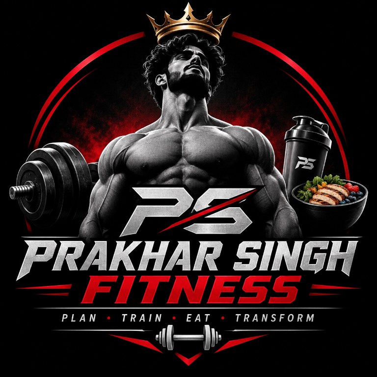

<!DOCTYPE html>
<html lang="en">
<head>
  <meta charset="UTF-8" />
  <meta name="viewport" content="width=device-width, initial-scale=1.0" />
  <title>Prakhar Singh Fitness</title>
  <link rel="icon" href="data:image/svg+xml;utf8,<svg xmlns='http://www.w3.org/2000/svg' viewBox='0 0 100 100'><rect width='100' height='100' fill='%230f172a'/><text x='50' y='60' font-size='34' text-anchor='middle' fill='%23ffffff' font-family='Arial'>PS</text></svg>" type="image/svg+xml" />
  <link rel="preconnect" href="https://fonts.googleapis.com" />
  <link rel="preconnect" href="https://fonts.gstatic.com" crossorigin />
  <link href="https://fonts.googleapis.com/css2?family=Barlow+Condensed:wght@600;700;800&family=DM+Sans:wght@400;500;600;700&display=swap" rel="stylesheet" />
  <script src="https://cdn.tailwindcss.com"></script>
  <style>
    :root {
      color-scheme: dark;
      --fitness-bg: #0c0c0d;
      --fitness-panel: #151516;
      --fitness-panel-raised: #19191b;
      --fitness-line: #29282a;
      --fitness-text: #f3f1f1;
      --fitness-muted: #a4a1a1;
      --fitness-red: #d51c25;
      --fitness-red-bright: #ff454b;
      --fitness-red-soft: rgba(213, 28, 37, .13);
      --fitness-display: "Barlow Condensed", "Arial Narrow", sans-serif;
      --fitness-body: "DM Sans", "Segoe UI", sans-serif;
      font-family: var(--fitness-body);
      background: var(--fitness-bg);
      color: var(--fitness-text);
      font-synthesis: none;
      text-rendering: optimizeLegibility;
    }

    html, body, #root { min-height: 100%; }
    html body.bg-zinc-950 { background: var(--fitness-bg); color: var(--fitness-text); }
    body, button, input, select, textarea { font-family: var(--fitness-body); }
    body { margin: 0; background: var(--fitness-bg); color: var(--fitness-text); }
    button, input, select, textarea { font-size: inherit; }
    button { -webkit-tap-highlight-color: transparent; }
    ::selection { background: rgba(213, 28, 37, .38); color: #fff; }
    :focus-visible { outline: 2px solid var(--fitness-red-bright); outline-offset: 3px; }

    .fitness-app-shell {
      position: relative;
      isolation: isolate;
      min-height: 100vh;
      background: var(--fitness-bg);
    }
    .fitness-app-shell::before {
      position: fixed;
      inset: 0;
      z-index: 0;
      background: url("fitness-logo.png") center / min(58vw, 560px) no-repeat;
      content: "";
      opacity: .055;
      mix-blend-mode: screen;
      pointer-events: none;
    }
    .fitness-skip-link {
      position: fixed;
      top: 8px;
      left: 8px;
      z-index: 80;
      padding: 10px 12px;
      border-radius: 6px;
      background: var(--fitness-red);
      color: #fff;
      font-size: 12px;
      font-weight: 700;
      transform: translateY(-150%);
    }
    .fitness-skip-link:focus { transform: translateY(0); }
    .fitness-sidebar {
      position: fixed;
      inset: 0 auto 0 0;
      z-index: 40;
      display: flex;
      width: 258px;
      flex-direction: column;
      padding: 23px 15px 17px;
      border-right: 1px solid #242325;
      background: #101011;
    }
    .fitness-brand {
      display: flex;
      min-height: 58px;
      align-items: center;
      gap: 9px;
      margin: 2px 4px 29px;
      color: var(--fitness-text);
      text-decoration: none;
    }
    .fitness-brand-logo {
      display: block;
      width: 58px;
      height: 58px;
      flex: 0 0 58px;
      border: 1px solid #29282a;
      border-radius: 8px;
      background: var(--fitness-bg);
      object-fit: contain;
    }
    .fitness-brand-copy { display: grid; gap: 3px; min-width: 0; }
    .fitness-brand-copy strong {
      overflow: hidden;
      font-family: var(--fitness-display);
      font-size: 20px;
      font-weight: 700;
      letter-spacing: .025em;
      line-height: 1;
      text-overflow: ellipsis;
      white-space: nowrap;
    }
    .fitness-brand-copy small {
      color: #a4a1a1;
      font-size: 9px;
      font-weight: 700;
      letter-spacing: .13em;
      text-transform: uppercase;
    }
    .fitness-sidebar-close { display: none; }
    .fitness-navigation {
      display: grid;
      gap: 15px;
      min-height: 0;
      overflow-y: auto;
      overscroll-behavior: contain;
      scrollbar-color: #3a3032 transparent;
      scrollbar-width: thin;
    }
    .fitness-nav-group { display: grid; gap: 3px; }
    .fitness-nav-heading {
      margin: 0;
      padding: 0 11px 5px;
      color: #858184;
      font-size: 9px;
      font-weight: 700;
      letter-spacing: .14em;
      text-transform: uppercase;
    }
    .fitness-nav-link {
      display: flex;
      min-height: 42px;
      width: 100%;
      align-items: center;
      gap: 11px;
      padding: 0 11px;
      border: 0;
      border-radius: 8px;
      background: transparent;
      color: #b7b4b4;
      cursor: pointer;
      text-align: left;
      transition: background-color .16s ease, color .16s ease;
    }
    .fitness-nav-link:hover:not(:disabled) { background: #1b1a1c; color: #fff; }
    .fitness-nav-link[aria-current="page"] {
      background: var(--fitness-red-soft);
      color: #fff;
    }
    .fitness-nav-link[aria-current="page"]::after {
      width: 6px;
      height: 6px;
      flex: 0 0 6px;
      margin-left: auto;
      border-radius: 50%;
      background: var(--fitness-red-bright);
      content: "";
    }
    .fitness-nav-link:disabled { color: #716e71; cursor: not-allowed; }
    .fitness-nav-link:disabled .fitness-nav-icon { color: #777477; }
    .fitness-nav-icon { width: 17px; height: 17px; flex: 0 0 17px; color: #969396; }
    .fitness-nav-link[aria-current="page"] .fitness-nav-icon { color: var(--fitness-red-bright); }
    .fitness-nav-label { min-width: 0; font-size: 12px; font-weight: 600; }
    .fitness-nav-lock {
      margin-left: auto;
      color: #777477;
      font-size: 9px;
      font-weight: 600;
      white-space: nowrap;
    }
    .fitness-sidebar-footer {
      margin-top: auto;
      padding-top: 16px;
    }
    .fitness-storage-note {
      display: flex;
      align-items: center;
      gap: 10px;
      padding: 12px 10px;
      border: 1px solid #29282a;
      border-radius: 9px;
      background: #151516;
    }
    .fitness-storage-dot {
      width: 7px;
      height: 7px;
      flex: 0 0 7px;
      border-radius: 50%;
      background: var(--fitness-red-bright);
      box-shadow: 0 0 9px rgba(255, 69, 75, .35);
    }
    .fitness-storage-copy { display: grid; gap: 3px; }
    .fitness-storage-copy strong { color: #e8e5e5; font-size: 10px; font-weight: 700; }
    .fitness-storage-copy small { color: #999699; font-size: 9px; }

    .fitness-workspace { position: relative; z-index: 1; min-height: 100vh; margin-left: 258px; }
    .fitness-topbar {
      position: sticky;
      top: 0;
      z-index: 20;
      display: flex;
      min-height: 78px;
      align-items: center;
      justify-content: space-between;
      gap: 16px;
      padding: 12px clamp(22px, 3vw, 42px);
      border-bottom: 1px solid #242325;
      background: rgba(12, 12, 13, .96);
      backdrop-filter: blur(12px);
    }
    .fitness-topbar-title { display: flex; min-width: 0; align-items: center; gap: 12px; }
    .fitness-topbar h1 {
      margin: 0;
      color: #f4f2f2;
      font-family: var(--fitness-display);
      font-size: 28px;
      font-weight: 700;
      letter-spacing: .015em;
      line-height: 1;
    }
    .fitness-topbar-actions { display: flex; align-items: center; gap: 14px; }
    .fitness-topbar-date { color: #aaa7aa; font-size: 11px; font-weight: 500; white-space: nowrap; }
    .fitness-profile-action {
      display: inline-flex;
      min-height: 38px;
      align-items: center;
      justify-content: center;
      gap: 8px;
      padding: 0 13px;
      border: 1px solid #a9161e;
      border-radius: 7px;
      background: var(--fitness-red);
      color: #fff;
      cursor: pointer;
      font-size: 11px;
      font-weight: 700;
      transition: background-color .16s ease, transform .16s ease;
    }
    .fitness-profile-action:hover { background: #ed3038; transform: translateY(-1px); }
    .fitness-profile-action .fitness-nav-icon { width: 15px; height: 15px; color: currentColor; }
    .fitness-account-sync-indicator { color: #c1bdc0; font-size: 10px; white-space: nowrap; }
    .fitness-menu-toggle {
      display: none;
      width: 40px;
      height: 40px;
      place-items: center;
      border: 1px solid #333134;
      border-radius: 8px;
      background: #171618;
      color: #fff;
      cursor: pointer;
    }
    .fitness-menu-toggle .fitness-nav-icon { width: 19px; height: 19px; color: currentColor; }
    .fitness-main { min-height: calc(100vh - 78px); }
    .fitness-main > [class*="max-w-"] {
      margin-right: auto !important;
      margin-left: auto !important;
      padding: 34px clamp(18px, 3vw, 42px) 48px !important;
    }
    .fitness-main h2, .fitness-main h3, .fitness-main h4 {
      font-family: var(--fitness-display);
      letter-spacing: .01em;
    }
    .fitness-main [class~="rounded-xl"],
    .fitness-main [class~="rounded-2xl"] { border-radius: 10px; }
    .fitness-main [class~="border-zinc-700"],
    .fitness-main [class~="border-zinc-800"],
    .fitness-main [class~="border-zinc-600"] { border-color: #2b2a2d; }
    .fitness-main [class~="bg-zinc-800/50"],
    .fitness-main [class~="bg-zinc-800/60"],
    .fitness-main [class~="bg-zinc-900/40"],
    .fitness-main [class~="bg-zinc-900/50"],
    .fitness-main [class~="bg-zinc-900/60"],
    .fitness-main [class~="bg-zinc-900/80"],
    .fitness-main [class~="bg-zinc-900"] { background-color: var(--fitness-panel); }
    .fitness-main [class~="bg-zinc-800"] { background-color: var(--fitness-panel-raised); }
    .fitness-main [class~="bg-zinc-800/30"] { background-color: #121213; }
    .fitness-main [class~="bg-gradient-to-r"] {
      background-image: none;
      background-color: var(--fitness-panel);
    }
    .fitness-main [class~="text-orange-300"],
    .fitness-main [class~="text-orange-400"],
    .fitness-main [class~="text-orange-500"] { color: var(--fitness-red-bright); }
    .fitness-main [class~="bg-orange-500"],
    .fitness-main [class~="bg-orange-600"] { background-color: var(--fitness-red); }
    .fitness-main [class~="bg-orange-500/5"] { background-color: rgba(213, 28, 37, .05); }
    .fitness-main [class~="bg-orange-500/10"] { background-color: rgba(213, 28, 37, .1); }
    .fitness-main [class~="bg-orange-500/20"] { background-color: var(--fitness-red-soft); }
    .fitness-main [class~="border-orange-500/40"],
    .fitness-main [class~="border-orange-500/50"] { border-color: rgba(213, 28, 37, .45); }
    .fitness-main [class~="hover:bg-orange-400"]:hover { background-color: #ed3038; }
    .fitness-main input,
    .fitness-main select,
    .fitness-main textarea {
      border-color: #39373a;
      background-color: #111112;
      color: #f3f1f1;
      color-scheme: dark;
    }
    .fitness-main input::placeholder,
    .fitness-main textarea::placeholder { color: #969396; opacity: 1; }
    .fitness-main input:focus,
    .fitness-main select:focus,
    .fitness-main textarea:focus { border-color: var(--fitness-red-bright); outline: none; }
    .fitness-main table { border-color: #2b2a2d; }
    .fitness-main th { color: #c9c6c7; }
    .fitness-main tr + tr { border-color: #29282a; }

    .fitness-page-dashboard { max-width: 1380px; }
    .dashboard-intro {
      display: flex;
      align-items: flex-end;
      justify-content: space-between;
      gap: 20px;
      margin-bottom: 22px;
    }
    .dashboard-intro h2 {
      margin: 0;
      color: #f4f2f2;
      font-size: clamp(32px, 3.4vw, 46px);
      font-weight: 700;
      letter-spacing: -.025em;
      line-height: .98;
    }
    .dashboard-intro p { max-width: 62ch; margin: 9px 0 0; color: #aaa7aa; font-size: 13px; line-height: 1.65; }
    .dashboard-intro .fitness-profile-action { flex: 0 0 auto; }
    .fitness-console {
      display: grid;
      grid-template-columns: minmax(0, 1.35fr) minmax(280px, .75fr);
      gap: 12px;
      margin-bottom: 12px;
    }
    .fitness-console-focus,
    .fitness-console-setup {
      min-width: 0;
      border: 1px solid #29282a;
      border-radius: 10px;
      background: #151516;
    }
    .fitness-console-focus {
      display: flex;
      min-height: 236px;
      flex-direction: column;
      justify-content: space-between;
      padding: clamp(22px, 3vw, 34px);
    }
    .fitness-console-focus h3 {
      max-width: 16ch;
      margin: 0;
      color: #f4f2f2;
      font-size: clamp(30px, 3.4vw, 44px);
      letter-spacing: -.02em;
      line-height: .98;
    }
    .fitness-today-heading {
      display: flex;
      flex-wrap: wrap;
      align-items: baseline;
      gap: 5px 12px;
    }
    .fitness-today-heading span {
      color: #aaa7aa;
      font-size: 10px;
      font-weight: 600;
      font-variant-numeric: tabular-nums;
    }
    .fitness-console-description {
      max-width: 52ch;
      margin: 12px 0 0;
      color: #c1bdc0;
      font-size: 12px;
      line-height: 1.7;
    }
    .fitness-console-weightline {
      display: flex;
      flex-wrap: wrap;
      align-items: baseline;
      gap: 8px 18px;
      margin-top: 24px;
      padding-top: 14px;
      border-top: 1px solid #302e31;
      color: #a4a1a1;
      font-size: 11px;
    }
    .fitness-console-weightline strong {
      color: #f3f1f1;
      font-size: 13px;
      font-variant-numeric: tabular-nums;
    }
    .fitness-console-nutrition {
      display: grid;
      grid-template-columns: repeat(2, minmax(0, 1fr));
      margin-top: 13px;
      border-top: 1px solid #302e31;
    }
    .fitness-console-nutrition-item {
      display: grid;
      gap: 5px;
      padding: 11px 14px 0;
    }
    .fitness-console-nutrition-item:first-child {
      padding-left: 0;
      border-right: 1px solid #302e31;
    }
    .fitness-console-nutrition-item span { color: #aaa7aa; font-size: 10px; }
    .fitness-console-nutrition-item strong {
      color: #f3f1f1;
      font-family: var(--fitness-display);
      font-size: 24px;
      font-variant-numeric: tabular-nums;
      line-height: 1;
    }
    .fitness-console-actions { display: flex; flex-wrap: wrap; gap: 9px; margin-top: 21px; }
    .fitness-console-action {
      display: inline-flex;
      min-height: 38px;
      align-items: center;
      justify-content: center;
      gap: 8px;
      padding: 0 13px;
      border: 1px solid #39373a;
      border-radius: 7px;
      background: #1b1a1c;
      color: #f3f1f1;
      cursor: pointer;
      font-size: 11px;
      font-weight: 700;
      transition: border-color .16s ease, background-color .16s ease, transform .16s ease;
    }
    .fitness-console-action:hover:not(:disabled) {
      transform: translateY(-1px);
      border-color: #6a3034;
      background: #211a1b;
    }
    .fitness-console-action-primary {
      border-color: #a9161e;
      background: var(--fitness-red);
      color: #fff;
    }
    .fitness-console-action-primary:hover:not(:disabled) { background: #ed3038; }
    .fitness-console-action:disabled { cursor: not-allowed; opacity: .58; }
    .fitness-console-setup {
      display: flex;
      flex-direction: column;
      padding: 22px 23px;
    }
    .fitness-console-setup h3 {
      margin: 0 0 18px;
      color: #f0eded;
      font-size: 22px;
    }
    .fitness-console-setup dl { display: grid; margin: 0; }
    .fitness-console-setup dl > div {
      display: flex;
      min-height: 46px;
      align-items: center;
      justify-content: space-between;
      gap: 12px;
      border-top: 1px solid #302e31;
    }
    .fitness-console-setup dt { color: #a4a1a1; font-size: 11px; }
    .fitness-console-setup dd {
      margin: 0;
      color: #f3f1f1;
      font-size: 12px;
      font-weight: 600;
      text-align: right;
    }
    .fitness-measurements {
      margin-top: 12px;
      padding: 19px 22px 21px;
      border: 1px solid #29282a;
      border-radius: 10px;
      background: #121213;
    }
    .fitness-measurements-heading {
      display: flex;
      align-items: baseline;
      justify-content: space-between;
      gap: 12px;
      margin-bottom: 15px;
    }
    .fitness-measurements-heading h3 { margin: 0; color: #e9e6e6; font-size: 21px; }
    .fitness-measurements-heading p { margin: 0; color: #a4a1a1; font-size: 10px; }
    .fitness-metrics-grid {
      display: grid;
      grid-template-columns: repeat(4, minmax(0, 1fr));
    }
    .fitness-metric-card {
      min-width: 0;
      padding: 3px 17px;
      border: 0;
      border-right: 1px solid #302e31;
    }
    .fitness-metric-card:first-child { padding-left: 0; }
    .fitness-metric-card:last-child { padding-right: 0; border-right: 0; }
    .fitness-metric-label { margin: 0 0 8px; color: #a4a1a1; font-size: 10px; }
    .fitness-metric-value {
      margin: 0;
      color: #f4f2f2;
      font-family: var(--fitness-display);
      font-size: 26px;
      font-weight: 700;
      font-variant-numeric: tabular-nums;
      line-height: 1;
    }
    .fitness-shortcuts { margin-top: 28px; }
    .fitness-shortcuts-heading {
      display: flex;
      align-items: baseline;
      justify-content: space-between;
      gap: 14px;
      margin: 0 0 12px;
    }
    .fitness-shortcuts-heading h3 { margin: 0; font-size: 25px; }
    .fitness-shortcuts-heading p { max-width: 50ch; margin: 0; color: #a4a1a1; font-size: 11px; }
    .fitness-shortcut-grid {
      display: grid;
      border-top: 1px solid #302e31;
    }
    .fitness-quick-link {
      display: flex;
      min-height: 64px;
      align-items: center;
      gap: 15px;
      padding: 10px 12px;
      border: 0;
      border-bottom: 1px solid #302e31;
      background: transparent;
      color: var(--fitness-text);
      cursor: pointer;
      text-align: left;
      transition: background-color .16s ease, color .16s ease;
    }
    .fitness-quick-link:hover:not(:disabled) { background: #171618; }
    .fitness-quick-link:disabled { cursor: not-allowed; opacity: .58; }
    .fitness-quick-link .fitness-nav-icon { color: var(--fitness-red-bright); }
    .fitness-quick-link-copy { display: grid; min-width: 0; gap: 3px; }
    .fitness-quick-link strong { font-family: var(--fitness-display); font-size: 20px; font-weight: 700; }
    .fitness-quick-link-copy span { color: #aaa7aa; font-size: 10px; line-height: 1.5; }
    .fitness-quick-link-action {
      margin-left: auto;
      color: #aaa7aa;
      font-size: 10px;
      font-weight: 700;
      white-space: nowrap;
    }
    .fitness-mobile-scrim { display: none; }

    @media (max-width: 1100px) {
      .fitness-sidebar { width: 232px; }
      .fitness-workspace { margin-left: 232px; }
      .fitness-topbar { min-height: 72px; }
      .fitness-shortcut-grid { gap: 9px; }
      .fitness-quick-link { padding: 14px; }
    }
    @media (max-width: 860px) {
      .fitness-sidebar {
        visibility: hidden;
        width: min(300px, calc(100vw - 48px));
        height: 100vh;
        height: 100dvh;
        padding: max(18px, env(safe-area-inset-top)) 15px max(14px, env(safe-area-inset-bottom));
        overflow: hidden;
        transform: translateX(-105%);
        transition: transform .2s ease, visibility 0s linear .2s;
      }
      .fitness-app-shell.mobile-menu-open .fitness-sidebar {
        visibility: visible;
        transform: translateX(0);
        transition-delay: 0s;
        box-shadow: 12px 0 35px rgba(0, 0, 0, .48);
      }
      .fitness-brand { margin: 2px 4px 16px; }
      .fitness-navigation { flex: 1 1 auto; overflow-y: auto; -webkit-overflow-scrolling: touch; }
      .fitness-sidebar-close {
        display: grid;
        width: 34px;
        height: 34px;
        flex: 0 0 34px;
        margin-left: auto;
        place-items: center;
        border: 1px solid #373538;
        border-radius: 7px;
        background: #171618;
        color: #fff;
        cursor: pointer;
      }
      .fitness-workspace { margin-left: 0; }
      .fitness-menu-toggle { display: grid; }
      .fitness-mobile-scrim {
        position: fixed;
        inset: 0;
        z-index: 30;
        display: block;
        border: 0;
        background: rgba(0, 0, 0, .62);
      }
      .fitness-topbar { min-height: 68px; padding: 10px 18px; }
      .fitness-main { min-height: calc(100vh - 68px); }
    }
    @media (max-width: 620px) {
      .fitness-topbar { gap: 10px; }
      .fitness-topbar-title { gap: 9px; }
      .fitness-topbar h1 { font-size: 25px; }
      .fitness-topbar-actions { gap: 8px; }
      .fitness-topbar-date { display: none; }
      .fitness-profile-action { min-height: 36px; padding: 0 10px; font-size: 10px; }
      .fitness-main > [class*="max-w-"] { padding: 25px 17px 38px !important; }
      .dashboard-intro { align-items: flex-start; flex-direction: column; gap: 14px; margin-bottom: 20px; }
      .dashboard-intro h2 { font-size: 35px; }
      .dashboard-intro p { margin-top: 7px; font-size: 12px; }
      .fitness-console { grid-template-columns: 1fr; gap: 9px; }
      .fitness-console-focus { min-height: 0; padding: 21px 18px; }
      .fitness-console-focus h3 { font-size: 34px; }
      .fitness-today-heading { gap: 4px 9px; }
      .fitness-console-weightline { gap: 6px 12px; margin-top: 19px; }
      .fitness-console-nutrition-item { padding-right: 9px; padding-left: 9px; }
      .fitness-console-nutrition-item:first-child { padding-left: 0; }
      .fitness-console-actions { margin-top: 18px; }
      .fitness-console-action { flex: 1 1 140px; }
      .fitness-console-setup { padding: 18px; }
      .fitness-console-setup h3 { margin-bottom: 10px; }
      .fitness-measurements { padding: 16px 15px; }
      .fitness-measurements-heading { align-items: flex-start; flex-direction: column; gap: 4px; }
      .fitness-metrics-grid { grid-template-columns: repeat(2, minmax(0, 1fr)); row-gap: 16px; }
      .fitness-metric-card { padding: 3px 10px; }
      .fitness-metric-card:nth-child(2) { border-right: 0; }
      .fitness-metric-card:nth-child(3) { padding-left: 0; }
      .fitness-metric-card:nth-child(4) { padding-right: 0; }
      .fitness-shortcuts { margin-top: 24px; }
      .fitness-shortcuts-heading { align-items: flex-start; flex-direction: column; gap: 3px; }
      .fitness-quick-link { min-height: 61px; gap: 11px; padding: 9px 7px; }
      .fitness-quick-link strong { font-size: 18px; }
      .fitness-quick-link-action { font-size: 9px; }
    }
    @media (prefers-reduced-motion: reduce) {
      *, *::before, *::after { scroll-behavior: auto !important; transition-duration: .01ms !important; animation-duration: .01ms !important; }
    }
    .fitness-client-switcher-label { color: #aaa7aa; font-size: 10px; white-space: nowrap; }
    .fitness-client-switcher {
      max-width: 180px;
      min-height: 36px;
      padding: 0 30px 0 10px;
      border: 1px solid #39373a;
      border-radius: 7px;
      background: #151516;
      color: #f3f1f1;
      font-size: 11px;
      font-weight: 600;
    }
    .fitness-page-clients { max-width: 1120px; margin: 0 auto; padding: 32px 20px; }
    .fitness-clients-intro {
      display: flex;
      align-items: flex-end;
      justify-content: space-between;
      gap: 20px;
      margin-bottom: 20px;
    }
    .fitness-clients-intro h2 {
      margin: 0;
      color: #f4f2f2;
      font-size: clamp(32px, 3.4vw, 46px);
      font-weight: 700;
      letter-spacing: -.025em;
      line-height: .98;
    }
    .fitness-clients-intro p { max-width: 60ch; margin: 9px 0 0; color: #c1bdc0; font-size: 13px; line-height: 1.65; }
    .fitness-client-count { color: #d3ced0; font-size: 11px; font-variant-numeric: tabular-nums; white-space: nowrap; }
    .fitness-client-local-note {
      display: flex;
      flex-wrap: wrap;
      align-items: center;
      gap: 7px 12px;
      margin: 0 0 18px;
      padding: 12px 14px;
      border: 1px solid #41393a;
      border-radius: 8px;
      background: #171516;
      color: #e2d9da;
      font-size: 12px;
      line-height: 1.55;
    }
    .fitness-client-local-note strong { color: #fff; font-size: 12px; }
    .fitness-client-local-note > span { flex: 1 1 340px; color: #e2d9da; }
    .fitness-client-local-note.is-error { border-color: #704044; color: #ffb1b4; }
    .fitness-client-invite-link { display: grid; gap: 7px; padding-top: 9px; border-top: 1px solid #302e31; }
    .fitness-client-invite-link label { margin: 0; }
    .fitness-client-invite-link input { width: 100%; min-height: 36px; padding: 0 9px; border: 1px solid #39373a; border-radius: 6px; background: #111112; color: #f3f1f1; font-size: 10px; }
    .fitness-client-select:disabled { opacity: .6; cursor: not-allowed; }
    .fitness-account-scrim {
      position: fixed;
      inset: 0;
      z-index: 100;
      display: grid;
      place-items: center;
      overflow-y: auto;
      padding: 20px;
      background: rgba(0, 0, 0, .78);
    }
    .fitness-account-panel {
      width: min(100%, 460px);
      padding: 23px;
      border: 1px solid #39373a;
      border-radius: 10px;
      background: #151516;
      box-shadow: 0 18px 48px rgba(0, 0, 0, .42);
    }
    .fitness-account-heading { display: flex; align-items: start; justify-content: space-between; gap: 14px; margin-bottom: 18px; }
    .fitness-account-heading h2 { margin: 0; color: #f4f2f2; font-family: var(--fitness-display); font-size: 30px; line-height: 1; }
    .fitness-account-heading p { margin: 7px 0 0; color: #c1bdc0; font-size: 12px; line-height: 1.6; }
    .fitness-account-close { min-width: 34px; min-height: 34px; border: 1px solid #39373a; border-radius: 7px; background: #1b1a1c; color: #f3f1f1; cursor: pointer; }
    .fitness-account-form { display: grid; gap: 10px; }
    .fitness-account-form label { margin-top: 3px; color: #e2dfe0; font-size: 11px; font-weight: 600; }
    .fitness-account-form input { width: 100%; min-height: 40px; padding: 0 11px; border: 1px solid #39373a; border-radius: 7px; background: #111112; color: #f3f1f1; font-size: 12px; }
    .fitness-account-form input:focus-visible { border-color: var(--fitness-red-bright); }
    .fitness-account-help { margin: 0; color: #b7b2b4; font-size: 11px; line-height: 1.55; }
    .fitness-account-message { margin: 2px 0 0; color: #d4d0d1; font-size: 11px; line-height: 1.5; }
    .fitness-account-message.is-error { color: #ff9a9e; }
    .fitness-account-actions { display: flex; flex-wrap: wrap; gap: 8px; margin-top: 8px; }
    .fitness-account-switch { padding: 8px 0; border: 0; background: transparent; color: #ff858a; cursor: pointer; font-size: 11px; font-weight: 600; text-align: left; }
    .fitness-account-signed-in { display: grid; gap: 12px; }
    .fitness-account-signed-in strong { color: #f3f1f1; font-size: 13px; overflow-wrap: anywhere; }
    .fitness-account-signed-in p { margin: 0; color: #b7b2b4; font-size: 12px; line-height: 1.6; }
    .fitness-account-checking { position: fixed; inset: 0; z-index: 120; display: grid; place-items: center; padding: 20px; background: #0c0c0d; color: #f3f1f1; font-size: 13px; }
    .fitness-client-workspace { display: grid; grid-template-columns: minmax(250px, .75fr) minmax(0, 1.25fr); gap: 16px; align-items: start; }
    .fitness-client-create,
    .fitness-client-roster {
      min-width: 0;
      border: 1px solid #29282a;
      border-radius: 10px;
      background: #151516;
    }
    .fitness-client-create { display: grid; gap: 10px; padding: 20px; }
    .fitness-client-create h3,
    .fitness-client-roster-heading h3 { margin: 0; color: #f0eded; font-size: 23px; }
    .fitness-client-create > p { margin: 0 0 8px; color: #c1bdc0; font-size: 12px; line-height: 1.6; }
    .fitness-client-create label { margin-top: 5px; color: #e2dfe0; font-size: 11px; font-weight: 600; }
    .fitness-client-create label span { color: #b6b1b3; font-weight: 400; }
    .fitness-client-create input { width: 100%; min-height: 40px; padding: 0 11px; border: 1px solid #39373a; border-radius: 7px; background: #111112; color: #f3f1f1; font-size: 12px; }
    .fitness-client-create input::placeholder { color: #aaa6a8; opacity: 1; }
    .fitness-client-create .fitness-console-action { justify-self: start; margin-top: 6px; }
    .fitness-client-message { margin: 3px 0 0; color: #d4d0d1; font-size: 11px; line-height: 1.5; }
    .fitness-client-message.is-error { color: #ff9a9e; }
    .fitness-client-roster { padding: 20px; }
    .fitness-client-roster-heading { display: flex; flex-wrap: wrap; align-items: baseline; justify-content: space-between; gap: 8px 14px; padding-bottom: 14px; }
    .fitness-client-roster-heading > span { color: #b7b2b4; font-size: 11px; }
    .fitness-client-list { border-top: 1px solid #302e31; }
    .fitness-client-row { display: flex; min-height: 68px; align-items: center; justify-content: space-between; gap: 14px; padding: 10px 0; border-bottom: 1px solid #302e31; }
    .fitness-client-row-actions { display: flex; flex: 0 0 auto; align-items: center; gap: 7px; }
    .fitness-client-identity { display: grid; min-width: 0; gap: 4px; }
    .fitness-client-identity strong { overflow: hidden; color: #f3f1f1; font-size: 13px; font-weight: 600; text-overflow: ellipsis; white-space: nowrap; }
    .fitness-client-identity span { overflow: hidden; color: #b7b2b4; font-size: 10px; text-overflow: ellipsis; white-space: nowrap; }
    .fitness-client-select {
      min-height: 34px;
      flex: 0 0 auto;
      padding: 0 11px;
      border: 1px solid #39373a;
      border-radius: 7px;
      background: #1b1a1c;
      color: #f3f1f1;
      cursor: pointer;
      font-size: 10px;
      font-weight: 700;
    }
    .fitness-client-select:hover:not(.is-active) { border-color: #6a3034; background: #211a1b; }
    .fitness-client-select.is-active { border-color: #653034; background: var(--fitness-red-soft); color: #fff; cursor: default; }
    .fitness-client-remove {
      min-height: 34px;
      padding: 0 10px;
      border: 1px solid #514044;
      border-radius: 7px;
      background: transparent;
      color: #ffb1b4;
      cursor: pointer;
      font-size: 10px;
      font-weight: 700;
    }
    .fitness-client-remove:hover { border-color: #a63b42; background: #291719; color: #fff; }
    .fitness-client-remove:focus-visible { outline: 2px solid var(--fitness-red-bright); outline-offset: 3px; }

    @media (max-width: 860px) {
      .fitness-client-workspace { grid-template-columns: minmax(0, .9fr) minmax(0, 1.1fr); gap: 12px; }
      .fitness-client-create, .fitness-client-roster { padding: 16px; }
    }
    @media (max-width: 680px) {
      .fitness-client-switcher-label { display: none; }
      .fitness-client-switcher { max-width: 130px; }
      .fitness-account-sync-indicator { display: none; }
      .fitness-page-clients { padding: 24px 16px; }
      .fitness-client-workspace { grid-template-columns: minmax(0, 1fr); }
      .fitness-clients-intro { align-items: flex-start; }
      .fitness-account-panel { padding: 18px; }
    }
  </style>
  <script crossorigin src="https://unpkg.com/react@18/umd/react.development.js"></script>
  <script crossorigin src="https://unpkg.com/react-dom@18/umd/react-dom.development.js"></script>
  <script src="https://unpkg.com/@babel/standalone/babel.min.js"></script>
  <script>
    if (typeof console !== 'undefined') {
      const originalWarn = console.warn;
      console.warn = function(...args) {
        const msg = args[0]?.toString?.() || '';
        if (msg.includes('production') || msg.includes('Babel') || msg.includes('tailwindcss')) return;
        originalWarn.apply(console, args);
      };
    }
  </script>
</head>
<body class="bg-zinc-950 text-white min-h-screen">
  <div id="root" class="min-h-screen"></div>
  <script src="dietMeals.js?v=20261102.1"></script>
  <script type="text/babel">
const { useMemo, useState, useEffect, useRef, createContext, useContext } = React;

// ==================== UTILITY FUNCTIONS ====================
function parseTimeToken(hourToken, minuteToken, periodToken) {
  let h = Number(hourToken);
  const min = Number(minuteToken || 0);
  const p = String(periodToken || '').toLowerCase();
  if (p === 'pm' && h !== 12) h += 12;
  if (p === 'am' && h === 12) h = 0;
  return h + min / 60;
}

function formatTime(hour24) {
  const total = Math.round((((hour24 % 24) + 24) % 24) * 60);
  const h = Math.floor(total / 60);
  const m = total % 60;
  const period = h >= 12 ? 'PM' : 'AM';
  const displayH = h % 12 || 12;
  const displayM = m.toString().padStart(2, '0');
  return `${displayH}:${displayM} ${period}`;
}

function getLocalDateInputValue(date = new Date()) {
  return `${date.getFullYear()}-${String(date.getMonth() + 1).padStart(2, '0')}-${String(date.getDate()).padStart(2, '0')}`;
}

function parseWorkoutTimes(workoutTime) {
  if (!String(workoutTime || '').trim()) {
    return { startHour: 18, endHour: 19 };
  }

  const match = String(workoutTime).trim().match(
    /^(1[0-2]|0?[1-9])(?::([0-5]\d))?\s*(am|pm)(?:\s*(?:-|–|to)\s*(1[0-2]|0?[1-9])(?::([0-5]\d))?\s*(am|pm))?$/i
  );
  if (!match) return null;

  const startHour = parseTimeToken(match[1], match[2], match[3]);
  const endHour = match[4]
    ? parseTimeToken(match[4], match[5], match[6])
    : startHour + 1;
  if (endHour <= startHour || endHour >= 23.5 || endHour - startHour > 12) return null;
  return { startHour, endHour };
}

function getScheduledMealTimes(workoutTime) {
  const hasWorkout = Boolean(String(workoutTime || '').trim());
  const workoutTimes = parseWorkoutTimes(workoutTime) || { startHour: 18, endHour: 19 };
  const { startHour: workoutStart, endHour: workoutEnd } = workoutTimes;
  const preWorkoutHour = hasWorkout ? workoutStart - 0.5 : null;
  const postWorkoutHour = hasWorkout ? workoutEnd + 0.5 : null;
  const breakfastHour = hasWorkout && workoutEnd <= 9
    ? Math.max(7, postWorkoutHour + 0.75)
    : 7;
  const afternoonWorkout = hasWorkout && workoutStart >= 15 && workoutStart <= 18;
  const eveningWorkout = hasWorkout && workoutStart >= 18 && workoutStart < 19;
  const lateWorkout = hasWorkout && workoutStart >= 19;
  const lunchHour = hasWorkout && workoutEnd >= 11.5 && workoutEnd <= 14.5
    ? workoutEnd + 1
    : afternoonWorkout ? Math.min(13, workoutStart - 3) : 13;
  const snackHour = lateWorkout
    ? Math.min(16.5, workoutStart - 3.5)
    : afternoonWorkout ? workoutStart - 1.5 : 16.5;
  const dinnerHour = lateWorkout
    ? workoutStart - 1.5
    : eveningWorkout ? Math.max(20.5, postWorkoutHour + 1) : 20;

  const schedule = hasWorkout
    ? [
        [breakfastHour, 0],
        [preWorkoutHour, 2],
        [postWorkoutHour, 3],
        [lunchHour, 1],
        [snackHour, 4],
        [dinnerHour, 5],
      ]
    : [
        [breakfastHour, 0],
        [lunchHour, 1],
        [snackHour, 4],
        [dinnerHour, 5],
      ];

  return schedule.sort((left, right) => left[0] - right[0]);
}

function getWorkoutPrescription(level) {
  const prescriptions = {
    Beginner: { sets: 3, restSeconds: 60, cardioMinutes: '15–20' },
    Intermediate: { sets: 3, restSeconds: 90, cardioMinutes: '20–25' },
    Advanced: { sets: 3, restSeconds: 120, cardioMinutes: '20–30' },
  };
  return prescriptions[level] || prescriptions.Intermediate;
}

function getTimelineMonths(value, fallback = 1) {
  const parsed = Number(value);
  if (!Number.isFinite(parsed)) return fallback;
  return Math.min(120, Math.max(1, Math.floor(parsed)));
}

const months = [
  { month: 1, startWeight: 72, endWeight: 70.5, calories: 2200, protein: 150 },
  { month: 2, startWeight: 70.5, endWeight: 69, calories: 2150, protein: 150 },
  { month: 3, startWeight: 69, endWeight: 67.5, calories: 2100, protein: 155 },
  { month: 4, startWeight: 67.5, endWeight: 66, calories: 2100, protein: 160 },
  { month: 5, startWeight: 66, endWeight: 64.8, calories: 2050, protein: 165 },
  { month: 6, startWeight: 64.8, endWeight: 63.5, calories: 2000, protein: 170 },
];

function getDynamicDietMonths(userProfile) {
  const totalMonths = getTimelineMonths(userProfile.timeline, months.length);
  const currentWeight = Number(userProfile.currentWeight) || 0;
  const targetWeight = Number(userProfile.targetWeight) || currentWeight;
  const step = totalMonths > 1 ? (targetWeight - currentWeight) / totalMonths : 0;
  const calculatorTarget = Number(userProfile.calorieTarget) || null;
  const goalText = String(userProfile.goal || '').toLowerCase();

  return Array.from({ length: totalMonths }, (_, index) => {
    const monthNumber = index + 1;
    const startWeight = Number((currentWeight + step * index).toFixed(1));
    const endWeight = Number((currentWeight + step * (index + 1)).toFixed(1));
    const monthBase = months[index % months.length] || months[0];
    const anchorCalories = calculatorTarget || months[0].calories;
    const calories = Math.max(
      1200,
      Math.round(anchorCalories + (startWeight - currentWeight) * 30)
    );

    const proteinBase = calculatorTarget
      ? Math.max(monthBase.protein, Math.round((startWeight || 60) * (goalText.includes('gain') || goalText.includes('muscle') ? 2.1 : 1.8)))
      : monthBase.protein;
    const proteinGrowth = totalMonths > 1
      ? Math.round((startWeight - currentWeight) * (goalText.includes('gain') || goalText.includes('muscle') ? 0.3 : 0.25))
      : 0;
    const protein = Math.max(110, proteinBase + proteinGrowth);

    return {
      month: monthNumber,
      startWeight: Number.isFinite(startWeight) ? startWeight : monthBase.startWeight,
      endWeight: Number.isFinite(endWeight) ? endWeight : monthBase.endWeight,
      calories,
      protein,
    };
  });
}

// ==================== DATA STRUCTURES ====================
const exerciseDatabase = {
  Beginner: {
    home: [
      { muscle: 'Chest', color: 'text-rose-300', exercises: ['Push-Ups', 'Incline Push-Ups', 'Band Chest Press'] },
      { muscle: 'Triceps', color: 'text-red-300', exercises: ['Diamond Push-Ups', 'Band Triceps Extensions', 'Bench Dips'] },
      { muscle: 'Back', color: 'text-sky-300', exercises: ['Prone Y-T-W', 'Resistance Band Rows', 'Doorway Rows'] },
      { muscle: 'Biceps', color: 'text-cyan-300', exercises: ['Band Curls', 'Isometric Bicep Holds', 'Chin-Up Negatives'] },
      { muscle: 'Legs', color: 'text-amber-300', exercises: ['Bodyweight Squats', 'Reverse Lunges', 'Glute Bridges'] },
      { muscle: 'Shoulders', color: 'text-violet-300', exercises: ['Wall Slides', 'Band Shoulder Press', 'Lateral Raises'] },
      { muscle: 'Core', color: 'text-emerald-300', exercises: ['Plank', 'Dead Bug', 'Bird Dog'] },
      { muscle: 'Cardio', type: 'cardio', color: 'text-orange-300', exercises: ['Brisk March in Place', 'Low-Impact Step-Ups', 'Shadow Boxing'] },
    ],
    gym: [
      { muscle: 'Chest', color: 'text-rose-300', exercises: ['Machine Chest Press', 'Cable Fly', 'Push-Up Variations'] },
      { muscle: 'Triceps', color: 'text-red-300', exercises: ['Cable Triceps Pushdown', 'Skull Crushers', 'Overhead Triceps Extension'] },
      { muscle: 'Back', color: 'text-sky-300', exercises: ['Lat Pulldown', 'Seated Row', 'Single-Arm Cable Row'] },
      { muscle: 'Biceps', color: 'text-cyan-300', exercises: ['EZ-Bar Curl', 'Hammer Curl', 'Preacher Curl'] },
      { muscle: 'Legs', color: 'text-amber-300', exercises: ['Goblet Squat', 'Leg Press', 'Walking Lunges'] },
      { muscle: 'Shoulders', color: 'text-violet-300', exercises: ['Dumbbell Shoulder Press', 'Lateral Raises', 'Rear Delt Fly'] },
      { muscle: 'Core', color: 'text-emerald-300', exercises: ['Cable Crunch', 'Romanian Twist', 'Hanging Knee Raise'] },
      { muscle: 'Cardio', type: 'cardio', color: 'text-orange-300', exercises: ['Treadmill Walk', 'Stationary Bike', 'Elliptical'] },
    ],
  },
  Intermediate: {
    home: [
      { muscle: 'Chest', color: 'text-rose-300', exercises: ['Push-Up Cluster', 'Band Press', 'Slow Eccentric Push-Ups'] },
      { muscle: 'Triceps', color: 'text-red-300', exercises: ['Close-Grip Push-Ups', 'Resistance Band Triceps Press', 'Triangle Dips'] },
      { muscle: 'Back', color: 'text-sky-300', exercises: ['Band Pull-Aparts', 'Single-Arm Rows', 'Isometric Rows'] },
      { muscle: 'Biceps', color: 'text-cyan-300', exercises: ['Band Curls', 'Reverse Grip Curls', 'Iso Biceps Holds'] },
      { muscle: 'Legs', color: 'text-amber-300', exercises: ['Split Squats', 'Bulgarian Split Squats', 'Single-Leg Glute Bridge'] },
      { muscle: 'Shoulders', color: 'text-violet-300', exercises: ['Band Overhead Press', 'Scaption Raises', 'Front Raise'] },
      { muscle: 'Core', color: 'text-emerald-300', exercises: ['Plank Variations', 'Hollow Hold', 'Mountain Climbers'] },
      { muscle: 'Cardio', type: 'cardio', color: 'text-orange-300', exercises: ['Jump Rope', 'High Knees', 'Mountain Climbers'] },
    ],
    gym: [
      { muscle: 'Chest', color: 'text-rose-300', exercises: ['Barbell Bench Press', 'Incline DB Press', 'Cable Fly'] },
      { muscle: 'Triceps', color: 'text-red-300', exercises: ['Cable Triceps Extension', 'Close-Grip Bench Press', 'Skull Crusher'] },
      { muscle: 'Back', color: 'text-sky-300', exercises: ['Weighted Pull-Ups', 'Chest-Supported Row', 'Lat Pulldown'] },
      { muscle: 'Biceps', color: 'text-cyan-300', exercises: ['Barbell Curl', 'Incline DB Curl', 'Hammer Curl'] },
      { muscle: 'Legs', color: 'text-amber-300', exercises: ['Barbell Squat', 'Romanian Deadlift', 'Leg Press'] },
      { muscle: 'Shoulders', color: 'text-violet-300', exercises: ['Seated Dumbbell Press', 'Cable Lateral Raise', 'Reverse Pec Deck'] },
      { muscle: 'Core', color: 'text-emerald-300', exercises: ['Ab Crunch', 'Cable Woodchop', 'Weighted Decline Sit-Up'] },
      { muscle: 'Cardio', type: 'cardio', color: 'text-orange-300', exercises: ['Rowing Machine', 'Incline Treadmill', 'Stationary Bike Intervals'] },
    ],
  },
  Advanced: {
    home: [
      { muscle: 'Chest', color: 'text-rose-300', exercises: ['Explosive Push-Ups', 'Weighted Push-Ups', 'Band Press Burnout'] },
      { muscle: 'Triceps', color: 'text-red-300', exercises: ['Close-Grip Push-Ups', 'Weighted Dips', 'Resistance Band Overhead Extension'] },
      { muscle: 'Back', color: 'text-sky-300', exercises: ['Wide-Grip Band Rows', 'Pull-Apart Ladder', 'Isometric Row Hold'] },
      { muscle: 'Biceps', color: 'text-cyan-300', exercises: ['Heavy Band Curls', 'Spider Curls', 'Chin-Up Hold'] },
      { muscle: 'Legs', color: 'text-amber-300', exercises: ['Jump Squats', 'Tempo Split Squats', 'Single-Leg RDL'] },
      { muscle: 'Shoulders', color: 'text-violet-300', exercises: ['Pike Push-Ups', 'Heavy Band Overhead Press', 'High Pulls'] },
      { muscle: 'Core', color: 'text-emerald-300', exercises: ['Ab Wheel', 'Side Plank', 'Weighted Carry'] },
      { muscle: 'Cardio', type: 'cardio', color: 'text-orange-300', exercises: ['Burpee Intervals', 'Jump Rope Intervals', 'High-Knee Sprints'] },
    ],
    gym: [
      { muscle: 'Chest', color: 'text-rose-300', exercises: ['Weighted Bench Press', 'Incline Barbell Press', 'Dumbbell Fly'] },
      { muscle: 'Triceps', color: 'text-red-300', exercises: ['Close-Grip Bench Press', 'Cable Pushdown', 'Weighted Dip'] },
      { muscle: 'Back', color: 'text-sky-300', exercises: ['Weighted Pull-Ups', 'One-Arm Dumbbell Row', 'Deadlift'] },
      { muscle: 'Biceps', color: 'text-cyan-300', exercises: ['Barbell Curl', 'Preacher Curl', 'Concentration Curl'] },
      { muscle: 'Legs', color: 'text-amber-300', exercises: ['Back Squat', 'Front Squat', 'Hip Thrust'] },
      { muscle: 'Shoulders', color: 'text-violet-300', exercises: ['Standing Overhead Press', 'Arnold Press', 'Cable Lateral Raise'] },
      { muscle: 'Core', color: 'text-emerald-300', exercises: ['Cable Crunch', 'Weighted Russian Twist', 'Hanging Leg Raise'] },
      { muscle: 'Cardio', type: 'cardio', color: 'text-orange-300', exercises: ['Treadmill Intervals', 'Rowing Intervals', 'Assault Bike Intervals'] },
    ],
  },
};

const WEEKLY_WORKOUT_ROUTINES = {
  Beginner: {
    plan: ['Chest + Triceps', 'Back + Biceps', 'Legs + Core', 'Shoulders + Core', 'Full Body', 'Cardio + Arms', 'Rest and Recovery Time'],
    targets: [
      ['Chest', 'Triceps'],
      ['Back', 'Biceps'],
      ['Legs', 'Core'],
      ['Shoulders', 'Core'],
      ['Chest', 'Back', 'Legs'],
      ['Biceps', 'Triceps', 'Shoulders', 'Cardio'],
      [],
    ],
  },
  Intermediate: {
    plan: ['Push + Triceps', 'Pull + Biceps', 'Lower Body', 'Shoulders + Abs', 'Upper + Lower', 'Arms + Cardio', 'Rest and Recovery Time'],
    targets: [
      ['Chest', 'Triceps', 'Shoulders'],
      ['Back', 'Biceps', 'Shoulders'],
      ['Legs', 'Core'],
      ['Shoulders', 'Core'],
      ['Chest', 'Back', 'Legs'],
      ['Biceps', 'Triceps', 'Shoulders', 'Cardio'],
      [],
    ],
  },
  Advanced: {
    plan: ['Upper Power', 'Lower Strength', 'Push + Pull', 'Legs + Core', 'Power Circuit', 'Arms + Cardio', 'Rest and Recovery Time'],
    targets: [
      ['Chest', 'Triceps', 'Shoulders'],
      ['Legs', 'Core'],
      ['Chest', 'Back', 'Shoulders', 'Triceps', 'Biceps'],
      ['Legs', 'Core', 'Shoulders'],
      ['Chest', 'Back', 'Legs', 'Shoulders'],
      ['Biceps', 'Triceps', 'Cardio'],
      [],
    ],
  },
};

const WORKOUT_DAY_NAMES = ['Monday', 'Tuesday', 'Wednesday', 'Thursday', 'Friday', 'Saturday', 'Sunday'];

function getCurrentWorkoutDay(workoutLevel, date = new Date()) {
  const dayIndex = (date.getDay() + 6) % 7;
  const routine = WEEKLY_WORKOUT_ROUTINES[workoutLevel] || WEEKLY_WORKOUT_ROUTINES.Intermediate;
  return {
    dayIndex,
    dayName: WORKOUT_DAY_NAMES[dayIndex],
    title: routine.plan[dayIndex],
    targets: routine.targets[dayIndex] || [],
    isRestDay: routine.targets[dayIndex]?.length === 0,
  };
}

const initialProfile = {
  name: '',
  age: '',
  currentWeight: '',
  targetWeight: '',
  height: '',
  goal: '',
  workoutLevel: '',
  sex: '',
  dietType: '',
  workoutTime: '',
  timeline: '',
  monthlyBudget: '',
  calorieTarget: '',
};

const SELF_CLIENT_ID = '__self__';
const REMOTE_CLIENT_ID = '__remote_client__';

function notifyLocalChange() {
  if (typeof window !== 'undefined' && typeof window.dispatchEvent === 'function') {
    window.dispatchEvent(new Event('fitness:local-change'));
  }
}

const Storage = {
  PROFILE_KEY: 'ft_user_profile',
  PROGRESS_KEY: 'ft_progress_entries',

  CLIENTS_KEY: 'ft_clients',
  ACTIVE_CLIENT_KEY: 'ft_active_client',
  REMOTE_CLIENT_KEY: 'ft_remote_client_workspace',

  loadClients: () => {
    try {
      const saved = localStorage.getItem(Storage.CLIENTS_KEY);
      if (!saved) return [];
      const clients = JSON.parse(saved);
      if (!Array.isArray(clients)) throw new Error('Saved clients must be an array.');
      return clients.filter((client) =>
        client && typeof client.id === 'string' && typeof client.name === 'string'
      ).map((client) => ({
        ...client,
        profile: { ...initialProfile, ...(client.profile && typeof client.profile === 'object' ? client.profile : {}) },
        progress: Array.isArray(client.progress) ? client.progress : [],
      }));
    } catch (err) {
      console.warn('Failed to load clients:', err);
      return [];
    }
  },

  saveClients: (clients) => {
    try {
      localStorage.setItem(Storage.CLIENTS_KEY, JSON.stringify(clients));
      notifyLocalChange();
      return true;
    } catch (err) {
      console.warn('Failed to save clients:', err);
      return false;
    }
  },

  loadActiveClientId: () => {
    try {
      return localStorage.getItem(Storage.ACTIVE_CLIENT_KEY) || SELF_CLIENT_ID;
    } catch (err) {
      console.warn('Failed to load active client:', err);
      return SELF_CLIENT_ID;
    }
  },

  saveActiveClientId: (clientId) => {
    try {
      localStorage.setItem(Storage.ACTIVE_CLIENT_KEY, clientId);
      return true;
    } catch (err) {
      console.warn('Failed to save active client:', err);
      return false;
    }
  },

  createClient: ({ name, email = '' }) => {
    const normalizedName = String(name || '').trim();
    if (!normalizedName) return null;
    const id = globalThis.crypto?.randomUUID?.() || `client-${Date.now()}-${Math.random().toString(36).slice(2)}`;
    const client = {
      id,
      name: normalizedName,
      email: String(email || '').trim().toLowerCase(),
      createdAt: new Date().toISOString(),
      profile: { ...initialProfile, name: normalizedName },
      progress: [],
    };
    const clients = Storage.loadClients();
    if (!Storage.saveClients([...clients, client])) return null;
    return client;
  },

  removeClient: (clientId) => {
    if (typeof clientId !== 'string' || !clientId || clientId === SELF_CLIENT_ID) return false;
    const clients = Storage.loadClients();
    if (!clients.some((client) => client.id === clientId)) return false;

    const wasActive = Storage.loadActiveClientId() === clientId;
    if (wasActive && !Storage.saveActiveClientId(SELF_CLIENT_ID)) return false;
    if (Storage.saveClients(clients.filter((client) => client.id !== clientId))) return true;

    if (wasActive && !Storage.saveActiveClientId(clientId)) {
      console.error('Failed to restore the active client after profile removal failed.');
    }
    return false;
  },

  saveProfile: (profile, clientId = SELF_CLIENT_ID) => {
    try {
      if (clientId === REMOTE_CLIENT_ID) {
        const remote = Storage.loadRemoteClient();
        localStorage.setItem(Storage.REMOTE_CLIENT_KEY, JSON.stringify({ ...remote, profile }));
        notifyLocalChange();
        return true;
      }
      if (clientId !== SELF_CLIENT_ID) {
        const clients = Storage.loadClients();
        const index = clients.findIndex((client) => client.id === clientId);
        if (index < 0) return false;
        clients[index] = { ...clients[index], name: String(profile.name || clients[index].name), profile };
        const saved = Storage.saveClients(clients);
        return saved;
      }
      localStorage.setItem(Storage.PROFILE_KEY, JSON.stringify(profile));
      notifyLocalChange();
      return true;
    } catch (err) {
      console.warn('Failed to save profile:', err);
      return false;
    }
  },
  
  loadProfile: (clientId = SELF_CLIENT_ID) => {
    try {
      if (clientId === REMOTE_CLIENT_ID) {
        const remote = Storage.loadRemoteClient();
        return { ...initialProfile, ...(remote.profile || {}) };
      }
      if (clientId !== SELF_CLIENT_ID) {
        const client = Storage.loadClients().find((item) => item.id === clientId);
        return client ? { ...initialProfile, ...client.profile } : { ...initialProfile };
      }
      const saved = localStorage.getItem(Storage.PROFILE_KEY);
      if (!saved) return { ...initialProfile };
      const profile = JSON.parse(saved);
      if (!profile || typeof profile !== 'object' || Array.isArray(profile)) {
        throw new Error('Saved profile must be an object.');
      }
      return { ...initialProfile, ...profile };
    } catch (err) {
      console.warn('Failed to load profile:', err);
      return { ...initialProfile };
    }
  },
  
  saveProgress: (entries, clientId = SELF_CLIENT_ID) => {
    try {
      if (clientId === REMOTE_CLIENT_ID) {
        const remote = Storage.loadRemoteClient();
        localStorage.setItem(Storage.REMOTE_CLIENT_KEY, JSON.stringify({ ...remote, progress: entries }));
        notifyLocalChange();
        return true;
      }
      if (clientId !== SELF_CLIENT_ID) {
        const clients = Storage.loadClients();
        const index = clients.findIndex((client) => client.id === clientId);
        if (index < 0) return false;
        clients[index] = { ...clients[index], progress: entries };
        const saved = Storage.saveClients(clients);
        return saved;
      }
      localStorage.setItem(Storage.PROGRESS_KEY, JSON.stringify(entries));
      notifyLocalChange();
      return true;
    } catch (err) {
      console.warn('Failed to save progress:', err);
      return false;
    }
  },
  
  loadProgress: (clientId = SELF_CLIENT_ID) => {
    try {
      if (clientId === REMOTE_CLIENT_ID) return Storage.loadRemoteClient().progress || [];
      if (clientId !== SELF_CLIENT_ID) {
        const client = Storage.loadClients().find((item) => item.id === clientId);
        return client ? client.progress : [];
      }
      const saved = localStorage.getItem(Storage.PROGRESS_KEY);
      if (!saved) return [];
      const entries = JSON.parse(saved);
      if (!Array.isArray(entries)) throw new Error('Saved progress must be an array.');
      return entries;
    } catch (err) {
      console.warn('Failed to load progress:', err);
      return [];
    }
  },

  loadRemoteClient: () => {
    try {
      const saved = localStorage.getItem(Storage.REMOTE_CLIENT_KEY);
      if (!saved) return { profile: { ...initialProfile }, progress: [] };
      const data = JSON.parse(saved);
      return {
        profile: { ...initialProfile, ...(data.profile && typeof data.profile === 'object' ? data.profile : {}) },
        progress: Array.isArray(data.progress) ? data.progress : [],
      };
    } catch (err) {
      console.warn('Failed to load the signed-in client workspace:', err);
      return { profile: { ...initialProfile }, progress: [] };
    }
  },

  clearRemoteClient: () => {
    try {
      localStorage.removeItem(Storage.REMOTE_CLIENT_KEY);
      return true;
    } catch (err) {
      console.warn('Failed to clear the signed-in client workspace from this browser:', err);
      return false;
    }
  },

  saveRemoteSnapshot: (workspace) => {
    try {
      localStorage.setItem(Storage.PROFILE_KEY, JSON.stringify(workspace.profile || {}));
      localStorage.setItem(Storage.PROGRESS_KEY, JSON.stringify(workspace.progress || []));
      localStorage.setItem(Storage.CLIENTS_KEY, JSON.stringify(workspace.clients || []));
      return true;
    } catch (err) {
      console.warn('Failed to save the account workspace locally:', err);
      return false;
    }
  },

  backupLocalSnapshot: () => {
    try {
      const snapshot = {
        profile: Storage.loadProfile(SELF_CLIENT_ID),
        progress: Storage.loadProgress(SELF_CLIENT_ID),
        clients: Storage.loadClients(),
      };
      localStorage.setItem('ft_pre_account_local_backup', JSON.stringify(snapshot));
      return true;
    } catch (err) {
      console.warn('Failed to back up the existing browser workspace:', err);
      return false;
    }
  },

  backupConflictSnapshot: (accountUser = null) => {
    try {
      if (accountUser?.role === 'client') {
        localStorage.setItem(`ft_conflict_client_backup_${accountUser.id}`, JSON.stringify({
          ...Storage.loadRemoteClient(),
          savedAt: new Date().toISOString(),
        }));
        return true;
      }
      const snapshot = {
        profile: Storage.loadProfile(SELF_CLIENT_ID),
        progress: Storage.loadProgress(SELF_CLIENT_ID),
        clients: Storage.loadClients(),
        savedAt: new Date().toISOString(),
      };
      localStorage.setItem('ft_conflict_local_backup', JSON.stringify(snapshot));
      return true;
    } catch (err) {
      console.warn('Failed to back up the unsynced workspace:', err);
      return false;
    }
  },
};

// ==================== COMPONENTS ====================

function NavIcon({ name, className = '' }) {
  const drawings = {
    dashboard: <><rect x="3" y="3" width="7" height="7" rx="1" /><rect x="14" y="3" width="7" height="7" rx="1" /><rect x="3" y="14" width="7" height="7" rx="1" /><rect x="14" y="14" width="7" height="7" rx="1" /></>,
    profile: <><circle cx="12" cy="8" r="3.3" /><path d="M5 20c.7-3.1 3.2-5 7-5s6.3 1.9 7 5" /></>,
    clients: <><path d="M16 21v-2a4 4 0 0 0-4-4H6a4 4 0 0 0-4 4v2" /><circle cx="9" cy="7" r="4" /><path d="M22 21v-2a4 4 0 0 0-3-3.87M16 3.13a4 4 0 0 1 0 7.75" /></>,
    workouts: <><path d="M6 9v6M3.5 10.5v3M18 9v6M20.5 10.5v3M6 12h12" /></>,
    diet: <><path d="M5 3v7M8 3v7M5 6h3M6.5 10v11M17 3c-2.2 2.2-3.3 4.9-3.3 8h3.1v10" /></>,
    calories: <><path d="M12 22c4.3 0 7-2.9 7-6.8 0-3.2-2-5.3-4.1-7.9-.3 2-1.1 3.1-2.4 4.1C12.4 7.2 10.4 4.7 8.5 3 8.7 7 6 9.8 5 13.2 3.6 18 7 22 12 22Z" /><path d="M12 18.5c1.4 0 2.3-.9 2.3-2.1 0-1-.6-1.7-1.4-2.6-.2.8-.5 1.2-.9 1.5-.1-1.1-.7-1.8-1.3-2.3-.1 1.3-1 2.1-1 3.4 0 1.2.9 2.1 2.3 2.1Z" /></>,
    progress: <><path d="M4 19V5M4 19h17" /><path d="m7 15 4-4 3 2 5-6" /><path d="M16 7h3v3" /></>,
    qa: <><circle cx="12" cy="12" r="9" /><path d="M9.8 9a2.3 2.3 0 1 1 3.8 1.7c-1 .9-1.6 1.2-1.6 2.8M12 17.2h.01" /></>,
    bmi: <><path d="M4 5h16v14H4z" /><path d="M8 5v4M12 5v2.5M16 5v4M8 19v-2.5M12 19v-4M16 19v-2.5" /></>,
    settings: <><circle cx="12" cy="12" r="3" /><path d="M19.4 15a1.7 1.7 0 0 0 .3 1.9l.1.1-1.8 1.8-.1-.1a1.7 1.7 0 0 0-1.9-.3 1.7 1.7 0 0 0-1 1.5v.1h-2.6v-.1a1.7 1.7 0 0 0-1-1.5 1.7 1.7 0 0 0-1.9.3l-.1.1-1.8-1.8.1-.1a1.7 1.7 0 0 0 .3-1.9 1.7 1.7 0 0 0-1.5-1h-.1v-2.6h.1a1.7 1.7 0 0 0 1.5-1 1.7 1.7 0 0 0-.3-1.9l-.1-.1 1.8-1.8.1.1a1.7 1.7 0 0 0 1.9.3 1.7 1.7 0 0 0 1-1.5v-.1H15v.1a1.7 1.7 0 0 0 1 1.5 1.7 1.7 0 0 0 1.9-.3l.1-.1 1.8 1.8-.1.1a1.7 1.7 0 0 0-.3 1.9 1.7 1.7 0 0 0 1.5 1h.1V14h-.1a1.7 1.7 0 0 0-1.5 1Z" /></>,
    menu: <><path d="M4 6h16M4 12h16M4 18h16" /></>,
    close: <><path d="m6 6 12 12M18 6 6 18" /></>,
  };

  return (
    <svg
      className={`fitness-nav-icon ${className}`}
      viewBox="0 0 24 24"
      fill="none"
      stroke="currentColor"
      strokeWidth="1.7"
      strokeLinecap="round"
      strokeLinejoin="round"
      aria-hidden="true"
      focusable="false"
    >
      {drawings[name] || drawings.dashboard}
    </svg>
  );
}

function Navigation({ currentPage, onNavigate, isProfileComplete, onClose, isClientAccount, isAccountSynced }) {
  const groups = [
    { label: 'Overview', pages: [{ id: 'dashboard', label: 'Dashboard', icon: 'dashboard' }, ...(!isClientAccount ? [{ id: 'clients', label: 'Clients', icon: 'clients' }] : []), { id: 'profile', label: 'Profile', icon: 'profile' }] },
    { label: 'Planning', pages: [{ id: 'workouts', label: 'Workouts', icon: 'workouts' }, { id: 'diet', label: 'Diet & nutrition', icon: 'diet' }] },
    { label: 'Tracking', pages: [{ id: 'calories', label: 'Calories', icon: 'calories' }, { id: 'progress', label: 'Progress', icon: 'progress' }, { id: 'checkins', label: 'Weekly check-ins', icon: 'progress' }] },
    { label: 'Tools', pages: [{ id: 'qa', label: 'Q&A', icon: 'qa' }, { id: 'bmi', label: 'BMI', icon: 'bmi' }, { id: 'settings', label: 'Settings', icon: 'settings' }] },
  ];

  return (
    <nav className="fitness-sidebar" id="fitness-sidebar" aria-label="Primary navigation">
      <div className="fitness-brand">
        
        <div className="fitness-brand-copy">
          <strong>Prakhar Singh</strong>
          <small>Fitness</small>
        </div>
        <button className="fitness-sidebar-close" type="button" onClick={onClose} aria-label="Close navigation">
          <NavIcon name="close" />
        </button>
      </div>

      <div className="fitness-navigation">
        {groups.map((group) => (
          <section className="fitness-nav-group" key={group.label} aria-label={group.label}>
            <h2 className="fitness-nav-heading">{group.label}</h2>
            {group.pages.map((page) => {
              const restricted = ['workouts', 'diet', 'progress', 'bmi'].includes(page.id);
              const disabled = restricted && !isProfileComplete;
              return (
                <button
                  key={page.id}
                  type="button"
                  onClick={() => onNavigate(page.id)}
                  disabled={disabled}
                  title={disabled ? 'Complete your profile to unlock this section' : undefined}
                  aria-current={currentPage === page.id ? 'page' : undefined}
                  className="fitness-nav-link"
                >
                  <NavIcon name={page.icon} />
                  <span className="fitness-nav-label">{page.label}</span>
                  {disabled && <span className="fitness-nav-lock">Setup first</span>}
                </button>
              );
            })}
          </section>
        ))}
      </div>

      <div className="fitness-sidebar-footer">
        <div className="fitness-storage-note">
          <span className="fitness-storage-dot" aria-hidden="true" />
          <span className="fitness-storage-copy">
            <strong>CLIENT DATA</strong>
            <small>{isClientAccount || isAccountSynced ? 'Account sync enabled' : 'Stored on this device'}</small>
          </span>
        </div>
      </div>
    </nav>
  );
}

// ==================== PAGE COMPONENTS ====================

function DashboardPage({ userProfile, onNavigate, isProfileComplete, activeClientId }) {
  const todayWorkout = getCurrentWorkoutDay(userProfile.workoutLevel);
  const dailyNutritionTargets = useMemo(() => getDynamicDietMonths(userProfile)[0] || null, [
    userProfile.calorieTarget,
    userProfile.currentWeight,
    userProfile.goal,
    userProfile.targetWeight,
    userProfile.timeline,
  ]);
  const weightGap = Number(userProfile.currentWeight) > 0 && Number(userProfile.targetWeight) > 0
    ? Math.abs(Number(userProfile.currentWeight) - Number(userProfile.targetWeight)).toFixed(1).replace(/\.0$/, '')
    : '—';
  const bmi = useMemo(() => {
    const weight = Number(userProfile.currentWeight);
    const heightCm = Number(userProfile.height);
    if (weight <= 0 || heightCm <= 0) return null;
    const heightM = heightCm / 100;
    return (weight / (heightM * heightM)).toFixed(1);
  }, [userProfile.currentWeight, userProfile.height]);

  const shortcuts = [
    { id: 'workouts', label: 'Workouts', icon: 'workouts', description: 'Open your workout plan.' },
    { id: 'diet', label: 'Diet & nutrition', icon: 'diet', description: 'Review meals and nutrition.' },
    { id: 'progress', label: 'Progress', icon: 'progress', description: 'Track your progress history.' },
  ];

  return (
    <div className="max-w-6xl mx-auto px-4 py-8 fitness-page-dashboard">
      <div className="dashboard-intro">
        <div>
          <h2>{activeClientId === SELF_CLIENT_ID ? 'Your training overview' : `${userProfile.name || 'Client'}’s training overview`}</h2>
          <p>{activeClientId === SELF_CLIENT_ID ? 'A clear read on your goal, plan setup, and body measurements.' : 'Review this client’s goal, plan setup, and body measurements.'}</p>
        </div>
        <button className="fitness-profile-action" type="button" onClick={() => onNavigate('profile')}>
          <NavIcon name="profile" />
          Edit profile
        </button>
      </div>

      <section className="fitness-console" aria-label="Today's workout and nutrition targets">
        <div className="fitness-console-focus">
          <div>
            <div className="fitness-today-heading">
              <h3>{isProfileComplete ? todayWorkout.title : 'Set up your training plan'}</h3>
              <span>{isProfileComplete ? `Today · ${todayWorkout.dayName}` : 'Profile required'}</span>
            </div>
            <p className="fitness-console-description">
              {isProfileComplete
                ? `${userProfile.goal} · ${userProfile.workoutLevel} plan. ${todayWorkout.isRestDay ? 'Today is scheduled for recovery.' : 'Home and gym exercise options are ready in your workout plan.'}`
                : 'Complete your profile to unlock personalized workout, nutrition, and progress sections.'}
            </p>
          </div>
          <div>
            <div className="fitness-console-weightline" aria-label="Weight goal">
              <span>Current <strong>{userProfile.currentWeight || '—'} kg</strong></span>
              <span>Target <strong>{userProfile.targetWeight || '—'} kg</strong></span>
              <span>Gap to target <strong>{weightGap} kg</strong></span>
            </div>
            <div className="fitness-console-nutrition" aria-label="Daily nutrition targets">
              <div className="fitness-console-nutrition-item">
                <span>Calories · month 1</span>
                <strong>{isProfileComplete && dailyNutritionTargets ? `${dailyNutritionTargets.calories} kcal` : '—'}</strong>
              </div>
              <div className="fitness-console-nutrition-item">
                <span>Protein · month 1</span>
                <strong>{isProfileComplete && dailyNutritionTargets ? `${dailyNutritionTargets.protein} g` : '—'}</strong>
              </div>
            </div>
            <div className="fitness-console-actions">
              <button
                className="fitness-console-action fitness-console-action-primary"
                type="button"
                disabled={!isProfileComplete}
                onClick={() => onNavigate('workouts')}
              >
                <NavIcon name="workouts" />
                View workouts
              </button>
              <button
                className="fitness-console-action"
                type="button"
                disabled={!isProfileComplete}
                onClick={() => onNavigate('diet')}
              >
                <NavIcon name="diet" />
                View nutrition
              </button>
            </div>
          </div>
        </div>

        <div className="fitness-console-setup">
          <h3>Plan settings</h3>
          <dl>
            <div><dt>Workout level</dt><dd>{userProfile.workoutLevel || 'Not set'}</dd></div>
            <div><dt>Workout time</dt><dd>{userProfile.workoutTime || 'Not set'}</dd></div>
            <div><dt>Diet type</dt><dd>{userProfile.dietType || 'Not set'}</dd></div>
            <div><dt>Plan length</dt><dd>{userProfile.timeline ? `${userProfile.timeline} months` : 'Not set'}</dd></div>
          </dl>
        </div>
      </section>

      <section className="fitness-measurements" aria-labelledby="fitness-measurements-heading">
        <div className="fitness-measurements-heading">
          <h3 id="fitness-measurements-heading">Body measurements</h3>
          <p>Profile values · BMI calculated from height and weight</p>
        </div>
        <div className="fitness-metrics-grid">
          <div className="fitness-metric-card">
            <p className="fitness-metric-label">Age</p>
            <p className="fitness-metric-value">{userProfile.age || '—'}</p>
          </div>
          <div className="fitness-metric-card">
            <p className="fitness-metric-label">Current weight</p>
            <p className="fitness-metric-value">{userProfile.currentWeight ? `${userProfile.currentWeight} kg` : '—'}</p>
          </div>
          <div className="fitness-metric-card">
            <p className="fitness-metric-label">Height</p>
            <p className="fitness-metric-value">{userProfile.height ? `${userProfile.height} cm` : '—'}</p>
          </div>
          <div className="fitness-metric-card">
            <p className="fitness-metric-label">BMI</p>
            <p className="fitness-metric-value">{bmi || '—'}</p>
          </div>
        </div>
      </section>

      <section className="fitness-shortcuts" aria-labelledby="fitness-shortcuts-heading">
        <div className="fitness-shortcuts-heading">
          <h3 id="fitness-shortcuts-heading">Continue planning</h3>
          <p>{isProfileComplete ? 'Go directly to a plan or review your recorded progress.' : 'Complete your profile to unlock these sections.'}</p>
        </div>
        <div className="fitness-shortcut-grid">
          {shortcuts.map((shortcut) => (
            <button
              className="fitness-quick-link"
              key={shortcut.id}
              type="button"
              disabled={!isProfileComplete}
              onClick={() => onNavigate(shortcut.id)}
            >
              <NavIcon name={shortcut.icon} />
              <span className="fitness-quick-link-copy">
                <strong>{shortcut.label}</strong>
                <span>{isProfileComplete ? shortcut.description : 'Complete your profile to unlock.'}</span>
              </span>
              <span className="fitness-quick-link-action">{isProfileComplete ? 'Open section' : 'Setup first'}</span>
            </button>
          ))}
        </div>
      </section>
    </div>
  );
}

function ProfilePage({ userProfile, setUserProfile, clientId }) {
  const [saveMessage, setSaveMessage] = useState('');
  const [saveFailed, setSaveFailed] = useState(false);

  const handleInputChange = (field, value) => {
    const updated = { ...userProfile, [field]: value };
    setUserProfile(updated);
    Storage.saveProfile(updated, clientId);
  };

  const handleSaveProfile = () => {
    const saved = Storage.saveProfile(userProfile, clientId);
    setSaveFailed(!saved);
    setSaveMessage(saved
      ? 'Profile details saved successfully.'
      : 'Profile could not be saved. Check browser storage and try again.');
    window.setTimeout(() => setSaveMessage(''), 2200);
  };

  const targetSuggestion = useMemo(() => {
    const currentWeight = Number(userProfile.currentWeight);
    const targetWeight = Number(userProfile.targetWeight);
    const timelineMonths = Number(userProfile.timeline);
    const age = Number(userProfile.age);
    const heightCm = Number(userProfile.height);
    const goal = userProfile.goal;
    const workoutLevel = userProfile.workoutLevel;
    const dietType = userProfile.dietType;

    const hasBaseInputs = Number.isFinite(currentWeight) && Number.isFinite(targetWeight) && Number.isFinite(timelineMonths) && timelineMonths > 0;
    const delta = hasBaseInputs ? targetWeight - currentWeight : 0;
    const weeks = hasBaseInputs ? timelineMonths * 4 : 0;
    const weeklyChange = weeks > 0 ? Math.abs(delta) / weeks : 0;
    const bmi = heightCm > 0 && Number.isFinite(currentWeight) ? currentWeight / ((heightCm / 100) ** 2) : null;
    const isMuscleGoal = ['Lean Muscle Gain', 'Strength Building', 'Body Recomposition'].includes(goal);
    const isLossGoal = goal === 'Weight Loss';
    const isMaintainGoal = goal === 'Maintain Weight';

    if (!goal) {
      return {
        type: 'info',
        title: 'Pick a goal first',
        message: 'Choose a target goal so I can guide you more precisely.',
        bullets: ['Weight loss needs a calorie deficit.', 'Muscle gain needs a small surplus and enough protein.', 'Maintenance works best when your target stays close to your current weight.']
      };
    }

    if (!hasBaseInputs) {
      return {
        type: 'info',
        title: 'Add your current and target weight',
        message: 'Once those are set, I can judge whether your target pace is realistic and suggest the best next step.',
        bullets: ['Use your current weight and target weight first.', 'Add a timeline in months for a better pace estimate.', 'Your goal and activity level also help me personalize the advice.']
      };
    }

    if (isLossGoal && targetWeight >= currentWeight) {
      return {
        type: 'warning',
        title: 'Your loss target looks inconsistent',
        message: 'A weight-loss goal usually needs a target that is lower than your current weight. I recommend a realistic pace instead of an extreme drop.',
        bullets: ['Aim for about 0.25–0.75 kg per week.', 'Use a steady calorie deficit rather than crash dieting.', 'Keep strength training so you preserve muscle while losing fat.']
      };
    }

    if (isMuscleGoal && targetWeight <= currentWeight) {
      return {
        type: 'info',
        title: 'Muscle-building targets are better when slightly higher',
        message: 'For muscle gain, a small increase is usually more practical than staying flat or dropping weight.',
        bullets: ['Aim for a slow gain of about 0.25–0.5 kg per week.', 'Prioritize protein and recovery.', 'Start with compound lifts and consistent training.']
      };
    }

    if (isMaintainGoal && Math.abs(delta) > 1) {
      return {
        type: 'info',
        title: 'Maintenance targets are usually close to your current weight',
        message: 'If you want to maintain, your target should usually stay near your current weight unless you want a minor adjustment.',
        bullets: ['Keep calories and activity steady.', 'Track your weight for 2–3 weeks before changing anything.', 'Use small changes instead of big swings.']
      };
    }

    if (isLossGoal && weeklyChange > 0.75) {
      return {
        type: 'warning',
        title: 'This pace may be too aggressive',
        message: `Losing ${Math.abs(delta).toFixed(1)} kg over ${timelineMonths} month(s) is about ${weeklyChange.toFixed(2)} kg per week. That is often too fast for long-term progress.`,
        bullets: ['Try a safer pace of 0.25–0.75 kg per week.', 'Focus on consistency over speed.', 'Add protein and sleep to protect muscle.']
      };
    }

    if (isMuscleGoal && weeklyChange > 0.5) {
      return {
        type: 'warning',
        title: 'This gain pace may be too fast',
        message: `Gaining ${Math.abs(delta).toFixed(1)} kg over ${timelineMonths} month(s) is about ${weeklyChange.toFixed(2)} kg per week. That pace can be hard to sustain.`,
        bullets: ['Aim for a modest surplus instead of overeating.', 'Keep protein high and training consistent.', 'Increase calories gradually if needed.']
      };
    }

    const bullets = [];
    if (age && age < 18) {
      bullets.push('Because you are under 18, use a coach or medical guidance for big changes.');
    }
    if (bmi && bmi > 30 && isLossGoal) {
      bullets.push('Your BMI is high, so a slower and more sustainable fat-loss approach is smarter.');
    }
    if (bmi && bmi < 18.5 && isMuscleGoal) {
      bullets.push('Your BMI is low, so recovery and a small surplus matter more than aggressive eating.');
    }
    if (workoutLevel === 'Beginner') {
      bullets.push('Since you are a beginner, consistency and form beat intensity.');
    }
    if (workoutLevel === 'Advanced') {
      bullets.push('As an advanced user, progressive overload and recovery will matter most.');
    }
    if (dietType === 'Vegan') {
      bullets.push('Keep protein high with tofu, soy chunks, lentils, beans, nuts, or a plant-based protein supplement.');
    } else if (dietType === 'Vegetarian') {
      bullets.push('Keep protein high with tofu, soy chunks, paneer, lentils, or a suitable supplement.');
    }

    return {
      type: 'success',
      title: 'Smart profile suggestion',
      message: 'Your target looks generally reasonable. Keep the pace steady and focus on consistency, nutrition, and recovery.',
      bullets: bullets.length > 0 ? bullets : ['Stay consistent for 2–3 weeks before changing the plan.', 'Track weight, energy, and workout performance weekly.']
    };
  }, [userProfile.currentWeight, userProfile.targetWeight, userProfile.timeline, userProfile.goal, userProfile.workoutLevel, userProfile.dietType, userProfile.age, userProfile.height]);

  return (
    <div className="max-w-4xl mx-auto px-4 py-8">
      <h2 className="text-3xl font-bold mb-8">Your Fitness Profile</h2>
      <p className="text-zinc-300 mb-6">Fill in your details to generate a personalized transformation plan.</p>

      <div className="rounded-xl border border-zinc-700 bg-zinc-800/50 p-8">
        <div className="grid grid-cols-1 md:grid-cols-2 gap-6">
          <div className="md:col-span-2">
            <label htmlFor="profile-name" className="block text-sm font-semibold text-zinc-400 mb-2">Name</label>
            <input
              id="profile-name"
              type="text"
              autoComplete="name"
              maxLength={80}
              value={userProfile.name || ''}
              onChange={(e) => handleInputChange('name', e.target.value)}
              placeholder="Your name"
              className="w-full rounded-lg border border-zinc-700 bg-zinc-800 px-4 py-2 text-white"
            />
          </div>

          <div>
            <label className="block text-sm font-semibold text-zinc-400 mb-2">Age</label>
            <input
              type="number"
              min="1"
              max="120"
              value={userProfile.age}
              onChange={(e) => handleInputChange('age', e.target.value)}
              className="w-full rounded-lg border border-zinc-700 bg-zinc-800 px-4 py-2 text-white"
            />
          </div>

          <div>
            <label className="block text-sm font-semibold text-zinc-400 mb-2">Current Weight (kg)</label>
            <input
              type="number"
              min="1"
              max="500"
              step="0.1"
              value={userProfile.currentWeight}
              onChange={(e) => handleInputChange('currentWeight', e.target.value)}
              className="w-full rounded-lg border border-zinc-700 bg-zinc-800 px-4 py-2 text-white"
            />
          </div>

          <div>
            <label className="block text-sm font-semibold text-zinc-400 mb-2">Target Weight (kg)</label>
            <input
              type="number"
              min="1"
              max="500"
              step="0.1"
              value={userProfile.targetWeight}
              onChange={(e) => handleInputChange('targetWeight', e.target.value)}
              className="w-full rounded-lg border border-zinc-700 bg-zinc-800 px-4 py-2 text-white"
            />
          </div>

          <div>
            <label className="block text-sm font-semibold text-zinc-400 mb-2">Height (cm)</label>
            <input
              type="number"
              min="50"
              max="300"
              step="0.1"
              value={userProfile.height}
              onChange={(e) => handleInputChange('height', e.target.value)}
              className="w-full rounded-lg border border-zinc-700 bg-zinc-800 px-4 py-2 text-white"
            />
          </div>

          <div>
            <label className="block text-sm font-semibold text-zinc-400 mb-2">Goal</label>
            <select
              value={userProfile.goal}
              onChange={(e) => handleInputChange('goal', e.target.value)}
              className="w-full rounded-lg border border-zinc-700 bg-zinc-800 px-4 py-2 text-white"
            >
              <option value="">Select Goal</option>
              <option>Lean Muscle Gain</option>
              <option>Weight Loss</option>
              <option>Body Recomposition</option>
              <option>Strength Building</option>
              <option>Maintain Weight</option>
            </select>
          </div>

          <div>
            <label className="block text-sm font-semibold text-zinc-400 mb-2">Workout Level</label>
            <select
              value={userProfile.workoutLevel}
              onChange={(e) => handleInputChange('workoutLevel', e.target.value)}
              className="w-full rounded-lg border border-zinc-700 bg-zinc-800 px-4 py-2 text-white"
            >
              <option value="">Select Level</option>
              <option>Beginner</option>
              <option>Intermediate</option>
              <option>Advanced</option>
            </select>
          </div>

          <div>
            <label className="block text-sm font-semibold text-zinc-400 mb-2">Sex</label>
            <select
              value={userProfile.sex}
              onChange={(e) => handleInputChange('sex', e.target.value)}
              className="w-full rounded-lg border border-zinc-700 bg-zinc-800 px-4 py-2 text-white"
            >
              <option value="">Prefer not to say</option>
              <option value="male">Male</option>
              <option value="female">Female</option>
              <option value="other">Other</option>
            </select>
          </div>

          <div>
            <label className="block text-sm font-semibold text-zinc-400 mb-2">Diet Type</label>
            <select
              value={userProfile.dietType}
              onChange={(e) => handleInputChange('dietType', e.target.value)}
              className="w-full rounded-lg border border-zinc-700 bg-zinc-800 px-4 py-2 text-white"
            >
              <option value="">Select Diet</option>
              <option>Vegetarian</option>
              <option>Omnivore (Mixed)</option>
              <option>Non Vegetarian</option>
              <option>Vegan</option>
            </select>
          </div>

          <div>
            <label htmlFor="profile-workout-time" className="block text-sm font-semibold text-zinc-400 mb-2">Workout Time (optional)</label>
            <input
              id="profile-workout-time"
              type="text"
              value={userProfile.workoutTime}
              onChange={(e) => handleInputChange('workoutTime', e.target.value)}
              placeholder="e.g. 6 PM or 6 PM - 7 PM"
              className="w-full rounded-lg border border-zinc-700 bg-zinc-800 px-4 py-2 text-white"
            />
            {String(userProfile.workoutTime || '').trim() && !parseWorkoutTimes(userProfile.workoutTime) && (
              <p role="alert" className="mt-2 text-sm text-red-300">Enter a valid time such as 6 PM or 6 PM - 7 PM. End workouts by 11:29 PM to keep the post-workout meal on the same day.</p>
            )}
          </div>

          <div>
            <label className="block text-sm font-semibold text-zinc-400 mb-2">Timeline (Months)</label>
            <input
              type="number"
              min="1"
              max="120"
              step="1"
              value={userProfile.timeline}
              onChange={(e) => handleInputChange('timeline', e.target.value)}
              className="w-full rounded-lg border border-zinc-700 bg-zinc-800 px-4 py-2 text-white"
            />
            {userProfile.timeline !== '' && (!Number.isFinite(Number(userProfile.timeline)) || Number(userProfile.timeline) < 1 || Number(userProfile.timeline) > 120) && (
              <p role="alert" className="mt-2 text-sm text-red-300">Timeline must be between 1 and 120 months.</p>
            )}
          </div>

          <div>
            <label className="block text-sm font-semibold text-zinc-400 mb-2">Monthly Diet Budget (₹)</label>
            <input
              type="number"
              min="0"
              step="100"
              value={userProfile.monthlyBudget}
              onChange={(e) => handleInputChange('monthlyBudget', e.target.value)}
              className="w-full rounded-lg border border-zinc-700 bg-zinc-800 px-4 py-2 text-white"
            />
            {userProfile.monthlyBudget !== '' && Number(userProfile.monthlyBudget) < 0 && (
              <p role="alert" className="mt-2 text-sm text-red-300">Monthly budget cannot be negative.</p>
            )}
            {userProfile.monthlyBudget !== '' && !Number.isFinite(Number(userProfile.monthlyBudget)) && (
              <p role="alert" className="mt-2 text-sm text-red-300">Enter a valid monthly budget.</p>
            )}
          </div>
        </div>
      </div>

      <div className="mt-8 space-y-3">
        {targetSuggestion && (
          <div className={`rounded-xl border px-4 py-3 ${targetSuggestion.type === 'warning' ? 'border-orange-500/40 bg-orange-500/10' : targetSuggestion.type === 'info' ? 'border-cyan-500/40 bg-cyan-500/10' : 'border-emerald-500/40 bg-emerald-500/10'}`}>
            <div className="flex items-start justify-between gap-3">
              <div>
                <p className={`font-semibold ${targetSuggestion.type === 'warning' ? 'text-orange-300' : targetSuggestion.type === 'info' ? 'text-cyan-300' : 'text-emerald-300'}`}>{targetSuggestion.title}</p>
                <p className="mt-1 text-sm text-zinc-300">{targetSuggestion.message}</p>
                {targetSuggestion.bullets?.length > 0 && (
                  <ul className="mt-2 ml-4 list-disc space-y-1 text-sm text-zinc-300">
                    {targetSuggestion.bullets.map((bullet, index) => (
                      <li key={index}>{bullet}</li>
                    ))}
                  </ul>
                )}
              </div>
              <div className="text-xl">{targetSuggestion.type === 'warning' ? '⚠️' : targetSuggestion.type === 'info' ? '💡' : '✅'}</div>
            </div>
          </div>
        )}

        <div className="flex flex-col gap-3 sm:flex-row sm:items-center sm:justify-between">
          <button
            type="button"
            onClick={handleSaveProfile}
            className="rounded-lg bg-orange-500 px-5 py-2.5 text-sm font-bold text-black transition hover:bg-orange-400"
          >
            💾 Save Profile Details
          </button>
          {saveMessage && <p role="status" className={`text-sm ${saveFailed ? 'text-red-300' : 'text-emerald-300'}`}>{saveMessage}</p>}
        </div>
      </div>
    </div>
  );
}

function WorkoutsPage({ userProfile }) {
  const [selectedDay, setSelectedDay] = useState(() => getCurrentWorkoutDay(userProfile.workoutLevel).dayIndex);
  const [selectedMonth, setSelectedMonth] = useState(1);
  const selectedWorkoutLevel = userProfile.workoutLevel || 'Intermediate';
  const monthCount = getTimelineMonths(userProfile.timeline, 6);

  const getVariationExerciseList = (exercises, monthNumber, level) => {
    if (!exercises || exercises.length === 0) return [];
    const base = [...exercises];
    const cycle = Math.floor((monthNumber - 1) / 3);
    const rotateBy = cycle % 3;

    const rotated = rotateBy === 0
      ? base
      : rotateBy === 1
        ? [...base.slice(1), base[0]]
        : [...base.slice(2), ...base.slice(0, 2)];

    const suffix = level === 'Beginner' ? ' Tempo' : level === 'Intermediate' ? ' Progression' : ' Advanced';
    return rotated.map((exercise, idx) => {
      if (idx === 0 && rotateBy > 0) return `${exercise}${suffix}`;
      return exercise;
    });
  };

  const getMonthWorkoutData = (monthNumber) => {
    const cycleIndex = Math.floor((monthNumber - 1) / 3);
    const progressionIndex = cycleIndex % 3;
    const phaseLabel = cycleIndex === 0 ? 'Foundation' : cycleIndex === 1 ? 'Progression' : 'Peak';
    const repRangeMap = {
      Beginner: ['10–12 reps', '8–10 reps', '8–10 reps'],
      Intermediate: ['8–10 reps', '6–8 reps', '6–8 reps'],
      Advanced: ['6–8 reps', '5–7 reps', '4–6 reps'],
    };
    const intensityMap = {
      Beginner: ['Technique + volume', 'Controlled strength', 'Power with control'],
      Intermediate: ['Strength + control', 'Strength + hypertrophy', 'Power + overload'],
      Advanced: ['Power + overload', 'Maximal strength', 'Peak performance'],
    };

    const repRange = repRangeMap[selectedWorkoutLevel]?.[progressionIndex] || repRangeMap.Intermediate[progressionIndex];
    const intensity = intensityMap[selectedWorkoutLevel]?.[progressionIndex] || intensityMap.Intermediate[progressionIndex];
    const baseHome = exerciseDatabase[selectedWorkoutLevel]?.home || [];
    const baseGym = exerciseDatabase[selectedWorkoutLevel]?.gym || [];

    return {
      cycleIndex,
      phaseLabel,
      repRange,
      intensity,
      prescription: getWorkoutPrescription(selectedWorkoutLevel),
      home: baseHome.map((group) => ({ ...group, exercises: getVariationExerciseList(group.exercises, monthNumber, selectedWorkoutLevel) })),
      gym: baseGym.map((group) => ({ ...group, exercises: getVariationExerciseList(group.exercises, monthNumber, selectedWorkoutLevel) }))
    };
  };

  React.useEffect(() => {
    setSelectedMonth((prev) => Math.min(prev, monthCount));
  }, [monthCount]);

  const monthSchedule = useMemo(() => {
    return Array.from({ length: monthCount }, (_, idx) => {
      const monthNumber = idx + 1;
      const phaseIndex = Math.floor((monthNumber - 1) / 3);
      const phaseLabel = phaseIndex === 0 ? 'Foundation' : phaseIndex === 1 ? 'Progression' : 'Peak';
      return {
        monthNumber,
        phaseLabel,
        focus: phaseIndex === 0 ? 'Start with form and consistency' : phaseIndex === 1 ? 'Increase intensity and control' : 'Push harder with overload'
      };
    });
  }, [monthCount]);

  const selectedMonthWorkout = useMemo(() => getMonthWorkoutData(selectedMonth), [selectedMonth, selectedWorkoutLevel]);

  const days = WORKOUT_DAY_NAMES;
  const selectedRoutine = WEEKLY_WORKOUT_ROUTINES[selectedWorkoutLevel] || WEEKLY_WORKOUT_ROUTINES.Intermediate;
  const workoutPlan = selectedRoutine.plan;
  const dayLabels = selectedRoutine.plan;
  const groupTargets = selectedRoutine.targets;

  const selectedTargets = groupTargets[selectedDay] || [];
  const matchesTarget = (muscleName) => selectedTargets.some((target) => {
    const targetText = String(target || '').toLowerCase();
    const muscleText = String(muscleName || '').toLowerCase();
    return targetText === muscleText || targetText.includes(muscleText) || muscleText.includes(targetText);
  });
  const homeHighlights = selectedMonthWorkout.home.filter((muscle) => matchesTarget(muscle.muscle));
  const gymHighlights = selectedMonthWorkout.gym.filter((muscle) => matchesTarget(muscle.muscle));

  const buildWorkoutCard = (title, icon, highlights, themeColor, repRange, phaseLabel, prescription) => (
    <div className="rounded-3xl border border-zinc-700 bg-zinc-900/70 shadow-xl shadow-black/20 overflow-hidden">
      <div className="flex flex-col gap-4 p-6 sm:p-8 bg-zinc-950/90 border-b border-zinc-800">
        <div className="flex items-start justify-between gap-4">
          <div>
            <p className="text-sm uppercase tracking-[0.25em] text-zinc-500">{title}</p>
            <h3 className="mt-2 text-2xl font-bold text-white">{icon} {title}</h3>
          </div>
          <span className={`rounded-full px-4 py-1 text-sm font-semibold ${themeColor} bg-white/5 border border-white/10`}>{selectedWorkoutLevel}</span>
        </div>

        <div className="flex flex-wrap gap-3">
          <span className="rounded-full bg-zinc-800 px-3 py-2 text-xs uppercase tracking-wide text-zinc-300">{prescription.sets} Sets</span>
          <span className="rounded-full bg-zinc-800 px-3 py-2 text-xs uppercase tracking-wide text-zinc-300">{repRange}</span>
          <span className="rounded-full bg-zinc-800 px-3 py-2 text-xs uppercase tracking-wide text-zinc-300">Rest {prescription.restSeconds}s</span>
        </div>
        <p className="text-sm text-zinc-400">{phaseLabel} phase • {selectedMonthWorkout.intensity}</p>
      </div>

      <div className="grid gap-4 p-6 sm:p-8 bg-zinc-900">
        {highlights.length > 0 ? (
          highlights.map((group, idx) => (
            <div key={idx} className="rounded-3xl border border-zinc-800 bg-zinc-950/70 p-5">
              <div className="flex items-center justify-between gap-3 mb-4">
                <h4 className="text-lg font-semibold text-white">{group.type === 'cardio' ? 'Cardio (choose one)' : group.muscle}</h4>
                <span className={`text-xs font-semibold ${group.color}`}>{selectedDay === 6 ? 'Recovery' : 'Focus'}</span>
              </div>
              <div className="space-y-3">
                {group.exercises.slice(0, 3).map((exercise, exIdx) => (
                  <div key={exIdx} className="flex items-center justify-between gap-3 rounded-2xl bg-zinc-900 px-4 py-3 border border-zinc-800">
                    <p className="text-sm text-zinc-300">{exIdx + 1}. {exercise}</p>
                    <span className="rounded-full bg-zinc-800 px-3 py-1 text-[11px] uppercase tracking-[0.18em] text-zinc-400">
                      {group.type === 'cardio'
                        ? `${prescription.cardioMinutes} min`
                        : `${prescription.sets}×${repRange} · ${prescription.restSeconds}s rest`}
                    </span>
                  </div>
                ))}
              </div>
            </div>
          ))
        ) : (
          <div className="rounded-3xl border border-zinc-800 bg-zinc-950/70 p-8 text-zinc-300">
            <p className="text-lg font-semibold text-white mb-3">Rest & Recovery</p>
            <p className="text-sm leading-6">Take it easy today. Focus on mobility, stretching, hydration, and a light walk to help your body recover.</p>
          </div>
        )}
      </div>
    </div>
  );

  return (
    <div className="max-w-7xl mx-auto px-4 py-8">
      <div className="flex flex-col gap-4 md:flex-row md:items-center md:justify-between mb-8">
        <div>
          <p className="text-sm uppercase tracking-[0.3em] text-zinc-500 mb-2">Month-by-month workout progression</p>
          <h2 className="text-3xl font-bold text-white">Workout Plans</h2>
        </div>
      </div>

      {!selectedWorkoutLevel ? (
        <div className="p-8 rounded-3xl bg-yellow-500/10 border border-yellow-500/30">
          <p className="text-yellow-300">⚠️ Please select a Workout Level in your profile to see personalized exercises.</p>
        </div>
      ) : (
        <>
          <div className="mb-8 grid grid-cols-1 sm:grid-cols-2 xl:grid-cols-3 gap-4">
            {monthSchedule.map((month) => (
              <button
                key={month.monthNumber}
                onClick={() => setSelectedMonth(month.monthNumber)}
                className={`rounded-3xl border p-4 text-left transition-all ${
                  selectedMonth === month.monthNumber
                    ? 'border-orange-500 bg-orange-500/10 text-orange-200'
                    : 'border-zinc-700 bg-zinc-900/70 text-zinc-300 hover:border-zinc-500'
                }`}
              >
                <p className="text-xs uppercase tracking-[0.25em] text-zinc-500">Month {month.monthNumber}</p>
                <p className="mt-2 text-lg font-semibold text-white">{month.phaseLabel} Phase</p>
                <p className="mt-2 text-sm text-zinc-400">{month.focus}</p>
              </button>
            ))}
          </div>

          <div className="mb-6 rounded-3xl border border-zinc-700 bg-zinc-900/70 p-6 sm:p-8">
            <div className="flex flex-col gap-3 md:flex-row md:items-center md:justify-between">
              <div>
                <p className="text-sm uppercase tracking-[0.25em] text-zinc-500">Selected month</p>
                <p className="mt-2 text-2xl font-bold text-white">Month {selectedMonth} • {selectedMonthWorkout.phaseLabel} Phase</p>
                <p className="mt-2 text-sm text-zinc-400">{selectedMonthWorkout.intensity} with {selectedMonthWorkout.repRange} per exercise.</p>
              </div>
              <div className="rounded-3xl bg-zinc-950/80 border border-zinc-800 px-5 py-3 text-sm text-zinc-400">
                {selectedWorkoutLevel} level • 3-month progression cycle
              </div>
            </div>
          </div>

          <div className="overflow-x-auto pb-2 mb-6">
            <div className="inline-flex items-center gap-3">
              {days.map((day, idx) => (
                <button
                  key={day}
                  onClick={() => setSelectedDay(idx)}
                  className={`min-w-[120px] rounded-3xl border px-5 py-4 text-left transition-all ${
                    selectedDay === idx
                      ? 'bg-orange-500 text-zinc-950 shadow-[0_12px_30px_-18px_rgba(251,146,60,0.9)] border-orange-500'
                      : 'bg-zinc-900 border-zinc-700 text-zinc-300 hover:border-zinc-500 hover:text-white'
                  }`}
                >
                  <p className="text-sm uppercase tracking-[0.25em]">{day}</p>
                  <p className="mt-2 text-sm text-zinc-300">{workoutPlan[idx]}</p>
                </button>
              ))}
            </div>
          </div>

          <div className="mb-8 rounded-3xl border border-zinc-700 bg-zinc-900/70 p-6 sm:p-8 flex flex-col sm:flex-row sm:items-center sm:justify-between gap-4">
            <div>
              <p className="text-xl font-semibold text-white">{days[selectedDay]}</p>
              <p className="mt-2 text-2xl font-bold text-orange-400">{dayLabels[selectedDay]}</p>
            </div>
            <div className="rounded-3xl bg-zinc-950/80 border border-zinc-800 px-5 py-3 text-sm text-zinc-400">
              Day {selectedDay + 1} / 7
            </div>
          </div>

          {selectedDay === 6 ? (
            <div className="rounded-3xl border border-zinc-700 bg-zinc-950/70 p-10 text-center">
              <p className="text-2xl font-semibold text-white mb-4">Rest & Recovery Time</p>
              <p className="text-sm leading-6 text-zinc-400">Take today to recover, hydrate, stretch, and recharge so you can return stronger tomorrow.</p>
            </div>
          ) : (
            <div className="grid grid-cols-1 xl:grid-cols-2 gap-6">
              {buildWorkoutCard('Home Workout', '🏠', homeHighlights, 'text-emerald-300', selectedMonthWorkout.repRange, selectedMonthWorkout.phaseLabel, selectedMonthWorkout.prescription)}
              {buildWorkoutCard('Gym Workout', '🏋️', gymHighlights, 'text-sky-300', selectedMonthWorkout.repRange, selectedMonthWorkout.phaseLabel, selectedMonthWorkout.prescription)}
            </div>
          )}
        </>
      )}
    </div>
  );
}

const F = {
  soya50: { name: 'Soya Chunks', qty: '50g', cal: 175, pro: 25, carbs: 8, fat: 6, fiber: 3 },
  dal150: { name: 'Dal (Lentils)', qty: '150g', cal: 174, pro: 13, carbs: 24, fat: 2, fiber: 8 },
  moongDal150: { name: 'Moong Dal', qty: '150g', cal: 143, pro: 11, carbs: 22, fat: 1, fiber: 8 },
  chana100: { name: 'Chickpeas (Chana)', qty: '100g', cal: 164, pro: 9, carbs: 27, fat: 3, fiber: 8 },
  rajma100: { name: 'Rajma (Kidney Beans)', qty: '100g', cal: 127, pro: 9, carbs: 22, fat: 1, fiber: 6 },
  uradDal150: { name: 'Urad Dal', qty: '150g', cal: 162, pro: 12, carbs: 28, fat: 1, fiber: 7 },
  milk250: { name: 'Milk', qty: '250ml', cal: 122, pro: 8, carbs: 12, fat: 5, fiber: 0 },
  milk500: { name: 'Milk', qty: '500ml', cal: 244, pro: 16, carbs: 24, fat: 10, fiber: 0 },
  curd100: { name: 'Curd', qty: '100g', cal: 60, pro: 3, carbs: 4, fat: 3, fiber: 0 },
  curd200: { name: 'Curd', qty: '200g', cal: 120, pro: 6, carbs: 8, fat: 6, fiber: 0 },
  tofu100: { name: 'Tofu', qty: '100g', cal: 80, pro: 8, carbs: 2, fat: 4, fiber: 1 },
  tofu150: { name: 'Tofu', qty: '150g', cal: 120, pro: 12, carbs: 3, fat: 6, fiber: 1 },
  paneer100: { name: 'Paneer', qty: '100g', cal: 265, pro: 18, carbs: 3, fat: 20, fiber: 0 },
  paneer150: { name: 'Paneer', qty: '150g', cal: 398, pro: 27, carbs: 4, fat: 30, fiber: 0 },
  cheese30: { name: 'Cheese', qty: '30g', cal: 114, pro: 7, carbs: 1, fat: 9, fiber: 0 },
  peanuts30: { name: 'Peanuts', qty: '30g', cal: 171, pro: 8, carbs: 5, fat: 14, fiber: 2 },
  almonds30: { name: 'Almonds', qty: '30g', cal: 174, pro: 6, carbs: 6, fat: 15, fiber: 3 },
  cashews30: { name: 'Cashews', qty: '30g', cal: 164, pro: 5, carbs: 9, fat: 13, fiber: 1 },
  pistachios30: { name: 'Pistachios', qty: '30g', cal: 172, pro: 6, carbs: 8, fat: 13, fiber: 2 },
  pumpkinSeeds: { name: 'Pumpkin Seeds', qty: '30g', cal: 163, pro: 9, carbs: 5, fat: 14, fiber: 2 },
  chiaSeeds30: { name: 'Chia Seeds', qty: '30g', cal: 137, pro: 5, carbs: 12, fat: 9, fiber: 10 },
  walnuts30: { name: 'Walnuts', qty: '30g', cal: 196, pro: 5, carbs: 4, fat: 20, fiber: 2 },
  eggs3: { name: 'Eggs', qty: '3 Eggs', cal: 231, pro: 19, carbs: 2, fat: 15, fiber: 0 },
  eggs4: { name: 'Eggs', qty: '4 Eggs', cal: 308, pro: 26, carbs: 2, fat: 20, fiber: 0 },
  chicken120: { name: 'Chicken Breast', qty: '120g', cal: 198, pro: 37, carbs: 0, fat: 4, fiber: 0 },
  chicken150: { name: 'Chicken Breast', qty: '150g', cal: 248, pro: 46, carbs: 0, fat: 5, fiber: 0 },
  fish150: { name: 'Fish', qty: '150g', cal: 186, pro: 36, carbs: 0, fat: 4, fiber: 0 },
  mutton150: { name: 'Mutton', qty: '150g', cal: 294, pro: 30, carbs: 0, fat: 20, fiber: 0 },
  turkey150: { name: 'Turkey Breast', qty: '150g', cal: 195, pro: 40, carbs: 0, fat: 2, fiber: 0 },
  prawns100: { name: 'Prawns', qty: '100g', cal: 99, pro: 20, carbs: 0, fat: 1, fiber: 0 },
  tuna100: { name: 'Tuna', qty: '100g', cal: 144, pro: 30, carbs: 0, fat: 1, fiber: 0 },
  salmon150: { name: 'Salmon', qty: '150g', cal: 233, pro: 35, carbs: 0, fat: 11, fiber: 0 },
  oats80: { name: 'Oats', qty: '80g', cal: 312, pro: 14, carbs: 54, fat: 6, fiber: 8 },
  oats100: { name: 'Oats', qty: '100g', cal: 389, pro: 17, carbs: 66, fat: 8, fiber: 10 },
  rice200: { name: 'Rice', qty: '200g', cal: 260, pro: 5, carbs: 57, fat: 1, fiber: 1 },
  rice250: { name: 'Rice', qty: '250g', cal: 325, pro: 6, carbs: 72, fat: 1, fiber: 2 },
  brownRice200: { name: 'Brown Rice', qty: '200g', cal: 220, pro: 5, carbs: 46, fat: 2, fiber: 3 },
  roti3: { name: 'Whole Wheat Roti', qty: '3 Roti', cal: 210, pro: 7, carbs: 33, fat: 5, fiber: 6 },
  roti4: { name: 'Whole Wheat Roti', qty: '4 Roti', cal: 280, pro: 9, carbs: 44, fat: 7, fiber: 8 },
  bajraRoti3: { name: 'Bajra (Millet) Roti', qty: '3 Roti', cal: 228, pro: 8, carbs: 41, fat: 5, fiber: 6 },
  jowarRoti3: { name: 'Jowar Roti', qty: '3 Roti', cal: 210, pro: 6, carbs: 40, fat: 5, fiber: 6 },
  sweetPotato: { name: 'Sweet Potato', qty: '150g', cal: 129, pro: 3, carbs: 30, fat: 0, fiber: 4 },
  bread2: { name: 'Whole Grain Bread', qty: '2 Slices', cal: 160, pro: 6, carbs: 28, fat: 2, fiber: 4 },
  pasta100: { name: 'Pasta', qty: '100g', cal: 371, pro: 13, carbs: 75, fat: 1.5, fiber: 3 },
  quinoa80: { name: 'Quinoa', qty: '80g', cal: 288, pro: 11, carbs: 50, fat: 5, fiber: 4 },
  corn100: { name: 'Corn', qty: '100g', cal: 86, pro: 3, carbs: 19, fat: 1, fiber: 2 },
  barley100: { name: 'Barley', qty: '100g', cal: 123, pro: 4, carbs: 28, fat: 0.5, fiber: 6 },
  banana1: { name: 'Banana', qty: '1 Banana', cal: 89, pro: 1, carbs: 23, fat: 0.3, fiber: 2.6 },
  banana2: { name: 'Banana', qty: '2 Bananas', cal: 178, pro: 2, carbs: 46, fat: 0.6, fiber: 5.2 },
  dates3: { name: 'Dates', qty: '3 Dates', cal: 67, pro: 1, carbs: 18, fat: 0, fiber: 2 },
  mango100: { name: 'Mango', qty: '100g', cal: 60, pro: 1, carbs: 15, fat: 0.4, fiber: 1.6 },
  honey1tbsp: { name: 'Honey', qty: '1 tbsp', cal: 64, pro: 0, carbs: 17, fat: 0, fiber: 0 },
  jaggery20: { name: 'Jaggery', qty: '20g', cal: 76, pro: 0, carbs: 19, fat: 0, fiber: 0 },
  bananaShake: { name: 'Banana Shake', qty: '300ml', cal: 280, pro: 8, carbs: 45, fat: 6, fiber: 4 },
  milkshake: { name: 'Milkshake', qty: '300ml', cal: 290, pro: 9, carbs: 40, fat: 8, fiber: 2 },
  pb30: { name: 'Peanut Butter', qty: '30g', cal: 180, pro: 8, carbs: 6, fat: 16, fiber: 2 },
  pb20: { name: 'Peanut Butter', qty: '20g', cal: 120, pro: 5, carbs: 4, fat: 11, fiber: 1 },
  ghee1tsp: { name: 'Ghee', qty: '1 tsp', cal: 42, pro: 0, carbs: 0, fat: 5, fiber: 0 },
  avocado100: { name: 'Avocado', qty: '100g', cal: 160, pro: 2, carbs: 9, fat: 15, fiber: 7 },
  dryFruits30: { name: 'Mixed Dry Fruits', qty: '30g', cal: 105, pro: 2, carbs: 14, fat: 4, fiber: 2 },
  raisins30: { name: 'Raisins', qty: '30g', cal: 90, pro: 1, carbs: 24, fat: 0, fiber: 2 },
  coconut30: { name: 'Coconut', qty: '30g', cal: 106, pro: 1, carbs: 4, fat: 10, fiber: 2 },
  spinach100: { name: 'Spinach', qty: '100g', cal: 23, pro: 3, carbs: 4, fat: 0, fiber: 2 },
  broccoli100: { name: 'Broccoli', qty: '100g', cal: 34, pro: 3, carbs: 7, fat: 0.4, fiber: 3 },
  mixedVeg150: { name: 'Mixed Vegetables', qty: '150g', cal: 75, pro: 3, carbs: 15, fat: 0.5, fiber: 5 },
  salad100: { name: 'Salad Mix', qty: '100g', cal: 20, pro: 1, carbs: 4, fat: 0, fiber: 1 },
  carrot100: { name: 'Carrot', qty: '100g', cal: 41, pro: 1, carbs: 10, fat: 0.2, fiber: 3 },
  greenPeas100: { name: 'Green Peas', qty: '100g', cal: 81, pro: 5, carbs: 14, fat: 1, fiber: 6 },
  beetroot100: { name: 'Beetroot', qty: '100g', cal: 43, pro: 2, carbs: 10, fat: 0.2, fiber: 2 },
  cauliflower: { name: 'Cauliflower', qty: '100g', cal: 25, pro: 2, carbs: 5, fat: 0.1, fiber: 2 },
  apple1: { name: 'Apple', qty: '1 Apple', cal: 95, pro: 0, carbs: 25, fat: 0.3, fiber: 4 },
  guava1: { name: 'Guava', qty: '1 Guava', cal: 68, pro: 3, carbs: 14, fat: 1, fiber: 5 },
  papaya100: { name: 'Papaya', qty: '100g', cal: 43, pro: 1, carbs: 11, fat: 0.3, fiber: 1.7 },
  blackCoffee: { name: 'Black Coffee', qty: '1 Cup', cal: 5, pro: 0, carbs: 0, fat: 0, fiber: 0 },
  greenTea: { name: 'Green Tea', qty: '1 Cup', cal: 2, pro: 0, carbs: 0, fat: 0, fiber: 0 },
};

const FIXED_QTY = new Set(['Black Coffee', 'Green Tea', 'Honey', 'Ghee', 'Butter', 'Olive Oil']);

function scaleFood(food, factor) {
  if (FIXED_QTY.has(food.name) || Math.abs(factor - 1) < 0.02) return food;

  const scaledCal = Math.round(food.cal * factor);
  const scaledPro = Math.round(food.pro * factor);
  const scaledCarbs = Math.round((food.carbs || 0) * factor);
  const scaledFat = Math.round((food.fat || 0) * factor);
  const scaledFiber = Math.round((food.fiber || 0) * factor);

  const gMatch = (food.qty || '').toString().match(/^(\d+)g$/);
  if (gMatch) {
    const scaled = Math.max(5, Math.round(Number(gMatch[1]) * factor / 5) * 5);
    return {
      name: food.name,
      qty: `${scaled}g`,
      cal: scaledCal,
      pro: scaledPro,
      carbs: scaledCarbs,
      fat: scaledFat,
      fiber: scaledFiber,
    };
  }

  const mlMatch = (food.qty || '').toString().match(/^(\d+)ml$/);
  if (mlMatch) {
    const scaled = Math.max(25, Math.round(Number(mlMatch[1]) * factor / 25) * 25);
    return {
      name: food.name,
      qty: `${scaled}ml`,
      cal: scaledCal,
      pro: scaledPro,
      carbs: scaledCarbs,
      fat: scaledFat,
      fiber: scaledFiber,
    };
  }

  const countMatch = (food.qty || '').toString().match(/^(\d+)\s+(.+)$/);
  if (countMatch) {
    const base = Number(countMatch[1]);
    const unit = countMatch[2];
    const scaled = Math.max(1, Math.round(base * factor));
    const realFactor = scaled / base;
    return {
      name: food.name,
      qty: `${scaled} ${unit}`,
      cal: Math.round(food.cal * realFactor),
      pro: Math.round(food.pro * realFactor),
      carbs: Math.round((food.carbs || 0) * realFactor),
      fat: Math.round((food.fat || 0) * realFactor),
      fiber: Math.round((food.fiber || 0) * realFactor),
    };
  }

  return {
    name: food.name,
    qty: food.qty,
    cal: scaledCal,
    pro: scaledPro,
    carbs: scaledCarbs,
    fat: scaledFat,
    fiber: scaledFiber,
  };
}

function compose(items) {
  const calories = items.reduce((s, i) => s + (i.cal || 0), 0);
  const protein = Math.round(items.reduce((s, i) => s + (i.pro || 0), 0));
  const carbs = Math.round(items.reduce((s, i) => s + (i.carbs || 0), 0));
  const fat = Math.round(items.reduce((s, i) => s + (i.fat || 0), 0));
  const fiber = Math.round(items.reduce((s, i) => s + (i.fiber || 0), 0));

  return {
    meal: items.map((i) => i.name).join(' + '),
    quantity: items.map((i) => i.qty).join(' + '),
    calories,
    protein,
    carbs,
    fat,
    fiber,
    nutrition: `${calories} kcal | ${protein}g Protein | ${carbs}g Carbs | ${fat}g Fat | ${fiber}g Fiber`,
  };
}

// Delegates to external diet planner if available (loaded from dietMeals.js)
function getDietTargets({ currentWeight, targetWeight, timelineMonths, goal, baseCalories, baseProtein, calorieTarget }) {
  const currentKg = Number(currentWeight) || 0;
  const targetKg = Number(targetWeight) || currentKg;
  const months = Math.max(1, Number(timelineMonths) || 1);
  const goalText = String(goal || '').toLowerCase();
  const weightDelta = currentKg > 0 ? targetKg - currentKg : 0;
  const maintenance = currentKg > 0 ? Math.max(1800, Math.round(currentKg * 30)) : Number(baseCalories) || 2200;
  const explicitTarget = Number(calorieTarget) || Number(baseCalories) || 0;

  let adjustedCalories = Number(baseCalories) || maintenance;
  let adjustedProtein = Number(baseProtein) || 150;

  if (explicitTarget > 0) {
    adjustedCalories = explicitTarget;
    adjustedProtein = Math.max(Number(baseProtein) || 110, Math.round((currentKg || 60) * (goalText.includes('gain') || goalText.includes('muscle') ? 2.1 : 1.8)));
    return {
      calories: Math.round(adjustedCalories),
      protein: Math.round(adjustedProtein),
    };
  }

  if (currentKg > 0) {
    if (goalText.includes('loss') || goalText.includes('cut') || goalText.includes('fat')) {
      const deficit = Math.min(700, Math.max(250, Math.abs(weightDelta) * 180 / months));
      adjustedCalories = Math.max(1400, maintenance - deficit);
      adjustedProtein = Math.max(110, Math.round(currentKg * 1.8));
    } else if (goalText.includes('gain') || goalText.includes('bulk') || goalText.includes('muscle')) {
      const surplus = Math.min(500, Math.max(180, Math.abs(weightDelta) * 150 / months));
      adjustedCalories = maintenance + surplus;
      adjustedProtein = Math.max(120, Math.round(currentKg * 2.1));
    } else {
      adjustedCalories = maintenance;
      adjustedProtein = Math.max(110, Math.round(currentKg * 1.7));
    }
  }

  return {
    calories: Math.round(adjustedCalories),
    protein: Math.round(adjustedProtein),
  };
}

function getDietMeals(dietType, monthlyBudget, selectedMonth, monthCount, calorieTarget, proteinTarget, workoutTime, currentWeight, targetWeight, timelineMonths, goal) {
  if (typeof window.getDietMealsExternal === 'function' && window.getDietMealsExternal !== getDietMeals) {
    return window.getDietMealsExternal(dietType, monthlyBudget, selectedMonth, monthCount, calorieTarget, proteinTarget, workoutTime, currentWeight, targetWeight, timelineMonths, goal);
  }
  if (typeof window.getDietMeals === 'function' && window.getDietMeals !== getDietMeals) {
    return window.getDietMeals(dietType, monthlyBudget, selectedMonth, monthCount, calorieTarget, proteinTarget, workoutTime, currentWeight, targetWeight, timelineMonths, goal);
  }
  return buildDietMealPlan(dietType, monthlyBudget, selectedMonth, monthCount, calorieTarget, proteinTarget, workoutTime);
}

// Estimate body composition from BMI/height/age/sex (rough population-level formulas)
function estimatesFromBMI({ weightKg, heightM, age, sex }) {
  // BMI
  const BMI = weightKg / (heightM * heightM);
  // Deurenberg equation for body fat percentage
  const sexNum = (sex === 'male' || sex === 'm') ? 1 : 0;
  const bodyFatPercent = 1.2 * BMI + 0.23 * (Number(age) || 30) - 10.8 * sexNum - 5.4;

  // Boer formula for lean body mass (kg)
  const heightCm = heightM * 100;
  const LBM = sexNum
    ? 0.407 * weightKg + 0.267 * heightCm - 19.2
    : 0.252 * weightKg + 0.473 * heightCm - 48.3;

  // Total body water approximated as 73% of lean mass
  const TBWkg = 0.73 * LBM;

  return {
    BMI: Number(BMI.toFixed(1)),
    bodyFatPercent: Number(bodyFatPercent.toFixed(1)),
    leanBodyMassKg: Number(LBM.toFixed(1)),
    leanBodyMassPercent: Number(((LBM / weightKg) * 100).toFixed(1)),
    totalBodyWaterKg: Number(TBWkg.toFixed(1)),
    totalBodyWaterPercent: Number(((TBWkg / weightKg) * 100).toFixed(1)),
  };
}

// If you have a server or API that accepts a POST of { image: "data:image/..." }
// and returns { bodyFatPercent, totalBodyWaterPercent, musclePercent },
// set the URL here. Leave empty to use the BMI fallback estimates.
const IMAGE_API_URL = '';

const DIET_FOOD_ITEMS = [
  { id: 'oats', name: 'Oats', category: 'grain', portion: '80 g', servingAmount: 80, servingUnit: 'g', nutrition: { calories: 303, protein: 10.5, carbs: 54.4, fat: 5.2, fiber: 8.1 }, costINR: 12, vegetarian: true, vegan: true },
  { id: 'rice', name: 'Cooked rice', category: 'grain', portion: '100 g cooked', servingAmount: 100, servingUnit: 'g', nutrition: { calories: 130, protein: 2.7, carbs: 28.2, fat: 0.3, fiber: 0.4 }, costINR: 3, vegetarian: true, vegan: true },
  { id: 'eggs', name: 'Egg', category: 'protein', portion: '1 egg', servingAmount: 1, servingUnit: 'egg', nutrition: { calories: 72, protein: 6.3, carbs: 0.4, fat: 4.8, fiber: 0 }, costINR: 6, vegetarian: false, vegan: false },
  { id: 'paneer', name: 'Paneer', category: 'protein', portion: '100 g', servingAmount: 100, servingUnit: 'g', nutrition: { calories: 265, protein: 18.3, carbs: 1.2, fat: 20.8, fiber: 0 }, costINR: 30, vegetarian: true, vegan: false },
  { id: 'tofu', name: 'Tofu', category: 'protein', portion: '100 g', servingAmount: 100, servingUnit: 'g', nutrition: { calories: 144, protein: 17.3, carbs: 2.8, fat: 8.7, fiber: 2 }, costINR: 18, vegetarian: true, vegan: true },
  { id: 'chicken', name: 'Chicken (raw weight)', category: 'protein', portion: '100 g', servingAmount: 100, servingUnit: 'g', nutrition: { calories: 120, protein: 22.5, carbs: 0, fat: 2.6, fiber: 0 }, costINR: 25, vegetarian: false, vegan: false },
  { id: 'fish', name: 'Lean fish', category: 'protein', portion: '100 g', servingAmount: 100, servingUnit: 'g', nutrition: { calories: 128, protein: 26, carbs: 0, fat: 2.7, fiber: 0 }, costINR: 35, vegetarian: false, vegan: false },
  { id: 'curd', name: 'Curd / yogurt', category: 'protein', portion: '100 g', servingAmount: 100, servingUnit: 'g', nutrition: { calories: 61, protein: 3.5, carbs: 4.7, fat: 3.3, fiber: 0 }, costINR: 6, vegetarian: true, vegan: false },
  { id: 'whey', name: 'Whey powder', category: 'protein', portion: '30 g', servingAmount: 30, servingUnit: 'g', nutrition: { calories: 120, protein: 24, carbs: 3, fat: 1.5, fiber: 0 }, costINR: 50, vegetarian: true, vegan: false },
  { id: 'soy-shake', name: 'Unsweetened soy drink', category: 'protein', portion: '250 ml', servingAmount: 250, servingUnit: 'ml', nutrition: { calories: 100, protein: 7, carbs: 8, fat: 4, fiber: 1 }, costINR: 16, vegetarian: true, vegan: true },
  { id: 'soya-chunks', name: 'Dry soya chunks', category: 'protein', portion: '50 g dry', servingAmount: 50, servingUnit: 'g', nutrition: { calories: 172, protein: 26, carbs: 17.5, fat: 0.5, fiber: 8.5 }, costINR: 8, vegetarian: true, vegan: true },
  { id: 'dal', name: 'Cooked dal', category: 'protein', portion: '100 g cooked', servingAmount: 100, servingUnit: 'g', nutrition: { calories: 116, protein: 9, carbs: 20, fat: 0.4, fiber: 7.9 }, costINR: 6, vegetarian: true, vegan: true },
  { id: 'fruit', name: 'Banana', category: 'fruit', portion: '1 medium', servingAmount: 1, servingUnit: 'piece', nutrition: { calories: 105, protein: 1.3, carbs: 27, fat: 0.4, fiber: 3.1 }, costINR: 8, vegetarian: true, vegan: true },
  { id: 'vegetables', name: 'Mixed vegetables', category: 'vegetable', portion: '100 g', servingAmount: 100, servingUnit: 'g', nutrition: { calories: 35, protein: 2, carbs: 7, fat: 0.2, fiber: 3 }, costINR: 8, vegetarian: true, vegan: true },
  { id: 'salad', name: 'Salad vegetables', category: 'vegetable', portion: '100 g', servingAmount: 100, servingUnit: 'g', nutrition: { calories: 20, protein: 1, carbs: 4, fat: 0.2, fiber: 1.5 }, costINR: 6, vegetarian: true, vegan: true },
  { id: 'nuts', name: 'Peanuts / mixed nuts', category: 'healthyFat', portion: '15 g', servingAmount: 15, servingUnit: 'g', nutrition: { calories: 90, protein: 3.2, carbs: 3.2, fat: 7.8, fiber: 1.3 }, costINR: 5, vegetarian: true, vegan: true },
  { id: 'milk', name: 'Milk', category: 'protein', portion: '200 ml', servingAmount: 200, servingUnit: 'ml', nutrition: { calories: 122, protein: 6.4, carbs: 9.6, fat: 6.6, fiber: 0 }, costINR: 12, vegetarian: true, vegan: false },
  { id: 'poha', name: 'Poha (flattened rice, cooked)', category: 'grain', portion: '180 g', servingAmount: 180, servingUnit: 'g', nutrition: { calories: 250, protein: 5, carbs: 52, fat: 3, fiber: 2 }, costINR: 10, vegetarian: true, vegan: true },
  { id: 'peas', name: 'Green peas, cooked', category: 'vegetable', portion: '80 g', servingAmount: 80, servingUnit: 'g', nutrition: { calories: 67, protein: 4.3, carbs: 12, fat: 0.3, fiber: 4.5 }, costINR: 8, vegetarian: true, vegan: true },
  { id: 'cashews', name: 'Cashews', category: 'healthyFat', portion: '15 g', servingAmount: 15, servingUnit: 'g', nutrition: { calories: 83, protein: 2.7, carbs: 4.5, fat: 6.6, fiber: 0.5 }, costINR: 12, vegetarian: true, vegan: true },
  { id: 'idli', name: 'Idli', category: 'grain', portion: '2 pieces (120 g)', servingAmount: 120, servingUnit: 'g', nutrition: { calories: 116, protein: 4, carbs: 24, fat: 0.6, fiber: 1.5 }, costINR: 12, vegetarian: true, vegan: true },
  { id: 'sambar', name: 'Sambar', category: 'protein', portion: '150 g', servingAmount: 150, servingUnit: 'g', nutrition: { calories: 90, protein: 4.5, carbs: 15, fat: 1.5, fiber: 4 }, costINR: 12, vegetarian: true, vegan: true },
  { id: 'coconut-chutney', name: 'Coconut chutney', category: 'healthyFat', portion: '25 g', servingAmount: 25, servingUnit: 'g', nutrition: { calories: 75, protein: 1.2, carbs: 3, fat: 6.8, fiber: 1.5 }, costINR: 5, vegetarian: true, vegan: true },
  { id: 'besan-chilla', name: 'Besan chilla', category: 'grain', portion: '2 medium (120 g)', servingAmount: 120, servingUnit: 'g', nutrition: { calories: 240, protein: 12, carbs: 30, fat: 8, fiber: 6 }, costINR: 12, vegetarian: true, vegan: true },
  { id: 'tomato-chutney', name: 'Tomato chutney', category: 'vegetable', portion: '40 g', servingAmount: 40, servingUnit: 'g', nutrition: { calories: 28, protein: 1, carbs: 5, fat: 0.5, fiber: 1.2 }, costINR: 5, vegetarian: true, vegan: true },
  { id: 'roti', name: 'Whole-wheat roti', category: 'grain', portion: '1 medium (35 g)', servingAmount: 35, servingUnit: 'g', nutrition: { calories: 105, protein: 3.5, carbs: 21, fat: 1, fiber: 3 }, costINR: 4, vegetarian: true, vegan: true },
  { id: 'jowar-roti', name: 'Jowar roti', category: 'grain', portion: '1 medium (40 g)', servingAmount: 40, servingUnit: 'g', nutrition: { calories: 130, protein: 3.5, carbs: 27, fat: 1.5, fiber: 3.5 }, costINR: 6, vegetarian: true, vegan: true },
  { id: 'bajra-roti', name: 'Bajra roti', category: 'grain', portion: '1 medium (40 g)', servingAmount: 40, servingUnit: 'g', nutrition: { calories: 130, protein: 3.5, carbs: 26, fat: 2, fiber: 4 }, costINR: 6, vegetarian: true, vegan: true },
  { id: 'brown-rice', name: 'Brown rice, cooked', category: 'grain', portion: '150 g cooked', servingAmount: 150, servingUnit: 'g', nutrition: { calories: 167, protein: 3.9, carbs: 34.5, fat: 1.3, fiber: 2.7 }, costINR: 6, vegetarian: true, vegan: true },
  { id: 'quinoa', name: 'Quinoa, cooked', category: 'grain', portion: '150 g cooked', servingAmount: 150, servingUnit: 'g', nutrition: { calories: 180, protein: 6.6, carbs: 32, fat: 2.9, fiber: 4.2 }, costINR: 35, vegetarian: true, vegan: true },
  { id: 'chickpeas', name: 'Chickpeas, cooked', category: 'protein', portion: '150 g cooked', servingAmount: 150, servingUnit: 'g', nutrition: { calories: 246, protein: 13.3, carbs: 41, fat: 3.9, fiber: 11.4 }, costINR: 12, vegetarian: true, vegan: true },
  { id: 'rajma', name: 'Rajma, cooked', category: 'protein', portion: '150 g cooked', servingAmount: 150, servingUnit: 'g', nutrition: { calories: 191, protein: 13, carbs: 34, fat: 0.8, fiber: 11 }, costINR: 14, vegetarian: true, vegan: true },
  { id: 'moong-dal', name: 'Moong dal, cooked', category: 'protein', portion: '150 g cooked', servingAmount: 150, servingUnit: 'g', nutrition: { calories: 158, protein: 10.5, carbs: 27, fat: 0.8, fiber: 7 }, costINR: 10, vegetarian: true, vegan: true },
  { id: 'roasted-chana', name: 'Roasted chana', category: 'protein', portion: '30 g', servingAmount: 30, servingUnit: 'g', nutrition: { calories: 120, protein: 6.5, carbs: 18, fat: 2, fiber: 5 }, costINR: 5, vegetarian: true, vegan: true },
  { id: 'sprouts', name: 'Moong sprouts', category: 'protein', portion: '100 g', servingAmount: 100, servingUnit: 'g', nutrition: { calories: 30, protein: 3, carbs: 6, fat: 0.2, fiber: 1.8 }, costINR: 8, vegetarian: true, vegan: true },
  { id: 'soy-yogurt', name: 'Unsweetened soy yogurt', category: 'protein', portion: '150 g', servingAmount: 150, servingUnit: 'g', nutrition: { calories: 90, protein: 6, carbs: 5, fat: 4.5, fiber: 1 }, costINR: 20, vegetarian: true, vegan: true },
  { id: 'buttermilk', name: 'Buttermilk', category: 'protein', portion: '200 ml', servingAmount: 200, servingUnit: 'ml', nutrition: { calories: 60, protein: 3.5, carbs: 7, fat: 2, fiber: 0 }, costINR: 8, vegetarian: true, vegan: false },
  { id: 'makhana', name: 'Roasted makhana', category: 'healthyFat', portion: '20 g', servingAmount: 20, servingUnit: 'g', nutrition: { calories: 70, protein: 2.6, carbs: 14, fat: 0.2, fiber: 1.4 }, costINR: 14, vegetarian: true, vegan: true },
  { id: 'pumpkin-seeds', name: 'Pumpkin seeds', category: 'healthyFat', portion: '15 g', servingAmount: 15, servingUnit: 'g', nutrition: { calories: 84, protein: 4.5, carbs: 2.2, fat: 7.3, fiber: 1.1 }, costINR: 12, vegetarian: true, vegan: true },
  { id: 'almonds', name: 'Almonds', category: 'healthyFat', portion: '15 g', servingAmount: 15, servingUnit: 'g', nutrition: { calories: 87, protein: 3.2, carbs: 3.2, fat: 7.5, fiber: 1.9 }, costINR: 14, vegetarian: true, vegan: true },
  { id: 'dates', name: 'Dates', category: 'fruit', portion: '2 pieces (24 g)', servingAmount: 24, servingUnit: 'g', nutrition: { calories: 67, protein: 0.6, carbs: 18, fat: 0.1, fiber: 1.6 }, costINR: 8, vegetarian: true, vegan: true },
  { id: 'apple', name: 'Apple', category: 'fruit', portion: '1 medium', servingAmount: 1, servingUnit: 'piece', nutrition: { calories: 95, protein: 0.5, carbs: 25, fat: 0.3, fiber: 4.4 }, costINR: 20, vegetarian: true, vegan: true },
  { id: 'orange', name: 'Orange', category: 'fruit', portion: '1 medium', servingAmount: 1, servingUnit: 'piece', nutrition: { calories: 62, protein: 1.2, carbs: 15.4, fat: 0.2, fiber: 3.1 }, costINR: 10, vegetarian: true, vegan: true },
  { id: 'guava', name: 'Guava', category: 'fruit', portion: '1 medium', servingAmount: 1, servingUnit: 'piece', nutrition: { calories: 68, protein: 2.6, carbs: 14.3, fat: 1, fiber: 5.4 }, costINR: 10, vegetarian: true, vegan: true },
  { id: 'papaya', name: 'Papaya', category: 'fruit', portion: '150 g', servingAmount: 150, servingUnit: 'g', nutrition: { calories: 65, protein: 0.8, carbs: 16.3, fat: 0.4, fiber: 2.6 }, costINR: 10, vegetarian: true, vegan: true },
  { id: 'pineapple', name: 'Pineapple', category: 'fruit', portion: '150 g', servingAmount: 150, servingUnit: 'g', nutrition: { calories: 75, protein: 0.8, carbs: 19.7, fat: 0.2, fiber: 2.1 }, costINR: 12, vegetarian: true, vegan: true },
  { id: 'coconut-water', name: 'Tender coconut water', category: 'fruit', portion: '200 ml', servingAmount: 200, servingUnit: 'ml', nutrition: { calories: 38, protein: 0.7, carbs: 9.4, fat: 0.4, fiber: 0 }, costINR: 25, vegetarian: true, vegan: true },
  { id: 'spinach', name: 'Spinach, cooked', category: 'vegetable', portion: '100 g', servingAmount: 100, servingUnit: 'g', nutrition: { calories: 23, protein: 3, carbs: 3.8, fat: 0.3, fiber: 2.4 }, costINR: 8, vegetarian: true, vegan: true },
  { id: 'okra', name: 'Bhindi, cooked', category: 'vegetable', portion: '100 g', servingAmount: 100, servingUnit: 'g', nutrition: { calories: 35, protein: 1.9, carbs: 7.5, fat: 0.2, fiber: 3.2 }, costINR: 12, vegetarian: true, vegan: true },
  { id: 'cauliflower', name: 'Cauliflower, cooked', category: 'vegetable', portion: '100 g', servingAmount: 100, servingUnit: 'g', nutrition: { calories: 25, protein: 1.9, carbs: 5, fat: 0.3, fiber: 2 }, costINR: 8, vegetarian: true, vegan: true },
  { id: 'cabbage', name: 'Cabbage, cooked', category: 'vegetable', portion: '100 g', servingAmount: 100, servingUnit: 'g', nutrition: { calories: 25, protein: 1.3, carbs: 5.8, fat: 0.1, fiber: 2.5 }, costINR: 6, vegetarian: true, vegan: true },
  { id: 'green-beans', name: 'Green beans, cooked', category: 'vegetable', portion: '100 g', servingAmount: 100, servingUnit: 'g', nutrition: { calories: 35, protein: 1.9, carbs: 7.9, fat: 0.3, fiber: 3.2 }, costINR: 10, vegetarian: true, vegan: true },
  { id: 'cucumber', name: 'Cucumber', category: 'vegetable', portion: '100 g', servingAmount: 100, servingUnit: 'g', nutrition: { calories: 15, protein: 0.7, carbs: 3.6, fat: 0.1, fiber: 0.5 }, costINR: 5, vegetarian: true, vegan: true },
  { id: 'masoor-dal', name: 'Masoor dal, cooked', category: 'protein', portion: '150 g cooked', servingAmount: 150, servingUnit: 'g', nutrition: { calories: 174, protein: 13.5, carbs: 30, fat: 0.6, fiber: 11.8 }, costINR: 10, vegetarian: true, vegan: true },
  { id: 'urad-dal', name: 'Urad dal, cooked', category: 'protein', portion: '150 g cooked', servingAmount: 150, servingUnit: 'g', nutrition: { calories: 170, protein: 12, carbs: 30, fat: 0.8, fiber: 10 }, costINR: 12, vegetarian: true, vegan: true },
  { id: 'black-eyed-peas', name: 'Lobia, cooked', category: 'protein', portion: '150 g cooked', servingAmount: 150, servingUnit: 'g', nutrition: { calories: 174, protein: 12, carbs: 31, fat: 0.8, fiber: 9.5 }, costINR: 12, vegetarian: true, vegan: true },
  { id: 'kala-chana', name: 'Kala chana, cooked', category: 'protein', portion: '150 g cooked', servingAmount: 150, servingUnit: 'g', nutrition: { calories: 246, protein: 13, carbs: 41, fat: 4, fiber: 12 }, costINR: 12, vegetarian: true, vegan: true },
  { id: 'sattu-drink', name: 'Sattu drink, unsweetened', category: 'protein', portion: '250 ml', servingAmount: 250, servingUnit: 'ml', nutrition: { calories: 145, protein: 8, carbs: 22, fat: 2.5, fiber: 5 }, costINR: 10, vegetarian: true, vegan: true },
  { id: 'dalia', name: 'Dalia, cooked', category: 'grain', portion: '180 g cooked', servingAmount: 180, servingUnit: 'g', nutrition: { calories: 150, protein: 5, carbs: 32, fat: 0.6, fiber: 4.5 }, costINR: 8, vegetarian: true, vegan: true },
  { id: 'upma', name: 'Vegetable upma', category: 'grain', portion: '180 g', servingAmount: 180, servingUnit: 'g', nutrition: { calories: 220, protein: 5, carbs: 36, fat: 6, fiber: 4 }, costINR: 12, vegetarian: true, vegan: true },
  { id: 'dosa', name: 'Plain dosa', category: 'grain', portion: '1 medium (100 g)', servingAmount: 100, servingUnit: 'g', nutrition: { calories: 168, protein: 4, carbs: 28, fat: 4, fiber: 2 }, costINR: 10, vegetarian: true, vegan: true },
  { id: 'dhokla', name: 'Steamed dhokla', category: 'grain', portion: '100 g', servingAmount: 100, servingUnit: 'g', nutrition: { calories: 160, protein: 8, carbs: 25, fat: 3, fiber: 3 }, costINR: 14, vegetarian: true, vegan: true },
  { id: 'foxtail-millet', name: 'Foxtail millet, cooked', category: 'grain', portion: '150 g cooked', servingAmount: 150, servingUnit: 'g', nutrition: { calories: 178, protein: 5, carbs: 36, fat: 1.5, fiber: 3.5 }, costINR: 18, vegetarian: true, vegan: true },
  { id: 'ragi-roti', name: 'Ragi roti', category: 'grain', portion: '1 medium (40 g)', servingAmount: 40, servingUnit: 'g', nutrition: { calories: 130, protein: 3, carbs: 27, fat: 1.2, fiber: 3.5 }, costINR: 6, vegetarian: true, vegan: true },
  { id: 'sweet-potato', name: 'Sweet potato, cooked', category: 'vegetable', portion: '100 g', servingAmount: 100, servingUnit: 'g', nutrition: { calories: 86, protein: 1.6, carbs: 20.1, fat: 0.1, fiber: 3 }, costINR: 8, vegetarian: true, vegan: true },
  { id: 'carrot', name: 'Carrot, raw', category: 'vegetable', portion: '100 g', servingAmount: 100, servingUnit: 'g', nutrition: { calories: 41, protein: 0.9, carbs: 9.6, fat: 0.2, fiber: 2.8 }, costINR: 6, vegetarian: true, vegan: true },
  { id: 'beetroot', name: 'Beetroot, raw', category: 'vegetable', portion: '100 g', servingAmount: 100, servingUnit: 'g', nutrition: { calories: 43, protein: 1.6, carbs: 9.6, fat: 0.2, fiber: 2.8 }, costINR: 8, vegetarian: true, vegan: true },
  { id: 'tomato', name: 'Tomato, raw', category: 'vegetable', portion: '100 g', servingAmount: 100, servingUnit: 'g', nutrition: { calories: 18, protein: 0.9, carbs: 3.9, fat: 0.2, fiber: 1.2 }, costINR: 5, vegetarian: true, vegan: true },
  { id: 'onion', name: 'Onion, raw', category: 'vegetable', portion: '100 g', servingAmount: 100, servingUnit: 'g', nutrition: { calories: 40, protein: 1.1, carbs: 9.3, fat: 0.1, fiber: 1.7 }, costINR: 4, vegetarian: true, vegan: true },
  { id: 'kachumber-salad', name: 'Kachumber salad', category: 'vegetable', portion: '100 g', servingAmount: 100, servingUnit: 'g', nutrition: { calories: 25, protein: 1, carbs: 5, fat: 0.2, fiber: 1.5 }, costINR: 7, vegetarian: true, vegan: true },
  { id: 'carrot-cucumber-salad', name: 'Carrot-cucumber salad', category: 'vegetable', portion: '100 g', servingAmount: 100, servingUnit: 'g', nutrition: { calories: 28, protein: 0.9, carbs: 6.3, fat: 0.2, fiber: 2 }, costINR: 7, vegetarian: true, vegan: true },
  { id: 'beet-carrot-salad', name: 'Beetroot-carrot salad', category: 'vegetable', portion: '100 g', servingAmount: 100, servingUnit: 'g', nutrition: { calories: 42, protein: 1.2, carbs: 9, fat: 0.2, fiber: 2.8 }, costINR: 8, vegetarian: true, vegan: true },
  { id: 'cabbage-carrot-salad', name: 'Cabbage-carrot salad', category: 'vegetable', portion: '100 g', servingAmount: 100, servingUnit: 'g', nutrition: { calories: 30, protein: 1.1, carbs: 6.5, fat: 0.2, fiber: 2.5 }, costINR: 6, vegetarian: true, vegan: true },
  { id: 'tomato-onion-salad', name: 'Tomato-onion salad', category: 'vegetable', portion: '100 g', servingAmount: 100, servingUnit: 'g', nutrition: { calories: 27, protein: 1, carbs: 6, fat: 0.2, fiber: 1.5 }, costINR: 6, vegetarian: true, vegan: true },
  { id: 'cucumber-radish-salad', name: 'Cucumber-radish salad', category: 'vegetable', portion: '100 g', servingAmount: 100, servingUnit: 'g', nutrition: { calories: 20, protein: 0.8, carbs: 4.2, fat: 0.1, fiber: 1.4 }, costINR: 6, vegetarian: true, vegan: true },
  { id: 'sprout-salad', name: 'Moong sprout salad', category: 'vegetable', portion: '100 g', servingAmount: 100, servingUnit: 'g', nutrition: { calories: 40, protein: 3.5, carbs: 7, fat: 0.3, fiber: 2 }, costINR: 9, vegetarian: true, vegan: true },
  { id: 'cucumber-tomato-salad', name: 'Cucumber-tomato salad', category: 'vegetable', portion: '100 g', servingAmount: 100, servingUnit: 'g', nutrition: { calories: 20, protein: 0.8, carbs: 4.5, fat: 0.2, fiber: 1.2 }, costINR: 6, vegetarian: true, vegan: true },
];

window.DIET_FOOD_ITEMS = DIET_FOOD_ITEMS;

const DIET_NUTRIENT_KEYS = ['calories', 'protein', 'carbs', 'fat', 'fiber'];
const DIET_FOOD_BY_ID = new Map(DIET_FOOD_ITEMS.map((food) => [food.id, food]));

function getDietMealRecipes(dietType, useBudgetAlternatives = false, rotationIndex = 0) {
  const normalizedDietType = String(dietType || '').toLowerCase();
  const isVegan = normalizedDietType.includes('vegan');
  const isVegetarian = isVegan ||
    (normalizedDietType.includes('vegetarian') && !/\bnon[\s-]*vegetarian\b/.test(normalizedDietType));
  const recipe = (timing, name, ingredients) => ({ timing, name, ingredients });
  const proteinChoice = (omnivore, vegetarian, vegan, budget) => ({
    id: useBudgetAlternatives ? budget : isVegan ? vegan : isVegetarian ? vegetarian : omnivore,
    servings: 1,
  });
  const drinkChoice = (omnivore, vegetarian, vegan, budget) => ({
    id: isVegan ? vegan : useBudgetAlternatives ? budget : (isVegetarian ? vegetarian : omnivore),
    servings: 1,
  });
  const rotations = [
    [
      recipe('7:00 AM', 'Breakfast', [{ id: 'oats', servings: 1 }, { id: 'soy-shake', servings: 1 }, { id: 'fruit', servings: 1 }]),
      recipe('1:00 PM', 'Lunch', [proteinChoice('chicken', 'tofu', 'tofu', 'soya-chunks'), { id: 'rice', servings: 2 }, { id: 'vegetables', servings: 2 }, { id: 'kachumber-salad', servings: 1 }]),
      recipe('4:30 PM', 'Pre-workout', [{ id: 'orange', servings: 1 }, { id: 'pumpkin-seeds', servings: 1 }]),
      recipe('6:30 PM', 'Post-workout', [{ id: 'roasted-chana', servings: 1 }, { id: 'pineapple', servings: 1 }]),
      recipe('8:30 PM', 'Snack', [{ id: 'soy-yogurt', servings: 1 }, { id: 'apple', servings: 1 }]),
      recipe('9:30 PM', 'Dinner', [proteinChoice('fish', 'soya-chunks', 'soya-chunks', 'tofu'), { id: 'roti', servings: 2 }, { id: 'spinach', servings: 2 }, { id: 'carrot-cucumber-salad', servings: 1 }]),
    ],
    [
      recipe('7:00 AM', 'Breakfast', [{ id: 'poha', servings: 1 }, { id: 'peas', servings: 1 }, { id: 'cashews', servings: 1 }]),
      recipe('1:00 PM', 'Lunch', [{ id: 'chickpeas', servings: 1 }, { id: 'brown-rice', servings: 2 }, { id: 'okra', servings: 2 }, { id: 'beet-carrot-salad', servings: 1 }]),
      recipe('4:30 PM', 'Pre-workout', [{ id: 'guava', servings: 1 }, { id: 'pumpkin-seeds', servings: 1 }]),
      recipe('6:30 PM', 'Post-workout', [drinkChoice('whey', 'whey', 'soy-shake', 'soy-shake'), { id: 'papaya', servings: 1 }]),
      recipe('8:30 PM', 'Snack', [{ id: 'makhana', servings: 1 }, { id: 'coconut-water', servings: 1 }]),
      recipe('9:30 PM', 'Dinner', [proteinChoice('eggs', 'soya-chunks', 'soya-chunks', 'soya-chunks'), { id: 'roti', servings: 2 }, { id: 'cauliflower', servings: 2 }, { id: 'cabbage-carrot-salad', servings: 1 }]),
    ],
    [
      recipe('7:00 AM', 'Breakfast', [{ id: 'idli', servings: 1.5 }, { id: 'sambar', servings: 1 }, { id: 'coconut-chutney', servings: 1 }]),
      recipe('1:00 PM', 'Lunch', [proteinChoice('chicken', 'paneer', 'tofu', 'tofu'), { id: 'jowar-roti', servings: 2 }, { id: 'cabbage', servings: 2 }, { id: 'tomato-onion-salad', servings: 1 }]),
      recipe('4:30 PM', 'Pre-workout', [{ id: 'fruit', servings: 1 }, { id: 'almonds', servings: 1 }]),
      recipe('6:30 PM', 'Post-workout', [{ id: 'soya-chunks', servings: 1 }, { id: 'orange', servings: 1 }]),
      recipe('8:30 PM', 'Snack', [{ id: 'sprouts', servings: 1 }, drinkChoice('buttermilk', 'buttermilk', 'soy-shake', 'soy-shake')]),
      recipe('9:30 PM', 'Dinner', [{ id: 'rajma', servings: 1 }, { id: 'quinoa', servings: 1.5 }, { id: 'cucumber', servings: 2 }, { id: 'cucumber-radish-salad', servings: 1 }]),
    ],
    [
      recipe('7:00 AM', 'Breakfast', [{ id: 'besan-chilla', servings: 1 }, { id: 'soy-yogurt', servings: 1 }, { id: 'tomato-chutney', servings: 1 }]),
      recipe('1:00 PM', 'Lunch', [proteinChoice('chicken', 'paneer', 'tofu', 'tofu'), { id: 'quinoa', servings: 1.5 }, { id: 'green-beans', servings: 2 }, { id: 'sprout-salad', servings: 1 }]),
      recipe('4:30 PM', 'Pre-workout', [{ id: 'dates', servings: 1 }, { id: 'almonds', servings: 1 }]),
      recipe('6:30 PM', 'Post-workout', [drinkChoice('whey', 'whey', 'soy-shake', 'soy-shake'), { id: 'papaya', servings: 1 }]),
      recipe('8:30 PM', 'Snack', [{ id: 'makhana', servings: 1 }, { id: 'coconut-water', servings: 1 }]),
      recipe('9:30 PM', 'Dinner', [{ id: 'soya-chunks', servings: 1 }, { id: 'bajra-roti', servings: 2 }, { id: 'okra', servings: 2 }, { id: 'cucumber-tomato-salad', servings: 1 }]),
    ],
    [
      recipe('7:00 AM', 'Breakfast', [{ id: 'upma', servings: 1 }, { id: 'soy-yogurt', servings: 1 }, { id: 'apple', servings: 1 }]),
      recipe('1:00 PM', 'Lunch', [proteinChoice('chicken', 'paneer', 'tofu', 'soya-chunks'), { id: 'ragi-roti', servings: 2 }, { id: 'cauliflower', servings: 1 }, { id: 'kachumber-salad', servings: 1 }]),
      recipe('4:30 PM', 'Pre-workout', [{ id: 'guava', servings: 1 }, { id: 'almonds', servings: 1 }]),
      recipe('6:30 PM', 'Post-workout', [drinkChoice('whey', 'whey', 'soy-shake', 'soy-shake'), { id: 'papaya', servings: 1 }]),
      recipe('8:30 PM', 'Snack', [{ id: 'makhana', servings: 1 }, { id: 'coconut-water', servings: 1 }]),
      recipe('9:30 PM', 'Dinner', [{ id: 'masoor-dal', servings: 1 }, { id: 'rice', servings: 1.5 }, { id: 'spinach', servings: 1 }, { id: 'carrot-cucumber-salad', servings: 1 }]),
    ],
    [
      recipe('7:00 AM', 'Breakfast', [{ id: 'dosa', servings: 1.5 }, { id: 'sambar', servings: 1 }, { id: 'coconut-chutney', servings: 1 }]),
      recipe('1:00 PM', 'Lunch', [proteinChoice('fish', 'paneer', 'tofu', 'soya-chunks'), { id: 'brown-rice', servings: 1.5 }, { id: 'okra', servings: 1 }, { id: 'cabbage-carrot-salad', servings: 1 }]),
      recipe('4:30 PM', 'Pre-workout', [{ id: 'orange', servings: 1 }, { id: 'pumpkin-seeds', servings: 1 }]),
      recipe('6:30 PM', 'Post-workout', [drinkChoice('whey', 'whey', 'soy-shake', 'soy-shake'), { id: 'pineapple', servings: 1 }]),
      recipe('8:30 PM', 'Snack', [{ id: 'sprouts', servings: 1 }, { id: 'apple', servings: 1 }]),
      recipe('9:30 PM', 'Dinner', [{ id: 'rajma', servings: 1 }, { id: 'jowar-roti', servings: 2 }, { id: 'vegetables', servings: 1 }, { id: 'beet-carrot-salad', servings: 1 }]),
    ],
    [
      recipe('7:00 AM', 'Breakfast', [{ id: 'dalia', servings: 1 }, drinkChoice('milk', 'milk', 'soy-shake', 'soy-shake'), { id: 'dates', servings: 1 }]),
      recipe('1:00 PM', 'Lunch', [{ id: 'chickpeas', servings: 1 }, { id: 'quinoa', servings: 1 }, { id: 'green-beans', servings: 1 }, { id: 'tomato-onion-salad', servings: 1 }]),
      recipe('4:30 PM', 'Pre-workout', [{ id: 'papaya', servings: 1 }, { id: 'cashews', servings: 1 }]),
      recipe('6:30 PM', 'Post-workout', [{ id: 'soya-chunks', servings: 1 }, { id: 'coconut-water', servings: 1 }]),
      recipe('8:30 PM', 'Snack', [{ id: 'curd', servings: 1 }, { id: 'orange', servings: 1 }]),
      recipe('9:30 PM', 'Dinner', [proteinChoice('eggs', 'paneer', 'tofu', 'tofu'), { id: 'foxtail-millet', servings: 1.5 }, { id: 'cabbage', servings: 1 }, { id: 'cucumber-radish-salad', servings: 1 }]),
    ],
    [
      recipe('7:00 AM', 'Breakfast', [{ id: 'dhokla', servings: 1.5 }, { id: 'soy-yogurt', servings: 1 }, { id: 'tomato-chutney', servings: 1 }]),
      recipe('1:00 PM', 'Lunch', [proteinChoice('chicken', 'tofu', 'tofu', 'soya-chunks'), { id: 'foxtail-millet', servings: 1 }, { id: 'spinach', servings: 1 }, { id: 'cucumber-tomato-salad', servings: 1 }]),
      recipe('4:30 PM', 'Pre-workout', [{ id: 'pineapple', servings: 1 }, { id: 'almonds', servings: 1 }]),
      recipe('6:30 PM', 'Post-workout', [{ id: 'roasted-chana', servings: 1 }, { id: 'orange', servings: 1 }]),
      recipe('8:30 PM', 'Snack', [{ id: 'makhana', servings: 1 }, { id: 'coconut-water', servings: 1 }]),
      recipe('9:30 PM', 'Dinner', [{ id: 'black-eyed-peas', servings: 1 }, { id: 'bajra-roti', servings: 2 }, { id: 'okra', servings: 1 }, { id: 'sprout-salad', servings: 1 }]),
    ],
  ];

  const legacyVariation = typeof rotationIndex === 'boolean' && rotationIndex;
  const rotation = Number.isFinite(Number(rotationIndex)) && typeof rotationIndex !== 'boolean'
    ? Math.abs(Math.floor(Number(rotationIndex))) % rotations.length
    : (legacyVariation ? 1 : 0);
  const recipes = rotations[rotation];
  if (!legacyVariation) return recipes;

  return recipes.map((meal, index) => {
    const factor = index % 2 === 0 ? 0.97 : 1.03;
    return {
      ...meal,
      ingredients: meal.ingredients.map((ingredient) => ({
        ...ingredient,
        servings: ingredient.servings * factor,
      })),
    };
  });
}

function calculateDietMealPlan(meals, calorieTarget, activeMealIndexes, proteinTarget = 0) {
  const active = new Set(activeMealIndexes);
  const baseCalories = meals.reduce((total, meal, index) => {
    if (!active.has(index)) return total;
    return total + meal.ingredients.reduce((mealTotal, ingredient) => {
      const food = DIET_FOOD_BY_ID.get(ingredient.id);
      return mealTotal + (food ? food.nutrition.calories * ingredient.servings : 0);
    }, 0);
  }, 0);
  const scale = baseCalories > 0 ? Math.max(0, Number(calorieTarget) || 0) / baseCalories : 1;
  const targetProtein = Math.max(0, Number(proteinTarget) || 0);
  const baseMacros = { proteinCalories: 0, proteinGrams: 0, otherCalories: 0, otherProtein: 0 };
  meals.forEach((meal, index) => {
    if (!active.has(index)) return;
    meal.ingredients.forEach((ingredient) => {
      const food = DIET_FOOD_BY_ID.get(ingredient.id);
      if (!food) return;
      const category = food.category === 'protein' ? 'protein' : 'other';
      baseMacros[`${category}Calories`] += food.nutrition.calories * ingredient.servings * scale;
      baseMacros[category === 'protein' ? 'proteinGrams' : 'otherProtein'] += food.nutrition.protein * ingredient.servings * scale;
    });
  });
  let proteinFoodScale = 1;
  let otherFoodScale = 1;
  const baselineProtein = baseMacros.proteinGrams + baseMacros.otherProtein;
  if (targetProtein > baselineProtein && baseMacros.proteinCalories > 0 && baseMacros.otherCalories > 0) {
    const determinant = baseMacros.proteinCalories * baseMacros.otherProtein -
      baseMacros.proteinGrams * baseMacros.otherCalories;
    if (Math.abs(determinant) > 0.001) {
      const nextProteinScale = (
        (Number(calorieTarget) * baseMacros.otherProtein) -
        (targetProtein * baseMacros.otherCalories)
      ) / determinant;
      const nextOtherScale = (
        (baseMacros.proteinCalories * targetProtein) -
        (baseMacros.proteinGrams * Number(calorieTarget))
      ) / determinant;
      if (
        Number.isFinite(nextProteinScale) &&
        Number.isFinite(nextOtherScale) &&
        nextProteinScale >= 0 &&
        nextOtherScale >= 0
      ) {
        proteinFoodScale = nextProteinScale;
        otherFoodScale = nextOtherScale;
      }
    }
  }
  const totals = { calories: 0, protein: 0, carbs: 0, fat: 0, fiber: 0, costINR: 0 };

  const calculatedMeals = meals.map((meal, index) => {
    if (!active.has(index)) {
      return { ...meal, ingredients: [], quantity: '', calories: 0, protein: 0, carbs: 0, fat: 0, fiber: 0, costINR: 0 };
    }

    const ingredients = meal.ingredients.map((ingredient) => {
      const food = DIET_FOOD_BY_ID.get(ingredient.id);
      const categoryScale = food?.category === 'protein' ? proteinFoodScale : otherFoodScale;
      return food ? { ...food, servings: ingredient.servings * scale * categoryScale } : null;
    }).filter(Boolean);
    const nutrition = Object.fromEntries(DIET_NUTRIENT_KEYS.map((key) => [
      key,
      ingredients.reduce((sum, food) => sum + food.nutrition[key] * food.servings, 0),
    ]));
    const costINR = ingredients.reduce((sum, food) => sum + food.costINR * food.servings, 0);
    const quantity = ingredients.map((food) => {
      const amount = Number((food.servingAmount * food.servings).toFixed(1));
      const cleanAmount = String(amount);
      const unit = ['egg', 'piece'].includes(food.servingUnit) && amount !== 1
        ? `${food.servingUnit}s`
        : food.servingUnit;
      return `${food.name} (${cleanAmount} ${unit})`;
    }).join(' + ');
    const calculated = {
      ...meal,
      ingredients,
      meal: ingredients.map((food) => food.name).join(' + '),
      quantity,
      ...Object.fromEntries(DIET_NUTRIENT_KEYS.map((key) => [key, Math.round(nutrition[key])])),
      costINR: Math.round(costINR),
    };

    DIET_NUTRIENT_KEYS.forEach((key) => { totals[key] += calculated[key]; });
    totals.costINR += calculated.costINR;
    return calculated;
  });

  return {
    meals: calculatedMeals,
    totals,
    targetCalories: Number(calorieTarget) || 0,
    calorieDifference: totals.calories - (Number(calorieTarget) || 0),
    targetProtein,
    proteinDifference: totals.protein - targetProtein,
    proteinShortfall: targetProtein > 0 && totals.protein < targetProtein - 2
      ? targetProtein - totals.protein
      : 0,
    proteinTargetMet: targetProtein <= 0 || totals.protein >= targetProtein - 2,
  };
}

function estimateMonthlyDietCost(firstHalf, secondHalf, calorieTarget, proteinTarget, activeIndexes) {
  const first = calculateDietMealPlan(firstHalf, calorieTarget, activeIndexes, proteinTarget);
  const second = calculateDietMealPlan(secondHalf, calorieTarget, activeIndexes, proteinTarget);
  return Math.round((first.totals.costINR + second.totals.costINR) / 2 * 30);
}

function buildDietMealPlan(dietType, monthlyBudget, selectedMonth, monthCount, calorieTarget, proteinTarget, workoutTime) {
  const activeMealIndexes = String(workoutTime || '').trim()
    ? [0, 1, 2, 3, 4, 5]
    : [0, 1, 4, 5];
  const calories = Number(calorieTarget) || 2200;
  const budget = Math.max(0, Number(monthlyBudget) || 0);
  const monthNumber = Math.max(1, Number(selectedMonth) || 1);
  const firstRotation = ((monthNumber - 1) * 2) % 8;
  const secondRotation = (firstRotation + 1) % 8;
  const standardFirst = getDietMealRecipes(dietType, false, firstRotation);
  const standardSecond = getDietMealRecipes(dietType, false, secondRotation);
  const targetProtein = Number(proteinTarget) || 0;
  const standardMonthlyCost = estimateMonthlyDietCost(standardFirst, standardSecond, calories, targetProtein, activeMealIndexes);
  const useBudgetAlternatives = budget > 0 && standardMonthlyCost > budget;
  const firstHalf = getDietMealRecipes(dietType, useBudgetAlternatives, firstRotation);
  const secondHalf = getDietMealRecipes(dietType, useBudgetAlternatives, secondRotation);
  const estimatedMonthlyCost = estimateMonthlyDietCost(firstHalf, secondHalf, calories, targetProtein, activeMealIndexes);

  return {
    firstHalf,
    secondHalf,
    rotation: { firstHalf: firstRotation, secondHalf: secondRotation },
    targets: { calories, protein: targetProtein },
    budget: {
      monthlyBudget: budget,
      estimatedMonthlyCost,
      withinBudget: budget > 0 ? estimatedMonthlyCost <= budget : null,
      usesBudgetAlternatives: useBudgetAlternatives,
    },
  };
}

window.calculateDietMealPlan = calculateDietMealPlan;
window.buildDietMealPlan = buildDietMealPlan;

function getDietMealSwapAlternatives(foodId, dietType) {
  const original = DIET_FOOD_BY_ID.get(foodId);
  if (!original) return [];
  const normalizedDietType = String(dietType || '').toLowerCase();
  const isVegan = normalizedDietType.includes('vegan');
  const isVegetarian = isVegan ||
    (normalizedDietType.includes('vegetarian') && !/\bnon[\s-]*vegetarian\b/.test(normalizedDietType));
  return DIET_FOOD_ITEMS.filter((food) =>
    food.id !== original.id &&
    food.category === original.category &&
    (!isVegan || food.vegan) &&
    (!isVegetarian || food.vegetarian)
  );
}

function applyDietMealSwaps(meals, swaps, month, half, dietType) {
  return meals.map((meal, mealIndex) => ({
    ...meal,
    ingredients: meal.ingredients.map((ingredient, ingredientIndex) => {
      const replacementId = swaps?.[`${month}-${half}-${mealIndex}-${ingredientIndex}`];
      const replacement = getDietMealSwapAlternatives(ingredient.id, dietType)
        .find((food) => food.id === replacementId);
      return replacement ? { ...ingredient, id: replacement.id } : ingredient;
    }),
  }));
}

function DietPage({ userProfile, setUserProfile }) {
  const [selectedMonth, setSelectedMonth] = useState(1);
  const [showModal, setShowModal] = useState(false);
  const [showSecondHalf, setShowSecondHalf] = useState(false);
  const [selectedFoodIds, setSelectedFoodIds] = useState([]);
  const [generatedFoodPlan, setGeneratedFoodPlan] = useState(null);

  const dietType = String(userProfile.dietType || '').toLowerCase();
  const isVegan = dietType.includes('vegan');
  const isVegetarian = !isVegan &&
    dietType.includes('vegetarian') &&
    !/\bnon[\s-]*vegetarian\b/.test(dietType);
  const compatibleFoodItems = DIET_FOOD_ITEMS.filter((food) => {
    if (isVegan) return food.vegan;
    if (isVegetarian) return food.vegetarian;
    return true;
  });

  const generateFoodPlan = (autoSuggest = false) => {
    if (!autoSuggest && !selectedFoodIds.length) return;
    const planFoodIds = autoSuggest
      ? compatibleFoodItems.map((food) => food.id)
      : selectedFoodIds.filter((id) => compatibleFoodItems.some((food) => food.id === id));
    const selectedFoods = compatibleFoodItems.filter((food) => planFoodIds.includes(food.id));
    const mealSlots = [
      { time: '7:00 AM', name: 'Breakfast', categories: ['grain', 'protein', 'fruit', 'healthyFat'], preferred: ['oats', 'eggs', 'paneer', 'tofu', 'curd', 'fruit', 'nuts'] },
      { time: '1:00 PM', name: 'Lunch', categories: ['protein', 'grain', 'vegetable'], preferred: ['chicken', 'tofu', 'paneer', 'dal', 'rice', 'vegetables'], saladId: 'kachumber-salad' },
      { time: '4:30 PM', name: 'Snack', categories: ['protein', 'fruit', 'healthyFat'], preferred: ['curd', 'whey', 'soy-shake', 'soya-chunks', 'paneer', 'fruit', 'nuts'] },
      { time: '8:30 PM', name: 'Dinner', categories: ['protein', 'grain', 'vegetable'], preferred: ['fish', 'chicken', 'tofu', 'soya-chunks', 'dal', 'rice', 'vegetables'], saladId: 'carrot-cucumber-salad' },
    ];
    const usedFoodIds = new Set();

    const plan = mealSlots.map((slot) => {
      const ingredients = slot.categories.map((category) => {
        const available = selectedFoods.filter((food) => food.category === category && !usedFoodIds.has(food.id));
        if (!available.length) return null;
        const preferred = slot.preferred
          .map((id) => available.find((food) => food.id === id))
          .filter(Boolean);
        const ordered = [...preferred, ...available.filter((food) => !preferred.includes(food))];
        if (autoSuggest && category === 'protein' && Number(userProfile.monthlyBudget) > 0) {
          ordered.sort((left, right) =>
            (left.costINR / Math.max(1, left.nutrition.protein)) -
            (right.costINR / Math.max(1, right.nutrition.protein))
          );
        }
        return ordered[0];
      }).filter((food, index, list) => food && list.findIndex((item) => item && item.id === food.id) === index);
      if (slot.saladId) {
        const salad = compatibleFoodItems.find((food) => food.id === slot.saladId);
        if (salad) ingredients.push(salad);
      }
      ingredients.forEach((food) => usedFoodIds.add(food.id));

      return {
        ...slot,
        ingredients,
      };
    });

    const foodIds = [...new Set([...planFoodIds, ...mealSlots.map((slot) => slot.saladId).filter(Boolean)])];
    setGeneratedFoodPlan({ meals: plan, foodIds, autoSuggested: autoSuggest });
  };

  const dynamicMonths = useMemo(() => getDynamicDietMonths(userProfile), [
    userProfile.calorieTarget,
    userProfile.currentWeight,
    userProfile.goal,
    userProfile.targetWeight,
    userProfile.timeline,
  ]);

  const currentMonth = dynamicMonths.find((m) => m.month === selectedMonth) || dynamicMonths[0];
  const monthCount = dynamicMonths.length;

  const dietTargets = {
    calories: currentMonth.calories,
    protein: currentMonth.protein,
  };

  const meals = useMemo(() => {
    const monthlyBudget = Number(userProfile.monthlyBudget) || 0;
    const plan = getDietMeals(
      userProfile.dietType || 'Omnivore (Mixed)',
      monthlyBudget,
      selectedMonth,
      monthCount,
      dietTargets.calories,
      dietTargets.protein,
      userProfile.workoutTime,
      userProfile.currentWeight,
      userProfile.targetWeight,
      userProfile.timeline,
      userProfile.goal
    );

    const planFirst = plan && plan.firstHalf ? plan.firstHalf : Array.isArray(plan) ? plan : [];
    const planSecond = plan && plan.secondHalf ? plan.secondHalf : planFirst;
    const hasWorkout = Boolean(String(userProfile.workoutTime || '').trim());

    const formatTimeStr = (hour) => {
      const totalMinutes = Math.round(hour * 60);
      const normalizedMinutes = ((totalMinutes % 1440) + 1440) % 1440;
      const h = Math.floor(normalizedMinutes / 60);
      const m = normalizedMinutes % 60;
      const period = h >= 12 ? 'PM' : 'AM';
      const displayH = h % 12 || 12;
      return `${displayH}:${m.toString().padStart(2, '0')} ${period}`;
    };

    const buildMealsFromPlan = (mealPlanArray, half) => {
      const safeMeals = Array.isArray(mealPlanArray) ? mealPlanArray : [];
      const selectedFoods = compatibleFoodItems.filter((food) => generatedFoodPlan?.foodIds?.includes(food.id));
      const personalizedMealForSlot = { 0: 0, 1: 1, 4: 2, 5: 3 };
      const fixedMealIndexes = new Set([2, 3]);
      const usedPersonalizedFoodIds = new Set(
        hasWorkout
          ? safeMeals.flatMap((entry, index) => fixedMealIndexes.has(index)
            ? entry.ingredients.map((ingredient) => ingredient.id)
            : [])
          : []
      );
      const personalizedMeals = selectedFoods.length
        ? safeMeals.map((entry, index) => {
            if (fixedMealIndexes.has(index)) return entry;
            const suggestedMeal = generatedFoodPlan.meals[personalizedMealForSlot[index]];
            let mealFoods = (suggestedMeal?.ingredients || []).filter((food) => !usedPersonalizedFoodIds.has(food.id));
            if (!mealFoods.length) {
              mealFoods = selectedFoods.filter((food) => !usedPersonalizedFoodIds.has(food.id)).slice(0, 3);
            }
            const mealFoodIds = new Set(mealFoods.map((food) => food.id));
            const mealHasSalad = mealFoods.some((food) => /salad/i.test(food.name));
            const rotatingFoods = entry.ingredients
              .map((ingredient) => DIET_FOOD_BY_ID.get(ingredient.id))
              .filter((food) => food &&
                !usedPersonalizedFoodIds.has(food.id) &&
                !mealFoodIds.has(food.id) &&
                !(mealHasSalad && /salad/i.test(food.name)));
            mealFoods = [...mealFoods, ...rotatingFoods];
            if (!mealFoods.length) {
              const fallback = compatibleFoodItems.find((food) => !usedPersonalizedFoodIds.has(food.id));
              if (fallback) mealFoods = [fallback];
            }
            mealFoods.forEach((food) => usedPersonalizedFoodIds.add(food.id));
            return {
              ...entry,
              meal: mealFoods.map((food) => food.name).join(' + '),
              ingredients: mealFoods.map((food) => ({ id: food.id, servings: 1 })),
            };
          })
        : safeMeals;

      const swapAdjustedMeals = applyDietMealSwaps(
        personalizedMeals,
        userProfile.mealSwaps,
        selectedMonth,
        half,
        userProfile.dietType
      );
      const activeMealIndexes = hasWorkout ? [0, 1, 2, 3, 4, 5] : [0, 1, 4, 5];
      const calculatedPlan = calculateDietMealPlan(
        swapAdjustedMeals,
        dietTargets.calories,
        activeMealIndexes,
        dietTargets.protein
      );
      const mealArray = [];
      const pushMeal = (hour, entry, slotIndex) => {
        if (!entry) return;
        const timeValue = Number.isFinite(hour) ? Math.round(hour * 60) : 0;
        mealArray.push({
          time: formatTimeStr(hour),
          timeValue,
          title: entry.name || (entry.timing || '').split('—').pop().trim() || entry.meal || 'Meal',
          meal: entry.meal,
          quantity: entry.quantity,
          calories: entry.calories,
          protein: entry.protein,
          carbs: entry.carbs,
          fat: entry.fat,
          fiber: entry.fiber,
          costINR: entry.costINR,
          ingredients: entry.ingredients,
          slotIndex,
        });
      };

      getScheduledMealTimes(userProfile.workoutTime).forEach(([hour, index]) => {
        pushMeal(hour, calculatedPlan.meals[index], index);
      });

      mealArray.sort((a, b) => a.timeValue - b.timeValue);
      return {
        meals: mealArray,
        totals: calculatedPlan.totals,
        proteinShortfall: calculatedPlan.proteinShortfall,
      };
    };

    const mealsFirst = buildMealsFromPlan(planFirst, 'first');
    const mealsSecond = buildMealsFromPlan(planSecond, 'second');
    const estimatedMonthlyCost = Math.round((mealsFirst.totals.costINR + mealsSecond.totals.costINR) / 2 * 30);
    return {
      first: mealsFirst.meals,
      second: mealsSecond.meals,
      totalsFirst: mealsFirst.totals,
      totalsSecond: mealsSecond.totals,
      proteinShortfallFirst: mealsFirst.proteinShortfall,
      proteinShortfallSecond: mealsSecond.proteinShortfall,
      estimatedMonthlyCost,
      monthlyBudget,
      withinBudget: monthlyBudget > 0 ? estimatedMonthlyCost <= monthlyBudget : null,
      usesBudgetAlternatives: generatedFoodPlan
        ? Boolean(generatedFoodPlan.autoSuggested && monthlyBudget > 0)
        : Boolean(plan?.budget?.usesBudgetAlternatives),
    };
  }, [compatibleFoodItems, currentMonth, generatedFoodPlan, monthCount, selectedMonth, userProfile.dietType, userProfile.mealSwaps, userProfile.monthlyBudget, userProfile.workoutTime]);

  const generatedPlanMetrics = useMemo(() => {
    if (!generatedFoodPlan) return null;
    const suggestedMeals = generatedFoodPlan.meals.map((meal) => ({
      timing: meal.time,
      name: meal.name,
      ingredients: meal.ingredients.map((food) => ({ id: food.id, servings: 1 })),
    }));
    return calculateDietMealPlan(
      suggestedMeals,
      dietTargets.calories,
      suggestedMeals.map((_, index) => index),
      dietTargets.protein
    );
  }, [dietTargets.calories, dietTargets.protein, generatedFoodPlan]);
  const displayedTotals = showSecondHalf ? meals.totalsSecond : meals.totalsFirst;
  const displayedProteinShortfall = showSecondHalf
    ? meals.proteinShortfallSecond
    : meals.proteinShortfallFirst;
  const saveMealSwap = (swapKey, foodId) => {
    const mealSwaps = { ...(userProfile.mealSwaps || {}) };
    if (foodId) mealSwaps[swapKey] = foodId;
    else delete mealSwaps[swapKey];
    setUserProfile({ ...userProfile, mealSwaps });
  };

  return (
    <div className="max-w-7xl mx-auto px-4 py-8">
      {/* Month Diet Plan Modal */}
      {showModal && ReactDOM.createPortal(
        <div className="fixed inset-0 bg-black/50 backdrop-blur-sm z-50 flex items-center justify-center p-4">
          <div className="bg-zinc-900 rounded-2xl border border-zinc-700 p-8 max-w-2xl w-full max-h-[90vh] overflow-y-auto">
            <div className="flex justify-between items-start mb-6">
              <div>
                <h3 className="text-2xl font-bold text-white mb-2">Month {selectedMonth} of {monthCount} Diet Plan</h3>
                <p className="text-zinc-400 mb-1">Goal: {currentMonth?.startWeight ?? 0} → {currentMonth?.endWeight ?? 0} KG</p>
                {userProfile.workoutTime && (
                  <p className="text-sm text-orange-300">⏰ Workout Time: {userProfile.workoutTime}</p>
                )}
              </div>
              <div className="flex items-center gap-3">
                <div className="text-sm text-zinc-300">
                  <button onClick={() => setShowSecondHalf(false)} className={`px-3 py-1 rounded-lg ${!showSecondHalf ? 'bg-emerald-600 text-white' : 'bg-zinc-800 text-zinc-400'}`}>Days 1-15</button>
                  <button onClick={() => setShowSecondHalf(true)} className={`ml-2 px-3 py-1 rounded-lg ${showSecondHalf ? 'bg-emerald-600 text-white' : 'bg-zinc-800 text-zinc-400'}`}>Days 16-30</button>
                </div>
                <button
                  onClick={() => setShowModal(false)}
                  className="text-zinc-400 hover:text-white text-2xl font-bold w-10 h-10 rounded-full hover:bg-zinc-800 flex items-center justify-center"
                >
                  ×
                </button>
              </div>
            </div>

            {/* Summary Stats */}
            <div className="grid grid-cols-2 md:grid-cols-4 gap-3 mb-6 p-4 rounded-xl bg-zinc-800/50 border border-zinc-700">
              <div>
                <p className="text-xs text-zinc-500 mb-1">Calorie target</p>
                <p className="text-lg font-bold text-orange-400">{dietTargets.calories} kcal</p>
              </div>
              <div>
                <p className="text-xs text-zinc-500 mb-1">Plan estimate</p>
                <p className="text-lg font-bold text-orange-300">{displayedTotals.calories} kcal</p>
              </div>
              <div>
                <p className="text-xs text-zinc-500 mb-1">Protein estimate / target</p>
                <p className="text-lg font-bold text-emerald-400">{displayedTotals.protein}g / {dietTargets.protein}g</p>
              </div>
              <div>
                <p className="text-xs text-zinc-500 mb-1">Estimated food cost / day</p>
                <p className="text-lg font-bold text-cyan-300">₹{displayedTotals.costINR}</p>
              </div>
            </div>
            {displayedProteinShortfall > 0 && (
              <p role="status" className="mb-6 rounded-lg border border-amber-500/30 bg-amber-500/10 px-4 py-3 text-sm text-amber-200">
                This menu estimates {displayedTotals.protein}g protein, {displayedProteinShortfall}g below the {dietTargets.protein}g target. The calorie target is preserved; adjust the food choices or review the target.
              </p>
            )}

            {/* Diet Type & Budget Summary */}
            <div className="flex flex-wrap gap-3 mb-6">
              <div className="rounded-lg border border-blue-500/30 bg-blue-600/15 px-4 py-2 text-sm font-semibold text-blue-300">
                {userProfile.dietType || 'Omnivore (Mixed)'}
              </div>
              <div className="rounded-lg border border-orange-500/30 bg-orange-600/15 px-4 py-2 text-sm font-semibold text-orange-300">
                Monthly budget ₹{Number(userProfile.monthlyBudget || 0).toLocaleString()} · estimate ₹{meals.estimatedMonthlyCost.toLocaleString()}
              </div>
              <div className="rounded-lg border border-emerald-500/30 bg-emerald-600/15 px-4 py-2 text-sm font-semibold text-emerald-300">
                Timeline-based plan active for Month {selectedMonth} of {monthCount}
              </div>
            </div>

            <div className={`rounded-xl border p-4 mb-6 ${meals.withinBudget === false ? 'border-amber-500/40 bg-amber-500/10' : 'border-emerald-500/30 bg-emerald-600/10'}`}>
              <h4 className={`font-semibold ${meals.withinBudget === false ? 'text-amber-200' : 'text-emerald-200'}`}>
                {meals.withinBudget === false ? 'Plan is over the entered budget' : meals.usesBudgetAlternatives ? 'Lower-cost food choices applied' : 'Estimated nutrition and food cost'}
              </h4>
              <p className="mt-1 text-sm text-zinc-300">
                About ₹{meals.estimatedMonthlyCost.toLocaleString()} for 30 days
                {Number(userProfile.monthlyBudget) > 0 ? ` against your ₹${Number(userProfile.monthlyBudget).toLocaleString()} budget` : ' (enter a budget in Profile to compare)' }.
                {meals.withinBudget === false
                  ? ` The estimate is ₹${(meals.estimatedMonthlyCost - Number(userProfile.monthlyBudget)).toLocaleString()} over budget${meals.usesBudgetAlternatives ? ', even after lower-cost choices.' : '. Try Auto Suggest Meal for lower-cost ingredient choices.'}`
                  : ''}
              </p>
              <p className="mt-2 text-xs text-zinc-400">
                Nutrition and grocery prices are estimates for generic ingredients. Actual values vary by brand, preparation, region, and season; cooking oil and condiments are not included. Check food labels and local prices.
              </p>
            </div>

            {/* Meals List */}
            <div className="space-y-4">
              {(showSecondHalf ? meals.second.length : meals.first.length) > 0 ? (
                (showSecondHalf ? meals.second : meals.first).map((meal, idx) => (
                  <div key={idx} className="bg-zinc-800/50 rounded-2xl p-5 border border-zinc-700">
                    <h4 className="text-orange-400 font-bold text-lg mb-3">{meal.time} — {meal.title}</h4>
                    <div className="space-y-2 text-zinc-300">
                      <p><span className="text-zinc-500">Meal:</span> {meal.meal}</p>
                      <p><span className="text-zinc-500">Quantity:</span> {meal.quantity}</p>
                      {meal.ingredients?.length > 0 && (
                        <div className="mt-4 border-t border-zinc-700 pt-4">
                          <p className="mb-2 text-sm font-semibold text-zinc-200">Adapt this meal</p>
                          <div className="space-y-2">
                            {meal.ingredients.map((ingredient, ingredientIndex) => {
                              const original = DIET_FOOD_BY_ID.get(ingredient.id);
                              if (!original) return null;
                              const half = showSecondHalf ? 'second' : 'first';
                              const swapKey = `${selectedMonth}-${half}-${meal.slotIndex}-${ingredientIndex}`;
                              const savedFoodId = userProfile.mealSwaps?.[swapKey] || '';
                              const compatibleAlternatives = getDietMealSwapAlternatives(original.id, userProfile.dietType);
                              return (
                                <label key={`${ingredient.id}-${ingredientIndex}`} className="flex flex-wrap items-center justify-between gap-2 text-sm">
                                  <span className="text-zinc-300">{original.name}</span>
                                  <select
                                    aria-label={`Swap ${original.name} in ${meal.title}`}
                                    value={savedFoodId}
                                    onChange={(event) => saveMealSwap(swapKey, event.target.value)}
                                    className="max-w-full rounded-lg border border-zinc-700 bg-zinc-900 px-3 py-2 text-zinc-100"
                                  >
                                    <option value="">Plan choice</option>
                                    {compatibleAlternatives.map((food) => (
                                      <option key={food.id} value={food.id}>{food.name}</option>
                                    ))}
                                  </select>
                                </label>
                              );
                            })}
                          </div>
                          <p className="mt-2 text-xs text-zinc-400">Swaps stay within your diet type and food category. Nutrition and cost estimates recalculate automatically.</p>
                        </div>
                      )}
                      <div className="grid grid-cols-2 gap-2 mt-3 text-sm text-zinc-300">
                        <p><span className="text-zinc-500">Calories:</span> <span className="text-orange-300 font-semibold">{meal.calories} kcal</span></p>
                        <p><span className="text-zinc-500">Protein:</span> <span className="text-emerald-300 font-semibold">{meal.protein}g</span></p>
                        <p><span className="text-zinc-500">Carbs:</span> <span className="text-sky-300 font-semibold">{meal.carbs}g</span></p>
                        <p><span className="text-zinc-500">Fat:</span> <span className="text-pink-300 font-semibold">{meal.fat}g</span></p>
                        <p><span className="text-zinc-500">Fiber:</span> <span className="text-lime-300 font-semibold">{meal.fiber}g</span></p>
                        <p><span className="text-zinc-500">Estimated cost:</span> <span className="text-cyan-300 font-semibold">₹{meal.costINR}</span></p>
                      </div>
                    </div>
                  </div>
                ))
              ) : (
                <div className="bg-zinc-800/50 rounded-2xl p-5 border border-yellow-500/40">
                  <p className="text-yellow-400">⚠️ Please set your Workout Time in Profile to see personalized meal timing</p>
                </div>
              )}
            </div>
          </div>
        </div>,
        document.body
      )}

      <div>
        <h2 className="text-3xl font-bold mb-2">🍽️ Diet & Nutrition</h2>
        <p className="text-zinc-400 mb-8">Personalized monthly meal plans and progress roadmap</p>

        {/* Workout Info Banner */}
        {!userProfile.workoutTime ? (
          <div className="rounded-2xl border border-yellow-500/40 bg-yellow-500/10 p-4 mb-8">
            <p className="text-yellow-300">⚠️ Set your Workout Time in Profile to get pre/post-workout meals arranged</p>
          </div>
        ) : (
          <div className="rounded-2xl border border-orange-500/40 bg-orange-500/10 p-4 mb-8">
            <p className="text-orange-300">✓ Meals arranged around <strong>{userProfile.workoutTime}</strong> workout time with pre & post-workout nutrition</p>
          </div>
        )}

        <section className="rounded-2xl border border-zinc-700 bg-zinc-900/70 p-6 mb-10">
          <div className="flex flex-wrap items-start justify-between gap-4 mb-5">
            <div>
              <h3 className="text-2xl font-bold text-white">Select Food Items</h3>
              <p className="text-sm text-zinc-400 mt-1">Choose foods from the meal-plan database to personalize your suggestions.</p>
            </div>
            <div className="flex flex-wrap gap-3">
              <button
                type="button"
                onClick={() => generateFoodPlan()}
                disabled={selectedFoodIds.length === 0}
                className="rounded-lg bg-emerald-500 px-5 py-2.5 font-bold text-white transition hover:bg-emerald-600 disabled:cursor-not-allowed disabled:opacity-50"
              >
                Generate
              </button>
              <button
                type="button"
                onClick={() => generateFoodPlan(true)}
                className="rounded-lg border border-cyan-500/60 bg-cyan-500/15 px-5 py-2.5 font-bold text-cyan-200 transition hover:bg-cyan-500/25"
              >
                Auto Suggest Meal
              </button>
            </div>
          </div>

          <div className="grid grid-cols-2 sm:grid-cols-3 lg:grid-cols-5 gap-3">
            {DIET_FOOD_ITEMS.map((food) => {
              const isCompatible = compatibleFoodItems.some((item) => item.id === food.id);
              return (
                <label
                  key={food.id}
                  className={`flex items-center gap-2 rounded-lg border px-3 py-2 text-sm ${
                    isCompatible
                      ? 'border-zinc-700 bg-zinc-950/70 text-zinc-200 cursor-pointer hover:border-emerald-500/60'
                      : 'border-zinc-800 bg-zinc-950/40 text-zinc-600'
                  }`}
                >
                  <input
                    type="checkbox"
                    checked={selectedFoodIds.includes(food.id)}
                    disabled={!isCompatible}
                    onChange={() => {
                      setSelectedFoodIds((current) => current.includes(food.id)
                        ? current.filter((id) => id !== food.id)
                        : [...current, food.id]);
                      setGeneratedFoodPlan(null);
                    }}
                    className="accent-emerald-500"
                  />
                  <span className="min-w-0">
                    <span className="block">{food.name}</span>
                    <span className="block text-[10px] leading-4 text-zinc-500">
                      {food.portion} · {food.nutrition.calories} kcal · {food.nutrition.protein}g protein · ~₹{food.costINR}
                    </span>
                  </span>
                </label>
              );
            })}
          </div>
          <p className="mt-3 text-xs text-zinc-500">
            Foods unavailable for your {userProfile.dietType || 'current'} diet type are disabled. Select at least one food item to generate a plan.
          </p>
          <div className="mt-4 flex justify-end">
            <button
              type="button"
              onClick={() => {
                setSelectedFoodIds([]);
                setGeneratedFoodPlan(null);
              }}
              disabled={selectedFoodIds.length === 0}
              className="rounded-lg border border-zinc-600 px-4 py-2 text-sm font-semibold text-zinc-200 transition hover:border-zinc-400 hover:bg-zinc-800 disabled:cursor-not-allowed disabled:opacity-50"
            >
              Clear All
            </button>
          </div>

          {generatedFoodPlan && (
            <div className="mt-6 border-t border-zinc-700 pt-5">
              <div className="flex flex-wrap items-center justify-between gap-3 mb-4">
                <div>
                  <h4 className="text-xl font-bold text-emerald-300">Suggested Daily Diet Plan</h4>
                  <p className="text-sm text-zinc-400 mt-1">
                    {generatedFoodPlan.autoSuggested
                      ? 'Automatically suggested from foods compatible with your profile.'
                      : 'Generated using your selected food preferences.'}
                  </p>
                </div>
                <p className="text-sm text-zinc-300">
                  Plan estimate: <span className="text-orange-300 font-semibold">{generatedPlanMetrics.totals.calories} kcal</span>
                  {' · '}
                  <span className="text-emerald-300 font-semibold">{generatedPlanMetrics.totals.protein}g protein</span>
                  {' · '}
                  <span className="text-cyan-300 font-semibold">~₹{generatedPlanMetrics.totals.costINR}/day</span>
                </p>
              </div>

              <p className={`mb-4 text-sm ${Number(userProfile.monthlyBudget) > 0 && generatedPlanMetrics.totals.costINR * 30 > Number(userProfile.monthlyBudget) ? 'text-amber-300' : 'text-zinc-400'}`}>
                Estimated monthly cost: ~₹{(generatedPlanMetrics.totals.costINR * 30).toLocaleString()}
                {Number(userProfile.monthlyBudget) > 0
                  ? ` · budget ₹${Number(userProfile.monthlyBudget).toLocaleString()}${generatedPlanMetrics.totals.costINR * 30 > Number(userProfile.monthlyBudget) ? ' (over budget)' : ' (within budget)'}`
                  : ' · set a monthly budget in Profile to compare'}
                {' · '}Target: {dietTargets.calories} kcal / {dietTargets.protein}g protein.
              </p>

              <div className="grid grid-cols-1 md:grid-cols-2 gap-3">
                {generatedFoodPlan.meals.map((meal, index) => {
                  const estimate = generatedPlanMetrics.meals[index];
                  return (
                    <div key={meal.name} className="rounded-xl border border-zinc-700 bg-zinc-950/60 p-4">
                      <p className="font-bold text-white">{meal.time} — {meal.name}</p>
                      {estimate?.ingredients.length ? (
                        <>
                          <p className="mt-2 text-sm text-zinc-300">{estimate.quantity}</p>
                          <p className="mt-2 text-xs leading-5 text-zinc-400">
                            {estimate.calories} kcal · {estimate.protein}g protein · {estimate.carbs}g carbs · {estimate.fat}g fat · {estimate.fiber}g fiber · ~₹{estimate.costINR}
                          </p>
                        </>
                      ) : (
                        <p className="mt-2 text-sm text-zinc-400">Select compatible foods to build this meal.</p>
                      )}
                    </div>
                  );
                })}
              </div>
              <p className="mt-4 text-xs text-zinc-500">
                Nutrition and grocery prices are estimates from generic ingredient data. Actual values vary by brand, preparation, region, and season; check labels and local prices.
              </p>
            </div>
          )}
        </section>

        {/* Monthly Roadmap */}
        {generatedFoodPlan ? (
        <div className="mb-12">
          <h3 className="text-2xl font-bold text-white mb-6">Monthly Roadmap</h3>
          <div className="grid grid-cols-1 sm:grid-cols-2 lg:grid-cols-4 gap-4">
            {dynamicMonths.map((m) => (
              <div
                key={m.month}
                className={`rounded-2xl p-6 transition-all cursor-pointer ${
                  m.month === selectedMonth
                    ? 'border-2 border-orange-500 bg-zinc-900/80'
                    : 'border border-zinc-700 bg-zinc-900/50 hover:border-orange-500/60'
                }`}
              >
                <h4 className="text-orange-400 font-bold text-lg mb-3">Month {m.month}</h4>
                <div className="space-y-2 mb-4">
                  <p className="text-zinc-300">
                    <span className="text-zinc-500">Goal</span>
                    <span className="text-white font-semibold"> {m.startWeight} → {m.endWeight} KG</span>
                  </p>
                  <p className="text-zinc-300">
                    <span className="text-zinc-500">Calories</span>
                    <span className="text-orange-300 font-semibold"> {m.calories} kcal</span>
                  </p>
                  <p className="text-zinc-300">
                    <span className="text-zinc-500">Protein</span>
                    <span className="text-emerald-300 font-semibold"> {m.protein}g</span>
                  </p>
                </div>
                <button
                  onClick={() => {
                    setSelectedMonth(m.month);
                    setShowModal(true);
                  }}
                  className="w-full bg-orange-500 hover:bg-orange-600 text-white font-bold py-2 rounded-lg transition"
                >
                  View Diet Plan
                </button>
              </div>
            ))}
          </div>
        </div>
        ) : (
          <div className="mb-12 rounded-2xl border border-zinc-700 bg-zinc-900/60 p-5 text-zinc-400">
            Complete your profile, select at least one food item, and press <span className="font-semibold text-white">Generate</span> to view the Monthly Roadmap.
          </div>
        )}

        {/* Nutrition Tips */}
        <div className="rounded-2xl border border-blue-500/40 bg-blue-500/10 p-6 mt-8">
          <h3 className="text-lg font-bold text-blue-400 mb-4">💡 Nutrition Guidelines</h3>
          <div className="grid grid-cols-1 md:grid-cols-2 gap-4 text-sm text-zinc-300">
            <p>• <span className="font-semibold text-blue-300">Protein:</span> 1.6-2.2g per kg of body weight</p>
            <p>• <span className="font-semibold text-blue-300">Carbs:</span> 45-55% of total calories</p>
            <p>• <span className="font-semibold text-blue-300">Fats:</span> 20-30% of total calories</p>
            <p>• <span className="font-semibold text-blue-300">Water:</span> 2-3 liters per day minimum</p>
          </div>
        </div>
      </div>
    </div>
  );
}

function TrendLineChart({ data, color, label, unit }) {
  if (!data || data.length < 2) return null;
  const width = 460;
  const height = 250;
  const padding = 30;
  const values = data.map(item => item.value);
  const min = Math.min(...values);
  const max = Math.max(...values);
  const range = max - min || 1;

  const points = data.map((item, index) => {
    const x = padding + (index / (data.length - 1)) * (width - padding * 2);
    const y = height - padding - ((item.value - min) / range) * (height - padding * 2);
    return { x, y, label: item.label, value: item.value };
  });

  const linePath = points.map((point, index) => `${index === 0 ? 'M' : 'L'} ${point.x.toFixed(1)} ${point.y.toFixed(1)}`).join(' ');
  const areaPath = `${linePath} L ${points[points.length - 1].x.toFixed(1)} ${height - padding} L ${points[0].x.toFixed(1)} ${height - padding} Z`;
  const gridLines = [0.2, 0.4, 0.6, 0.8].map(step => height - padding - step * (height - padding * 2));

  return (
    <div className="mt-4">
      <div className="mb-4 flex flex-wrap items-center justify-between gap-3">
        <div>
          <p className="text-sm font-semibold text-white">{label}</p>
          <p className="text-xs text-zinc-400">Clean trend view with steady progress insight</p>
        </div>
        <div className="flex items-center gap-2 rounded-full border border-zinc-700 bg-zinc-900/90 px-3 py-1 text-xs text-zinc-300 shadow-sm shadow-black/20">
          <span className="h-2.5 w-2.5 rounded-full" style={{ backgroundColor: color }}></span>
          Latest: {data[data.length - 1].value}{unit}
        </div>
      </div>

      <svg viewBox={`0 0 ${width} ${height}`} className="h-64 w-full rounded-2xl border border-zinc-800 bg-gradient-to-br from-zinc-950 via-zinc-900 to-zinc-950 p-2 shadow-inner shadow-black/20">
        <defs>
          <linearGradient id={`trendFill-${label}`} x1="0%" y1="0%" x2="0%" y2="100%">
            <stop offset="0%" stopColor={color} stopOpacity="0.34" />
            <stop offset="100%" stopColor={color} stopOpacity="0.03" />
          </linearGradient>
        </defs>

        {gridLines.map((lineY, idx) => (
          <line key={idx} x1={padding} y1={lineY} x2={width - padding} y2={lineY} stroke="#3f3f46" strokeDasharray="4 4" strokeOpacity="0.7" />
        ))}
        <line x1={padding} y1={height - padding} x2={width - padding} y2={height - padding} stroke="#52525b" strokeWidth="1" />
        <line x1={padding} y1={padding} x2={padding} y2={height - padding} stroke="#52525b" strokeWidth="1" />
        <path d={areaPath} fill={`url(#trendFill-${label})`} />
        <path d={linePath} fill="none" stroke={color} strokeWidth="3.2" strokeLinecap="round" />
        {points.map((point, index) => (
          <g key={index}>
            <circle cx={point.x} cy={point.y} r="5.4" fill="#0f172a" stroke={color} strokeWidth="2.2" />
            <circle cx={point.x} cy={point.y} r="11" fill="transparent" stroke={color} strokeOpacity="0.16" />
            <text x={point.x} y={height - 9} textAnchor="middle" fontSize="10" fill="#94a3b8">{point.label}</text>
          </g>
        ))}
      </svg>
    </div>
  );
}

function MeasurementBarChart({ data }) {
  if (!data || data.length === 0) return null;
  const width = 460;
  const height = 260;
  const padding = 36;
  const max = Math.max(...data.flatMap(item => [item.weight, item.chest || 0, item.waist || 0]), 1);
  const scaleMax = Math.max(10, Math.ceil(max / 10) * 10);
  const chartHeight = height - padding * 2;
  const groupCount = data.slice(-6).length;
  const groupWidth = 54;
  const gap = 12;
  const chartWidth = groupCount * groupWidth + (groupCount - 1) * gap;
  const startX = (width - chartWidth) / 2;
  const ticks = Array.from({ length: 5 }, (_, idx) => (scaleMax / 4) * idx);

  return (
    <div className="mt-4">
      <div className="mb-4 flex flex-wrap items-center justify-between gap-3">
        <div>
          <p className="text-sm font-semibold text-white">Weight, Chest & Waist</p>
          <p className="text-xs text-zinc-400">A larger scale for your growing progress and body measurements</p>
        </div>
      </div>
      <svg viewBox={`0 0 ${width} ${height}`} className="h-64 w-full rounded-2xl border border-zinc-800 bg-gradient-to-br from-zinc-950 via-zinc-900 to-zinc-950 p-2 shadow-inner shadow-black/20">
        <line x1={padding} y1={height - padding} x2={width - padding} y2={height - padding} stroke="#52525b" strokeWidth="1" />
        <line x1={padding} y1={padding} x2={padding} y2={height - padding} stroke="#52525b" strokeWidth="1" />
        {ticks.map((tick, idx) => {
          const y = height - padding - (tick / scaleMax) * chartHeight;
          return (
            <g key={idx}>
              <line x1={padding} y1={y} x2={width - padding} y2={y} stroke="#3f3f46" strokeDasharray="4 4" strokeOpacity="0.65" />
              <text x={padding - 8} y={y + 3} textAnchor="end" fontSize="10" fill="#94a3b8">{tick}</text>
            </g>
          );
        })}
        {data.slice(-6).map((item, index) => {
          const baseX = startX + index * (groupWidth + gap);
          const getBarHeight = (value) => (value / scaleMax) * chartHeight;
          const weightH = getBarHeight(item.weight);
          const chestH = getBarHeight(item.chest || 0);
          const waistH = getBarHeight(item.waist || 0);
          return (
            <g key={index}>
              <rect x={baseX} y={height - padding - weightH} width={16} height={weightH} rx="5" fill="#fb923c" fillOpacity="0.95" />
              <rect x={baseX + 20} y={height - padding - chestH} width={13} height={chestH} rx="5" fill="#38bdf8" fillOpacity="0.95" />
              <rect x={baseX + 37} y={height - padding - waistH} width={13} height={waistH} rx="5" fill="#34d399" fillOpacity="0.95" />
              <text x={baseX + groupWidth / 2} y={height - 10} textAnchor="middle" fontSize="9" fill="#94a3b8">{item.label}</text>
              <text x={baseX + 8} y={height - padding - weightH - 6} textAnchor="middle" fontSize="8" fill="#fdba74">{item.weight}</text>
              <text x={baseX + 26} y={height - padding - chestH - 6} textAnchor="middle" fontSize="8" fill="#7dd3fc">{item.chest || 0}</text>
              <text x={baseX + 43} y={height - padding - waistH - 6} textAnchor="middle" fontSize="8" fill="#86efac">{item.waist || 0}</text>
            </g>
          );
        })}
      </svg>
      <div className="mt-3 flex flex-wrap gap-4 text-xs text-zinc-400">
        <span className="flex items-center gap-2"><span className="h-2.5 w-2.5 rounded-full bg-orange-400"></span>Weight</span>
        <span className="flex items-center gap-2"><span className="h-2.5 w-2.5 rounded-full bg-sky-400"></span>Chest</span>
        <span className="flex items-center gap-2"><span className="h-2.5 w-2.5 rounded-full bg-emerald-400"></span>Waist</span>
      </div>
    </div>
  );
}

function getWeekStartMonday(date = new Date()) {
  const monday = new Date(date.getFullYear(), date.getMonth(), date.getDate());
  monday.setDate(monday.getDate() - ((monday.getDay() + 6) % 7));
  return getLocalDateInputValue(monday);
}

function WeeklyCheckInsPage({ accountUser, checkIns = [], onSubmit, onRespond }) {
  const [form, setForm] = useState({
    adherence: '80',
    workoutsCompleted: '3',
    energy: '3',
    notes: '',
  });
  const [replyDrafts, setReplyDrafts] = useState({});
  const [status, setStatus] = useState('');
  const [error, setError] = useState('');
  const [saving, setSaving] = useState(false);

  const submit = async (event) => {
    event.preventDefault();
    setSaving(true);
    setError('');
    setStatus('');
    try {
      await onSubmit({
        weekStart: getWeekStartMonday(),
        adherence: Number(form.adherence),
        workoutsCompleted: Number(form.workoutsCompleted),
        energy: Number(form.energy),
        notes: form.notes,
      });
      setStatus('Your weekly check-in is saved and visible to your coach.');
    } catch (submitError) {
      setError(submitError.message || 'The check-in could not be saved.');
    } finally {
      setSaving(false);
    }
  };

  const respond = async (checkIn) => {
    setSaving(true);
    setError('');
    setStatus('');
    try {
      await onRespond(checkIn.id, replyDrafts[checkIn.id] ?? checkIn.coachResponse ?? '');
      setStatus(`Your response to ${checkIn.clientName} was saved.`);
    } catch (responseError) {
      setError(responseError.message || 'The coach response could not be saved.');
    } finally {
      setSaving(false);
    }
  };

  const sortedCheckIns = [...checkIns].sort((a, b) =>
    String(b.weekStart).localeCompare(String(a.weekStart))
  );
  const thisWeekCheckIn = sortedCheckIns.find((item) => item.weekStart === getWeekStartMonday());
  useEffect(() => {
    if (!thisWeekCheckIn) return;
    setForm({
      adherence: String(thisWeekCheckIn.adherence),
      workoutsCompleted: String(thisWeekCheckIn.workoutsCompleted),
      energy: String(thisWeekCheckIn.energy),
      notes: thisWeekCheckIn.notes || '',
    });
  }, [thisWeekCheckIn]);

  return (
    <div className="max-w-5xl mx-auto px-4 py-8">
      <h2 className="text-3xl font-bold mb-2">Weekly check-ins</h2>
      <p className="mb-8 max-w-2xl text-zinc-300">A short weekly pulse on training, nutrition, and energy helps your coach make adjustments with context—not guesswork.</p>
      {status && <p role="status" className="mb-5 rounded-lg border border-emerald-500/30 bg-emerald-500/10 px-4 py-3 text-emerald-200">{status}</p>}
      {error && <p role="alert" className="mb-5 rounded-lg border border-red-500/40 bg-red-500/10 px-4 py-3 text-red-200">{error}</p>}

      {accountUser?.role === 'client' ? (
        <form onSubmit={submit} className="rounded-xl border border-zinc-700 bg-zinc-900/80 p-6">
          <div className="mb-6 flex flex-wrap items-end justify-between gap-3">
            <div>
              <h3 className="text-xl font-bold text-white">{thisWeekCheckIn ? 'Update this week’s check-in' : 'Your week, in a minute'}</h3>
              <p className="mt-1 text-sm text-zinc-300">Week starting {getWeekStartMonday()}</p>
            </div>
            {thisWeekCheckIn?.coachResponse && <span className="text-sm font-semibold text-emerald-300">Coach replied</span>}
          </div>
          <div className="grid gap-5 md:grid-cols-3">
            <label className="text-sm font-semibold text-zinc-200">
              Nutrition / plan adherence
              <span className="mt-2 flex items-center gap-2">
                <input type="number" min="0" max="100" step="1" required value={form.adherence} onChange={(event) => setForm({ ...form, adherence: event.target.value })} className="w-full rounded-lg border border-zinc-700 bg-zinc-800 px-3 py-2 text-white" />
                <span className="text-zinc-300">%</span>
              </span>
            </label>
            <label className="text-sm font-semibold text-zinc-200">
              Workouts completed
              <input type="number" min="0" max="14" step="1" required value={form.workoutsCompleted} onChange={(event) => setForm({ ...form, workoutsCompleted: event.target.value })} className="mt-2 w-full rounded-lg border border-zinc-700 bg-zinc-800 px-3 py-2 text-white" />
            </label>
            <label className="text-sm font-semibold text-zinc-200">
              Average energy
              <select value={form.energy} onChange={(event) => setForm({ ...form, energy: event.target.value })} className="mt-2 w-full rounded-lg border border-zinc-700 bg-zinc-800 px-3 py-2 text-white">
                <option value="1">1 · Very low</option>
                <option value="2">2 · Low</option>
                <option value="3">3 · Steady</option>
                <option value="4">4 · Good</option>
                <option value="5">5 · Excellent</option>
              </select>
            </label>
          </div>
          <label className="mt-5 block text-sm font-semibold text-zinc-200">
            What felt hard, changed, or went well?
            <textarea maxLength={1000} rows={4} value={form.notes} onChange={(event) => setForm({ ...form, notes: event.target.value })} className="mt-2 w-full resize-y rounded-lg border border-zinc-700 bg-zinc-800 px-3 py-2 text-white" placeholder="Optional context for your coach" />
            <span className="mt-1 block text-right text-xs font-normal text-zinc-400">{form.notes.length}/1,000</span>
          </label>
          {thisWeekCheckIn?.coachResponse && (
            <div className="mt-5 rounded-lg border border-emerald-500/30 bg-emerald-500/10 p-4">
              <h4 className="font-semibold text-emerald-200">Coach response</h4>
              <p className="mt-1 whitespace-pre-wrap text-sm text-zinc-100">{thisWeekCheckIn.coachResponse}</p>
            </div>
          )}
          <button type="submit" disabled={saving} className="mt-6 rounded-lg bg-red-600 px-5 py-3 font-bold text-white transition hover:bg-red-500 disabled:cursor-wait disabled:opacity-60">
            {saving ? 'Saving…' : thisWeekCheckIn ? 'Update check-in' : 'Send check-in'}
          </button>
        </form>
      ) : accountUser?.role === 'coach' ? (
        <section>
          <h3 className="mb-4 text-xl font-bold">Client check-ins</h3>
          {sortedCheckIns.length ? (
            <div className="space-y-4">
              {sortedCheckIns.map((checkIn) => (
                <article key={checkIn.id} className="rounded-xl border border-zinc-700 bg-zinc-900/80 p-5">
                  <div className="flex flex-wrap items-start justify-between gap-3">
                    <div>
                      <h4 className="text-lg font-bold text-white">{checkIn.clientName}</h4>
                      <p className="text-sm text-zinc-300">Week of {checkIn.weekStart} · submitted {new Date(checkIn.submittedAt).toLocaleDateString()}</p>
                    </div>
                    {checkIn.coachRepliedAt && <span className="text-sm font-semibold text-emerald-300">Replied</span>}
                  </div>
                  <dl className="mt-4 grid grid-cols-2 gap-3 text-sm sm:grid-cols-3">
                    <div><dt className="text-zinc-300">Plan adherence</dt><dd className="font-semibold text-white">{checkIn.adherence}%</dd></div>
                    <div><dt className="text-zinc-300">Workouts</dt><dd className="font-semibold text-white">{checkIn.workoutsCompleted}</dd></div>
                    <div><dt className="text-zinc-300">Energy</dt><dd className="font-semibold text-white">{checkIn.energy}/5</dd></div>
                  </dl>
                  {checkIn.notes && <p className="mt-4 whitespace-pre-wrap text-sm text-zinc-200">{checkIn.notes}</p>}
                  <label className="mt-4 block text-sm font-semibold text-zinc-200">
                    Coach response
                    <textarea maxLength={1000} rows={3} value={replyDrafts[checkIn.id] ?? checkIn.coachResponse ?? ''} onChange={(event) => setReplyDrafts({ ...replyDrafts, [checkIn.id]: event.target.value })} className="mt-2 w-full resize-y rounded-lg border border-zinc-700 bg-zinc-800 px-3 py-2 text-white" placeholder="Acknowledge, coach, or adjust the plan" />
                  </label>
                  <button type="button" disabled={saving} onClick={() => respond(checkIn)} className="mt-3 rounded-lg border border-red-500/50 px-4 py-2 text-sm font-bold text-red-100 hover:bg-red-500/15 disabled:opacity-60">
                    {saving ? 'Saving…' : 'Save coach response'}
                  </button>
                </article>
              ))}
            </div>
          ) : (
            <p className="rounded-xl border border-zinc-700 bg-zinc-900/60 p-5 text-zinc-300">Client check-ins will appear here after clients submit their first weekly update.</p>
          )}
        </section>
      ) : (
        <div className="rounded-xl border border-zinc-700 bg-zinc-900/70 p-6">
          <h3 className="text-xl font-bold">Connect a client account to check in</h3>
          <p className="mt-2 text-zinc-300">Weekly check-ins are shared securely between a signed-in client and their coach. Sign in with an invited client account to submit one.</p>
        </div>
      )}
    </div>
  );
}

function ProgressPage({ userProfile, clientId, checkIns = [] }) {
  const [progressEntries, setProgressEntries] = useState(() => Storage.loadProgress(clientId));
  const [newEntry, setNewEntry] = useState({ date: getLocalDateInputValue(), weight: '', chest: '', waist: '', image: null });
  const [imagePreview, setImagePreview] = useState(null);
  const [imageError, setImageError] = useState(null);
  const fileInputRef = useRef(null);

  // Supported image formats and max size
  const SUPPORTED_FORMATS = ['image/jpeg', 'image/png', 'image/gif', 'image/webp', 'image/bmp', 'image/svg+xml', 'image/tiff', 'image/avif'];
  const MAX_FILE_SIZE = 10 * 1024 * 1024; // 10MB

  // React-managed file selection and preview generation
  const [selectedFile, setSelectedFile] = useState(null);

  useEffect(() => {
    let cancelled = false;
    setImageError(null);
    if (!selectedFile) {
      setImagePreview(null);
      setNewEntry(prev=>({ ...prev, image: null }));
      return;
    }

    if (selectedFile.size > MAX_FILE_SIZE) {
      setImageError(`File size exceeds 10MB limit. File size: ${(selectedFile.size/1024/1024).toFixed(2)}MB`);
      setSelectedFile(null);
      if (fileInputRef.current) fileInputRef.current.value = '';
      return;
    }

    const ext = '.' + (selectedFile.name.split('.').pop() || '').toLowerCase();
    const supportedExt = ['.jpg', '.jpeg', '.png', '.gif', '.webp', '.bmp', '.svg', '.tiff', '.tif', '.avif'];
    const isSupported = SUPPORTED_FORMATS.includes(selectedFile.type) || supportedExt.includes(ext);
    if (!isSupported) {
      setImageError('Unsupported image format.');
      setSelectedFile(null);
      if (fileInputRef.current) fileInputRef.current.value = '';
      return;
    }

    const reader = new FileReader();
    reader.onerror = () => {
      if (cancelled) return;
      setImageError('Failed to read file.');
      setSelectedFile(null);
      if (fileInputRef.current) fileInputRef.current.value = '';
    };
    reader.onload = (ev) => {
      if (cancelled) return;
      const base64 = ev.target?.result;
      setImagePreview(base64);
      setNewEntry(prev => ({ ...prev, image: base64 }));
    };
    reader.readAsDataURL(selectedFile);

    return () => { cancelled = true; };
  }, [selectedFile]);

  const handleImageChange = (e) => {
    setImageError(null);
    const file = e.target.files?.[0];
    if (!file) return setSelectedFile(null);
    setSelectedFile(file);
  };

  const handleAddEntry = () => {
    const weight = Number(newEntry.weight);
    const chest = newEntry.chest === '' ? null : Number(newEntry.chest);
    const waist = newEntry.waist === '' ? null : Number(newEntry.waist);
    const [year, month, day] = newEntry.date.split('-').map(Number);
    const parsedDate = new Date(year, month - 1, day);
    const dateIsValid = /^\d{4}-\d{2}-\d{2}$/.test(newEntry.date) &&
      parsedDate.getFullYear() === year &&
      parsedDate.getMonth() === month - 1 &&
      parsedDate.getDate() === day;
    const isValidMeasurement = (value) => value === null || (Number.isFinite(value) && value > 0 && value <= 300);
    if (!dateIsValid) { alert('Please enter a valid date'); return; }
    if (!Number.isFinite(weight) || weight <= 0 || weight > 500) { alert('Enter a weight greater than 0 and no more than 500 kg'); return; }
    if (!isValidMeasurement(chest) || !isValidMeasurement(waist)) { alert('Chest and waist measurements must be greater than 0 and no more than 300 cm'); return; }
    const entry = { ...newEntry, weight, chest, waist, id: Date.now() };
    const updated = [...progressEntries, entry].sort((a,b) => new Date(a.date) - new Date(b.date));
    if (!Storage.saveProgress(updated, clientId)) {
      setImageError('This entry could not be saved in browser storage. Remove the photo or delete older entries, then try again.');
      return;
    }
    setProgressEntries(updated);
    setNewEntry({ date: getLocalDateInputValue(), weight: '', chest: '', waist: '', image: null });
    setImagePreview(null); setImageError(null);
    setSelectedFile(null);
    if (fileInputRef.current) fileInputRef.current.value = '';
  };

  const handleDelete = (id) => {
    const updated = progressEntries.filter(e => e.id !== id);
    if (!Storage.saveProgress(updated, clientId)) {
      alert('The entry could not be deleted because browser storage is unavailable. Try again after freeing storage space.');
      return;
    }
    setProgressEntries(updated);
  };

  const stats = {
    total: progressEntries.length,
    weightChange: progressEntries.length > 1 ? (progressEntries[progressEntries.length - 1].weight - progressEntries[0].weight).toFixed(1) : 0,
    avgWeight: progressEntries.length > 0 ? (progressEntries.reduce((s,e)=>s+e.weight,0)/progressEntries.length).toFixed(1) : 0,
  };
  const recentCheckIns = [...checkIns]
    .sort((a, b) => String(b.weekStart).localeCompare(String(a.weekStart)))
    .slice(0, 4);
  const checkInStats = {
    adherence: recentCheckIns.length
      ? Math.round(recentCheckIns.reduce((total, item) => total + Number(item.adherence || 0), 0) / recentCheckIns.length)
      : null,
    workouts: recentCheckIns.reduce((total, item) => total + Number(item.workoutsCompleted || 0), 0),
    energy: recentCheckIns.length
      ? (recentCheckIns.reduce((total, item) => total + Number(item.energy || 0), 0) / recentCheckIns.length).toFixed(1)
      : null,
  };

  const sortedEntries = useMemo(() => {
    return [...progressEntries].sort((a, b) => new Date(a.date) - new Date(b.date));
  }, [progressEntries]);

  const trendData = useMemo(() => {
    return sortedEntries.map(entry => ({
      label: entry.date.slice(5),
      value: entry.weight,
    }));
  }, [sortedEntries]);

  const metricData = useMemo(() => {
    return sortedEntries.slice(-6).map(entry => ({
      label: entry.date.slice(5),
      weight: entry.weight,
      chest: entry.chest || 0,
      waist: entry.waist || 0,
    }));
  }, [sortedEntries]);

  return (
    <div className="max-w-7xl mx-auto px-4 py-8">
      <h2 className="text-3xl font-bold mb-8">📈 Progress Tracker</h2>

      <div className="grid grid-cols-1 md:grid-cols-3 gap-4 mb-8">
        <div className="rounded-xl border border-zinc-700 bg-zinc-800/50 p-6">
          <p className="text-sm text-zinc-400">Total Entries</p>
          <p className="text-3xl font-bold text-orange-400 mt-2">{stats.total}</p>
        </div>
        <div className="rounded-xl border border-zinc-700 bg-zinc-800/50 p-6">
          <p className="text-sm text-zinc-400">Weight Change</p>
          <p className="text-3xl font-bold text-blue-400 mt-2">{stats.weightChange} kg</p>
        </div>
        <div className="rounded-xl border border-zinc-700 bg-zinc-800/50 p-6">
          <p className="text-sm text-zinc-400">Average Weight</p>
          <p className="text-3xl font-bold text-emerald-400 mt-2">{stats.avgWeight} kg</p>
        </div>
      </div>

      {sortedEntries.length >= 2 && (
        <div className="grid grid-cols-1 xl:grid-cols-[1.1fr_0.9fr] gap-6 mb-8">
          <div className="rounded-2xl border border-zinc-700 bg-zinc-800/50 p-6">
            <div className="flex items-center justify-between mb-2">
              <div>
                <h3 className="text-xl font-bold">Weight Trend</h3>
                <p className="text-sm text-zinc-400">A cleaner view of your progress</p>
              </div>
              <div className="rounded-full border border-orange-500/30 bg-orange-500/10 px-3 py-1 text-sm text-orange-300">
                {stats.weightChange} kg
              </div>
            </div>
            <TrendLineChart data={trendData} color="#fb923c" label="Weight" unit="kg" />
          </div>

          <div className="rounded-2xl border border-zinc-700 bg-zinc-800/50 p-6">
            <div className="flex items-center justify-between mb-2">
              <div>
                <h3 className="text-xl font-bold">Body Metrics</h3>
                <p className="text-sm text-zinc-400">Recent measurements at a glance</p>
              </div>
            </div>
            <MeasurementBarChart data={metricData} />
          </div>
        </div>
      )}

      <section className="mb-8 rounded-xl border border-zinc-700 bg-zinc-900/70 p-6">
        <div className="flex flex-wrap items-end justify-between gap-3">
          <div>
            <h3 className="text-xl font-bold">Consistency signals</h3>
            <p className="mt-1 text-sm text-zinc-300">From your latest {recentCheckIns.length} weekly check-in{recentCheckIns.length === 1 ? '' : 's'}.</p>
          </div>
          <span className="text-sm text-zinc-300">Not a substitute for medical advice</span>
        </div>
        {recentCheckIns.length ? (
          <dl className="mt-5 grid gap-4 sm:grid-cols-3">
            <div><dt className="text-sm text-zinc-300">Average plan adherence</dt><dd className="mt-1 text-2xl font-bold text-emerald-300">{checkInStats.adherence}%</dd></div>
            <div><dt className="text-sm text-zinc-300">Workouts logged</dt><dd className="mt-1 text-2xl font-bold text-orange-300">{checkInStats.workouts}</dd></div>
            <div><dt className="text-sm text-zinc-300">Average energy</dt><dd className="mt-1 text-2xl font-bold text-sky-300">{checkInStats.energy}/5</dd></div>
          </dl>
        ) : (
          <p className="mt-4 text-sm text-zinc-300">Submit weekly check-ins to track training consistency, plan adherence, and energy alongside body measurements.</p>
        )}
      </section>

      <div className="rounded-xl border border-zinc-700 bg-zinc-800/50 p-6 mb-8">
        <h3 className="text-xl font-bold mb-6">Add New Entry</h3>
        <div className="grid grid-cols-1 md:grid-cols-4 gap-4 mb-4">
          <input type="date" value={newEntry.date} onChange={(e) => setNewEntry(prev=>({ ...prev, date: e.target.value }))} className="rounded-lg border border-zinc-700 bg-zinc-800 px-4 py-2 text-white" />
          <input type="number" min="1" max="500" step="0.1" placeholder="Weight (kg)" value={newEntry.weight} onChange={(e) => setNewEntry(prev=>({ ...prev, weight: e.target.value }))} className="rounded-lg border border-zinc-700 bg-zinc-800 px-4 py-2 text-white" />
          <input type="number" min="1" max="300" step="0.1" placeholder="Chest (cm)" value={newEntry.chest} onChange={(e) => setNewEntry(prev=>({ ...prev, chest: e.target.value }))} className="rounded-lg border border-zinc-700 bg-zinc-800 px-4 py-2 text-white" />
          <input type="number" min="1" max="300" step="0.1" placeholder="Waist (cm)" value={newEntry.waist} onChange={(e) => setNewEntry(prev=>({ ...prev, waist: e.target.value }))} className="rounded-lg border border-zinc-700 bg-zinc-800 px-4 py-2 text-white" />
        </div>

        <div className="mt-4">
          <label className="mb-2 block text-xs font-semibold uppercase text-zinc-400">Progress Photo</label>
          <p className="text-xs text-zinc-500 mb-3">Supported: JPEG, PNG, GIF, WebP, BMP, SVG, TIFF, AVIF (Max 10MB)</p>
          {imageError && <div className="mb-3 rounded-lg border border-red-500/50 bg-red-500/10 p-3"><p className="text-xs text-red-400">⚠️ {imageError}</p></div>}
          <div className="flex gap-4 items-start">
            <input ref={fileInputRef} type="file" accept="image/*" onChange={handleImageChange} className="hidden" />
            <button type="button" onClick={() => fileInputRef.current?.click()} className="rounded-lg bg-orange-500 px-4 py-2 text-sm font-bold text-black hover:bg-orange-400">📷 Upload Image</button>
            {imagePreview && (
              <div className="relative">
                
                <button type="button" onClick={() => { setImagePreview(null); setNewEntry(prev=>({ ...prev, image: null })); setImageError(null); setSelectedFile(null); if (fileInputRef.current) fileInputRef.current.value = ''; }} className="absolute -top-2 -right-2 bg-red-500 rounded-full w-6 h-6 flex items-center justify-center text-white text-xs font-bold hover:bg-red-600">✕</button>
              </div>
            )}
          </div>
        </div>

        <button onClick={handleAddEntry} className="mt-4 w-full rounded-lg bg-emerald-500 py-2.5 text-sm font-bold text-white hover:bg-emerald-400">✓ Save Entry</button>
      </div>

      {progressEntries.length > 0 && (
        <div className="rounded-xl border border-zinc-700 bg-zinc-800/50 p-6">
          <h3 className="text-xl font-bold mb-4">📋 Entry History</h3>
          <div className="overflow-x-auto">
            <table className="w-full text-sm">
              <thead className="border-b border-zinc-700">
                <tr>
                  <th className="text-left py-3 px-4 text-zinc-400">Date</th>
                  <th className="text-left py-3 px-4 text-zinc-400">Weight (kg)</th>
                  <th className="text-left py-3 px-4 text-zinc-400">Chest (cm)</th>
                  <th className="text-left py-3 px-4 text-zinc-400">Waist (cm)</th>
                  <th className="text-left py-3 px-4 text-zinc-400">Photo</th>
                  <th className="text-left py-3 px-4 text-zinc-400">Actions</th>
                </tr>
              </thead>
              <tbody>
                {[...progressEntries].reverse().map((entry, idx) => (
                  <tr key={idx} className="border-b border-zinc-800/50 hover:bg-zinc-800/30">
                    <td className="py-3 px-4">{entry.date}</td>
                    <td className="py-3 px-4 font-semibold">{entry.weight}</td>
                    <td className="py-3 px-4">{entry.chest || '—'}</td>
                    <td className="py-3 px-4">{entry.waist || '—'}</td>
                    <td className="py-3 px-4">{entry.image ?  : '—'}</td>
                    <td className="py-3 px-4">
                      <button onClick={() => handleDelete(entry.id)} className="rounded bg-red-600 px-3 py-1 text-xs font-semibold">Delete</button>
                    </td>
                  </tr>
                ))}
              </tbody>
            </table>
          </div>
        </div>
      )}
    </div>
  );
}

function QAPage() {
  const [selectedCategory, setSelectedCategory] = useState('All');
  const [searchQuery, setSearchQuery] = useState('');

  const doubtDatabase = [
  {
    id: 1,
    category: 'Myths',
    doubt: 'Do I need to do cardio to lose fat?',
    answer: 'No, cardio is not required for fat loss. Fat loss happens through a calorie deficit, which can be achieved through diet alone or diet + any form of exercise. Resistance training with proper nutrition is often more effective than cardio alone because it preserves muscle mass. Cardio is beneficial for cardiovascular health and can aid the deficit, but it\'s not mandatory.',
    icon: '❌'
  },
  {
    id: 2,
    category: 'Myths',
    doubt: 'Does lifting weights make women bulky?',
    answer: 'No, lifting weights does not make women bulky. Women have significantly lower testosterone levels than men, making it biologically difficult to build large amounts of muscle. Resistance training helps women develop lean, toned muscle and improves strength, metabolism, and bone density. Without extreme calorie surplus + steroids, bulking is not an issue.',
    icon: '💪'
  },
  {
    id: 3,
    category: 'Nutrition',
    doubt: 'How much protein do I need per day?',
    answer: 'Aim for 0.7-1g of protein per pound of body weight (1.6-2.2g per kg) when training for muscle gain. For general health and weight loss, 0.6-0.8g per pound is sufficient. Sedentary: 0.8g/kg, Regular exerciser: 1.2-1.6g/kg, Muscle building: 1.6-2.2g/kg, Fat loss: 1.8-2.4g/kg.',
    icon: '🥚'
  },
  {
    id: 4,
    category: 'Nutrition',
    doubt: 'Is eating late at night bad for weight loss?',
    answer: 'No, the timing of meals doesn\'t significantly impact weight loss. What matters is total calorie intake throughout the day. You can eat before bed without it negatively affecting fat loss if you\'re in a calorie deficit. However, eating late can sometimes disrupt sleep or cause discomfort, so personal preference matters.',
    icon: '🌙'
  },
  {
    id: 5,
    category: 'Training',
    doubt: 'How many sets and reps should I do per exercise?',
    answer: 'For muscle growth: 3-4 sets of 6-12 reps per exercise. For strength: 3-5 sets of 1-5 reps with heavier weight. For endurance: 2-3 sets of 12+ reps. Total weekly sets per muscle should be 10-20 sets. Progressive overload (increasing weight/reps over time) is key.',
    icon: '⚡'
  },
  {
    id: 6,
    category: 'Training',
    doubt: 'Is it okay to train the same muscle group every day?',
    answer: 'No, muscles need recovery time to grow. Train each muscle group 2-3x per week with at least 48 hours between sessions targeting the same muscle. Recovery is when growth happens. Overtraining leads to fatigue, injury, and stalled progress.',
    icon: '😴'
  },
  {
    id: 7,
    category: 'Myths',
    doubt: 'Does lifting turn fat into muscle?',
    answer: 'No, fat and muscle are different tissues. You cannot directly convert fat to muscle. In a calorie deficit with resistance training, you can lose fat while maintaining (or slightly building) muscle simultaneously, making it appear like conversion. In a calorie surplus, you build muscle but also gain some fat.',
    icon: '🔄'
  },
  {
    id: 8,
    category: 'Myths',
    doubt: 'Should I do abs training every day?',
    answer: 'No, abs are muscles and need recovery like any other muscle group. Train them 3-4x per week. However, visible abs primarily depend on low body fat (achieved through diet) rather than frequent ab training. You can\'t out-train a bad diet.',
    icon: '🎯'
  },
  {
    id: 9,
    category: 'Recovery',
    doubt: 'How many hours of sleep do I need?',
    answer: 'Most adults need 7-9 hours of quality sleep every night. People who train intensely often benefit from being closer to 9 hours. Sleep is when testosterone, growth hormone, and cortisol levels regulate. Poor sleep sabotages all your training and diet efforts.',
    icon: '😴'
  },
  {
    id: 10,
    category: 'Nutrition',
    doubt: 'Are carbs bad for weight loss?',
    answer: 'No, carbs are not bad for weight loss. Weight loss depends on overall calorie intake, not macronutrient ratios. Carbohydrates are your body\'s preferred energy source and fuel intense exercise. Choose complex carbs (oats, rice, sweet potatoes) over refined ones for better satiety and nutrition.',
    icon: '🍚'
  },
  {
    id: 11,
    category: 'Myths',
    doubt: 'Do I need to eat 6 meals per day to build muscle?',
    answer: 'No, meal frequency doesn\'t matter for muscle growth. What matters is total daily calories and protein intake. You can build muscle eating 3 meals or 6 meals—choose what fits your lifestyle. Some prefer fewer, larger meals; others prefer smaller, frequent meals.',
    icon: '🍽️'
  },
  {
    id: 12,
    category: 'Training',
    doubt: 'Should I train on an empty stomach (fasted)?',
    answer: 'It\'s not necessary for fat loss. Fasted training doesn\'t burn more fat than fed training when calories are equal. Training after eating improves performance, strength, and preserves muscle. Eat something small before training if possible for better results.',
    icon: '⚙️'
  },
  {
    id: 13,
    category: 'Recovery',
    doubt: 'What is DOMS and is it a sign of a good workout?',
    answer: 'DOMS (Delayed Onset Muscle Soreness) is muscle soreness 24-72 hours after training. It\'s not a reliable indicator of workout effectiveness. You can make excellent progress without being sore. Muscle growth happens regardless of soreness. High soreness in beginners is normal but decreases with experience.',
    icon: '💪'
  },
  {
    id: 14,
    category: 'Nutrition',
    doubt: 'Do I need supplements to build muscle?',
    answer: 'No, supplements are optional and are just "supplements" to a good diet. The most important are: calories, protein, sleep, and training. If you meet these through food, supplements aren\'t necessary. Whey protein powder is convenient but not required. Best supplements: whey protein, creatine, vitamin D, omega-3, caffeine.',
    icon: '💊'
  },
  {
    id: 15,
    category: 'Myths',
    doubt: 'Will I get fat if I stop working out?',
    answer: 'Not necessarily. If you maintain the same calorie intake when you stop training, you won\'t gain fat. However, you\'ll lose muscle, which lowers metabolism slightly. Continue eating properly to prevent fat gain. When restarting, muscle memory helps regain strength quickly.',
    icon: '⏸️'
  },
  {
    id: 16,
    category: 'Myths',
    doubt: 'Does lifting weights stop height growth in kids?',
    answer: 'No, lifting weights does not stop height growth. Properly supervised resistance training is safe for teens and can improve strength, bone density, and athletic performance. Improper form or excessive weight can cause injury, but this is an issue of technique, not the activity itself. Kids should focus on form over heavy weight.',
    icon: '📏'
  },
  {
    id: 17,
    category: 'Myths',
    doubt: 'Is cardio better than weight training for fat loss?',
    answer: 'Neither is inherently better. Both can create a calorie deficit. Resistance training preserves muscle mass during fat loss and improves metabolism. Cardio is efficient for burning calories. The best approach combines both with proper nutrition. Consistency and adherence matter more than which method you choose.',
    icon: '🏃'
  },
  {
    id: 18,
    category: 'Training',
    doubt: 'Can I build muscle without a gym?',
    answer: 'Absolutely. Bodyweight exercises like push-ups, pull-ups, squats, and dips can build significant muscle. Progressive overload with bodyweight (more reps, slower tempo, harder variations) is effective. Many athletes build impressive physiques using just bodyweight training.',
    icon: '💪'
  },
  {
    id: 19,
    category: 'Training',
    doubt: 'Can I lose fat without exercise?',
    answer: 'Yes, fat loss is primarily driven by a calorie deficit, which can be achieved through diet alone. However, exercise helps create a deficit, preserves muscle, improves health, and makes the process easier. Diet is about 70-80% of fat loss; exercise plays a supporting role.',
    icon: '🍎'
  },
  {
    id: 20,
    category: 'Training',
    doubt: 'Should beginners train every day?',
    answer: 'No, beginners should train 3-4 days per week with rest days in between. Rest days are essential for recovery, adaptation, and preventing overuse injuries. Training every day is unnecessary and counterproductive. Focus on quality over quantity and let your body adapt.',
    icon: '📅'
  },
  {
    id: 21,
    category: 'Nutrition',
    doubt: 'Can vegetarians build muscle?',
    answer: 'Absolutely. Many vegetarian athletes successfully build muscle by consuming enough calories and protein. Good vegetarian protein sources include paneer, milk, Greek yogurt, soy chunks, tofu, lentils, chickpeas, kidney beans, quinoa, and whey protein (if lacto-vegetarian).',
    icon: '🥬'
  },
  {
    id: 22,
    category: 'Nutrition',
    doubt: 'Is plant protein inferior to animal protein?',
    answer: 'Not necessarily. Plant proteins may have slightly lower digestibility or fewer essential amino acids individually, but eating a variety of plant foods throughout the day easily provides complete nutrition. Combining sources ensures all amino acids are available.',
    icon: '🌱'
  },
  {
    id: 23,
    category: 'Nutrition',
    doubt: 'Can too much protein damage your kidneys?',
    answer: 'No, not in healthy people. Research shows high-protein diets do not damage healthy kidneys. People with existing kidney disease should follow medical advice regarding protein intake. Drinking adequate water supports kidney function.',
    icon: '🫘'
  },
  {
    id: 24,
    category: 'Nutrition',
    doubt: 'Is protein powder safe?',
    answer: 'Yes, protein powder is safe and is simply concentrated protein from foods like milk, peas, or eggs. It\'s a food supplement, not a steroid or drug. Third-party tested products from reputable brands offer quality assurance.',
    icon: '🥤'
  },
  {
    id: 25,
    category: 'Nutrition',
    doubt: 'Do I need protein immediately after a workout?',
    answer: 'No. The "30-minute anabolic window" is largely a myth. Getting enough protein over the entire day is much more important than drinking a shake immediately after training. Post-workout nutrition helps, but timing within a few hours is sufficient.',
    icon: '⏰'
  },
  {
    id: 26,
    category: 'Nutrition',
    doubt: 'Are carbohydrates bad for fat loss?',
    answer: 'No, carbs are not bad for fat loss. Fat loss depends on total calorie intake. Carbohydrates fuel your workouts and brain function. Lower-carb diets work not because carbs are bad, but because they naturally reduce calorie intake. Choose the approach you can sustain long-term.',
    icon: '🌾'
  },
  {
    id: 27,
    category: 'Nutrition',
    doubt: 'Should I avoid white rice?',
    answer: 'No, white rice is a healthy carbohydrate source and can be part of a balanced diet. Weight gain comes from excess calories, not rice itself. White rice contains fewer fiber and micronutrients than brown rice but remains perfectly acceptable. Choose based on preference and digestion.',
    icon: '🍚'
  },
  {
    id: 28,
    category: 'Nutrition',
    doubt: 'Does bread make you fat?',
    answer: 'No, eating more calories than you burn causes fat gain, not bread specifically. Bread is a carbohydrate source and can be part of a balanced diet. Whole grain bread offers more fiber and nutrients. Portion control and total calorie intake matter more than avoiding bread.',
    icon: '🍞'
  },
  {
    id: 29,
    category: 'Nutrition',
    doubt: 'Is keto the best diet for fat loss?',
    answer: 'No. Research shows keto and other diets produce similar fat loss when calories and protein are matched. Keto works for some people because it helps them control calories and feel fuller, but it\'s not superior. Choose an eating style you can maintain long-term.',
    icon: '🥓'
  },
  {
    id: 30,
    category: 'Nutrition',
    doubt: 'Are fruits high in sugar? Should I avoid them?',
    answer: 'Fruits contain natural sugars along with fiber, vitamins, minerals, and antioxidants. Whole fruits are healthy for most people. The fiber slows digestion and prevents blood sugar spikes. Diabetics can usually safely eat fruits in moderation as part of a balanced diet.',
    icon: '🍎'
  },
  {
    id: 31,
    category: 'Nutrition',
    doubt: 'Does eating fat make you fat?',
    answer: 'No. Dietary fat is an essential nutrient. Only a calorie surplus causes body fat gain. Fat is energy-dense (9 cal/g vs 4 cal/g for protein/carbs), so portions matter for satiety. Healthy fats support hormones, vitamin absorption, and overall health.',
    icon: '🧈'
  },
  {
    id: 32,
    category: 'Nutrition',
    doubt: 'Are egg yolks unhealthy?',
    answer: 'No, egg yolks are nutritious and contain healthy fats, choline, and fat-soluble vitamins (A, D, E, K). For most healthy people, whole eggs are an excellent nutritious food. Cholesterol in eggs has minimal impact on blood cholesterol for most individuals.',
    icon: '🥚'
  },
  {
    id: 33,
    category: 'Nutrition',
    doubt: 'Is ghee healthy?',
    answer: 'Yes, in moderation. Ghee is a source of fat-soluble vitamins and has been used in traditional medicine for centuries. It\'s high in saturated fat, so it should be consumed as part of a balanced diet rather than in unlimited amounts. A little goes a long way.',
    icon: '🧈'
  },
  {
    id: 34,
    category: 'Nutrition',
    doubt: 'Does meal frequency boost metabolism?',
    answer: 'No, meal frequency has little effect on metabolism. Three meals and six meals produce similar calorie expenditure when total intake is equal. Eat in a pattern that helps you control calories and feel satisfied. Some prefer fewer large meals, others prefer frequent smaller meals.',
    icon: '🍽️'
  },
  {
    id: 35,
    category: 'Nutrition',
    doubt: 'Can I lose weight without counting calories?',
    answer: 'Yes, many people lose weight by eating whole foods, controlling portions, and increasing activity without tracking every calorie. However, understanding basic calorie balance helps most people succeed faster. It\'s about creating a deficit through diet, exercise, or both.',
    icon: '⚖️'
  },
  {
    id: 36,
    category: 'Nutrition',
    doubt: 'Do calories matter for weight management?',
    answer: 'Yes, absolutely. Calories determine whether you gain weight, lose weight, or maintain. This is thermodynamically fundamental. However, food quality and nutrient density matter for health and performance. Focus on both calorie balance and nutritious foods.',
    icon: '📊'
  },
  {
    id: 37,
    category: 'Nutrition',
    doubt: 'Is breakfast the most important meal?',
    answer: 'Not necessarily. Some people perform better eating breakfast, while others prefer skipping it or practicing intermittent fasting. Consistency and total daily calorie intake matter more. Find what works for your energy levels and schedule.',
    icon: '🥐'
  },
  {
    id: 38,
    category: 'Nutrition',
    doubt: 'Should I eat every 2 hours?',
    answer: 'No, this is an old bodybuilding myth. Meal timing is mostly personal preference. What matters is total daily calories and protein. Eat in a pattern that fits your schedule and helps you control hunger and calorie intake.',
    icon: '⏱️'
  },
  {
    id: 39,
    category: 'Nutrition',
    doubt: 'Is intermittent fasting better for fat loss?',
    answer: 'Not automatically. Intermittent fasting helps some people control calories but offers no magical fat-loss advantage over regular eating patterns. It works if it helps you maintain a calorie deficit. Choose whatever eating schedule is sustainable for you.',
    icon: '🕐'
  },
  {
    id: 40,
    category: 'Nutrition',
    doubt: 'Can I skip dinner and still lose weight?',
    answer: 'Yes, weight loss depends on total daily calories, not which meal you skip. However, skipping meals can lead to overeating later or poor sleep. Eat in a pattern that provides steady energy and prevents excessive hunger.',
    icon: '🌙'
  },
  {
    id: 41,
    category: 'Recovery',
    doubt: 'Can I build muscle with only 5 hours of sleep?',
    answer: 'You can, but it\'s far from optimal. Chronic sleep deprivation reduces recovery, training performance, muscle protein synthesis, and hormonal balance. Aim for 7-9 hours nightly. If chronically sleep-deprived, your progress will suffer significantly.',
    icon: '😴'
  },
  {
    id: 42,
    category: 'Recovery',
    doubt: 'Does sleep affect fat loss?',
    answer: 'Yes, significantly. Poor sleep increases hunger hormones (ghrelin) and reduces satiety hormones (leptin), making dieting harder. Sleep deprivation also reduces energy and recovery, making workouts less effective. Prioritize 7-9 hours for optimal fat loss.',
    icon: '💤'
  },
  {
    id: 43,
    category: 'Recovery',
    doubt: 'Are rest days necessary?',
    answer: 'Yes, absolutely. Muscles recover and adapt during rest, not while lifting weights. Training breaks down muscle fibers; recovery builds them back stronger. Most people perform well with 1-3 rest days per week depending on training intensity.',
    icon: '🛌'
  },
  {
    id: 44,
    category: 'Recovery',
    doubt: 'Can I train every day with proper recovery?',
    answer: 'Yes, if program design is managed properly. You don\'t need to train the same muscles every day. Example: Monday-Push, Tuesday-Pull, Wednesday-Legs, Thursday-Rest/Cardio. Varying muscle groups allows daily training while allowing adequate recovery per muscle.',
    icon: '📅'
  },
  {
    id: 45,
    category: 'Recovery',
    doubt: 'Does stretching reduce soreness (DOMS)?',
    answer: 'Not significantly. Stretching improves flexibility but has only a small effect on delayed muscle soreness. Focus on progressive training, proper nutrition, and sleep for better recovery. Stretching still offers other benefits like mobility and injury prevention.',
    icon: '🧘'
  },
  {
    id: 46,
    category: 'Training',
    doubt: 'Should I do dynamic or static stretching before lifting?',
    answer: 'Dynamic warm-up yes, long static stretching no. Dynamic stretching (arm circles, leg swings, movement prep) prepares muscles for work. Static stretching immediately before heavy lifting may temporarily reduce strength. Save long static stretches for after workouts.',
    icon: '⚡'
  },
  {
    id: 47,
    category: 'Training',
    doubt: 'Do machines build less muscle than free weights?',
    answer: 'No, both build muscle effectively. Free weights require more stabilizer activation and coordination. Machines allow more focused muscle work with less stabilizer demand. Combine both for comprehensive training. The best choice depends on goals, experience, and safety.',
    icon: '⚙️'
  },
  {
    id: 48,
    category: 'Training',
    doubt: 'Is progressive overload mandatory for muscle growth?',
    answer: 'Yes, absolutely. Progressive overload means gradually increasing weight, reps, sets, or reducing rest over time. Without progressive overload, muscles adapt and growth stops. You must consistently challenge your muscles to continue building.',
    icon: '📈'
  },
  {
    id: 49,
    category: 'Training',
    doubt: 'Do you need to lift to failure every set?',
    answer: 'No, you don\'t need to lift to failure for growth. Training within 1-2 reps of failure is sufficient and sustainable. Lifting to absolute failure on every set increases injury risk and recovery demands without additional benefit. Reserve all-out effort for key compound lifts.',
    icon: '💪'
  },
  {
    id: 50,
    category: 'Training',
    doubt: 'More weight = more gains? More sets = more muscle?',
    answer: 'No, neither extreme is optimal. Training too heavy limits range of motion and recovery. Training with too many sets causes excessive fatigue and injury risk. Sweet spot: weights where you can control form for 6-12 reps, 10-20 weekly sets per muscle group.',
    icon: '⚖️'
  },
  {
    id: 51,
    category: 'Training',
    doubt: 'How many exercises per muscle group?',
    answer: 'For most muscles: 2-4 exercises per workout session. Total weekly volume: 10-20 sets per muscle group. This balances sufficient stimulus with manageable recovery. More exercises aren\'t always better if volume is equal.',
    icon: '📝'
  },
  {
    id: 52,
    category: 'Training',
    doubt: 'How long should a workout last?',
    answer: '45-90 minutes is ideal for most people. Shorter: may not accumulate sufficient volume. Longer: cortisol rises and recovery demands increase. Quality matters more than duration. Efficient training with focus beats wandering through lengthy sessions.',
    icon: '⏱️'
  },
  {
    id: 53,
    category: 'Training',
    doubt: 'Is morning or evening workouts better?',
    answer: 'Both work equally well. Morning training: energy varies, but consistency is easier to build. Evening: typically stronger performance due to body temperature and warm muscles. Train when you\'ll be most consistent. Hormones like testosterone peak early morning but differences are small.',
    icon: '⏰'
  },
  {
    id: 54,
    category: 'Training',
    doubt: 'Is HIIT better than steady cardio?',
    answer: 'Both are effective. HIIT burns more calories in less time and builds muscle better. Steady cardio is easier to recover from and sustainable long-term. Combine both: HIIT 1-2x weekly and steady cardio 1-2x weekly for best results.',
    icon: '🏃'
  },
  {
    id: 55,
    category: 'Training',
    doubt: 'What\'s the best rep range for muscle growth?',
    answer: 'Research shows 6-12 reps per set is optimal for hypertrophy (muscle growth) with weights you can control. However, 3-30 reps can build muscle if taken near failure. The key is progressive overload and sufficient volume.',
    icon: '🔢'
  },
  {
    id: 56,
    category: 'Training',
    doubt: 'What\'s the best rest time between sets?',
    answer: 'For muscle growth: 60-90 seconds rest. For strength: 2-3 minutes rest. For endurance: 30-60 seconds rest. Rest enough to maintain performance on subsequent sets but not so long that you lose the pump.',
    icon: '⏲️'
  },
  {
    id: 57,
    category: 'Myths',
    doubt: 'Does lemon water burn fat?',
    answer: 'No, lemon water is low in calories and can help you stay hydrated, but it does not directly burn body fat. Fat loss happens through a calorie deficit. Hydration supports metabolism, but lemon water is not a fat-burning solution.',
    icon: '🍋'
  },
  {
    id: 58,
    category: 'Myths',
    doubt: 'Does apple cider vinegar melt fat?',
    answer: 'No, it doesn\'t directly melt fat. It may slightly reduce appetite in some people, but the effect is small. If apple cider vinegar helps you feel fuller and eat less, then it works indirectly through appetite control, not direct fat-burning.',
    icon: '🍎'
  },
  {
    id: 59,
    category: 'Myths',
    doubt: 'Do sweat belts reduce belly fat?',
    answer: 'No, they only increase local sweating, causing temporary water loss—not fat loss. You cannot spot-reduce fat from specific areas. Total body fat loss comes from a calorie deficit. Spot reduction is biologically impossible.',
    icon: '💦'
  },
  {
    id: 60,
    category: 'Myths',
    doubt: 'Does sauna bathing burn fat?',
    answer: 'No, saunas increase sweating and temporarily reduce water weight but do not meaningfully reduce body fat. Any weight lost returns immediately upon rehydration. Saunas are great for relaxation but not for fat loss.',
    icon: '🧖'
  },
  {
    id: 61,
    category: 'Myths',
    doubt: 'Do crunches remove belly fat?',
    answer: 'No, crunches strengthen abdominal muscles but do not selectively burn belly fat. Spot reduction is impossible. Lower belly fat requires total body fat loss through calorie deficit. Visible abs come from low overall body fat + trained abs.',
    icon: '🎯'
  },
  {
    id: 62,
    category: 'Myths',
    doubt: 'Can fasted cardio burn more fat than fed cardio?',
    answer: 'No, research shows fasted and fed cardio produce similar fat loss when total calories are equal. Fasted cardio doesn\'t offer a magical advantage. Training with fuel improves performance and preserves muscle better.',
    icon: '🏃'
  },
  {
    id: 63,
    category: 'Nutrition',
    doubt: 'Is soy harmful for men\'s testosterone?',
    answer: 'No, numerous studies show normal soy consumption does not lower testosterone or increase estrogen in men. Soy contains phytoestrogens which are plant compounds and do not act like human estrogen in dietary amounts.',
    icon: '🫘'
  },
  {
    id: 64,
    category: 'Nutrition',
    doubt: 'Can dal (lentils) replace protein powder?',
    answer: 'Dal is an excellent protein source but contains less protein per serving: 100g cooked dal ≈ 8-10g protein vs 1 scoop whey ≈ 24-30g. Dal can contribute significantly to daily protein but may not alone meet high protein targets.',
    icon: '🍲'
  },
  {
    id: 65,
    category: 'Nutrition',
    doubt: 'Is sugar poison? Should I avoid all sugar?',
    answer: 'No, excess sugar intake is unhealthy, but moderate consumption within a balanced diet is not poisonous. Focus on whole foods, control portions, and limit added sugars. Some sugar is fine; consistent excess is problematic.',
    icon: '🍬'
  },
  {
    id: 66,
    category: 'Nutrition',
    doubt: 'Is honey healthier than regular sugar?',
    answer: 'Only slightly. Honey contains small amounts of antioxidants but still provides nearly the same calories and sugar as refined sugar. For practical purposes, they\'re nutritionally similar. Choose based on preference.',
    icon: '🍯'
  },
  {
    id: 67,
    category: 'Nutrition',
    doubt: 'Does banana make you fat?',
    answer: 'No, bananas are nutritious fruits rich in potassium, carbohydrates, and fiber. Any food eaten in excess contributes to calorie surplus. Bananas are healthy unless overeaten. They\'re excellent pre-workout fuel.',
    icon: '🍌'
  },
  {
    id: 68,
    category: 'Nutrition',
    doubt: 'Is coffee dehydrating?',
    answer: 'No, regular coffee drinkers still receive hydration from coffee despite its mild diuretic effect. While caffeine increases urination slightly, the fluid intake from coffee still provides net hydration benefit.',
    icon: '☕'
  },
  {
    id: 69,
    category: 'Nutrition',
    doubt: 'Is milk bad for adults?',
    answer: 'No, unless someone is lactose intolerant or allergic, milk is a nutritious source of protein, calcium, and vitamins. Milk is particularly useful for post-workout recovery. Full-fat or low-fat both have benefits.',
    icon: '🥛'
  },
  {
    id: 70,
    category: 'Myths',
    doubt: 'Can older people build muscle?',
    answer: 'Yes, absolutely. Older adults can still build significant muscle and strength through resistance training and adequate protein. Recovery may take slightly longer, but muscle growth capacity remains throughout life.',
    icon: '💪'
  },
  {
    id: 71,
    category: 'Myths',
    doubt: 'Can skinny people build muscle easily?',
    answer: 'Skinny (ectomorph) people can build muscle but often need more calories and consistency than others. Progressive overload and adequate protein/calories are essential. It\'s absolutely possible; just requires discipline.',
    icon: '📈'
  },
  {
    id: 72,
    category: 'Nutrition',
    doubt: 'Do I need Vitamin D supplementation?',
    answer: 'Vitamin D supports bone health, muscle function, and immune function. Many people have low levels. Blood testing and medical advice are ideal before long-term supplementation. If deficient, supplementation is beneficial.',
    icon: '☀️'
  },
  {
    id: 73,
    category: 'Nutrition',
    doubt: 'Are Omega-3 fats important?',
    answer: 'Yes, Omega-3s support heart health, brain function, and inflammation regulation. Sources: fatty fish, flaxseeds, chia seeds, walnuts, algal oil. For vegetarians: flaxseeds and algal oil are good options.',
    icon: '🐟'
  },
  {
    id: 74,
    category: 'Nutrition',
    doubt: 'Is magnesium important? Does it improve sleep?',
    answer: 'Yes, magnesium supports muscle function, sleep, nerve function, and energy production. It may help people who are deficient, but it\'s not a guaranteed sleep aid. Adequate intake supports better sleep and recovery.',
    icon: '✨'
  },
  {
    id: 75,
    category: 'Nutrition',
    doubt: 'Does creatine damage kidneys?',
    answer: 'No, healthy people using recommended doses (3-5g/day) show no evidence of kidney damage. Creatine is one of the most researched and safest sports supplements available. Stay hydrated and use proper doses.',
    icon: '💧'
  },
  {
    id: 76,
    category: 'Nutrition',
    doubt: 'Does whey protein cause hair loss?',
    answer: 'No convincing evidence supports this. Hair loss is mainly influenced by genetics, hormones, stress, and nutrient deficiencies. Whey itself has not been proven to cause hair loss in scientific studies.',
    icon: '💇'
  },
  {
    id: 77,
    category: 'Recovery',
    doubt: 'Does alcohol affect recovery?',
    answer: 'Yes, excess alcohol can reduce muscle protein synthesis, decrease sleep quality, slow recovery, and impair performance. Occasional moderate alcohol doesn\'t devastate progress, but frequent heavy drinking significantly hampers muscle growth.',
    icon: '🍺'
  },
  {
    id: 78,
    category: 'Recovery',
    doubt: 'Does chronic stress affect muscle growth?',
    answer: 'Yes, chronic stress increases fatigue, reduces recovery, and makes consistent training harder. High cortisol levels can also promote fat storage. Stress management through sleep, relaxation, and exercise is important for fitness progress.',
    icon: '😰'
  },
  {
    id: 79,
    category: 'Myths',
    doubt: 'Is cardio killing muscle gains?',
    answer: 'Moderate cardio (150-300 min/week) is compatible with building muscle if nutrition and training are proper. Excessive cardio (very high frequency/intensity) can interfere. Combine resistance training, adequate calories/protein, and moderate cardio for best results.',
    icon: '🏋️'
  },
  {
    id: 80,
    category: 'Myths',
    doubt: 'Does running damage knees?',
    answer: 'Running itself doesn\'t damage knees in healthy individuals. Poor form, excessive volume without progression, insufficient recovery, or underlying weakness can cause issues. Proper footwear, gradual progression, and strength training reduce injury risk.',
    icon: '🦵'
  },
  {
    id: 81,
    category: 'Supplements',
    doubt: 'Is whey protein a steroid?',
    answer: 'Absolutely not. Whey is simply a food product containing protein naturally derived from milk during cheese production. Steroids are synthetic hormones and completely different substances. Whey is just protein; steroids are synthetic hormones.',
    icon: '💪'
  },
  {
    id: 82,
    category: 'Supplements',
    doubt: 'Is whey protein safe?',
    answer: 'Yes, whey protein is safe. It\'s a high-quality protein naturally derived from milk. Benefits include supporting muscle growth, helping recovery, and providing convenient protein. Choose third-party tested products from reputable brands.',
    icon: '✅'
  },
  {
    id: 83,
    category: 'Supplements',
    doubt: 'Does whey protein damage your kidneys?',
    answer: 'No, there is no strong scientific evidence that whey protein damages healthy kidneys when consumed within reasonable amounts (1-2g per kg body weight). People with existing kidney disease should follow their doctor\'s advice.',
    icon: '🫘'
  },
  {
    id: 84,
    category: 'Supplements',
    doubt: 'Does whey protein damage the liver?',
    answer: 'No, whey protein does not damage a healthy liver. It\'s a food protein that goes through normal digestion. Only excessive alcohol and certain medications damage the liver, not protein consumption.',
    icon: '💊'
  },
  {
    id: 85,
    category: 'Supplements',
    doubt: 'Does whey protein cause hair loss?',
    answer: 'No convincing evidence supports this. Hair loss is mainly influenced by genetics, hormones, stress, and nutrient deficiencies. Whey itself has not been proven to cause hair loss in scientific studies.',
    icon: '💇'
  },
  {
    id: 86,
    category: 'Supplements',
    doubt: 'Does whey protein cause acne?',
    answer: 'For most people, no. Some individuals may notice acne with dairy-based whey protein, but evidence is mixed and varies person to person. If you experience acne with whey, try non-dairy protein or consult a dermatologist.',
    icon: '🤔'
  },
  {
    id: 87,
    category: 'Supplements',
    doubt: 'Does whey increase cholesterol?',
    answer: 'No, whey protein does not directly increase cholesterol. Cholesterol levels depend on total diet, genetics, and lifestyle. Whey isolate is very low in fat and cholesterol. Focus on overall nutrition rather than protein source.',
    icon: '❤️'
  },
  {
    id: 88,
    category: 'Supplements',
    doubt: 'Does whey increase uric acid levels?',
    answer: 'Whey protein has minimal impact on uric acid. High uric acid usually comes from purine-rich foods and beverages (red meat, organ meats, alcohol). People with gout should moderate these, not protein powder.',
    icon: '⚗️'
  },
  {
    id: 89,
    category: 'Supplements',
    doubt: 'Can teenagers use whey protein?',
    answer: 'Yes, if protein needs aren\'t met through food, whey can be convenient. However, food should remain the primary source of nutrition. Teens need proper calories, protein, and training to build muscle—whey is optional support.',
    icon: '👦'
  },
  {
    id: 90,
    category: 'Supplements',
    doubt: 'Can women use whey protein?',
    answer: 'Yes, absolutely. Protein is an essential nutrient for everyone. Whey does not make women bulky or masculine. It simply provides amino acids for muscle repair and recovery. Women benefit equally from protein for muscle, bone, and overall health.',
    icon: '👩'
  },
  {
    id: 91,
    category: 'Supplements',
    doubt: 'Can elderly people use whey protein?',
    answer: 'Yes, whey is excellent for older adults. Age-related muscle loss (sarcopenia) increases protein needs. Whey is easily digestible, convenient, and supports muscle maintenance and strength—critical for health and independence in aging.',
    icon: '👴'
  },
  {
    id: 92,
    category: 'Supplements',
    doubt: 'Does whey make you bulky?',
    answer: 'No, whey protein does not make you bulky. Bulkiness comes from excess calories and resistance training. Without a calorie surplus and heavy training, you won\'t gain significant muscle. Whey just helps you hit protein targets.',
    icon: '📏'
  },
  {
    id: 93,
    category: 'Supplements',
    doubt: 'Can whey replace food entirely?',
    answer: 'No, whey should supplement food, not replace it. While whey provides protein, food offers vitamins, minerals, fiber, and other nutrients whey lacks. Use whey as convenience support when whole food is unavailable.',
    icon: '🍎'
  },
  {
    id: 94,
    category: 'Supplements',
    doubt: 'Is whey necessary to build muscle?',
    answer: 'No, whey is optional. You can build muscle entirely through food. Whey is just convenient for hitting protein targets when whole food isn\'t practical. Many athletes build impressive physiques without ever using whey.',
    icon: '💪'
  },
  {
    id: 95,
    category: 'Supplements',
    doubt: 'Whey concentrate vs isolate vs hydrolysate: which is best?',
    answer: 'Whey Concentrate: affordable, good for most people. Whey Isolate: higher protein %, lower lactose, better for lactose-sensitive individuals. Whey Hydrolysate: faster digestion, usually more expensive, not necessary for most. Choose based on budget and tolerance.',
    icon: '🔬'
  },
  {
    id: 96,
    category: 'Supplements',
    doubt: 'Best time to take whey protein?',
    answer: 'Whenever you will consistently take it. Consistency matters much more than timing. Post-workout is convenient, but taking whey with breakfast or between meals works equally well. Just get your daily protein total.',
    icon: '⏰'
  },
  {
    id: 97,
    category: 'Supplements',
    doubt: 'Can I drink whey before bed?',
    answer: 'Yes, absolutely. Whey before bed is fine and contributes to your daily protein. Casein protein digests slower and may be slightly preferred for bedtime, but whey works perfectly fine. Drink whenever fits your schedule.',
    icon: '🛏️'
  },
  {
    id: 98,
    category: 'Supplements',
    doubt: 'Can I mix whey with milk?',
    answer: 'Yes, mixing whey with milk is completely fine and adds extra protein and calories. Milk provides additional amino acids, calcium, and nutrients. It\'s a great post-workout shake combination.',
    icon: '🥛'
  },
  {
    id: 99,
    category: 'Supplements',
    doubt: 'Can I mix whey with creatine?',
    answer: 'Yes, there is no problem taking whey and creatine together. They serve different purposes and don\'t interfere with each other. Both support muscle growth through different mechanisms.',
    icon: '⚗️'
  },
  {
    id: 100,
    category: 'Supplements',
    doubt: 'Does cooking whey destroy protein?',
    answer: 'No, protein itself doesn\'t get "destroyed" by heat. Whey can be baked into protein pancakes, mixed into oatmeal, or cooked into recipes without losing nutritional value. The amino acids remain intact.',
    icon: '🍳'
  },
  {
    id: 101,
    category: 'Supplements',
    doubt: 'Is creatine safe?',
    answer: 'Yes, creatine is one of the most researched and safest sports supplements available. Extensive studies over decades show no adverse effects in healthy individuals using recommended doses (3-5g/day).',
    icon: '✅'
  },
  {
    id: 102,
    category: 'Supplements',
    doubt: 'Does creatine damage kidneys?',
    answer: 'No, healthy people using recommended doses show no evidence of kidney damage. This is well-established in scientific literature. Always stay hydrated and use proper doses (3-5g/day).',
    icon: '🫘'
  },
  {
    id: 103,
    category: 'Supplements',
    doubt: 'Does creatine damage the liver?',
    answer: 'No, creatine does not damage a healthy liver. It\'s metabolized naturally in the body and has no hepatotoxic effects. Normal creatine supplementation is completely safe.',
    icon: '💊'
  },
  {
    id: 104,
    category: 'Supplements',
    doubt: 'Does creatine cause hair loss?',
    answer: 'Current evidence does not prove that creatine causes hair loss. One small study suggested a possible increase in DHT, but this hasn\'t been consistently replicated. The link is not well-established.',
    icon: '💇'
  },
  {
    id: 105,
    category: 'Supplements',
    doubt: 'Does creatine cause bloating?',
    answer: 'Sometimes, creatine increases water storage inside muscle cells, which is normal and often contributes to a fuller, pumped appearance. This intracellular water doesn\'t cause visible bloating; it\'s part of how creatine works.',
    icon: '💧'
  },
  {
    id: 106,
    category: 'Supplements',
    doubt: 'Does creatine increase blood pressure?',
    answer: 'No significant evidence shows creatine increases blood pressure in healthy individuals. Most studies show creatine is well-tolerated. If you have hypertension, consult your doctor before supplementing.',
    icon: '❤️'
  },
  {
    id: 107,
    category: 'Supplements',
    doubt: 'Does creatine cause dehydration?',
    answer: 'No, creatine does not cause dehydration. The water retention happens inside muscle cells, not in your tissues. Stay normally hydrated like always—creatine doesn\'t change hydration requirements.',
    icon: '💧'
  },
  {
    id: 108,
    category: 'Supplements',
    doubt: 'Does creatine cause muscle cramps?',
    answer: 'No direct link exists between creatine and cramping. If you experience cramps while taking creatine, ensure you\'re adequately hydrated and getting enough electrolytes. Cramps are usually from dehydration or mineral deficiency, not creatine.',
    icon: '🦵'
  },
  {
    id: 109,
    category: 'Supplements',
    doubt: 'Is creatine a steroid?',
    answer: 'No, creatine is not a steroid. It\'s an amino acid derivative naturally produced in your body and found in foods like meat. Steroids are synthetic hormones; creatine is completely different.',
    icon: '⚡'
  },
  {
    id: 110,
    category: 'Supplements',
    doubt: 'Is creatine natural?',
    answer: 'Yes, creatine is naturally produced in your body (about 1-2g daily) and found in meat, fish, and eggs. Supplemental creatine is synthesized but chemically identical to what your body makes.',
    icon: '🌿'
  },
  {
    id: 111,
    category: 'Supplements',
    doubt: 'Can vegetarians take creatine?',
    answer: 'Yes, vegetarians can supplement creatine. Since vegetarian diets are naturally low in creatine (found mainly in meat), supplementing is actually beneficial for vegetarian athletes.',
    icon: '🥬'
  },
  {
    id: 112,
    category: 'Supplements',
    doubt: 'Can women take creatine?',
    answer: 'Yes, absolutely. Women benefit equally from creatine for muscle strength, recovery, and performance. It does not cause hormonal changes or make women bulky.',
    icon: '👩'
  },
  {
    id: 113,
    category: 'Supplements',
    doubt: 'Can teenagers take creatine?',
    answer: 'Yes, creatine is safe for teens when used properly. No evidence of harm in adolescents. However, focus on proper training, nutrition, and sleep first. Creatine is optional support.',
    icon: '👦'
  },
  {
    id: 114,
    category: 'Supplements',
    doubt: 'Can older adults take creatine?',
    answer: 'Yes, creatine is beneficial for older adults. It supports muscle maintenance, strength, and bone health—critical for preventing age-related muscle loss (sarcopenia). Completely safe for seniors.',
    icon: '👴'
  },
  {
    id: 115,
    category: 'Supplements',
    doubt: 'Creatine loading phase: necessary or optional?',
    answer: 'Optional. Loading: 20g/day for 5-7 days, then 3-5g/day. Reaches saturation in 1 week. Or skip loading: just take 3-5g/day and reach saturation in 3-4 weeks. Both work equally well; choose based on preference.',
    icon: '📈'
  },
  {
    id: 116,
    category: 'Supplements',
    doubt: 'Should I cycle creatine or take it continuously?',
    answer: 'No scientific reason to cycle creatine. Continuous daily use is perfectly fine. There\'s no tolerance buildup or need for breaks. Just take 3-5g daily consistently.',
    icon: '🔄'
  },
  {
    id: 117,
    category: 'Supplements',
    doubt: 'Best time to take creatine?',
    answer: 'Whenever you\'ll consistently take it. Consistency matters more than timing. Taking it post-workout with carbs and protein may be slightly optimal due to increased absorption, but overall daily intake is what matters.',
    icon: '⏰'
  },
  {
    id: 118,
    category: 'Supplements',
    doubt: 'Does creatine work during fat loss?',
    answer: 'Yes, creatine helps preserve muscle during fat loss by improving training performance and recovery. It\'s actually useful during dieting to maintain strength and muscle mass while in a calorie deficit.',
    icon: '⚖️'
  },
  {
    id: 119,
    category: 'Supplements',
    doubt: 'Does creatine work during bulking?',
    answer: 'Yes, creatine supports muscle building during bulking by improving strength, training performance, and muscle protein synthesis. It works well in a calorie surplus with proper training.',
    icon: '📈'
  },
  {
    id: 120,
    category: 'Supplements',
    doubt: 'What happens if I stop taking creatine?',
    answer: 'Your muscle creatine levels normalize over 4-6 weeks. Any water stored inside muscles is released, causing temporary weight loss. Muscle strength gradually decreases if not maintained through continued training and proper nutrition.',
    icon: '⏸️'
  },
  {
    id: 121,
    category: 'Supplements',
    doubt: 'Do mass gainers work?',
    answer: 'Yes, mass gainers help skinny people gain weight and muscle by providing extra calories. They work if you\'re in a calorie surplus and training hard. However, they\'re expensive compared to regular food.',
    icon: '🏋️'
  },
  {
    id: 122,
    category: 'Supplements',
    doubt: 'Are mass gainers healthy?',
    answer: 'They can be, but quality varies. Many mass gainers are high in sugar. Check ingredients: aim for adequate protein, controlled sugar, and whole-food ingredients. Homemade options are often healthier and cheaper.',
    icon: '🥗'
  },
  {
    id: 123,
    category: 'Supplements',
    doubt: 'Do mass gainers increase fat?',
    answer: 'Yes, excess calories from mass gainers will be stored as fat if you don\'t train hard enough. Mass gainers are calories; without proper training, any excess calories become fat. Use them strategically with intense training.',
    icon: '📊'
  },
  {
    id: 124,
    category: 'Supplements',
    doubt: 'Can I make a homemade mass gainer?',
    answer: 'Yes, absolutely and it\'s usually cheaper and healthier. Blend: oats, whey protein, banana, peanut butter, milk. This provides protein, carbs, and healthy fats. Customize ratios to your calorie needs.',
    icon: '🍌'
  },
  {
    id: 125,
    category: 'Supplements',
    doubt: 'Mass gainer vs whey protein: which is better?',
    answer: 'Depends on your goal. Whey provides protein for muscle building; mass gainer provides calories for weight gain. If you\'re struggling to eat enough, mass gainer helps. If hitting protein is the issue, choose whey.',
    icon: '🤔'
  },
  {
    id: 126,
    category: 'Supplements',
    doubt: 'Are expensive mass gainers better than cheap ones?',
    answer: 'Not necessarily. Price doesn\'t always reflect quality. Check protein content, sugar levels, and ingredients regardless of price. Many affordable options are just as good as expensive brands.',
    icon: '💰'
  },
  {
    id: 127,
    category: 'Supplements',
    doubt: 'Can skinny people rely only on mass gainers to gain muscle?',
    answer: 'No, mass gainers alone won\'t build muscle. You need: proper resistance training, progressive overload, and recovery. Mass gainers just help you get enough calories. Training is mandatory.',
    icon: '🏋️'
  },
  {
    id: 128,
    category: 'Supplements',
    doubt: 'Are BCAAs (Branched-Chain Amino Acids) necessary?',
    answer: 'Usually no. If you consume enough protein daily (1.6-2.2g/kg), BCAA supplements provide little additional benefit. Whey protein contains all essential amino acids, including BCAAs.',
    icon: '❌'
  },
  {
    id: 129,
    category: 'Supplements',
    doubt: 'Are EAAs better than BCAAs?',
    answer: 'Yes, EAAs (Essential Amino Acids) are more complete than BCAAs. However, if you\'re getting adequate protein from food/whey, neither supplement is necessary. All EAAs are present in complete proteins.',
    icon: '✅'
  },
  {
    id: 130,
    category: 'Supplements',
    doubt: 'Can BCAAs replace protein?',
    answer: 'No, BCAAs cannot fully replace protein. While BCAAs are important, complete proteins contain all 9 essential amino acids plus non-essential ones. Protein is far superior to BCAA supplementation alone.',
    icon: '❌'
  },
  {
    id: 131,
    category: 'Supplements',
    doubt: 'Do BCAAs build muscle directly?',
    answer: 'No, BCAAs alone don\'t build muscle. Muscle growth requires resistance training, adequate total protein, calories, and recovery. BCAAs are just amino acids; without training stimulus, they won\'t trigger growth.',
    icon: '❌'
  },
  {
    id: 132,
    category: 'Supplements',
    doubt: 'Best time for BCAA supplementation?',
    answer: 'There\'s no critical time if you\'re getting adequate daily protein. Any benefit is minimal. Focus on total protein intake rather than BCAA timing.',
    icon: '⏰'
  },
  {
    id: 133,
    category: 'Supplements',
    doubt: 'Are BCAAs worth buying?',
    answer: 'For most people: no. Spend money on quality food, whey protein (if needed), or creatine instead. BCAAs are expensive with minimal benefit if you\'re already eating adequate protein.',
    icon: '💰'
  },
  {
    id: 134,
    category: 'Supplements',
    doubt: 'Is pre-workout safe?',
    answer: 'Generally yes when used responsibly. Most contain caffeine, beta-alanine, citrulline, and other ingredients that improve performance. Avoid excessive doses, and limit use to pre-training. Consult a doctor if you have cardiovascular concerns.',
    icon: '✅'
  },
  {
    id: 135,
    category: 'Supplements',
    doubt: 'Does pre-workout damage the heart?',
    answer: 'Moderate pre-workout use doesn\'t damage a healthy heart. However, excessive caffeine or stimulants can temporarily elevate heart rate and blood pressure. Use responsibly and don\'t exceed recommended doses.',
    icon: '❤️'
  },
  {
    id: 136,
    category: 'Supplements',
    doubt: 'Is pre-workout addictive?',
    answer: 'Pre-workout can be habit-forming due to caffeine, but it\'s not addictive like drugs. You may become dependent on the energy boost, but physical withdrawal is mild. Cycle it occasionally to reset tolerance.',
    icon: '🔄'
  },
  {
    id: 137,
    category: 'Supplements',
    doubt: 'Can I take pre-workout daily?',
    answer: 'Yes, daily use is fine in moderation. However, your body develops tolerance to caffeine. Cycling pre-workout (5 days on, 2 days off) helps maintain effectiveness. Listen to your body.',
    icon: '📅'
  },
  {
    id: 138,
    category: 'Supplements',
    doubt: 'Coffee vs pre-workout: which is better?',
    answer: 'Coffee is sufficient for most people. It provides caffeine naturally and is cheaper than pre-workout. Pre-workout adds extra ingredients like beta-alanine and citrulline for additional effects. Either works; choose based on preference.',
    icon: '☕'
  },
  {
    id: 139,
    category: 'Supplements',
    doubt: 'Why does beta-alanine cause tingling (paresthesia)?',
    answer: 'Beta-alanine causes a harmless tingling sensation (paresthesia) on skin from histamine release. It\'s completely safe and not indicative of danger. The tingling subsides as your body adapts.',
    icon: '⚡'
  },
  {
    id: 140,
    category: 'Supplements',
    doubt: 'Can beginners use pre-workout?',
    answer: 'Yes, beginners can use pre-workout, but it\'s not necessary. Beginners benefit more from focusing on proper form, progressive training, and nutrition. Pre-workout is optional support, not required for progress.',
    icon: '👦'
  },
  {
    id: 141,
    category: 'Supplements',
    doubt: 'Should everyone supplement Vitamin D?',
    answer: 'Not necessarily. If you get adequate sun exposure and eat vitamin D-rich foods (fatty fish, fortified milk, egg yolks), supplementation isn\'t needed. Blood testing and medical advice are ideal before long-term use.',
    icon: '☀️'
  },
  {
    id: 142,
    category: 'Supplements',
    doubt: 'Does Vitamin D increase testosterone?',
    answer: 'Vitamin D deficiency can lower testosterone. Correcting deficiency through supplementation may restore levels, but it won\'t dramatically boost testosterone above normal ranges. Adequate intake supports optimal hormone function.',
    icon: '⚡'
  },
  {
    id: 143,
    category: 'Supplements',
    doubt: 'Does Vitamin D improve muscle growth?',
    answer: 'Yes, adequate Vitamin D supports muscle function and can improve muscle protein synthesis. Deficiency impairs muscle growth; optimal levels support better results from training.',
    icon: '💪'
  },
  {
    id: 144,
    category: 'Supplements',
    doubt: 'Can too much Vitamin D be harmful?',
    answer: 'Yes, chronic excessive Vitamin D (>4000 IU/day long-term) can cause toxicity with symptoms like nausea, weakness, and kidney issues. Stay within 1000-4000 IU daily unless medically advised otherwise.',
    icon: '⚠️'
  },
  {
    id: 145,
    category: 'Supplements',
    doubt: 'Do vegetarians need B12 supplementation?',
    answer: 'Yes, vegetarians often need B12 supplementation since B12 is naturally found mainly in animal products. Deficiency causes fatigue, neurological issues, and anemia. Supplement or eat fortified foods.',
    icon: '🫘'
  },
  {
    id: 146,
    category: 'Supplements',
    doubt: 'What are signs of B12 deficiency?',
    answer: 'Fatigue, weakness, numbness/tingling in extremities, cognitive problems, mood changes, and anemia. If deficient, supplementation quickly resolves symptoms. Get blood levels checked if symptoms appear.',
    icon: '⚠️'
  },
  {
    id: 147,
    category: 'Supplements',
    doubt: 'Best B12 sources for vegetarians?',
    answer: 'Supplementation (most reliable), fortified milk/cereals, nutritional yeast, or fortified plant milks. Since natural vegetarian B12 sources are limited, supplementation is often necessary for optimal levels.',
    icon: '🌾'
  },
  {
    id: 148,
    category: 'Supplements',
    doubt: 'Does magnesium improve sleep?',
    answer: 'It may help people who are deficient. Magnesium supports relaxation and sleep quality. If deficient, supplementation improves sleep. However, it\'s not a guaranteed sleep aid for everyone.',
    icon: '😴'
  },
  {
    id: 149,
    category: 'Supplements',
    doubt: 'Does magnesium reduce muscle cramps?',
    answer: 'It may help if you\'re deficient. Magnesium supports muscle function and relaxation. If you experience cramps, ensure adequate magnesium, potassium, and hydration. Deficiency increases cramping risk.',
    icon: '🦵'
  },
  {
    id: 150,
    category: 'Supplements',
    doubt: 'Best magnesium form for supplementation?',
    answer: 'Magnesium glycinate or threonate absorb well and cause minimal GI distress. Magnesium malate supports energy; magnesium taurate supports heart health. Choose based on your specific needs.',
    icon: '💊'
  },
  {
    id: 151,
    category: 'Supplements',
    doubt: 'Does zinc increase testosterone?',
    answer: 'Only if you are zinc deficient. Supplementing extra zinc when levels are normal won\'t dramatically increase testosterone. However, deficiency impairs testosterone production; adequate intake supports optimal levels.',
    icon: '⚡'
  },
  {
    id: 152,
    category: 'Supplements',
    doubt: 'Can too much zinc be harmful?',
    answer: 'Yes, excessive zinc (>40mg/day long-term) can cause nausea, copper deficiency, and immune impairment. Stay within recommended ranges (8-11mg/day for adults). Balance matters.',
    icon: '⚠️'
  },
  {
    id: 153,
    category: 'Supplements',
    doubt: 'Should everyone take iron supplementation?',
    answer: 'No, most people get enough from diet. Excessive iron can cause oxidative stress and organ damage. Only supplement if blood tests show deficiency or if advised by a doctor.',
    icon: '❌'
  },
  {
    id: 154,
    category: 'Supplements',
    doubt: 'What are signs of iron deficiency?',
    answer: 'Fatigue, weakness, pale skin, shortness of breath, dizziness, and cold hands/feet. Get blood tests (hemoglobin, ferritin) to confirm. Iron supplementation resolves symptoms if deficient.',
    icon: '⚠️'
  },
  {
    id: 155,
    category: 'Supplements',
    doubt: 'Is Omega-3 supplementation necessary?',
    answer: 'Not necessarily if you eat fatty fish 2-3x weekly or consume flaxseeds, chia seeds, and walnuts regularly. If dietary intake is low, supplementation with fish oil or algal oil supports heart and brain health.',
    icon: '🐟'
  },
  {
    id: 156,
    category: 'Supplements',
    doubt: 'Fish oil vs algae oil for Omega-3: which is better?',
    answer: 'Both effective. Fish oil has higher EPA/DHA concentration; algae oil is perfect for vegetarians/vegans. Fish oil may have slight bioavailability advantage, but algae oil works well. Choose based on diet and preference.',
    icon: '🌊'
  },
  {
    id: 157,
    category: 'Supplements',
    doubt: 'Does Omega-3 reduce inflammation?',
    answer: 'Yes, Omega-3 fats support healthy inflammation management by balancing inflammatory markers. Adequate Omega-3 intake supports recovery and overall health.',
    icon: '✅'
  },
  {
    id: 158,
    category: 'Supplements',
    doubt: 'Does Omega-3 improve brain function?',
    answer: 'Yes, Omega-3 fats are critical for brain health, supporting cognitive function, mood, and memory. Adequate intake is important for mental performance and long-term brain health.',
    icon: '🧠'
  },
  {
    id: 159,
    category: 'Supplements',
    doubt: 'Best vegetarian Omega-3 sources?',
    answer: 'Flaxseeds, chia seeds, walnuts, hemp seeds, and algal oil supplements. Note: conversion from plant-based ALA to EPA/DHA is inefficient; algal oil supplement is most reliable for vegetarians.',
    icon: '🌱'
  },
  {
    id: 160,
    category: 'Supplements',
    doubt: 'Do fat burners actually burn fat?',
    answer: 'Mostly no. Most fat burners provide only small temporary increases in calorie expenditure (typically 50-100 extra calories). Fat loss depends on calorie deficit + training + nutrition, not supplements.',
    icon: '❌'
  },
  {
    id: 161,
    category: 'Supplements',
    doubt: 'Are fat burners safe?',
    answer: 'Some are, some are not. Many contain large amounts of stimulants causing anxiety, elevated heart rate, and high blood pressure. Approach fat burners with caution; they\'re rarely necessary for fat loss.',
    icon: '⚠️'
  },
  {
    id: 162,
    category: 'Supplements',
    doubt: 'Do fat burners increase metabolism?',
    answer: 'Minimally. Most fat burners might increase calorie expenditure by 50-100 calories daily—insignificant compared to a proper diet and training program. They\'re not worth the money.',
    icon: '📉'
  },
  {
    id: 163,
    category: 'Supplements',
    doubt: 'Can fat burners replace cardio and diet?',
    answer: 'No, absolutely not. Fat loss requires a calorie deficit through diet and exercise. Fat burners cannot replace proper nutrition and training. Relying on supplements without diet/exercise won\'t produce results.',
    icon: '❌'
  },
  {
    id: 164,
    category: 'Supplements',
    doubt: 'Are natural fat burners more effective?',
    answer: 'Not necessarily. "Natural" doesn\'t mean safe or effective. Green tea, caffeine, and other natural ingredients provide minimal fat-burning. Even natural fat burners rarely justify their cost.',
    icon: '🍃'
  },
  {
    id: 165,
    category: 'Supplements',
    doubt: 'Do testosterone boosters actually work?',
    answer: 'Most over-the-counter testosterone boosters have little or no evidence of significant benefit. They don\'t boost testosterone dramatically above normal ranges. Focus on sleep, training, nutrition, and stress management instead.',
    icon: '❌'
  },
  {
    id: 166,
    category: 'Supplements',
    doubt: 'Can herbal testosterone boosters increase testosterone?',
    answer: 'Limited evidence. Most herbal boosters (tribulus, D-aspartic acid, fenugreek) show minimal effect. If any boost occurs, it\'s small and only if deficient. They\'re not worth the cost for most people.',
    icon: '❌'
  },
  {
    id: 167,
    category: 'Supplements',
    doubt: 'Does ashwagandha increase testosterone?',
    answer: 'Possibly, modest effects in some studies. Ashwagandha reduces stress and cortisol, which indirectly supports better testosterone levels. Effects are subtle; it\'s not a testosterone replacement.',
    icon: '🌿'
  },
  {
    id: 168,
    category: 'Supplements',
    doubt: 'Does fenugreek increase testosterone?',
    answer: 'Limited evidence. Some studies show minor testosterone increases; others show no effect. Results are inconsistent. Don\'t expect dramatic testosterone boost from fenugreek.',
    icon: '🌾'
  },
  {
    id: 169,
    category: 'Supplements',
    doubt: 'Is tribulus terrestris effective for testosterone?',
    answer: 'No strong evidence supports tribulus for testosterone boost in humans. It\'s heavily marketed but lacks scientific backing. Save your money; focus on sleep, training, and stress instead.',
    icon: '❌'
  },
  {
    id: 170,
    category: 'Supplements',
    doubt: 'Does D-aspartic acid increase testosterone?',
    answer: 'Controversial. Early studies suggested promise, but larger recent studies show minimal or no effect. Not recommended for testosterone boost. Results are inconsistent and unimpressive.',
    icon: '❌'
  },
  {
    id: 171,
    category: 'Supplements',
    doubt: 'Does collagen build muscle?',
    answer: 'Collagen supports connective tissues but is not the best protein for muscle building. It lacks some essential amino acids compared to complete proteins like whey. Use collagen for joints/skin; use whey for muscle.',
    icon: '🦴'
  },
  {
    id: 172,
    category: 'Supplements',
    doubt: 'Does collagen improve skin quality?',
    answer: 'Yes, collagen supplements may improve skin hydration and elasticity. While research is mixed, many people report better skin appearance. Combined with proper nutrition and hydration, collagen can support skin health.',
    icon: '✨'
  },
  {
    id: 173,
    category: 'Supplements',
    doubt: 'Does collagen help joint health?',
    answer: 'Yes, collagen supports joint cartilage and connective tissue health. Supplementation may reduce joint pain and improve mobility, especially with exercise. Benefits increase with consistent use over 8+ weeks.',
    icon: '🦵'
  },
  {
    id: 174,
    category: 'Supplements',
    doubt: 'Best collagen sources for supplementation?',
    answer: 'Bone broth, collagen peptides (hydrolyzed), or collagen supplements. Hydrolyzed collagen (peptides) absorbs better than whole collagen. Choose grass-fed or marine collagen for quality.',
    icon: '🍖'
  },
  {
    id: 175,
    category: 'Supplements',
    doubt: 'Are electrolyte drinks necessary?',
    answer: 'For most people: no. Regular water is sufficient for workouts under 60 minutes. For intense/long training (>90 min) or hot environments, electrolyte drinks help performance and recovery.',
    icon: '💧'
  },
  {
    id: 176,
    category: 'Supplements',
    doubt: 'Do athletes need electrolyte supplementation?',
    answer: 'Depends on sweat rate, workout duration, and climate. Endurance athletes (>2 hours) benefit from electrolytes. Strength trainers under 90 minutes usually need only water. Tailor to individual needs.',
    icon: '⚡'
  },
  {
    id: 177,
    category: 'Supplements',
    doubt: 'Coconut water vs electrolyte drinks: which is better?',
    answer: 'Coconut water: natural, good potassium, lower sodium. Sports drinks: optimized electrolyte ratios for absorption. For casual training, coconut water works. For intense training, purpose-made electrolyte drinks are superior.',
    icon: '🥥'
  },
  {
    id: 178,
    category: 'Supplements',
    doubt: 'Does citrulline malate improve performance?',
    answer: 'Yes, citrulline malate increases nitric oxide and blood flow, improving endurance and reducing muscle soreness. Research supports 6-8g pre-workout for enhanced performance.',
    icon: '⚡'
  },
  {
    id: 179,
    category: 'Supplements',
    doubt: 'Does beta-alanine improve athletic performance?',
    answer: 'Yes, beta-alanine buffers lactic acid, improving high-intensity exercise performance. 4-6g daily for 4+ weeks provides measurable benefits in endurance and power output.',
    icon: '💪'
  },
  {
    id: 180,
    category: 'Supplements',
    doubt: 'Does beetroot juice improve athletic performance?',
    answer: 'Yes, beetroot juice contains nitrates that increase blood flow and oxygen delivery. Pre-workout beetroot juice improves endurance performance, especially in cardio activities.',
    icon: '🥗'
  },
  {
    id: 181,
    category: 'Supplements',
    doubt: 'Does caffeine improve training performance?',
    answer: 'Yes, caffeine improves alertness, strength, power, and endurance. 3-6mg/kg body weight pre-workout (e.g., 200-400mg for most people) enhances performance. Limit to pre-training to avoid sleep disruption.',
    icon: '☕'
  },
  {
    id: 182,
    category: 'Supplements',
    doubt: 'Does sodium bicarbonate improve performance?',
    answer: 'Yes, sodium bicarbonate (baking soda) buffers lactic acid similar to beta-alanine. 0.3g/kg body weight 60-90 minutes pre-workout improves high-intensity performance. GI distress is common.',
    icon: '⚗️'
  },
  {
    id: 183,
    category: 'Supplements',
    doubt: 'Is taurine beneficial for athletes?',
    answer: 'Yes, taurine supports muscle function, endurance, and recovery. 2-3g daily may improve performance, especially in endurance activities. It\'s safe and naturally present in most diets.',
    icon: '⚡'
  },
  {
    id: 184,
    category: 'Supplements',
    doubt: 'Is glutamine necessary for muscle building?',
    answer: 'No, glutamine is not essential for muscle building. Your body produces enough from diet. While glutamine supports gut health and recovery, supplementation doesn\'t significantly improve muscle growth if protein is adequate.',
    icon: '❌'
  },
  {
    id: 185,
    category: 'Myths',
    doubt: 'Does more protein always mean more muscle?',
    answer: 'No, there\'s a limit. Beyond 1.8-2.2g per kg body weight, additional protein provides minimal extra muscle-building benefit. Training and total calories matter more than extreme protein amounts. Diminishing returns exist.',
    icon: '📊'
  },
  {
    id: 186,
    category: 'Myths',
    doubt: 'Are expensive supplements always better than cheap ones?',
    answer: 'No, price doesn\'t guarantee quality. Check protein content, ingredient list, and third-party testing instead. Many affordable options are as effective as expensive brands. Don\'t overpay for hype.',
    icon: '💰'
  },
  {
    id: 187,
    category: 'Myths',
    doubt: 'Are imported supplements always superior to local brands?',
    answer: 'No, quality depends on manufacturing standards and testing, not origin. Both imported and local brands vary in quality. Buy based on ingredient quality and testing, not origin.',
    icon: '🌍'
  },
  {
    id: 188,
    category: 'Myths',
    doubt: 'Does "natural" mean completely safe?',
    answer: 'No, natural doesn\'t automatically mean safe or effective. Many natural substances are toxic (cyanide is natural). Always check scientific evidence regardless of whether something is natural or synthetic.',
    icon: '⚠️'
  },
  {
    id: 189,
    category: 'Myths',
    doubt: 'Can supplements work without training?',
    answer: 'No, absolutely not. Supplements amplify results from proper training, nutrition, and recovery. Without training stimulus, no supplement will build muscle or burn fat. Training is mandatory.',
    icon: '❌'
  },
  {
    id: 190,
    category: 'Myths',
    doubt: 'Do fat burners directly melt fat away?',
    answer: 'No, fat burners don\'t "melt" fat. They provide minimal metabolic boost at best. Fat loss requires a calorie deficit through diet and exercise. Fat burners are overhyped and rarely necessary.',
    icon: '❌'
  },
  {
    id: 191,
    category: 'Myths',
    doubt: 'Can testosterone boosters replace sleep?',
    answer: 'No, absolutely not. Sleep is fundamental; no supplement can replace it. Testosterone boosters won\'t compensate for poor sleep. Sleep 7-9 hours nightly for optimal hormones and recovery.',
    icon: '❌'
  },
  {
    id: 192,
    category: 'Myths',
    doubt: 'Is whey protein harmful?',
    answer: 'No, whey protein is safe and beneficial when consumed responsibly. Extensive research confirms safety in healthy individuals. It\'s just a food protein; not inherently harmful.',
    icon: '✅'
  },
  {
    id: 193,
    category: 'Myths',
    doubt: 'Is creatine actually a steroid?',
    answer: 'No, creatine is not a steroid. It\'s an amino acid naturally produced in your body. Steroids are synthetic hormones. Creatine and steroids are completely different substances.',
    icon: '❌'
  },
  {
    id: 194,
    category: 'Myths',
    doubt: 'Are BCAAs mandatory for muscle growth?',
    answer: 'No, BCAAs are not mandatory. If you\'re getting adequate complete protein, BCAAs provide minimal additional benefit. Whey protein and whole foods are superior.',
    icon: '❌'
  },
  {
    id: 195,
    category: 'Myths',
    doubt: 'Does protein powder damage kidneys?',
    answer: 'No, protein powder doesn\'t damage healthy kidneys. Extensive research confirms safety at reasonable doses. People with kidney disease should consult doctors about protein, but healthy individuals have nothing to worry about.',
    icon: '✅'
  },
  {
    id: 196,
    category: 'Myths',
    doubt: 'Does creatine need to be cycled?',
    answer: 'No scientific reason to cycle creatine. Continuous use is perfectly safe. Daily supplementation at 3-5g continuously is fine with no need for breaks.',
    icon: '❌'
  },
  {
    id: 197,
    category: 'Myths',
    doubt: 'Do I need 10+ supplements to build muscle?',
    answer: 'No, absolutely not. The most important are: proper training, adequate calories, enough protein, sleep, and recovery. If needed: whey protein, creatine, vitamin D. Everything else is optional.',
    icon: '❌'
  },
  {
    id: 198,
    category: 'Myths',
    doubt: 'Do supplements work overnight?',
    answer: 'No, supplements don\'t work overnight. Most require weeks of consistent use. Creatine takes 3-4 weeks to saturate; vitamin D changes take weeks; other effects are gradual. Be patient and consistent.',
    icon: '⏰'
  },
  {
    id: 199,
    category: 'Myths',
    doubt: 'Can protein shakes replace healthy whole meals?',
    answer: 'No, protein shakes should supplement food, not replace it. Whole foods provide vitamins, minerals, fiber, and nutrients that shakes lack. Use shakes for convenience when food isn\'t available.',
    icon: '🍎'
  },
  {
    id: 200,
    category: 'Myths',
    doubt: 'Are supplements only for bodybuilders?',
    answer: 'No, supplements benefit anyone with fitness goals. Casual fitness enthusiasts, athletes, and older adults all benefit from proper supplementation. Tailor supplements to your specific goals.',
    icon: '👥'
  },
  {
    id: 201,
    category: 'Training',
    doubt: 'What is real progressive overload?',
    answer: 'Progressive overload means systematically increasing training stress over time. Methods: add 1-2 reps, increase weight by 2.5-5kg, reduce rest periods, add sets, improve form, increase range of motion, decrease rest between sets. Change ONE variable per week; don\'t do all at once.',
    icon: '📈'
  },
  {
    id: 202,
    category: 'Training',
    doubt: 'Is progressive overload mandatory for muscle growth?',
    answer: 'Yes, absolutely. Without progressive overload, muscles adapt and growth stops. You must consistently challenge muscles with more weight, reps, or volume. Stagnation = no progress. Progressive overload is non-negotiable.',
    icon: '⚡'
  },
  {
    id: 203,
    category: 'Training',
    doubt: 'How do I track progressive overload?',
    answer: 'Keep a training log: write down exercise, weight, reps, sets, and date. Compare weekly: aim to add 1-2 reps or 2.5-5kg every 1-2 weeks per exercise. Tracking ensures accountability and progress visibility. Use apps or notebooks.',
    icon: '📝'
  },
  {
    id: 204,
    category: 'Training',
    doubt: 'Can I progressively overload with just bodyweight?',
    answer: 'Yes, absolutely. Add more reps, slower tempo (3 seconds down), pause at bottom, reduce rest time, increase range of motion, or progress to harder variations (regular push-up → decline push-up → pseudo planche). Bodyweight progression works perfectly.',
    icon: '💪'
  },
  {
    id: 205,
    category: 'Training',
    doubt: 'Is progressive overload the same as adding more weight?',
    answer: 'No, progressive overload has multiple forms: increase weight, increase reps, increase sets, increase frequency, decrease rest time, improve form/range of motion, increase exercise difficulty. Weight increase is just one method. Use all methods strategically.',
    icon: '📊'
  },
  {
    id: 206,
    category: 'Myths',
    doubt: 'What is ego lifting?',
    answer: 'Ego lifting is using excessively heavy weight with poor form primarily to impress others or inflate your ego, rather than focusing on proper muscle engagement. Results in: injury risk, poor muscle activation, limited growth, bad habits, form breakdown.',
    icon: '😤'
  },
  {
    id: 207,
    category: 'Myths',
    doubt: 'What are the consequences of ego lifting?',
    answer: 'Injury (muscle strains, joint damage, herniated discs), poor muscle activation (less growth), stalled progress, bad form habits that are hard to break, pain/discomfort, reduced training frequency due to injury. It\'s counterproductive.',
    icon: '⚠️'
  },
  {
    id: 208,
    category: 'Myths',
    doubt: 'Why do people ego lift?',
    answer: 'Desire to appear strong, competition with others, insecurity, lack of knowledge about proper form, social pressure, comparing themselves to others, overestimating their abilities. Address by: focusing on YOUR progress, proper form, gradual progression, and ignoring others.',
    icon: '🧠'
  },
  {
    id: 209,
    category: 'Training',
    doubt: 'How much weight is appropriate for muscle building?',
    answer: 'Weight where you can control form for 6-12 reps with last 1-2 reps challenging. If you can\'t control form or need momentum, it\'s too heavy. Ego lifting sacrifices form; proper weight allows full range of motion with tension.',
    icon: '⚖️'
  },
  {
    id: 210,
    category: 'Training',
    doubt: 'How do I know if I\'m ego lifting?',
    answer: 'Signs: using momentum, unable to control weight, form breakdown, pain (not pump), can\'t complete reps cleanly, jerky/bouncy movements, sacrificing range of motion. If unsure, reduce weight 20-30%; proper form always beats heavy weight.',
    icon: '🔍'
  },
  {
    id: 211,
    category: 'Myths',
    doubt: 'Mistake: Not having a training program',
    answer: 'ERROR: Random exercises = no progression. SOLUTION: Follow structured program (Push/Pull/Legs, Upper/Lower, Full Body, or split). Program ensures: progressive overload, balanced muscle development, injury prevention, sustainable progress.',
    icon: '📋'
  },
  {
    id: 212,
    category: 'Myths',
    doubt: 'Mistake: Constantly changing workouts',
    answer: 'ERROR: "Muscle confusion" is a myth. Changing routines every week prevents progression and mastery. SOLUTION: Stick with program for 8-12 weeks minimum. Your body needs consistency to adapt. Then progress to next program.',
    icon: '🔄'
  },
  {
    id: 213,
    category: 'Myths',
    doubt: 'Mistake: Only training favorite muscle groups',
    answer: 'ERROR: Leads to imbalance, injury, poor aesthetics. Many skip legs, back, or shoulders. SOLUTION: Train ALL muscle groups equally. Full-body development looks better, reduces injury risk, improves function.',
    icon: '⚠️'
  },
  {
    id: 214,
    category: 'Myths',
    doubt: 'Mistake: Too much cardio while building muscle',
    answer: 'ERROR: Excessive cardio (>5-6 hours/week) reduces muscle gains by using calories needed for recovery. SOLUTION: 2-3 hours cardio weekly is fine. Prioritize strength training and calories first.',
    icon: '🏃'
  },
  {
    id: 215,
    category: 'Myths',
    doubt: 'Mistake: Not eating enough calories',
    answer: 'ERROR: Undereating kills muscle growth. You can\'t build muscle in calorie deficit. SOLUTION: For bulking, eat 300-500 calories above maintenance. Track intake. Without surplus, muscles won\'t grow.',
    icon: '🍽️'
  },
  {
    id: 216,
    category: 'Nutrition',
    doubt: 'Mistake: Not eating enough protein',
    answer: 'ERROR: Insufficient protein limits muscle protein synthesis. SOLUTION: Aim for 1.6-2.2g per kg body weight daily. Spread across 4-5 meals. Prioritize protein; it\'s critical for growth.',
    icon: '🥚'
  },
  {
    id: 217,
    category: 'Myths',
    doubt: 'Mistake: Sleeping only 5-6 hours nightly',
    answer: 'ERROR: Poor sleep destroys muscle growth, recovery, and hormones. Cortisol stays high; testosterone drops. SOLUTION: Sleep 7-9 hours EVERY night. Sleep is when growth happens. Non-negotiable.',
    icon: '😴'
  },
  {
    id: 218,
    category: 'Recovery',
    doubt: 'Mistake: Never taking rest days',
    answer: 'ERROR: Training every day without rest prevents recovery and causes overuse injuries. SOLUTION: Take 1-3 rest days weekly depending on intensity. Muscles grow during rest, not in gym.',
    icon: '🛌'
  },
  {
    id: 219,
    category: 'Myths',
    doubt: 'Mistake: Poor exercise form',
    answer: 'ERROR: Bad form reduces muscle activation, increases injury risk, limits gains. SOLUTION: Learn proper form from coaching, videos, mirrors. Start light. Master form before adding weight. Form > weight.',
    icon: '⚠️'
  },
  {
    id: 220,
    category: 'Myths',
    doubt: 'Mistake: Never deloading',
    answer: 'ERROR: Constant heavy training causes fatigue and injury. SOLUTION: Every 6-12 weeks, take a deload week: reduce volume 40-50%, reduce intensity, focus on recovery. Prevents overtraining and burnout.',
    icon: '🔄'
  },
  {
    id: 221,
    category: 'Training',
    doubt: 'Mistake: Training too many exercises per session',
    answer: 'ERROR: Excessive exercises cause fatigue, poor recovery, diminished gains. SOLUTION: 3-5 compound exercises + 2-3 isolation per session maximum. Quality over quantity. Too many = poor performance on each.',
    icon: '📉'
  },
  {
    id: 222,
    category: 'Training',
    doubt: 'Mistake: Not warming up properly',
    answer: 'ERROR: Cold muscles are injury-prone and underperform. SOLUTION: 5-10 min light cardio, then dynamic stretching, then 1-2 warm-up sets at 50-70% working weight. Proper warm-up = better performance and safety.',
    icon: '🔥'
  },
  {
    id: 223,
    category: 'Training',
    doubt: 'Mistake: Training to failure on every set',
    answer: 'ERROR: Excessive fatigue prevents recovery, increases injury risk, limits frequency. SOLUTION: Train within 1-2 reps of failure. Save all-out effort for key compound lifts. Sustainable intensity > extreme effort.',
    icon: '❌'
  },
  {
    id: 224,
    category: 'Myths',
    doubt: 'Mistake: Not tracking workouts',
    answer: 'ERROR: No tracking = no accountability, no progressive overload, no progress. SOLUTION: Keep detailed log of exercises, weight, reps, sets. Review weekly. This ensures consistent progression.',
    icon: '📝'
  },
  {
    id: 225,
    category: 'Myths',
    doubt: 'Mistake: Comparing yourself to others',
    answer: 'ERROR: Leads to discouragement, unrealistic expectations, poor mental health. Others may have genetics, drugs, years of training. SOLUTION: Compare to your PAST self only. Focus on YOUR journey and progress.',
    icon: '🚫'
  },
  {
    id: 226,
    category: 'Myths',
    doubt: 'Mistake: Starting with too much volume',
    answer: 'ERROR: Beginners often overtrain too early, leading to burnout/injury. SOLUTION: Start with 3x/week, 3-4 exercises/session, 10-15 weekly sets per muscle. Progress gradually. More is not better initially.',
    icon: '📊'
  },
  {
    id: 227,
    category: 'Training',
    doubt: 'Mistake: Ignoring weak points',
    answer: 'ERROR: Only training strengths creates imbalance and injury risk. SOLUTION: Identify weak points; train them 2x/week, prioritize them early in workouts, use extra volume. Address weaknesses directly.',
    icon: '💪'
  },
  {
    id: 228,
    category: 'Myths',
    doubt: 'Mistake: Training while injured',
    answer: 'ERROR: Pushing through pain worsens injuries and causes long-term damage. SOLUTION: Rest and rehab minor injuries (3-7 days). See a physical therapist for serious injuries. Train around injuries; don\'t through them.',
    icon: '⚠️'
  },
  {
    id: 229,
    category: 'Training',
    doubt: 'Mistake: Not using full range of motion',
    answer: 'ERROR: Partial reps reduce muscle activation and growth. SOLUTION: Full range of motion on every rep (except safety limits). Full ROM increases muscle tension and fiber recruitment.',
    icon: '📏'
  },
  {
    id: 230,
    category: 'Myths',
    doubt: 'Mistake: Skipping lower body training',
    answer: 'ERROR: Leg training is uncomfortable, so many skip it. This creates imbalance, weakens core, limits gains. SOLUTION: Train legs 1-2x weekly (squats, deadlifts, leg press). Legs are your foundation.',
    icon: '🦵'
  },
  {
    id: 231,
    category: 'Myths',
    doubt: 'Mistake: Not stretching or doing mobility work',
    answer: 'ERROR: Poor mobility increases injury risk and limits performance. SOLUTION: Spend 10 minutes post-workout on mobility/stretching. Consider yoga 1x/week. Flexibility prevents injuries and improves range of motion.',
    icon: '🧘'
  },
  {
    id: 232,
    category: 'Nutrition',
    doubt: 'Mistake: Inconsistent diet',
    answer: 'ERROR: Eating well 5 days then poorly 2 days averages out to mediocrity. SOLUTION: Consistency matters more than perfection. Eat properly 90%+ of the time. Small daily habits compound.',
    icon: '📊'
  },
  {
    id: 233,
    category: 'Myths',
    doubt: 'Mistake: Fearing fat gains during muscle building',
    answer: 'ERROR: Many stay at maintenance, never gaining muscle. Fearing slight fat gain stalls progress. SOLUTION: Slight calorie surplus (300-500) + training + protein = mostly muscle gain with minimal fat. Accept small fat gain for muscle.',
    icon: '⚖️'
  },
  {
    id: 234,
    category: 'Myths',
    doubt: 'Mistake: Not planning a clear goal',
    answer: 'ERROR: "Get bigger/stronger/leaner" is too vague. No clear direction = no progress. SOLUTION: Specific goal + timeline (e.g., "add 5kg to bench in 8 weeks" or "lose 5kg in 12 weeks"). Specificity enables progress.',
    icon: '🎯'
  },
  {
    id: 235,
    category: 'Training',
    doubt: 'Mistake: Relying only on mirrors for progress',
    answer: 'ERROR: Mirrors show subjective visual progress; numbers provide objective data. SOLUTION: Track: body weight, strength (weights lifted), measurements, photos. Numbers prevent self-deception.',
    icon: '📊'
  },
  {
    id: 236,
    category: 'Myths',
    doubt: 'Mistake: Jumping between diets constantly',
    answer: 'ERROR: New diet every month prevents adaptation. SOLUTION: Pick ONE sustainable diet; commit for 8-12 weeks minimum. Consistency matters more than which diet. You need data to know if it works.',
    icon: '🔄'
  },
  {
    id: 237,
    category: 'Recovery',
    doubt: 'Mistake: High stress without stress management',
    answer: 'ERROR: Chronic stress increases cortisol, reduces recovery and muscle growth. SOLUTION: Manage stress through: meditation, walks, hobbies, sleep, social connection. Stress management is part of training.',
    icon: '🧠'
  },
  {
    id: 238,
    category: 'Myths',
    doubt: 'Mistake: Not having a spotter or safety setup',
    answer: 'ERROR: Lifting heavy alone without safety is dangerous. SOLUTION: Use safety rack, spotter, or stay within safe range when alone. Form breakdown on heavy lifts causes serious injury.',
    icon: '⚠️'
  },
  {
    id: 239,
    category: 'Training',
    doubt: 'Mistake: Training with poor posture outside the gym',
    answer: 'ERROR: Bad posture 23 hours/day undoes gym training. Forward head, slouching weakens back. SOLUTION: Fix posture: shoulders back, chest up, neutral spine. Good posture prevents injuries and improves presence.',
    icon: '🧍'
  },
  {
    id: 240,
    category: 'Myths',
    doubt: 'Mistake: Expecting overnight results',
    answer: 'ERROR: Impatience kills long-term progress. Most people quit before seeing results. SOLUTION: Expect 4-8 weeks minimum for noticeable changes. Fitness is a marathon, not a sprint. Consistency over time = transformation.',
    icon: '⏰'
  },
  {
    id: 241,
    category: 'Transformation',
    doubt: 'How long does it take to lose 5kg?',
    answer: 'With proper diet and training: 4-6 weeks. With inconsistent effort: 8-12 weeks. Rate: 0.5-1kg per week is sustainable. Faster loss often includes water/muscle. 5kg fat loss typically requires 55,000 calorie deficit (consistent deficit of 6,400/week for safe rate).',
    icon: '⏱️'
  },
  {
    id: 242,
    category: 'Transformation',
    doubt: 'How long to lose 10kg?',
    answer: 'With consistency: 10-14 weeks. With moderate effort: 3-4 months. Slower approach (0.5kg/week) = 20 weeks but more sustainable. Very slow (0.25kg/week) = 40 weeks but easier to maintain. Total deficit needed: ~110,000 calories.',
    icon: '📊'
  },
  {
    id: 243,
    category: 'Transformation',
    doubt: 'How long does it take to build visible abs?',
    answer: 'Timeframe depends on starting body fat: 10-15% body fat: 4-8 weeks. 15-20% body fat: 12-16 weeks. 20%+ body fat: 4-6 months. Key: reduce body fat to <10% through calorie deficit + training. Abs training alone doesn\'t create visible abs; diet does.',
    icon: '💪'
  },
  {
    id: 244,
    category: 'Transformation',
    doubt: 'How long to build muscle and see results?',
    answer: 'Beginners: 2-3 weeks (neural adaptation), 4-6 weeks (visible changes). Intermediate: 6-8 weeks for noticeable gains. Advanced: 8-12 weeks for significant changes. Total progress in 12 weeks: beginners gain 3-5kg muscle, intermediates gain 1-2kg, advanced gain 0.5-1kg.',
    icon: '📈'
  },
  {
    id: 245,
    category: 'Transformation',
    doubt: 'How long to get a six-pack?',
    answer: 'Depends on starting point: Low body fat (<15%): 8-16 weeks with proper diet. Moderate body fat (15-25%): 3-6 months with consistency. High body fat (25%+): 6-12+ months. Timeline also requires: consistent training (abs 3-4x/week), proper diet (calorie deficit), progressive overload.',
    icon: '🎯'
  },
  {
    id: 246,
    category: 'Transformation',
    doubt: 'What are realistic expectations for body transformation?',
    answer: '12 weeks: noticeable changes in strength, some visible muscle/fat loss. 6 months: significant transformation, clear muscle definition. 1 year: dramatic change if consistent. 2+ years: advanced physique. Most transformations take 1-2 years for intermediate results, 3-5+ years for advanced.',
    icon: '🏆'
  },
  {
    id: 247,
    category: 'Transformation',
    doubt: 'How long before I see strength gains?',
    answer: 'Neural adaptations: 1-2 weeks (strength increases without muscle growth). Muscle-based strength: 4-6 weeks. Noticeable strength: 6-8 weeks. Significant strength (20%+ increase): 12 weeks. Strength progress: beginners gain 2-5kg/week per lift, intermediates gain 0.5-1kg/week.',
    icon: '⚡'
  },
  {
    id: 248,
    category: 'Plateau',
    doubt: 'Why am I not progressing anymore?',
    answer: 'Common reasons: 1) No progressive overload (same weight/reps), 2) Insufficient recovery (sleep/rest), 3) Poor nutrition (not enough protein/calories), 4) Adaptation (body adapted to stimulus). SOLUTION: Increase weight/reps, improve recovery, ensure calories/protein, change exercise variation.',
    icon: '🚫'
  },
  {
    id: 249,
    category: 'Plateau',
    doubt: 'How do I break through a training plateau?',
    answer: 'Methods: 1) Increase weight 2-5kg, 2) Increase reps by 2-3, 3) Decrease rest time by 15-30 seconds, 4) Change exercise variations, 5) Increase sets/volume, 6) Take a deload week then return stronger, 7) Improve form/range of motion. Try ONE variable at a time.',
    icon: '💥'
  },
  {
    id: 250,
    category: 'Plateau',
    doubt: 'How often should I deload?',
    answer: 'Every 6-8 weeks for beginners, every 8-12 weeks for intermediates, every 12-16 weeks for advanced. Deload: reduce volume 40-50%, reduce weight 20-30%, focus on recovery. Signs you need deload: persistent fatigue, strength decline, joint pain, motivation loss.',
    icon: '🔄'
  },
  {
    id: 251,
    category: 'Plateau',
    doubt: 'Should I change my program frequently?',
    answer: 'NO, stick with one program for 8-12 weeks minimum. Changing too often prevents progressive overload. After 12 weeks, switch to avoid adaptation. Good progression: Beginner (8 wks) → Intermediate (12 wks) → Advanced (12-16 wks). Switching too often = constant adaptation = stalled gains.',
    icon: '📋'
  },
  {
    id: 252,
    category: 'Plateau',
    doubt: 'Why is my strength not increasing?',
    answer: 'Likely causes: 1) Not tracking (no awareness of progression), 2) Insufficient recovery (sleep/rest), 3) Inadequate nutrition, 4) Poor form (less force transfer), 5) Mental block/fear, 6) Overtraining. SOLUTION: Track lifts, ensure 7-9 hrs sleep, eat adequate protein/calories, film form, practice confidence.',
    icon: '💪'
  },
  {
    id: 253,
    category: 'Plateau',
    doubt: 'How to progress when stuck at a certain weight?',
    answer: 'Strategies: 1) Add 1-2 more reps at current weight, 2) Add 1 set, 3) Reduce rest 15-30 seconds, 4) Improve range of motion, 5) Try pause reps (2-3 sec at bottom), 6) Try different variation of same exercise, 7) Ensure adequate calories/protein/recovery.',
    icon: '📈'
  },
  {
    id: 254,
    category: 'Injury Prevention',
    doubt: 'How to prevent lower back pain?',
    answer: 'Prevention strategies: 1) Maintain neutral spine, 2) Strengthen core (planks, dead bugs), 3) Avoid excessive forward bending, 4) Proper deadlift form (drive through hips), 5) Don\'t round on heavy lifts, 6) Strengthen glutes/hamstrings, 7) Adequate warm-up, 8) Flexibility work.',
    icon: '🔥'
  },
  {
    id: 255,
    category: 'Injury Prevention',
    doubt: 'How to prevent shoulder injuries?',
    answer: 'Prevention: 1) Proper scapular positioning, 2) Rotator cuff strengthening (band work), 3) Pull-to-press ratio (more pulling than pressing), 4) Full range of motion, 5) Avoid overuse (2-3 shoulder days/week max), 6) Warm-up with light movements, 7) Posterior chain work.',
    icon: '💪'
  },
  {
    id: 256,
    category: 'Injury Prevention',
    doubt: 'How to prevent knee pain?',
    answer: 'Prevention: 1) Proper squat form (knees tracking toes), 2) Strengthen quadriceps, 3) Strengthen glutes/hamstrings, 4) Adequate warm-up, 5) Controlled descent (don\'t collapse), 6) Full range of motion, 7) Avoid excessive volume initially, 8) Proper footwear.',
    icon: '🦵'
  },
  {
    id: 257,
    category: 'Injury Prevention',
    doubt: 'What should I do if I have minor joint pain?',
    answer: 'For mild pain: 1) Rest 3-7 days, 2) Ice 15 minutes post-workout, 3) Continue training OTHER muscles, 4) Reduce volume on affected area 50%, 5) Improve form/technique, 6) Increase warm-up time, 7) Ensure adequate recovery. See PT if pain persists >2 weeks.',
    icon: '⚠️'
  },
  {
    id: 258,
    category: 'Injury Prevention',
    doubt: 'Can I train with minor injuries?',
    answer: 'YES, train around injuries: If leg hurts, train upper body. If shoulder hurts, train legs/back. If back hurts, train legs/chest. Reduce volume 50-70% on affected area. AVOID if: sharp pain, swelling, severe discomfort. Mild soreness is fine; pain means stop. See physio for serious issues.',
    icon: '✅'
  },
  {
    id: 259,
    category: 'Injury Prevention',
    doubt: 'When should I see a physical therapist?',
    answer: 'See PT if: pain persists >2 weeks, sharp/stabbing pain, swelling/inflammation, reduced range of motion, pain worsens with rest, unable to perform basic movements. PT: diagnoses issue, provides rehab exercises, prevents chronic problems. Don\'t wait; early intervention = faster recovery.',
    icon: '🏥'
  },
  {
    id: 260,
    category: 'Injury Prevention',
    doubt: 'What exercises should I avoid with injuries?',
    answer: 'Lower back pain: avoid heavy forward bending. Shoulder pain: avoid heavy pressing. Knee pain: avoid deep squats/lunges. Elbow pain: avoid heavy pressing/pulling. General: avoid exercises that cause pain. Modify, don\'t eliminate. Example: painful barbell bench → dumbbell bench (less stress).',
    icon: '🚫'
  },
  {
    id: 261,
    category: 'Injury Prevention',
    doubt: 'How important is warm-up?',
    answer: 'CRITICAL. Warm-up: increases muscle temperature, improves range of motion, reduces injury risk, improves performance. Proper warm-up: 5-10 min light cardio + dynamic stretching + 1-2 warm-up sets. Skipping warm-up = injury risk + reduced performance. Never skip.',
    icon: '🔥'
  },
  {
    id: 262,
    category: 'Women\'s Fitness',
    doubt: 'Can women do heavy lifting?',
    answer: 'YES, absolutely. Heavy lifting: improves strength, bone density, metabolism, appearance. Women don\'t get bulky (lower testosterone makes bulking hard). Benefits: prevents osteoporosis, improves posture, increases confidence. Women can lift as heavy as their strength allows.',
    icon: '💪'
  },
  {
    id: 263,
    category: 'Women\'s Fitness',
    doubt: 'Does menstrual cycle affect training?',
    answer: 'Yes, slightly: Follicular phase (days 1-14): better strength, recovery, endurance. Luteal phase (days 15-28): more fatigue, lower strength. Adaptation: prioritize heavy/intense training early cycle, moderate intensity late cycle. Consistency matters more than optimization.',
    icon: '📅'
  },
  {
    id: 264,
    category: 'Women\'s Fitness',
    doubt: 'How does cycle affect weight loss?',
    answer: 'Luteal phase: 3-8% slower metabolism, water retention (up to 2-3kg temporary), increased hunger. This is NORMAL. Strategy: don\'t judge progress during luteal phase. Week 3-4 may show weight increase (water, not fat). Track over 4-week cycles, not daily.',
    icon: '⚖️'
  },
  {
    id: 265,
    category: 'Women\'s Fitness',
    doubt: 'Can women use creatine or whey protein?',
    answer: 'YES, absolutely. Creatine: supports muscle and brain health, doesn\'t cause hormonal changes, perfectly safe. Whey: provides essential protein, doesn\'t cause bulkiness (testosterone does). Both are safe for women.',
    icon: '✅'
  },
  {
    id: 266,
    category: 'Women\'s Fitness',
    doubt: 'Is iron deficiency common in female athletes?',
    answer: 'YES, more common in women due to menstruation. Signs: fatigue, weakness, poor performance, shortness of breath. Solution: get blood work, ensure adequate iron (meat, leafy greens, fortified cereals), consider supplementation if deficient. This significantly affects training performance.',
    icon: '⚠️'
  },
  {
    id: 267,
    category: 'Women\'s Fitness',
    doubt: 'When can I return to training postpartum?',
    answer: 'Vaginal delivery: 4-6 weeks before light activity, 8-12 weeks before full training. C-section: 6-8 weeks before light activity, 12+ weeks before full training. Get clearance from OB/GYN first. Start with pelvic floor exercises, light walking, then progress gradually. Listen to your body.',
    icon: '👶'
  },
  {
    id: 268,
    category: 'Age & Genetics',
    doubt: 'Can older adults (40+) build muscle?',
    answer: 'YES, absolutely. Muscle building slows with age but doesn\'t stop. 40s: can still gain 3-5kg/year. 50s: can still gain 1-3kg/year. 60+: slower but possible. Keys: resistance training, adequate protein (1.6-2.2g/kg), sufficient calories, recovery, consistency.',
    icon: '💪'
  },
  {
    id: 269,
    category: 'Age & Genetics',
    doubt: 'How should seniors train differently?',
    answer: 'Seniors (60+): 1) Lower intensity initially (high injury risk), 2) Emphasis on form/technique, 3) More recovery time (72 hours rest per muscle), 4) Include balance/stability work, 5) Proper warm-up essential, 6) 2x/week strength training adequate, 7) Focus on functional movement.',
    icon: '🧍'
  },
  {
    id: 270,
    category: 'Age & Genetics',
    doubt: 'How does aging affect metabolism?',
    answer: 'Metabolism slows ~2-3% per decade after 20s (mainly due to muscle loss, not age itself). At 40: 5-10% slower than 20s. At 60: 10-20% slower. Solution: maintain muscle through resistance training. Muscle burns calories; building/maintaining it preserves metabolism.',
    icon: '📉'
  },
  {
    id: 271,
    category: 'Age & Genetics',
    doubt: 'Can genetics limit my potential?',
    answer: 'Genetics influence: 1) Muscle fiber type (fast vs slow twitch), 2) Muscle insertion points, 3) Body type, 4) Testosterone levels. But genetics are 30-40% of potential; effort is 60-70%. Most people reach nowhere near genetic potential because they lack consistency, not genetics.',
    icon: '🧬'
  },
  {
    id: 272,
    category: 'Age & Genetics',
    doubt: 'What does body type mean? (Ectomorph, Mesomorph, Endomorph)',
    answer: 'Ectomorph: thin, hard to gain muscle/fat, fast metabolism. Training: high volume, calorie surplus, progressive overload. Mesomorph: athletic, easy to gain muscle, moderate metabolism. Training: any program works well. Endomorph: easy to gain muscle & fat, slow metabolism. Training: calorie deficit focus, plenty cardio.',
    icon: '🏋️'
  },
  {
    id: 273,
    category: 'Age & Genetics',
    doubt: 'Can I reach my genetic potential?',
    answer: 'Most people never reach genetic potential because they quit too early or lack consistency. Timeline to reach potential: Beginners need 5-7 years of consistent training. At year 3-5: most advanced body composition. At year 7+: true genetic ceiling. Very few reach this point.',
    icon: '🎯'
  },
  {
    id: 274,
    category: 'Body Recomposition',
    doubt: 'Can I build muscle AND lose fat simultaneously?',
    answer: 'YES, possible especially for: beginners, returning lifters, people with high body fat. Method: eat at maintenance or slight surplus (100-200 cal above), resistance train hard (progressive overload), eat 1.8-2.2g protein/kg. Result: may stay same weight but body changes (fat loss + muscle gain).',
    icon: '⚖️'
  },
  {
    id: 275,
    category: 'Body Recomposition',
    doubt: 'Is body recomposition better than bulking then cutting?',
    answer: 'Depends on: Beginners/high body fat: recomposition faster and mentally easier. Lean intermediates: bulk then cut is more efficient for extreme changes. Recomposition is slower but avoids getting very lean or very heavy. Choose based on where you start and timeline.',
    icon: '📊'
  },
  {
    id: 276,
    category: 'Mental',
    doubt: 'How do I stay motivated long-term?',
    answer: 'Motivation strategies: 1) Set specific, measurable goals, 2) Track progress (numbers beat feelings), 3) Find a workout buddy, 4) Join a community, 5) Vary exercises to prevent boredom, 6) Focus on process, not just results, 7) Celebrate small wins, 8) Remember your why.',
    icon: '💪'
  },
  {
    id: 277,
    category: 'Mental',
    doubt: 'How do I overcome gym anxiety?',
    answer: 'Strategies: 1) Go at off-peak hours (less crowded), 2) Start with light weight/easy exercises, 3) Learn form properly (reduces embarrassment), 4) Bring a friend, 5) Remember: others are focused on themselves, 6) Headphones help, 7) Gradual exposure reduces anxiety.',
    icon: '😰'
  },
  {
    id: 278,
    category: 'Mental',
    doubt: 'How to deal with body image issues?',
    answer: 'Approach: 1) Focus on performance/strength, not appearance, 2) Compare to yourself 6 months ago, NOT to social media, 3) Remember social media is filtered/unrealistic, 4) Track measurable progress (strength, body measurements), 5) Consider therapy if severe, 6) Surround yourself with positive influences.',
    icon: '🧠'
  },
  {
    id: 279,
    category: 'Mental',
    doubt: 'Is discipline more important than motivation?',
    answer: 'YES, 100%. Motivation is temporary (comes and goes). Discipline is showing up even when unmotivated. The gym won\'t be fun every day. Success comes from doing it anyway. Build habits: make it routine, no decisions needed. Discipline > motivation long-term.',
    icon: '⚡'
  },
  {
    id: 280,
    category: 'Mental',
    doubt: 'How do I avoid burnout?',
    answer: 'Burnout prevention: 1) Take deload weeks every 8-12 weeks, 2) Vary exercises/programs regularly, 3) Balance intensity (not always heavy), 4) Adequate rest/sleep, 5) Manage stress outside gym, 6) Have hobbies outside fitness, 7) Remember fitness supports life, not vice versa.',
    icon: '🔥'
  },
  {
    id: 281,
    category: 'Mental',
    doubt: 'How important is having a reason (your "why")?',
    answer: 'CRITICAL. People with strong reasons persist through obstacles. Weak reasons: "get big," "look good." Strong reasons: "be healthier for family," "feel confident," "prevent disease," "improve daily function." Your why powers your why. Spend time defining it.',
    icon: '🎯'
  },
  {
    id: 282,
    category: 'Mental',
    doubt: 'How do I build consistency habits?',
    answer: 'Habit building: 1) Start small (don\'t overcommit), 2) Pick same time/place daily, 3) Remove friction (lay out clothes), 4) Track completion (✓ on calendar), 5) 21-66 days needed for habit formation, 6) Reward yourself, 7) Find accountability partner. Consistency beats intensity.',
    icon: '📋'
  },
  {
    id: 283,
    category: 'Mental',
    doubt: 'How do I handle training plateaus mentally?',
    answer: 'Mental approach: 1) Plateaus are NORMAL and temporary, 2) Use them as learning opportunities, 3) Remember past progress when feeling stuck, 4) Try new exercises/variations, 5) Take deload week, 6) Focus on effort, not results, 7) Believe in the process. Every elite athlete has plateaued.',
    icon: '💪'
  },
  {
    id: 284,
    category: 'Beginner',
    doubt: 'What should a complete beginner do first?',
    answer: 'Start with: 1) Learn form on compound movements (squat, deadlift, bench, rows), 2) Pick a beginner-friendly program (PPL, Upper/Lower, Full Body 3x/week), 3) Focus on consistency over intensity, 4) Eat enough calories and protein, 5) Get 7-9 hours sleep, 6) Build habit for 4-8 weeks, 7) Don\'t jump to advanced programs. Master basics first.',
    icon: '🚀'
  },
  {
    id: 285,
    category: 'Beginner',
    doubt: 'What is the best beginner workout routine?',
    answer: 'Best option: Full Body 3x/week or Upper/Lower 4x/week. Full Body: hit all muscles 3x/week, great for consistency, forgiving schedule. Upper/Lower: more volume per muscle, slightly better for hypertrophy. Both work well. Sample Full Body: squat, bench, rows, accessories. Key: compound movements first, then accessories.',
    icon: '📋'
  },
  {
    id: 286,
    category: 'Beginner',
    doubt: 'What should beginners eat?',
    answer: 'Beginner nutrition: 1) Eat enough calories (maintenance or slight surplus to gain weight), 2) Prioritize protein 0.8-1g per pound bodyweight, 3) Fill rest with carbs and fats, 4) Eat whole foods 80% of time, 5) Don\'t obsess over precision yet, 6) Adequate sleep matters more than perfect diet, 7) Consistency > perfection.',
    icon: '🥗'
  },
  {
    id: 287,
    category: 'Beginner',
    doubt: 'What are common beginner mistakes?',
    answer: 'Top mistakes: 1) Too much volume too fast (leads to burnout/injury), 2) Wrong form to lift heavy, 3) Inconsistency (missing workouts), 4) Not eating enough, 5) Chasing aesthetics over strength, 6) Comparing to advanced lifters, 7) Constantly changing programs, 8) Not tracking progress. Avoid these = faster gains.',
    icon: '⚠️'
  },
  {
    id: 288,
    category: 'Beginner',
    doubt: 'When should I switch to intermediate training?',
    answer: 'Indicators: 1) Novice gains plateau (5-10 lbs strength gains per week), typically after 6-12 months, 2) Proper form mastered, 3) Can complete programs without excessive soreness, 4) Want more specialization. Timeline: beginners usually switch around 12-18 months. When ready: increase frequency, volume, or try periodization.',
    icon: '📈'
  },
  {
    id: 289,
    category: 'Beginner',
    doubt: 'How much cardio should beginners do?',
    answer: 'Beginner cardio: 2-3 sessions per week, 15-30 minutes moderate intensity. Priority: don\'t interfere with strength training. Light walks fine daily. During bulk: minimal cardio (maintenance only). During cut: 3-4 sessions/week to preserve muscle. Too much cardio = eats calories, interferes recovery.',
    icon: '🏃'
  },
  {
    id: 290,
    category: 'Beginner',
    doubt: 'How often should beginners rest?',
    answer: 'Rest schedule: 1 rest day per week minimum, ideally 2. Recovery is where growth happens. Beginners especially need rest. Sleep 7-9 hours nightly (non-negotiable). Between workouts: 48 hours per muscle optimal. Example: Mon/Wed/Fri full body gives 48hrs between sessions. Listen to body; extra rest days fine if fatigued.',
    icon: '😴'
  },
  {
    id: 291,
    category: 'Diet Specifics',
    doubt: 'How to do intermittent fasting properly?',
    answer: 'IF Protocol: 16:8 is standard (16hr fast, 8hr eating window). Example: noon-8pm eating, 8pm-noon fasting. Benefits: may help adherence for some, mental clarity. Concerns: doesn\'t create magical fat loss. Key: total calories/protein still matter. IF works IF it helps you eat less. If not, don\'t force it. 3-6 month trial.',
    icon: '⏰'
  },
  {
    id: 292,
    category: 'Diet Specifics',
    doubt: 'Does keto work for muscle building?',
    answer: 'Keto for muscle: Can work but suboptimal. Issues: 1) Lower carbs = less strength on compound lifts, 2) Harder to eat adequate calories, 3) Less optimal for hypertrophy (carbs aid recovery), 4) Nausea/fatigue initially. Can build muscle on keto if calories/protein adequate, but standard diet better. Try only if specific reason.',
    icon: '🥩'
  },
  {
    id: 293,
    category: 'Diet Specifics',
    doubt: 'Can vegans/vegetarians build muscle?',
    answer: 'YES, absolutely. Challenge: getting enough complete protein. Solutions: 1) Combine incomplete proteins (rice+beans), 2) Eat variety (tempeh, tofu, lentils, chickpeas, seeds, nuts, Greek yogurt), 3) Consider vegan protein powder, 4) Ensure adequate calories. Vegans need slightly more protein (1.1g/lb) to compensate for lower absorption.',
    icon: '🌱'
  },
  {
    id: 294,
    category: 'Diet Specifics',
    doubt: 'High carb vs low carb for muscle building?',
    answer: 'Both work if calories/protein adequate. High carb: better for strength, recovery, endurance. Low carb: easier adherence for some, better for fat loss feeling. For muscle building: moderate-high carb optimal. Carbs fuel intense training, improve recovery. Minimum: 150g daily. Most people: 250-350g depending on activity level.',
    icon: '🍚'
  },
  {
    id: 295,
    category: 'Diet Specifics',
    doubt: 'How to meal prep for busy schedule?',
    answer: 'Meal prep strategy: 1) Pick 2-3 proteins (chicken, ground turkey, salmon), 2) Pick 2-3 carbs (rice, oats, potatoes), 3) Pick 2-3 veggies, 4) Prep once weekly: cook proteins, carbs, veggies in bulk, 5) Store in containers 3-4 days, 6) Mix and match for variety. 3-4 hours prep = 5-7 meals ready.',
    icon: '📦'
  },
  {
    id: 296,
    category: 'Diet Specifics',
    doubt: 'How to eat out while dieting?',
    answer: 'Dining out tips: 1) Pick lean proteins (grilled chicken, fish, steak), 2) Ask for extra veggies instead of fries, 3) Skip calorie-heavy sauces, 4) Order dressings on side, 5) Avoid bread baskets, 6) Skip alcohol/sugary drinks, 7) Estimate portions (palm=protein, fist=carbs, thumb=fats). One meal won\'t derail progress.',
    icon: '🍽️'
  },
  {
    id: 297,
    category: 'Diet Specifics',
    doubt: 'What is carb cycling?',
    answer: 'Carb cycling: Vary carbs based on training intensity. High carb days: training days (pre/post workout carbs). Low carb days: rest days/cardio days. Example: Mon/Wed/Fri high carb (300g), Tue/Thu/Sat low carb (100g), Sun very low (50g). Benefit: optimize performance on heavy days, enhance fat loss on light days. Not necessary but can help.',
    icon: '📊'
  },
  {
    id: 298,
    category: 'Diet Specifics',
    doubt: 'How to do reverse dieting after cutting?',
    answer: 'Reverse dieting: Gradually increase calories after cut to transition to bulk. Increase 100-200 calories weekly. Example: 1,800 cal cut → 2,000 → 2,200 → 2,400 (maintenance). Benefits: minimize fat gain, restore glycogen, boost metabolism, prevent binge eating. Do over 4-8 weeks. Weight may increase 2-5kg (water+glycogen).',
    icon: '📈'
  },
  {
    id: 299,
    category: 'Diet Specifics',
    doubt: 'Flexible dieting vs strict dieting - which is better?',
    answer: 'Flexible (IIFYM): Any foods hitting macros. Strict: only whole foods. Flexible: better adherence, more sustainable, psychological benefit. Strict: simpler tracking, better satiety often. BEST: 80% whole foods/20% flexible. Eat foods you enjoy hitting targets. Sustainable diet = best diet. Choose what you\'ll stick to.',
    icon: '🎯'
  },
  {
    id: 300,
    category: 'Diet Specifics',
    doubt: 'Does carb timing matter for muscle building?',
    answer: 'Carb timing: Somewhat important but not critical. Optimal: carbs pre/post workout for performance + recovery. Pre (30-60min before): 20-40g easily digestible carbs. Post (within 2 hours): 40-80g. Rest of day: distribute remaining carbs. Reality: total daily carbs matter 90%, timing matters 10%. Consistency > timing.',
    icon: '⏱️'
  },
  {
    id: 301,
    category: 'Training Splits',
    doubt: 'Push/Pull/Legs vs Upper/Lower vs Full Body - which is best?',
    answer: 'Comparison: PPL (6x/week): most frequency, highest volume, best for advanced. Upper/Lower (4x/week): balance of frequency/volume, great for natural lifters. Full Body (3-4x/week): simplest, most forgiving schedule, best for consistency. For beginners: Full Body. For intermediates: Upper/Lower. For advanced: PPL. Choose based on schedule and recovery.',
    icon: '📅'
  },
  {
    id: 302,
    category: 'Training Splits',
    doubt: 'When should I switch training splits?',
    answer: 'Switch when: 1) Current split plateaued (no progress 8-12 weeks), 2) Consistency improved (ready for higher frequency), 3) Goal changed (strength → hypertrophy), 4) Schedule changed. Timeline: beginners stay 6-12 months, intermediates switch every 12-16 weeks, advanced every 12-20 weeks. Switching too often = no specialization benefit.',
    icon: '🔄'
  },
  {
    id: 303,
    category: 'Training Splits',
    doubt: 'What is the best split for natural lifters?',
    answer: 'Natural optimal: Upper/Lower 4x/week or Full Body 4x/week. Why: 2x frequency per muscle optimal for naturals, allows adequate volume, manageable recovery. PPL (6x/week) harder without drugs. Specifics: 2 upper, 2 lower rotation, 6-9 sets per muscle. Example: Mon upper power, Tue lower hypertrophy, Thu upper hypertrophy, Fri lower power.',
    icon: '💪'
  },
  {
    id: 304,
    category: 'Training Splits',
    doubt: 'Frequency vs volume - which matters more?',
    answer: 'Both matter, but frequency slightly edges out volume for natural lifters. Research shows: 2x frequency per muscle = optimal for hypertrophy. Example: 10 sets 1x/week vs 5 sets 2x/week = latter better. Total volume matters, but distributed across week with recovery = superior. Frequency allows more intensity recovery per session.',
    icon: '📊'
  },
  {
    id: 305,
    category: 'Training Splits',
    doubt: 'How many exercises per muscle group should I do?',
    answer: 'Exercise count guidelines: Compound (heavy): 1-2 per session. Isolation (hypertrophy): 2-4 per session. Example chest: 1 compound (bench) + 2 isolation (flyes, machine press). Total per muscle/week: 6-12 sets optimal for growth. More = unnecessary unless advanced. Quality > quantity. Focus on movement quality over exercise count.',
    icon: '📋'
  },
  {
    id: 306,
    category: 'Training Splits',
    doubt: 'High frequency low volume vs low frequency high volume?',
    answer: 'Research: Both yield similar results if total volume equal. High frequency (2-3x/week/muscle): more frequent stimulus, better skill practice, more manageable per session. Low frequency (1x/week): higher per-session volume, less recovery needed between. For naturals: high frequency better (more frequent stimulus). For enhanced: either works.',
    icon: '🔄'
  },
  {
    id: 307,
    category: 'Lifestyle',
    doubt: 'How to train while traveling or on vacation?',
    answer: 'Travel training: 1) Research gym access before, 2) Hotel room workouts (bodyweight, resistance bands), 3) Reduce volume 30-50%, 4) Maintain protein intake, 5) Adjust frequency to available equipment, 6) 2-3 workouts/week maintenance, 7) Focus on big compounds, skip isolation. Expect some detraining; 2-3 weeks to regain.',
    icon: '✈️'
  },
  {
    id: 308,
    category: 'Lifestyle',
    doubt: 'How to stay fit on a tight budget?',
    answer: 'Budget fitness: 1) Home gym basics (dumbbells, pull-up bar, bench), 2) Resistance bands cheap alternatives, 3) Bodyweight training free, 4) Bulk protein sources (eggs, canned tuna, chicken sales), 5) Rice/oats/beans cheap carbs, 6) Skip supplements (not needed), 7) Meal prep saves money. Fitness doesn\'t require expensive gym membership.',
    icon: '💰'
  },
  {
    id: 309,
    category: 'Lifestyle',
    doubt: 'How should shift workers manage fitness?',
    answer: 'Shift work strategies: 1) Train during high-energy times (even if unusual hours), 2) Prioritize sleep >workout intensity, 3) Keep training simple (less taxing), 4) 3x/week strength training adequate, 5) Nutrition consistency hard = track if possible, 6) Adapt schedule as shifts change. Consistency matters more than perfect timing.',
    icon: '🌙'
  },
  {
    id: 310,
    category: 'Lifestyle',
    doubt: 'How to compensate for sedentary job?',
    answer: 'Sedentary job compensation: 1) Stand/move hourly (2 min walk), 2) Dedicated training sessions (morning or evening), 3) Extra steps daily (10k target), 4) Posture awareness (prevents back pain), 5) Lunch workout if possible, 6) Active hobbies (hiking, sports), 7) Strength training 3-4x/week for metabolic health.',
    icon: '🪑'
  },
  {
    id: 311,
    category: 'Lifestyle',
    doubt: 'Home workouts vs gym - which is better?',
    answer: 'Gym: more equipment variety, social environment, easier progression. Home: convenience, privacy, no commute, cost-effective. Best: gym for optimal hypertrophy/strength (barbell progression), home for maintenance/consistency. Many succeed both ways. Choose what you\'ll stick to consistently.',
    icon: '🏠'
  },
  {
    id: 312,
    category: 'Lifestyle',
    doubt: 'How to build muscle with minimal equipment?',
    answer: 'Minimal equipment: 1) Dumbbells + bench adequate for most goals, 2) Resistance bands = advanced programming, 3) Bodyweight = maintenance/conditioning, 4) Focus on progressive overload (weight/reps), 5) Higher reps viable (8-20 range), 6) More volume/sets needed. Limitation: advanced strength harder to progress.',
    icon: '⚡'
  },
  {
    id: 313,
    category: 'Lifestyle',
    doubt: 'How to manage training with kids and family distractions?',
    answer: 'Family-friendly training: 1) Early morning workouts (before family awake), 2) Shorter intense sessions (20-30 min), 3) Involve kids (fun factor), 4) Set boundaries (training time off-limits), 5) Flexible schedule (adjust daily), 6) Home gym allows supervision, 7) Acceptance that some chaos normal.',
    icon: '👨‍👩‍👧‍👦'
  },
  {
    id: 314,
    category: 'Lifestyle',
    doubt: 'How to manage fitness with full-time job?',
    answer: 'Job + fitness balance: 1) Schedule training like appointment (non-negotiable), 2) Morning workouts = fewer cancellations, 3) Meal prep weekly, 4) 45-60 min workouts sufficient (efficiency over duration), 5) 4x/week training = realistic for most, 6) Sleep prioritized (not negotiable), 7) Accept imperfection.',
    icon: '💼'
  },
  {
    id: 315,
    category: 'Lifestyle',
    doubt: 'What is proper gym etiquette for beginners?',
    answer: 'Gym etiquette: 1) Re-rack weights after use, 2) Wipe equipment after sweat, 3) Don\'t hog machines, 4) Ask before stealing weights, 5) Respect others\' space/rest times, 6) No excessive noise, 7) No phone calls mid-gym, 8) Dress appropriately. Good etiquette = better gym experience for all.',
    icon: '🤝'
  },
  {
    id: 316,
    category: 'Lifestyle',
    doubt: 'How to maximize workouts when time is limited?',
    answer: 'Time-efficient training: 1) Focus on compound movements (skip isolation), 2) Superset exercises (reduce rest time), 3) 30-45 min workouts adequate, 4) Higher intensity = fewer sets needed, 5) 4x/week better than 6-7x rushed, 6) Pre-made meal prep saves time, 7) Better to do 30 min intense than skip entirely.',
    icon: '⏱️'
  },
  {
    id: 317,
    category: 'Natural vs Enhanced',
    doubt: 'How long does it take to reach natural muscle building limit?',
    answer: 'Natural muscle potential: Beginners: 5-10 years consistent training. Most people: 5-7 years. Elite naturals: 10+ years. Genetic variation significant. Realistic annual muscle gain: Year 1-2: 10-15kg, Year 3-4: 5-10kg, Year 5+: 1-3kg. At 5 years: most naturals reach 85%+ of genetic potential.',
    icon: '🎯'
  },
  {
    id: 318,
    category: 'Natural vs Enhanced',
    doubt: 'Natural vs steroid users - realistic comparison?',
    answer: 'Realistic expectations: Natural elite (5+ years): lean muscular physique, 15-20% body fat, athletic. Enhanced (1-3 years): significantly larger, lower body fat, enhanced definition. Speed: enhanced 2-3x faster initially. BUT naturals can look excellent with consistency. Quality of life: naturals = better (no health risks).',
    icon: '⚖️'
  },
  {
    id: 319,
    category: 'Natural vs Enhanced',
    doubt: 'How to identify realistic natural progress?',
    answer: 'Realistic natural gains: 0.5-1 kg muscle monthly for beginners, 0.25-0.5kg/month intermediate, 0.1-0.25kg/month advanced. Look suspicious: gaining >1kg monthly + low body fat simultaneous (enhanced likely). Realistic 1-year transformation: 5-7kg muscle + 2-5kg fat loss. Trust the process; compare to yourself, not influencers.',
    icon: '📊'
  },
  {
    id: 320,
    category: 'Natural vs Enhanced',
    doubt: 'How does training differ between natural and enhanced lifters?',
    answer: 'Natural training: lower volume optimal (6-10 sets per muscle), 2x frequency, longer rest periods, focus on heavy compounds. Enhanced training: higher volume (12-20 sets), higher frequency (2-3x), more isolation, shorter rest ok. Why: enhanced athletes recover faster, can handle more volume. Natural = efficiency, Enhanced = volume.',
    icon: '📈'
  },
  {
    id: 321,
    category: 'Natural vs Enhanced',
    doubt: 'What is the genetic ceiling for natural lifters?',
    answer: 'Natural genetic potential (lean): Formula = (Height in inches - 60) * 4 + 50 = muscle-building pounds. Example: 5\'10" = 70 inches - 60 = 10 * 4 = 40 lbs + 50 = ~90 lbs muscle potential (plus bodyweight). High genetics can exceed 20% = ~200 lbs lean mass. Average genetic: 170-190 lbs achievable.',
    icon: '🧬'
  },
  {
    id: 322,
    category: 'Advanced Training',
    doubt: 'What is autoregulation and RPE-based training?',
    answer: 'Autoregulation: Adjust volume/intensity based on daily readiness (not predetermined plan). RPE (Rate of Perceived Exertion, 1-10): Train based on how hard set feels. Example: RPE 8 = 2 reps left, RPE 9 = 1 rep left. Benefits: prevents overtraining, accommodates fatigue, customizes intensity. Advanced tool; beginners should stick to fixed plans first.',
    icon: '📊'
  },
  {
    id: 323,
    category: 'Advanced Training',
    doubt: 'What are periodization models (linear, undulating, block)?',
    answer: 'Periodization: Structured training variation over time. Linear: progressive weight increase, decreasing reps (12→8→5). Undulating: vary intensity/volume daily (Mon heavy, Wed hypertrophy). Block: 3-4 week phases emphasizing different qualities (strength → hypertrophy → peaking). Benefits: prevents plateaus, optimizes adaptation, prevents overuse injuries.',
    icon: '📈'
  },
  {
    id: 324,
    category: 'Advanced Training',
    doubt: 'How should I structure accessory work?',
    answer: 'Accessory guidelines: 1) Compound movements first (when fresh), 2) Accessories after compounds (lower CNS demand), 3) Address weak points (weak lock-out = tricep work), 4) Injury prevention (shoulder health), 5) 2-4 accessories per session, 6) Higher reps (8-15), 7) 2-3 sets each. Total per muscle/week: 6-12 sets from all exercises.',
    icon: '💪'
  },
  {
    id: 325,
    category: 'Advanced Training',
    doubt: 'When should I prioritize strength vs hypertrophy training?',
    answer: 'Prioritization depends on goals: Strength phase (8-12 weeks): 3-6 rep range, longer rests (3-5 min), emphasis compounds. Hypertrophy phase (12-16 weeks): 6-12 rep range, shorter rests (60-90 sec), more volume. Maintenance: 8-10 rep range preserves both. Periodize: alternate every 12-16 weeks. Natural lifters: slightly favor hypertrophy (higher reps more efficient).',
    icon: '⚡'
  },
  {
    id: 326,
    category: 'Advanced Training',
    doubt: 'When should I use drop sets, supersets, giant sets?',
    answer: 'Advanced techniques: Drop sets: reduce weight immediately after failure to extend set (high fatigue, good finisher). Supersets: two exercises back-to-back (save time, increase intensity). Giant sets: 3+ exercises (extreme volume, risk overuse). Use sparingly: 1-2 per session maximum. Beginners: skip these. Intermediates: supersets helpful. Advanced: all viable.',
    icon: '💥'
  },
  {
    id: 327,
    category: 'Advanced Training',
    doubt: 'How to use rest-pause sets for progression?',
    answer: 'Rest-pause sets: 1) Lift to failure (e.g., 8 reps), 2) Rest 15-20 seconds, 3) Lift again to failure (usually 3-4 reps), 4) Repeat once more. Benefits: extend time under tension, increase volume, mental challenge. Use: 1x per muscle group per week. Not for beginners; intermediates+ only.',
    icon: '⏱️'
  },
  {
    id: 328,
    category: 'Advanced Training',
    doubt: 'Does time under tension matter for muscle growth?',
    answer: 'Time under tension (TUT): Ranges 40-60 seconds per set optimal for hypertrophy. Research shows: 30-60 sec TUT similar growth to 60-90 sec if volume equated. Tempo matters less than total volume and intensity. Range of motion: full ROM > partial (more TUT). Reality: varies with individual; focus on consistency.',
    icon: '⏱️'
  },
  {
    id: 329,
    category: 'Alcohol',
    doubt: 'Does alcohol affect muscle building?',
    answer: 'Alcohol effects: 1) Reduces testosterone 15-20% temporarily, 2) Increases cortisol (catabolic), 3) Reduces muscle protein synthesis 15-30%, 4) Dehydrates body, 5) Reduces sleep quality (REM disrupted), 6) Excessive calories (empty calories). Occasional (1-2 drinks): minimal impact. Chronic: noticeable reduction in gains. Muscle building: minimize alcohol.',
    icon: '🍺'
  },
  {
    id: 330,
    category: 'Alcohol',
    doubt: 'How much alcohol is safe while training?',
    answer: 'Safe alcohol: Moderate = 1 drink/day women, 2 drinks/day men. For muscle building: 1-2 drinks per week optimal. Heavy drinking (5+ drinks/week): significantly impairs progress. Post-workout: avoid alcohol 2+ hours (interferes recovery). Special occasions: occasional indulgence fine, consistency matters long-term.',
    icon: '🍷'
  },
  {
    id: 331,
    category: 'Alcohol',
    doubt: 'How does alcohol affect fat loss?',
    answer: 'Alcohol and fat loss: 1) 7 calories per gram (calorie dense), 2) Reduces fat oxidation (body burns alcohol first instead of fat), 3) Lowers inhibitions (eat more), 4) Dehydration = water retention appearance, 5) Reduces recovery (affects next day). During cut: minimize alcohol. One night out = 2-3kg temporary weight (water). Dieting: virtual elimination optimal.',
    icon: '📉'
  },
  {
    id: 332,
    category: 'Alcohol',
    doubt: 'How do other substances (smoking, marijuana) affect fitness?',
    answer: 'Smoking: reduces oxygen delivery, harms cardiovascular health, impairs muscle building and fat loss significantly. Marijuana: impairs motor control, reduces motivation short-term, some studies suggest modest testosterone reduction. Cocaine/stimulants: dangerous cardiovascular effects, avoid completely. Overall: avoid substances for optimal performance.',
    icon: '⚠️'
  },
  {
    id: 333,
    category: 'Special Situations',
    doubt: 'Should I train if I\'m sick?',
    answer: 'General rule - Neck check: symptoms above neck (runny nose, sore throat): light training ok. Symptoms below neck (cough, chest congestion, body aches, fever): skip training. Training while sick: worsens condition, delays recovery, risks spread. Rest 3-7 days until symptom-free, then return gradually.',
    icon: '🤒'
  },
  {
    id: 334,
    category: 'Special Situations',
    doubt: 'Can I train with chronic conditions?',
    answer: 'Chronic conditions: Get medical clearance FIRST. Examples: Diabetes - ok, monitor blood sugar. Asthma - ok with medication/warm-up. Joint issues - modify movements, reduce impact. Heart conditions - gentle training only, medical supervision. Arthritis - resistance training actually helps. Don\'t self-diagnose; work with healthcare provider and PT.',
    icon: '💊'
  },
  {
    id: 335,
    category: 'Special Situations',
    doubt: 'How to stay fit during high-stress periods?',
    answer: 'Stress management during tough times: 1) Reduce training volume 30-50% (stress = more cortisol), 2) Prioritize sleep (recovery), 3) Light workouts ok (walking, yoga, light strength), 4) Don\'t chase PRs, 5) Maintenance rather than gains ok, 6) Consistency matters, 7) Training helps stress relief. Expect temporary setback; resume after stress normalizes.',
    icon: '😰'
  },
  {
    id: 336,
    category: 'Special Situations',
    doubt: 'How to manage fitness with family obligations?',
    answer: 'Family obligations: 1) Communicate importance of training time, 2) Schedule workouts protected time, 3) Shorter efficient workouts, 4) Home training removes excuses, 5) Involve family when possible (active family time), 6) Accept imperfect consistency, 7) Progress slower but maintains habit. Fitness supports family; self-care essential.',
    icon: '❤️'
  },
  {
    id: 337,
    category: 'Special Situations',
    doubt: 'How to get back to training after long break?',
    answer: 'Returning after break: 1) Detraining occurs after 3-4 weeks (neuromuscular loss primarily), 2) Muscle memory returns quickly, 3) Start at 50% previous volume, 4) Progress gradually 10% per week, 5) Form check critical (relearn technique), 6) Expect soreness, 7) 4-6 weeks regain 90% of previous strength. Comeback faster than original.',
    icon: '🔄'
  },
  {
    id: 338,
    category: 'Special Situations',
    doubt: 'How to train with limited mobility or injury?',
    answer: 'Limited mobility training: 1) Train unaffected areas fully, 2) Modify affected area (reduce range of motion), 3) Isometric holds if pain-free, 4) Physical therapy exercises, 5) Get PT clearance, 6) Pain != soreness (avoid pain), 7) Conservative progression. Example: bad knee = train upper body fully, modify lower. Don\'t let injuries stop all progress.',
    icon: '🏥'
  },
  {
    id: 339,
    category: 'Recovery',
    doubt: 'What are sauna benefits for athletes?',
    answer: 'Sauna benefits: 1) Heat stress = increased heat shock proteins (aid recovery), 2) Increased blood flow, 3) Cardiovascular adaptation, 4) Relaxation/stress relief, 5) May improve endurance. Caution: doesn\'t replace sleep/nutrition. Timing: post-workout 15-20 minutes ideal. Not a fat-loss tool (temporary water loss only). 2-3x weekly adequate.',
    icon: '🧖'
  },
  {
    id: 340,
    category: 'Recovery',
    doubt: 'Do cold plunges help muscle recovery?',
    answer: 'Cold plunge research: Benefits unclear, contradictory studies. Some evidence: reduces inflammation acutely, may speed soreness reduction. Concerns: might reduce anabolic signaling (hypertrophy window). Timing: possibly helpful for sports recovery, questionable for hypertrophy. Best: get sleep, eat well (proven). Cold plunges: optional, not necessary.',
    icon: '❄️'
  },
  {
    id: 341,
    category: 'Recovery',
    doubt: 'How does meditation affect muscle growth?',
    answer: 'Meditation/stress benefits: 1) Reduces cortisol (muscle-sparing), 2) Improves sleep quality, 3) Enhances mental focus, 4) Reduces inflammation. Studies show: chronic stress impairs muscle building 10-20%. Meditation: 10-20 min daily can help. Not replacement for sleep/nutrition but supportive tool. Combine with training/diet for optimal results.',
    icon: '🧘'
  },
  {
    id: 342,
    category: 'Recovery',
    doubt: 'What breathing techniques improve workout performance?',
    answer: 'Breathing techniques: Valsalva (heavy lifts): breathe in, hold during hard part (braces core, increases lift safety). Rhythmic (cardio): breathe consistently with movement. Box breathing (4 sec in, hold 4, out 4, hold 4): calms nervous system, reduces anxiety. Breathwork benefits: improves strength 5-10%, enhances focus, reduces anxiety.',
    icon: '💨'
  },
  {
    id: 343,
    category: 'Recovery',
    doubt: 'How important is sleep hygiene for muscle growth?',
    answer: 'Sleep hygiene: Critical for muscle building. Sleep deprivation: reduces testosterone, increases cortisol, impairs recovery 20-30%, reduces strength. Optimal: 7-9 hours nightly. Hygiene: dark room, cool temp (65-68F), consistent schedule, no screens 1 hour before, avoid caffeine 8+ hours before. Sleep = 30% of gains (training 40%, diet 30%).',
    icon: '😴'
  },
  {
    id: 344,
    category: 'Diet Specifics',
    doubt: 'Lean bulk vs dirty bulk - which is better?',
    answer: 'Lean bulk: calorie surplus 300-500 cal, slower muscle gain (0.5kg/month), less fat gain (1-2kg over 3 months), maintain definition. Dirty bulk: surplus 1000+ cal, faster muscle gain, more fat gain (5-10kg over 3 months). Best: lean bulk (sustainable, easier cut after). Dirty bulk: only for very skinny beginners. Ratio: aim 3-4 muscle gain per 1 fat gain.',
    icon: '📊'
  },
  {
    id: 345,
    category: 'Diet Specifics',
    doubt: 'How much fat gain is acceptable during bulk?',
    answer: 'Acceptable fat gain: 1 lb fat per 3-4 lbs muscle weight gain = healthy ratio. 3-month bulk: accept 2-4kg fat gain for 5-10kg weight gain. Maximum: stop bulk when body fat exceeds 20% (harder cut). Calculate: weigh weekly, measure body fat if possible. Too much fat gain = harder cut. Too little surplus = too slow muscle gain. Balance needed.',
    icon: '⚖️'
  },
  {
    id: 346,
    category: 'Diet Specifics',
    doubt: 'Which is better for beginners - lean or dirty bulk?',
    answer: 'Beginner recommendation: Lean bulk optimal. Why: easier transition to cut, learn sustainable eating, better body composition practice. Dirty bulk acceptable if: very underweight, need confidence boost, first time bulking. Lean bulk: surplus 300-500 cal, emphasizes protein 1g/lb, 12-16 week cycle. Results: 8-12kg weight (6-10kg muscle), minimal fat gain.',
    icon: '🎯'
  },
  {
    id: 347,
    category: 'Soreness',
    doubt: 'What is DOMS (Delayed Onset Muscle Soreness)?',
    answer: 'DOMS: Muscle soreness 24-72 hours post-workout (peaks ~48hrs). Cause: micro-tears in muscle fibers from eccentric (lengthening) contractions. Symptoms: stiffness, reduced range of motion, tenderness. NORMAL for new exercises/returning to training. Severity indicates newness to stimulus, not workout effectiveness. Subsides with continued training as body adapts.',
    icon: '😤'
  },
  {
    id: 348,
    category: 'Soreness',
    doubt: 'Does muscle soreness mean a good workout?',
    answer: 'NO, soreness ≠ good workout. Soreness indicates unfamiliar stimulus. Elite athletes often experience minimal soreness despite excellent workouts. Better indicators: progressive overload, muscle pump, fatigue, strength gains. Pursue soreness = risk overtraining. Goal: progress and consistency, not soreness. Some soreness expected for new exercises; not pursuit itself.',
    icon: '⚠️'
  },
  {
    id: 349,
    category: 'Soreness',
    doubt: 'Is a bad workout without soreness a problem?',
    answer: 'NO problem. Soreness absent when: adapted to training, perfect recovery, consistent training. These are signs of GOOD programming, not bad workout. Soreness minimal for advanced lifters after years of same stimulus. Track actual progress (strength, muscle gain, performance) instead. Don\'t chase soreness; chase progress.',
    icon: '✅'
  },
  {
    id: 350,
    category: 'Soreness',
    doubt: 'How to differentiate muscle soreness vs injury?',
    answer: 'Soreness: symmetric, bilateral, dull ache, peaks 48-72hrs, subsides in week. Injury: sharp/acute pain, swelling, asymmetric, worsens with certain movements, doesn\'t improve. Test: light activity reduces soreness (good), worsens injury (bad). Doubt? Rest 3-5 days: soreness improves = normal, injury persists = see PT.',
    icon: '🔍'
  },
  {
    id: 351,
    category: 'Overtraining',
    doubt: 'What is overtraining and how to identify it?',
    answer: 'Overtraining: Excessive volume/intensity without adequate recovery. Signs: plateaued/decreased strength despite training, persistent fatigue, elevated resting heart rate (+10+ bpm), poor sleep, mood changes, frequent illness, loss of motivation, elevated cortisol. Develop over weeks. Solution: reduce volume 50%, increase sleep, deload week, check nutrition.',
    icon: '🚨'
  },
  {
    id: 352,
    category: 'Overtraining',
    doubt: 'How do I recover from overtraining?',
    answer: 'Recovery protocol: 1) Full rest week (light walking only), 2) Ensure 8-10 hours sleep nightly, 3) Adequate calories + protein, 4) Manage stress, 5) Resume training at 50% previous volume, 6) Progress 10% weekly. Recovery timeline: 1-3 weeks until return to normal. Prevention better: track volume, limit increases, prioritize recovery.',
    icon: '🔄'
  },
  {
    id: 353,
    category: 'Overtraining',
    doubt: 'Overtraining vs undertraining - which is worse?',
    answer: 'Undertraining: makes slow progress, frustrating but safe. Overtraining: decreases gains, causes illness/injury, requires recovery time. Overtraining worse short-term (health risk). Better to undertrain than overtrain. Most people undertrain (need more volume). Advanced lifters risk overtraining. Find sweet spot: maximum volume sustainable with full recovery.',
    icon: '⚖️'
  },
  {
    id: 354,
    category: 'Overtraining',
    doubt: 'How do I avoid overtraining?',
    answer: 'Prevention: 1) Track volume (sets/week per muscle), 2) Increase volume slowly (10% weekly max), 3) Deload every 8-12 weeks, 4) Sleep 7-9 hours minimum, 5) Eat enough (calories/protein), 6) Manage stress, 7) Listen to body (fatigue = reduce volume), 8) Heart rate monitor (elevated = overtraining). More volume ≠ better results. Consistency > intensity.',
    icon: '✋'
  },
  {
    id: 355,
    category: 'Mind-Muscle',
    doubt: 'Does mind-muscle connection actually matter?',
    answer: 'Mind-muscle connection (MMC): Focus on muscle being trained, feel contraction. Research: moderate benefit (~5-10% more hypertrophy when focused). BUT: heavy progressive overload matters 80%, MMC matters 20%. Elite lifters use both: heavy weight with focus. MMC helpful for isolation exercises, less critical for heavy compounds. Don\'t sacrifice weight for MMC.',
    icon: '🧠'
  },
  {
    id: 356,
    category: 'Mind-Muscle',
    doubt: 'How do I improve mind-muscle connection?',
    answer: 'Techniques: 1) Light warm-up sets focusing on feel, 2) Slow controlled reps (2-3 seconds eccentric), 3) Pause at peak contraction 1 second, 4) Reduce weight initially (learn movement), 5) Video form check (see what working), 6) Hand placement (feel different muscles), 7) Isometric holds. Practice: 2-3 sets before heavy sets builds connection.',
    icon: '🏋️'
  },
  {
    id: 357,
    category: 'Mind-Muscle',
    doubt: 'Heavy lifting vs mind-muscle connection - which priority?',
    answer: 'Priority: Progressive overload (weight) first. Why: drives muscle growth primary mechanism. Mind-muscle connection secondary benefit. Ideal: both (heavy weight with focus). If choose: heavy weight > MMC. Example: barbell bench press (heavy, less MMC) > light cable flyes (high MMC). MMC enhances; not replaces progressive overload.',
    icon: '⚡'
  },
  {
    id: 358,
    category: 'Mobility',
    doubt: 'Static vs dynamic stretching - when to use each?',
    answer: 'Dynamic stretching: moving stretches (leg swings, arm circles, walking lunges). Pre-workout optimal (improves range of motion, increases mobility, warms up muscles). Static stretching: hold 30+ seconds. Post-workout optimal (doesn\'t harm performance, aids recovery, reduces stiffness). Pre-workout static = reduced strength temporarily (avoid). Example: dynamic before, static after.',
    icon: '🤸'
  },
  {
    id: 359,
    category: 'Mobility',
    doubt: 'Is flexibility necessary for weightlifters?',
    answer: 'Flexibility important but not critical. Sufficient range of motion > extreme flexibility. Requirements: squat (ankle/hip mobility), bench (shoulder mobility), deadlift (hamstring flexibility). Many strong lifters aren\'t flexible. Solution: mobility work 3x weekly, 10-15 minutes. Focus: tight areas (hips, shoulders, ankles). Mobility > flexibility.',
    icon: '💪'
  },
  {
    id: 360,
    category: 'Mobility',
    doubt: 'Does foam rolling actually work?',
    answer: 'Foam rolling research: Benefits unclear but likely helpful. Possible benefits: 1) Reduces soreness perception, 2) Improves blood flow, 3) Temporary mobility increase, 4) Relaxation effect. Concerns: hype-heavy, not replacement for stretching. Use: post-workout 1-2 minutes per muscle group. Frequency: daily optional. Enhance with stretching/mobility work.',
    icon: '🔄'
  },
  {
    id: 361,
    category: 'Mobility',
    doubt: 'Do I need dedicated mobility work?',
    answer: 'Mobility work: Helpful but not mandatory if full range of motion sufficient. Signs you need it: restricted squat depth, shoulder pain, stiff hips, limited deadlift range. Solution: 10-15 min daily or 3-4x weekly dedicated work. Include: dynamic stretching (pre), static stretching (post), mobility drills. Prevents injuries, improves lifts.',
    icon: '✅'
  },
  {
    id: 362,
    category: 'Mobility',
    doubt: 'What is the best mobility/stretching routine?',
    answer: 'Daily routine (10 min): Warm-up: leg swings, arm circles, bodyweight squats. Stretch targets: hip flexors (lunges), hamstrings (forward folds), shoulders (doorway stretch), calves (wall stretch). Post-workout: hold 30-45 sec each, 2-3 sets. 3x weekly dedicated: add foam rolling, yoga, or PNF stretching. Consistency > perfect routine.',
    icon: '🧘'
  },
  {
    id: 363,
    category: 'Hydration',
    doubt: 'How much water should I drink daily?',
    answer: 'Basic guideline: 0.5-1 oz per pound bodyweight daily. Example: 180 lb person = 90-180 oz (2.6-5.3 liters). More accurate: multiply bodyweight (lbs) * 0.5 = minimum ounces. Example: 180 lbs * 0.5 = 90 oz minimum. Training days: add 16-24 oz per hour exercise. Thirst = unreliable indicator; drink consistently.',
    icon: '💧'
  },
  {
    id: 364,
    category: 'Hydration',
    doubt: 'How important are electrolytes during workouts?',
    answer: 'Electrolyte importance: Workouts under 60 min: water sufficient. Workouts 60+ min or hot environment: electrolytes helpful. Electrolytes: sodium, potassium, magnesium maintain hydration/muscle function. Signs needed: cramping, dizziness, poor performance. Solution: sports drink (Gatorade, Liquid IV), salt in meals, banana post-workout. For strength training: water usually adequate.',
    icon: '🧂'
  },
  {
    id: 365,
    category: 'Hydration',
    doubt: 'Should I drink water during workouts?',
    answer: 'Hydration during workouts: Critical. Guidelines: sip every 10-15 minutes, 4-8 oz per sip. Total: 16-24 oz per hour exercise depending on intensity/heat. Post-workout: rehydrate 16-24 oz per pound weight lost during workout. Avoid: excessive water (hyponatremia risk), too little (dehydration, reduced performance). Monitor: pale urine = well hydrated, dark = dehydrated.',
    icon: '💧'
  },
  {
    id: 366,
    category: 'Post-Workout',
    doubt: 'What should I eat immediately after workout?',
    answer: 'Post-workout meal (within 2 hours): Carbs 40-80g (replenish glycogen), protein 20-40g (muscle synthesis), minimal fat (fast digestion). Examples: chicken+rice, whey+banana, lean meat+oats, Greek yogurt+berries. Liquid: better digestion (smoothie easier than solid). Timing: within 2 hours adequate. Don\'t need immediately post if full meal coming.',
    icon: '🍗'
  },
  {
    id: 367,
    category: 'Post-Workout',
    doubt: 'Does meal timing after workout really matter?',
    answer: 'Meal timing research: Minor role in overall gains. Myths: must eat within 30-min (false, 2 hours fine). Reality: total daily calories/protein matter 90%, timing matters 10%. Within 2 hours good practice. Not critical if had meal 2 hours pre-workout. Priority: sufficient total daily intake > perfect timing.',
    icon: '⏰'
  },
  {
    id: 368,
    category: 'Post-Workout',
    doubt: 'Best post-workout supplement options?',
    answer: 'Post-workout supplements: Whey protein: best option (convenient, cheap, effective). Carbs: fine if food unavailable. BCAA: unnecessary (whole protein better). Creatine: take anytime (post-workout fine but timing irrelevant). Best approach: real food + whey smoothie if convenient. Supplements support, don\'t replace real food.',
    icon: '🥤'
  },
  {
    id: 369,
    category: 'Calorie Calculator',
    doubt: 'How do I calculate my maintenance calories?',
    answer: 'Methods: 1) TDEE formula: BMR * activity factor. BMR = 10(weight kg) + 6.25(height cm) - 5(age years). Activity: sedentary 1.2, lightly active 1.375, moderate 1.55. 2) Track 2 weeks eating normally, average daily calories = maintenance. 3) Apps (Cronometer) estimate. Accuracy: ±200 calories normal. Adjust: if weight stable 2+ weeks = maintenance found.',
    icon: '🤓'
  },
  {
    id: 370,
    category: 'Calorie Calculator',
    doubt: 'How to determine my TDEE (Total Daily Energy Expenditure)?',
    answer: 'TDEE determination: 1) Calculate BMR (see maintenance calories), multiply by activity factor. 2) Easier: weight yourself daily 2 weeks at consistent calories. Weight stable = TDEE. 3) Apps estimate but often inaccurate. Best: combine formula + real tracking. Adjust: eating at TDEE = weight stable; surplus/deficit = gain/loss.',
    icon: '📊'
  },
  {
    id: 371,
    category: 'Calorie Calculator',
    doubt: 'Should I recalculate calories regularly?',
    answer: 'Recalculation needed: 1) Weight changes significantly (every 10 lbs recalculate), 2) Metabolism adapts to diet (every 8-12 weeks check), 3) Activity level changes. Method: track 2 weeks, adjust calories if not progressing as expected. Example: eating 2000 cal, not losing weight after 4 weeks = recalculate (likely ~2100 maintenance now).',
    icon: '🔄'
  },
  {
    id: 372,
    category: 'Macros',
    doubt: 'Do macro percentages actually matter?',
    answer: 'Macro percentages: Minor role. Reality: total calories drive weight change, protein drives muscle building, carbs/fats fill remaining. Percentages less important than absolute values. Example: 2000 cal diet can be 40% carb (800 cal) or 60% carb (1200 cal) both work IF protein consistent. Flexibility > rigid percentages.',
    icon: '🥗'
  },
  {
    id: 373,
    category: 'Macros',
    doubt: 'High carb vs moderate vs low carb for muscle building?',
    answer: 'High carb (45-55% of calories): best strength/performance, optimal for training intensity. Moderate carb (35-45%): balanced, sustainable for many. Low carb (20-35%): harder to train hard, less optimal but works if protein high. For muscle: high/moderate carb better. Minimum: 100-150g daily. Adjust based on: training intensity, energy levels, adherence.',
    icon: '🍞'
  },
  {
    id: 374,
    category: 'Macros',
    doubt: 'What protein target should I aim for?',
    answer: 'Protein targets: Maintenance: 0.8g per pound bodyweight. Muscle building: 1.0-1.2g per pound. Cutting: 1.1-1.3g per pound (preserve muscle). Research shows: 0.7-1g per pound equally effective after. Too much (2g+) = unnecessary. Example: 180 lb person = 144-216g daily depending on goal. Excess stored as calories, not extra muscle.',
    icon: '🥩'
  },
  {
    id: 375,
    category: 'Exercise Form',
    doubt: 'When should I switch to different exercise variations?',
    answer: 'Switch variations: 1) Plateau (same weight 4+ weeks), 2) Boredom (psychological break), 3) Address weak points (switch to address weakness), 4) Injury risk (pain signals change), 5) Every 12-16 weeks (fresh stimulus). Example: barbell bench → dumbbell bench after plateau. BUT: progress with same movement first. Switching too early = no specialization benefit.',
    icon: '🔄'
  },
  {
    id: 376,
    category: 'Exercise Form',
    doubt: 'Barbell vs dumbbell vs machine - which is better?',
    answer: 'Barbell: best for heavy weight/strength, compound leverage. Dumbbell: more stabilization required, greater range of motion, better isolation. Machine: safest, least stabilization, easiest for beginners. Best approach: combine all three. Compound heavy (barbell), intermediate (dumbbell), isolation (machine). All have place in programming.',
    icon: '💪'
  },
  {
    id: 377,
    category: 'Exercise Form',
    doubt: 'How many variations of same exercise should I do?',
    answer: 'Exercise variations per muscle: Primary (1): heavy compound (bench press for chest). Secondary (1-2): moderate weight variation (dumbbell press). Tertiary (1-2): isolation (cable flyes, machine press). Total: 2-4 variations per muscle group. More = diminishing returns, overuse injury risk. Quality > quantity. Focus on heavy compound first.',
    icon: '📋'
  },
  {
    id: 378,
    category: 'Exercise Form',
    doubt: 'Does full range of motion vs partial ROM matter?',
    answer: 'Full ROM: 5-10% better hypertrophy, more injury prevention, better functional strength. Partial ROM (half reps): can lift heavier (partial advantage), but reduced effectiveness. Best: full ROM with controlled weight. Exception: advanced lifters occasionally use partials for overload. Standard guideline: full range of motion superior.',
    icon: '📏'
  },
  {
    id: 379,
    category: 'Exercise Form',
    doubt: 'Why can\'t I progress on bench press?',
    answer: 'Bench press plateau causes: 1) Weak lockout (triceps/shoulders), 2) Weak bottom (chest), 3) Form breakdown, 4) Insufficient recovery, 5) Weak arched back/leg drive, 6) Programming (wrong rep range), 7) Ceiling. Solutions: 1) Find weak point via video, 2) Accessory work (weak point training), 3) Deload + return stronger, 4) Different rep range (higher reps to build volume).',
    icon: '🏋️'
  },
  {
    id: 380,
    category: 'Exercise Form',
    doubt: 'Why am I stuck on squat?',
    answer: 'Squat plateau causes: 1) Weak bottom (depth issue), 2) Weak quads (partial front), 3) Weak glutes (standing up), 4) Insufficient bracing (core), 5) Knee tracking issues (form), 6) Recovery inadequate, 7) Programming issue. Solutions: 1) Video form check, 2) Accessory work (leg press, leg extension), 3) Pause squats (bottom), 4) Box squats (weak point identification), 5) Ensure adequate calories.',
    icon: '🦵'
  },
  {
    id: 381,
    category: 'Exercise Form',
    doubt: 'Common deadlift form issues and fixes?',
    answer: 'Common deadlift mistakes: 1) Round back (fix: better bracing, lighter weight), 2) Slow pull off ground (fix: more leg drive), 3) Missing lockout (fix: hip extension drills, pull-throughs), 4) Hitching (bent knees while pulling), 5) Bar drifting away (fix: grip/core strength), 6) Excessive forward lean (fix: slower descent). Video check essential. Start lighter, master form.',
    icon: '🏋️'
  },
  {
    id: 382,
    category: 'Exercise Form',
    doubt: 'Weak lockout vs weak bottom - how to identify and fix?',
    answer: 'Weak lockout: fail near completion (last 1/4 range). Cause: triceps/anterior delts weak. Fix: close-grip bench, JM press, board press. Weak bottom: fail at start or mid-range. Cause: primary movers weak. Fix: paused reps, high-volume training. Test: video form (where fail?). For bench: ~30% weak lockout issues, ~70% weak bottom. Identify then address.',
    icon: '🔍'
  },
  {
    id: 383,
    category: 'Exercise Form',
    doubt: 'How important is proper form vs weight lifted?',
    answer: 'Form importance: Form > weight lifted. Poor form: reduced muscle activation 20-40%, injury risk high, limits progression. Good form light weight > poor form heavy weight. Exception: very advanced lifters can compensate. Guideline: control weight through full range, 2 second eccentric, quality reps. Progress weight when form perfect, not before.',
    icon: '✅'
  },
  {
    id: 384,
    category: 'Muscle Fiber',
    doubt: 'Fast twitch vs slow twitch - how to train each?',
    answer: 'Slow twitch (Type I): endurance, trained with lighter weight, higher reps (12-20), higher volume. Fast twitch (Type II): strength/power, trained with heavy weight, lower reps (1-8), focus power. Training both: strength phase (heavy), hypertrophy phase (moderate), endurance phase (light). Most programs train both inadvertently. Natural fiber ratio: 50/50 roughly.',
    icon: '⚡'
  },
  {
    id: 385,
    category: 'Muscle Fiber',
    doubt: 'Do fiber types really matter for my training?',
    answer: 'Fiber type importance: Minor role for most. Why: proper training recruits all fibers regardless. Exception: individual response variation (~20% difference). Practical: don\'t obsess over fiber type. Train full spectrum (heavy + moderate + light reps). Result: adaptations across all fibers. Genetic fiber ratio exists but trainable regardless.',
    icon: '📊'
  },
  {
    id: 386,
    category: 'Muscle Fiber',
    doubt: 'Can I change my muscle fiber type?',
    answer: 'Fiber type change: Very limited. Training can alter fiber properties (oxidative capacity) but cannot convert slow to fast twitch significantly. Genetic: you\'re born with ~50/50 ratio mostly. Solution: train all fibers (varying rep ranges). Reality: fiber type is minor consideration. Focus: progressive overload, consistency, recovery.',
    icon: '🧬'
  },
  {
    id: 387,
    category: 'Tracking',
    doubt: 'How to track body composition changes?',
    answer: 'Tracking methods: 1) Scale (daily, morning, weekly average), 2) Body fat caliper (cheap, margin of error ±3%), 3) Bioelectrical impedance (DEXA scan most accurate but expensive), 4) Photos (visual progress), 5) Measurements (chest, waist, arms). Best: combine scale + photos + measurements. Check weekly, average over 4 weeks. Body fat scale estimates ±5% accuracy.',
    icon: '📋'
  },
  {
    id: 388,
    category: 'Tracking',
    doubt: 'Should I trust scale or mirror or measurements?',
    answer: 'Scale: tracks weight only (includes water, food, muscle, fat). Mirror: subjective, visual progress, realistic. Measurements: track specific areas, more objective than mirror. Photos: powerful progress tool, compare 4-week intervals. Best: use all. Scale fluctuates daily (±2-3kg water); measurements more stable. During bulk: expect scale rise with muscle. During cut: scale should drop but body composition improves more.',
    icon: '🤜'
  },
  {
    id: 389,
    category: 'Tracking',
    doubt: 'How often should I measure progress?',
    answer: 'Measurement frequency: Scale: daily or weekly (average weekly for trends). Measurements (tape): weekly (chest, waist, arms). Body fat: monthly (too variable weekly). Photos: monthly (4-week visible changes). Strength: track per session. Too frequent: discouraging noise. Timeline: expect visible changes 4 weeks, significant 12 weeks. Patience essential.',
    icon: '📅'
  },
  {
    id: 390,
    category: 'Training',
    doubt: 'What is core training and which exercises work best?',
    answer: 'Core muscles: rectus abdominis (visible abs), obliques, transverse abdominis (deep core). Best exercises: planks (30-60 sec), dead bugs, pallof press, heavy squats/deadlifts (core stabilization), cable rotations, ab wheel rollout. Volume: 5-10 sets per week adequate. Key: isometric holds > huge volume. Avoid: excessive crunches (limited benefit).',
    icon: '💪'
  },
  {
    id: 391,
    category: 'Training',
    doubt: 'Why is posterior chain training important?',
    answer: 'Posterior chain: back (lats, erector spinae), glutes, hamstrings, calves. Importance: injury prevention (especially back), strength foundation, poor posture correction (desk work), better body composition balance. Neglecting causes: rounded shoulders, lower back pain, weak deadlift. Training: rows, deadlifts, pull-ups, glute bridges, leg curls. Include 2-3 posterior chain exercises per session.',
    icon: '💪'
  },
  {
    id: 392,
    category: 'Recovery',
    doubt: 'Pre-workout supplement - which ones actually work?',
    answer: 'Pre-workout effectiveness: Caffeine: proven (+5-10% performance), 200-400mg optimal. Beta-alanine: modest buffering (+ 2-3% endurance), requires 5g+ daily. Creatine: proven muscle/strength gains, 5g daily. Nitric oxide boosters (citrulline, beetroot): modest blood flow increase. Expensive pre-workout mixes: mostly caffeine. Best: black coffee 200mg caffeine + creatine + good sleep.',
    icon: '☕'
  },
  {
    id: 393,
    category: 'Nutrition',
    doubt: 'What is glycogen depletion and does it matter?',
    answer: 'Glycogen: carbohydrate storage in muscles/liver. Depletion: occurs during workouts lasting 90+ minutes. Signs: fatigue, reduced performance, mental fog. Risk: heavy lifters rarely deplete (under 90 min usually). Cardio athletes: significant depletion risk. Solution: carbs pre-workout replenish, post-workout restore. For strength training: usually irrelevant (well-fed sufficient).',
    icon: '⚡'
  },
  {
    id: 394,
    category: 'Injury Prevention',
    doubt: 'Why do I feel nausea during workouts?',
    answer: 'Nausea causes: 1) Too-heavy sets (Valsalva overly aggressive), 2) Empty stomach (low blood sugar), 3) Inadequate breathing, 4) Intense anaerobic work (lactate buildup), 5) Dehydration, 6) Excess caffeine. Solutions: 1) Proper breathing (don\'t hold breath excessively), 2) Light meal 1-2 hours pre, 3) Hydrate, 4) Reduce intensity initially, 5) Reduce pre-workout dose. Usually resolves with experience.',
    icon: '🤢'
  },
  {
    id: 395,
    category: 'Mobility',
    doubt: 'Flexibility for range of motion - how much is needed?',
    answer: 'Flexibility necessity: Enough to perform exercises full range, NOT gymnast-level. Practical requirements: squat (90° hip fold), bench (shoulder mobility), deadlift (hamstring reach floor). Mobility > flexibility. Tight BUT strong = fine. Flexible BUT unstable = injury risk. Guidelines: 10-15 min mobility 3-4x weekly sufficient. Focus on tight areas individually.',
    icon: '🧘'
  },
  {
    id: 396,
    category: 'Training',
    doubt: 'What is tempo training and when to use it?',
    answer: 'Tempo training: Controlled lifting speed notation (e.g., 3-1-2 = 3 sec down, 1 sec pause, 2 sec up). Benefits: increased time under tension, form focus, reduced injury risk. Use: hypertrophy phases (3-5 sec eccentric), form learning, deload weeks. Standard: count "one thousand one, one thousand two." Beginners: 2-1-2 tempo. Advanced: vary tempos.',
    icon: '⏱️'
  },
  {
    id: 397,
    category: 'Recovery',
    doubt: 'Do ice baths or contrast therapy help recovery?',
    answer: 'Cold exposure research: Ice baths may reduce soreness perception slightly but unclear muscle building impact. Concerns: might blunt hypertrophy signaling (growth stimulus). Contrast therapy (hot/cold alternating): similar unclear benefits. Practical: recovery mainly driven by sleep/nutrition (80%), cold exposure (20%). Best: prioritize sleep, don\'t obsess ice baths. One night ice bath ≠ bad but not necessary.',
    icon: '❄️'
  },
  {
    id: 398,
    category: 'Common Myths',
    doubt: 'Does cardio kill muscle?',
    answer: 'Short answer: NO. Proper cardio doesn\'t kill muscle. Excessive cardio (hours daily) + inadequate calories = muscle loss. Solution: cardio 3-4x/week 20-30 min moderate intensity, sufficient calories/protein, proper training. Cardio benefits: cardiovascular health, fat loss support, mental health. Cardio compatible with muscle building if managed properly.',
    icon: '🏃'
  },
  {
    id: 399,
    category: 'Common Myths',
    doubt: 'Does eating at night make you fat?',
    answer: 'Myth: timing irrelevant for fat gain. Reality: total daily calories matter, not meal timing. Eating 1000 calories at 10pm = same fat gain as 1000 calories at 10am. Concern: late eating often means overeating (snacking, poor choices). Strategy: eat when hungry, prioritize total daily intake. Meal timing irrelevant unless it disrupts sleep.',
    icon: '🌙'
  },
  {
    id: 400,
    category: 'Common Myths',
    doubt: 'Can you spot reduce fat (target specific areas)?',
    answer: 'Myth: absolutely false. Body fat loss is systemic (full body), genetics determine where you lose first. Training abs doesn\'t burn abdominal fat. Solution: calorie deficit (applies everywhere), consistency, patience. You can\'t target fat loss. Example: some lose face/arms first, others lose belly last. Genetics determines order.',
    icon: '❌'
  },
  {
    id: 401,
    category: 'Common Myths',
    doubt: 'Is leg day necessary or just for show?',
    answer: 'Leg day ESSENTIAL. Myth: only for physique. Reality: legs are 40% of muscle mass. Benefits: hormone release (testosterone, growth hormone), metabolic boost (large muscle group), strength foundation, injury prevention (posterior chain). Skipping legs = poor gains overall. Train legs minimum 1x/week, ideally 2x/week.',
    icon: '🦵'
  },
  {
    id: 402,
    category: 'Common Myths',
    doubt: 'Do abs require endless crunches?',
    answer: 'Myth: false. Abs are built through: 1) Body fat reduction (diet), 2) Core training (varied exercises), 3) Heavy compounds (natural stimulus). Endless crunches = inefficient, limited range motion, overuse risk. Better: planks, dead bugs, heavy squats/deadlifts. Volume: 5-10 sets/week sufficient. Visible abs = 10% body fat (diet), not crunches.',
    icon: '➡️'
  },
  {
    id: 403,
    category: 'Common Myths',
    doubt: 'Is it ever too late to start lifting?',
    answer: 'NEVER too late. Beginners 50+ can still build significant muscle. Studies show: older lifters still gain muscle with resistance training, just slightly slower. Timeline: older beginners expect 1-2kg muscle/year (vs 5-10kg young). Life expectancy: training benefits continue throughout life. Best time to start: NOW, regardless of age.',
    icon: '✅'
  },
  {
    id: 404,
    category: 'Rest Periods',
    doubt: 'How long should I rest between sets?',
    answer: 'Rest guidelines: Heavy strength (1-5 reps): 3-5 minutes (full CNS recovery). Moderate hypertrophy (6-12 reps): 60-90 seconds (balance recovery/volume). Light/pump (12-20 reps): 30-45 seconds (metabolic stress). General rule: rest until ready for next set (depends on intensity). Superset: 0 seconds between exercises, rest after pair.',
    icon: '⏰'
  },
  {
    id: 405,
    category: 'Rest Periods',
    doubt: 'How many sets per exercise is optimal?',
    answer: 'Set count guidelines: Beginners: 2-3 sets per exercise. Intermediates: 3-5 sets per exercise. Advanced: 4-6+ sets per exercise. Total per muscle/week: 6-12 sets optimal for growth. More sets = more volume but diminishing returns + injury risk. Rule: fewer heavy sets > many light sets. Example: 3 sets of 8 reps > 10 sets of 20 reps.',
    icon: '📊'
  },
  {
    id: 406,
    category: 'Rest Periods',
    doubt: 'Does rest period length affect hypertrophy vs strength?',
    answer: 'Research shows: Short rests (30-60 sec): metabolic stress pathway (hypertrophy via pump), reduced strength per set. Long rests (3-5 min): mechanical tension maximized (strength), better heavy load. For hypertrophy: moderate rests (60-90 sec) optimal (combines tension + metabolic stress). For strength: long rests essential (full recovery). Mix both for complete adaptation.',
    icon: '⚡'
  },
  {
    id: 407,
    category: 'Workout Duration',
    doubt: 'How long should workouts be?',
    answer: 'Optimal duration: 45-90 minutes (excluding warm-up). Beginners: 45-60 min adequate. Intermediates: 60-75 min. Advanced: 75-90 min. Beyond 90 min = diminishing returns (CNS fatigue, hormonal disruption). Quality > quantity. One intense 60-min workout > two lazy 45-min workouts. Rest days more important than workout length.',
    icon: '⏱️'
  },
  {
    id: 408,
    category: 'Workout Duration',
    doubt: 'Is longer workout = better progress?',
    answer: 'NO, longer ≠ better. Research: training effect plateaus after 60-90 min. Excessive duration: decreased performance (CNS fatigue), increased cortisol, poor recovery, overtraining risk. Sweet spot: 60-75 min with intensity. Beginners doing 2-hour workouts = inefficient. Focus: intensity, progressive overload, consistency over duration.',
    icon: '❌'
  },
  {
    id: 409,
    category: 'Workout Duration',
    doubt: 'What is minimum workout time for gains?',
    answer: 'Minimum effective dose: 30 minutes can produce gains IF intense (high-volume, short rests). Realistic minimum: 45 minutes (warm-up + training). Optimal: 60-75 minutes. Less than 30 min: too little volume usually. Rule: quality over quantity. 30 min intense > 90 min casual. Time-constrained? Better to lift 4x 30min than skip.',
    icon: '✅'
  },
  {
    id: 410,
    category: 'Muscle Groups',
    doubt: 'How to maximize arm gains (biceps/triceps)?',
    answer: 'Arm training strategy: Volume: 12-18 sets/week total (biceps + triceps). Frequency: 2x/week optimal. Biceps: barbell/dumbbell curls (heavy) + isolation (cables). Triceps: bench press variations (heavy) + pushdowns/extensions (isolation). Rep range: vary 6-15 reps. Frequency matters: arms respond well to 2-3x weekly training.',
    icon: '💪'
  },
  {
    id: 411,
    category: 'Muscle Groups',
    doubt: 'Best shoulder exercises and training strategy?',
    answer: 'Shoulder training: Compound (heavy): military press, push press. Accessory: lateral raises (width), rear delts (thickness), front raises. Volume: 9-15 sets/week. Frequency: 2x/week. Note: shoulders heavily involved in chest/back training already. Isolated shoulder day: 2-3 exercises compound/isolation + 2-3 isolation. Avoid excessive overhead (injury risk).',
    icon: '💪'
  },
  {
    id: 412,
    category: 'Muscle Groups',
    doubt: 'How to build back width vs thickness?',
    answer: 'Back development: Width (lats): pull-ups, pull-downs, wide-grip rows. Thickness (rhomboids, erector spinae): heavy rows (barbell, dumbbell), deadlifts. Balance: 60% rows (thickness), 40% pulls (width). Frequency: heavy rows 2x, pulls 1-2x. Posture: scapular positioning crucial. Complete back: width + thickness + posterior chain.',
    icon: '📐'
  },
  {
    id: 413,
    category: 'Muscle Groups',
    doubt: 'How to maximize leg development (size)?',
    answer: 'Leg hypertrophy strategy: Quads: squats, leg press, leg extensions. Hamstrings/Glutes: deadlifts, leg curls, glute bridges, hip thrusts. Volume: 12-18 sets/week total. Frequency: 2x/week. Rep range: 6-15 reps. Legs have high hypertrophy potential (large muscle group). Consistency and volume matter significantly. Don\'t skip legs.',
    icon: '🦵'
  },
  {
    id: 414,
    category: 'Muscle Groups',
    doubt: 'How to get bigger chest vs just strong?',
    answer: 'Chest size strategy: Hypertrophy focus: higher reps (8-12), moderate weight, chest-focused (lower incline, flat bench). Maximize stretch + contraction. Volume: 9-15 sets/week. Frequency: 2x/week. Dumbbell pressing > barbell pressing (greater ROM). Avoid: excessive incline (reduces chest involvement). Paused reps: 1-2 sec bottom = chest tension.',
    icon: '🏋️'
  },
  {
    id: 415,
    category: 'Muscle Groups',
    doubt: 'What factors affect individual muscle growth rate?',
    answer: 'Muscle growth variability: Genetics (insertion points, fiber type, testosterone): 30%. Training (volume, intensity, frequency): 40%. Nutrition (calories, protein, recovery): 20%. Sleep/stress management: 10%. Some muscles grow faster (arms, shoulders), others slower (calves, forearms). Weak points need: more volume, higher frequency, specialization.',
    icon: '🧬'
  },
  {
    id: 416,
    category: 'Cardio',
    doubt: 'HIIT vs steady-state cardio - which better for fat loss?',
    answer: 'HIIT (High Intensity Interval Training): burns more calories per minute, elevates metabolism post-workout (EPOC), time-efficient. Steady-state: easier to perform, sustainable, less stressful on CNS. For fat loss: both work IF calorie deficit achieved. Practical: HIIT 2x/week (shorter, intense), steady-state 1-2x/week (longer, sustainable). Combine for best results.',
    icon: '🏃'
  },
  {
    id: 417,
    category: 'Cardio',
    doubt: 'Does cardio ruin muscle gains on a surplus?',
    answer: 'NO, moderate cardio doesn\'t ruin gains. Guidelines: 2-3 sessions/week, 20-30 min moderate, adequate calories/protein. Problem: excessive cardio (5+ hours/week) + insufficient calories = muscle loss. Solution during bulk: calories high enough to cover cardio + training (eat more). Cardio enhances: cardiovascular health, work capacity, metabolic health.',
    icon: '✅'
  },
  {
    id: 418,
    category: 'Cardio',
    doubt: 'Best cardio for fat loss while preserving muscle?',
    answer: 'Optimal cardio during cut: Moderate-intensity steady state (60-70% max heart rate): preserves muscle better, sustainable for long periods. Frequency: 3-4x/week, 20-30 min. Avoid: excessive HIIT (catabolic with low calories), excessive volume (interferes recovery). Supplement: resistance training 3-4x/week (muscle preservation). Calories adequate but controlled.',
    icon: '💪'
  },
  {
    id: 419,
    category: 'Cardio',
    doubt: 'High-intensity vs moderate-intensity cardio - which better?',
    answer: 'High-intensity: more calories per minute, EPOC effect (post-workout burn), time-efficient. Moderate: sustainable, less joint stress, easier recovery. For beginners/overweight: moderate better (lower injury risk). For athletes: high-intensity beneficial. Best: mix both (80% moderate, 20% high-intensity). Total volume matters more than intensity.',
    icon: '📊'
  },
  {
    id: 420,
    category: 'Water Retention',
    doubt: 'Why does weight fluctuate day-to-day?',
    answer: 'Fluctuation sources: Water retention (hormones, sodium, carbs): ±2-3kg daily. Digestion (food in stomach, bowels): ±1-2kg. Sleep quality (dehydration). Carb intake (1g carbs = 3-4g water). Menstrual cycle (women): ±2-3kg. Training (inflammation causes water retention). True fat gain requires 3500 calorie surplus. Strategy: track weekly average instead of daily.',
    icon: '📊'
  },
  {
    id: 421,
    category: 'Water Retention',
    doubt: 'What causes water retention?',
    answer: 'Main causes: 1) High sodium intake (salt), 2) Carb loading (muscle glycogen storage), 3) Intense training (inflammation), 4) Hormones (estrogen, cortisol), 5) Menstrual cycle (luteal phase), 6) Dehydration (body holds water), 7) Inadequate sleep. Temporary: subsides within 3-7 days. Excess: chronic high sodium or hormonal issues.',
    icon: '💧'
  },
  {
    id: 422,
    category: 'Water Retention',
    doubt: 'How to manage water retention and weight fluctuations?',
    answer: 'Management strategies: 1) Track weekly average (not daily), 2) Consistent sodium intake, 3) Adequate hydration (paradoxical: drink more reduces retention), 4) Manage carbs (higher carbs post-workout, lower on rest days), 5) Adequate sleep, 6) Stress management. Reality: ±2kg water normal. Ignore daily fluctuations; track trends over 4 weeks.',
    icon: '⚖️'
  },
  {
    id: 423,
    category: 'Sleep Quality',
    doubt: 'How to improve sleep quality beyond just hours?',
    answer: 'Quality improvements: 1) Consistent sleep schedule (same time daily), 2) Dark room (<10 lux), 3) Cool temperature (65-68°F), 4) No screens 1 hour before bed, 5) Avoid caffeine 8+ hours before, 6) Avoid large meals 2-3 hours before, 7) Exercise during day (not before bed), 8) Meditation/breathing exercises. Quality > quantity (6 high-quality > 8 poor-quality hours).',
    icon: '🌙'
  },
  {
    id: 424,
    category: 'Sleep Quality',
    doubt: 'Does sleep position affect recovery?',
    answer: 'Sleep position: Back or side sleeping > stomach (better spine alignment). Stomach: twists neck, strains spine. Side sleeping: best for some, may cause shoulder issues for others. Pillow quality: critical (spine alignment). Mattress quality: important (support). Best: whatever feels natural + supports spine neutrally. Individual variation: experiment with positions.',
    icon: '😴'
  },
  {
    id: 425,
    category: 'Sleep Quality',
    doubt: 'How important are sleep cycles and deep sleep?',
    answer: 'Sleep cycles: 90-min cycles, 4-5 cycles per night optimal. Deep sleep: stages 3-4 where growth hormone released (muscle building). REM sleep: cognitive recovery, memory consolidation. Importance: full cycles > total hours. Example: 7 hours (full cycles) > 8 hours (broken sleep). Alcohol disrupts REM. Recovery maximized with consistent 7-9 hours full cycles.',
    icon: '🔄'
  },
  {
    id: 426,
    category: 'Maintenance',
    doubt: 'What happens when eating at maintenance calories?',
    answer: 'At maintenance: Weight stable, no muscle gain or fat loss. Benefit: body recomposition possible (train hard + adequate protein = slow muscle gain + slow fat loss). Timeline slow (6 months to see changes). Advantage: psychologically easier (no strict diet), sustainable long-term. Disadvantage: slow progress compared to surplus/deficit.',
    icon: '⚖️'
  },
  {
    id: 427,
    category: 'Maintenance',
    doubt: 'Can body recomposition happen at maintenance?',
    answer: 'YES, body recomposition possible at maintenance BUT slow (0.25-0.5kg muscle/month vs 0.5-1kg on surplus). Requirements: 1) Progressive overload (heavy training), 2) Adequate protein (1g/lb), 3) Sleep 7-9 hours, 4) Consistency. Best for: advanced lifters, high body fat (10-15%+), want physique over strength. Beginners: faster progress with surplus.',
    icon: '📊'
  },
  {
    id: 428,
    category: 'Maintenance',
    doubt: 'How to transition from cut to maintenance smoothly?',
    answer: 'Transition strategy (2-4 weeks): Week 1: add 100 calories. Week 2: add 100 more (200 total). Week 3: add 100 more (300 total). Week 4: assess weight (should be stable ±1kg). Monitor: if gaining weight too fast, slow down. Psychological: allows metabolic recovery + food variety after restrictive cut. Prevents: rapid fat regain + binge eating.',
    icon: '📈'
  },
  {
    id: 429,
    category: 'Performance',
    doubt: 'How to track progress beyond scale and photos?',
    answer: 'Advanced metrics: 1) Strength (track lifts: weight × reps), 2) Work capacity (total volume per session), 3) Recovery speed (time to recover between sets), 4) Resting heart rate (lower = better fitness), 5) Sleep quality (monitor apps), 6) Energy levels (subjective but important), 7) Gym pump (vascularization indicator). Combine metrics = complete picture.',
    icon: '📈'
  },
  {
    id: 430,
    category: 'Performance',
    doubt: 'What are realistic strength gain targets?',
    answer: 'Strength progression: Beginners: 2-5kg/week on main lifts. Intermediates: 1-2kg/week. Advanced: 0.25-0.5kg/week. Deload weeks: expect 10-20% temporary decrease (normal). Long-term: 1 year of consistent training = 50-100% strength increase realistic (beginner to intermediate). Track: exact weight × reps per session. Small gains accumulate.',
    icon: '⚡'
  },
  {
    id: 431,
    category: 'Performance',
    doubt: 'How to know if workouts are effective?',
    answer: 'Effectiveness indicators: 1) Strength increasing (progressive overload), 2) Muscle size increasing (measurements/photos), 3) Fatigue appropriate (challenging but sustainable), 4) Energy stable (no excessive exhaustion), 5) Recovery adequate (sore but functional), 6) Consistency maintained (enjoying workouts). If stalled 8+ weeks: change program/volume/intensity. Adjust, don\'t abandon.',
    icon: '✅'
  },
  {
    id: 432,
    category: 'Hunger',
    doubt: 'How to manage hunger while cutting?',
    answer: 'Hunger strategies: 1) Protein intake high (most satiating), 2) Fiber high (vegetables, oats), 3) Volume eating (fill stomach, low calories), 4) Liquid calories (water, black coffee, tea), 5) Slower eating (take 20+ min), 6) Sleep adequate (hunger increases with fatigue), 7) Moderate deficit (aggressive = extreme hunger). Accept: some hunger normal on cut.',
    icon: '🤤'
  },
  {
    id: 433,
    category: 'Hunger',
    doubt: 'Which foods keep you full longest?',
    answer: 'Satiety ranking: 1) Protein (most satiating: chicken, turkey, fish, eggs), 2) Fiber (vegetables, oats, beans), 3) Water content (watermelon, broccoli), 4) Complex carbs (rice, potatoes, oats). Low satiety: processed foods, simple carbs, fried foods (calorie-dense but unfilling). Strategy: fill 50% plate protein, 30% veggies, 20% carbs/fat.',
    icon: '🥦'
  },
  {
    id: 434,
    category: 'Hunger',
    doubt: 'Should I always feel hungry on a cut?',
    answer: 'Not always, but some hunger expected. Signs good deficit: 1-3/10 hunger rating. If: extreme hunger (8+/10) = too aggressive, reduce further. If: no hunger = likely too small deficit, increase. Sweet spot: moderate hunger (manageable) but functional (can work/train). Psychological component: knowing "temporary" helps. Stay strong.',
    icon: '💪'
  },
  {
    id: 435,
    category: 'Timelines',
    doubt: 'How long does it take to get shredded (visible abs)?',
    answer: 'Shredded timeline: Starting body fat 20%: 3-5 months to 10% (aggressive deficit). Starting body fat 15%: 6-10 weeks. Starting body fat 10%: 4-8 weeks (very aggressive, not recommended). Realistic: 2-3 months for noticeable, 4-5 months for impressive shred. Variables: starting point, deficit aggressiveness, consistency. Don\'t rush (muscle loss risk).',
    icon: '💪'
  },
  {
    id: 436,
    category: 'Timelines',
    doubt: 'Timeline for visible shoulder gains ("boulder shoulders")?',
    answer: 'Shoulder gains timeline: Beginners: 8-12 weeks noticeable (high insertion = fast). Intermediates: 12-16 weeks for impressive size. Advanced: 16-24 weeks for advanced development. Frequency: shoulders respond well to 2-3x/week training. Shoulders often overlooked; dedicated training = fast results. Combined with training progression: lateral raises = fastest shoulder growth.',
    icon: '💪'
  },
  {
    id: 437,
    category: 'Timelines',
    doubt: 'How long for visible arm development (bigger biceps/triceps)?',
    answer: 'Arm growth timeline: Beginners: 6-8 weeks noticeable (quick muscle group). Intermediates: 10-12 weeks impressive gains. Advanced: 16-20 weeks for advanced development. Key: consistency (2-3x/week), volume (12-18 sets), progressive overload. Arms respond faster than most muscles (smaller, frequent training, genetic response). Realistic: 1 inch arm circumference gain in 3 months with dedication.',
    icon: '💪'
  },
  {
    id: 438,
    category: 'Timelines',
    doubt: 'How long for full body transformation?',
    answer: 'Transformation timeline: 3 months: noticeably stronger, minor aesthetic changes, confidence boost. 6 months: significant body composition change, clear muscle definition, impressive to others. 1 year: dramatic transformation possible (complete beginner), half way to genetic potential. 2-3 years: advanced physique, close to genetic ceiling. 5+ years: elite natural physique. Best time to start: NOW.',
    icon: '🚀'
  },
  {
    id: 439,
    category: 'Rep Ranges',
    doubt: 'What rep range should I use for my goal?',
    answer: 'Rep range guidelines: Strength (1-5 reps): heavy weight, full CNS recovery, main lifts. Hypertrophy (6-12 reps): moderate weight, metabolic stress + mechanical tension. Endurance/Pump (12-20 reps): lighter weight, metabolic damage, pump. Best approach: periodize (rotate ranges). Strength phase (2-4 weeks), hypertrophy phase (4-6 weeks), deload.',
    icon: '🔢'
  },
  {
    id: 440,
    category: 'Rep Ranges',
    doubt: 'Should I always vary rep ranges or stick to one?',
    answer: 'Best: vary rep ranges for complete adaptation. Periodization: 8 weeks strength (2-5 reps), 8 weeks hypertrophy (6-12 reps), 2 weeks deload (8-15 reps). Benefits: prevents adaptation (CNS + muscular), mental freshness, balanced development. Avoid: same rep range forever (adaptation). Switch every 4-8 weeks.',
    icon: '🔄'
  },
  {
    id: 441,
    category: 'Rep Ranges',
    doubt: 'High reps vs low reps - which builds muscle better?',
    answer: 'Research: both build muscle equally IF volume equated. Example: 5 reps × 20 sets = same muscle gain as 15 reps × 6-7 sets (total 100 reps). Difference: high reps easier joints, lower reps requires less sets. For natural lifters: moderate-high reps (8-12) most efficient (balance volume + weight). Practical: mix rep ranges = complete stimulus.',
    icon: '📊'
  },
  {
    id: 442,
    category: 'Deficiencies',
    doubt: 'Does Vitamin D deficiency affect fitness?',
    answer: 'Vitamin D importance: Deficiency (<20 ng/mL) causes: reduced testosterone, poor mood, weak immunity, slower recovery. Symptoms: fatigue, depression, bone pain. Critical for muscle function, hormone production, immune health. Solution: get sun 15-30 min daily or supplement 2000-4000 IU daily. Test levels if: fatigue, poor recovery, mood issues. Most people: deficient (especially winter/indoors).',
    icon: '☀️'
  },
  {
    id: 443,
    category: 'Deficiencies',
    doubt: 'What is iron deficiency and how does it affect training?',
    answer: 'Iron deficiency: affects oxygen delivery (hemoglobin), reduces endurance, causes fatigue, weakness, poor performance. Higher risk: vegetarians, women (menstruation), blood donors. Symptoms: tiredness, shortness of breath, pale skin, weakness. Solution: get blood work, ensure iron intake (meat, spinach, legumes), supplement if deficient. Performance impact: significant (15-30% performance decrease possible).',
    icon: '⚠️'
  },
  {
    id: 444,
    category: 'Deficiencies',
    doubt: 'Are B vitamins important for energy and recovery?',
    answer: 'B vitamins (B6, B12, folate): critical for energy production, muscle recovery, protein synthesis. Deficiency causes: fatigue, poor recovery, reduced performance, mood issues. Sources: meat, dairy, eggs, leafy greens, legumes. Vegetarians/vegans: higher risk (B12). Testing: consider blood work if chronic fatigue. Supplementation: often unnecessary if diet adequate (B-complex if deficient).',
    icon: '⚡'
  },
  {
    id: 445,
    category: 'Deficiencies',
    doubt: 'Does magnesium deficiency cause muscle cramps?',
    answer: 'Magnesium role: muscle relaxation, protein synthesis, energy production. Deficiency symptoms: cramps, muscle twitches, poor sleep, weakness. Athletes: higher deficiency risk (sweat loss). Sources: nuts, seeds, spinach, whole grains, chocolate. Testing: blood test (but intracellular levels more important). Supplementation: 200-400mg daily if deficient. Helps: recovery, sleep, cramps.',
    icon: '💪'
  },
  {
    id: 446,
    category: 'Deficiencies',
    doubt: 'Does zinc deficiency affect testosterone?',
    answer: 'Zinc importance: essential for testosterone production, protein synthesis, immunity. Deficiency causes: low testosterone, poor recovery, weak immunity, slow healing. Risk: vegetarians, low-calorie diets. Sources: meat, shellfish, seeds, nuts, legumes. Testing: rarely tested but consider if symptoms. Supplementation: 15-30mg daily if deficient. Excessive zinc: can cause copper deficiency.',
    icon: '🧬'
  },
  {
    id: 447,
    category: 'Pre-Workout',
    doubt: 'Does meal frequency matter for muscle building?',
    answer: 'Meal frequency: less important than total daily intake. Research: 3 meals = 6 meals IF same calories/protein. Benefits of higher frequency: easier digestion, sustained energy, prevents overeating, psychological satisfaction. Benefits of lower frequency: convenient, fewer meals, simpler. Best: eat when hungry, minimum 3 meals, prioritize total intake. Individual preference wins.',
    icon: '⏰'
  },
  {
    id: 448,
    category: 'Pre-Workout',
    doubt: 'Fasted cardio - pros and cons?',
    answer: 'Fasted cardio debate: Potential benefits: increased fat oxidation (minor 5-10%), enhanced fat loss adaptation. Concerns: reduced performance (glycogen depleted), potential muscle loss (no fuel), difficult training intensity. Practical: not necessary for fat loss (total calories matter). Recommendation: eat light pre-workout if training hard. Fasted ok only for light activity (walking).',
    icon: '☕'
  },
  {
    id: 449,
    category: 'Pre-Workout',
    doubt: 'Best pre-workout meal timing and composition?',
    answer: 'Pre-workout meal (30-90 min before): Carbs 30-60g (fuel), Protein 15-25g (amino acids), minimal fat (slower digestion). Examples: oats+banana, rice cakes+almond butter, toast+honey, granola+yogurt. Timing: 1 hour solid food, 30 min liquid (smoothie). More: test individually (everyone different). Key: adequate but not uncomfortable (no cramping).',
    icon: '🥤'
  },
  {
    id: 450,
    category: 'Pre-Workout',
    doubt: 'Should I eat breakfast before training?',
    answer: 'Breakfast before training: Depends on training time/intensity. Heavy lifting: eat breakfast (fuel glycogen, stable blood sugar, better performance). Light cardio: optional. Morning: risky without eating (potential poor performance, nausea, fatigue). Solution: light meal 30-60 min before training. If hungry: eat. If not: you chose. Performance > comfort.',
    icon: '🍳'
  },
  {
    id: 451,
    category: 'Recovery Tools',
    doubt: 'Does massage help recovery and muscle soreness?',
    answer: 'Massage research: Modest benefits (5-10% soreness reduction), improved blood flow, relaxation. Mechanisms: mechanical stress, nervous system relaxation, psychological benefit. Cost-benefit: expensive if frequent. Alternatives: foam rolling (cheaper), stretching (free), sleep (most important). Massage: nice supplement but not replacement for sleep/nutrition.',
    icon: '💆'
  },
  {
    id: 452,
    category: 'Recovery Tools',
    doubt: 'Are compression garments worth the investment?',
    answer: 'Compression gear research: Benefits modest (2-5% performance/recovery improvement). Possible benefits: reduced soreness perception, improved circulation, psychological confidence. Risks: minimal. Value: nice-to-have not necessary. Cost-benefit: expensive for small benefit. Better investment: sleep, nutrition, training. Use if: enjoy wearing them, have money to spare.',
    icon: '👕'
  },
  {
    id: 453,
    category: 'Recovery Tools',
    doubt: 'What sleep aids (melatonin, magnesium) actually work?',
    answer: 'Sleep aids: Melatonin: helps regulate sleep cycle (5-10mg before bed). Magnesium: aids sleep quality + muscle relaxation (300-400mg). L-theanine: promotes relaxation without drowsiness. Valerian root: traditional, modest evidence. Best first: sleep hygiene (dark, cool, no screens). Supplements: helpful if lifestyle optimized. Priority: sleep schedule + environment > supplements.',
    icon: '💊'
  },
  {
    id: 454,
    category: 'Recovery Tools',
    doubt: 'Does CBD help recovery?',
    answer: 'CBD research: Emerging evidence for: reduced inflammation, anxiety reduction, sleep quality improvement. Concerns: limited high-quality studies, legal status varies, expensive. Practical: not necessary if sleep/nutrition solid. May help: anxiety/stress, minor inflammation. Legal: check local regulations. Cost-benefit: probably overhyped.',
    icon: '🍃'
  },
  {
    id: 455,
    category: 'Stress',
    doubt: 'Does chronic stress kill muscle gains?',
    answer: 'Stress impact: High cortisol (stress hormone) increases: protein breakdown, reduces testosterone, impairs recovery. Studies show: chronic stress reduces muscle gain 20-30%. Effects: poor sleep, reduced appetite (or overeating), decreased motivation, immune suppression. Solution: manage stress (exercise helps paradoxically, meditation, social support), ensure recovery, nutrition. Stress management: essential for gains.',
    icon: '😰'
  },
  {
    id: 456,
    category: 'Stress',
    doubt: 'Does stress cause belly fat specifically?',
    answer: 'Stress-belly fat link: Partial truth. High cortisol increases: visceral fat (belly) accumulation preferentially, poor appetite regulation, cravings for high-calorie foods. BUT: total calories still matter (stress doesn\'t create fat from nothing). Reality: stress → overeating → calorie surplus → fat gain (belly area). Solution: stress management, training (reduces cortisol), sleep.',
    icon: '⚠️'
  },
  {
    id: 457,
    category: 'Stress',
    doubt: 'How to manage stress for fitness?',
    answer: 'Stress management strategies: 1) Exercise (reduces cortisol, boosts mood), 2) Sleep (7-9 hours critical), 3) Meditation/breathing (10-20 min daily), 4) Social support (talk to friends), 5) Hobbies (outside fitness), 6) Work boundaries (no constant work stress), 7) Nutrition (adequate calories). Benefits: improved recovery, better gains, mental health.',
    icon: '🧘'
  },
  {
    id: 458,
    category: 'Partner Training',
    doubt: 'What are the benefits of training with a partner?',
    answer: 'Partner training benefits: 1) Accountability (harder to skip), 2) Spotting (safety on heavy lifts), 3) Motivation (push each other), 4) Social (enjoyable), 5) Form checks (another set of eyes), 6) Pushing harder (competition). Concerns: schedule dependency, different pace/intensity. Best: find partner with similar goals/schedule. Studies: group training = better adherence.',
    icon: '👥'
  },
  {
    id: 459,
    category: 'Partner Training',
    doubt: 'How important are spotters for heavy lifting?',
    answer: 'Spotters importance: Critical for safety on heavy lifts (bench press, squats). Good spotter: knows lift, able to assist without dominating, helps on attempt failure. Rules: light touch until needed, full assist if needed, guides bar safely. Never lift alone on heavy main lifts. Home gym: safer (can bail), but spotters still valuable. Alternative: safety squat rack, spoto press.',
    icon: '🤝'
  },
  {
    id: 460,
    category: 'Partner Training',
    doubt: 'Group training vs solo - which better for progress?',
    answer: 'Group training benefits: accountability, motivation, social enjoyment, form feedback. Solo training benefits: customization, no wait times, full focus, full responsibility. Best: hybrid (solo main lifts for focus, group occasionally for accountability). Research: both work IF consistent. Adherence: group better for some, solo better for others. Choose: whatever you\'ll stick to.',
    icon: '📊'
  },
  {
    id: 461,
    category: 'Lift Form',
    doubt: 'How deep should I squat?',
    answer: 'Squat depth: "Ass to grass" (full depth): safest for knees, maximum muscle activation, best practice. Parallel (90° knee): acceptable minimum. Partial squat: reduced effectiveness, higher knee stress (partial range). Research: full depth better muscle growth, injury prevention. Reality: mobility dependent. Guideline: go as deep as mobility allows with good form. Not forced depth.',
    icon: '🦵'
  },
  {
    id: 462,
    category: 'Lift Form',
    doubt: 'Should I pause at the bottom of bench press?',
    answer: 'Bench pause (1-2 seconds bottom): increases time under tension, removes stretch reflex advantage, better muscle contraction, improved form. Benefits: safer (less momentum), more hypertrophy-focused, better control. Cons: requires lighter weight (less ego lifting). Recommendation: pause reps recommended, especially for bodybuilding. Strength: can use bounce (less pause), but control always.',
    icon: '⏸️'
  },
  {
    id: 463,
    category: 'Lift Form',
    doubt: 'Which row variation is best?',
    answer: 'Row variations: Barbell rows: heavy, compound, best strength/thickness. Dumbbell rows: greater ROM, unilateral. Machine rows: safest, easiest learning. Seal rows (chest supported): isolation-focused. Best: barbell rows as primary (compound), dumbbell rows secondary (hypertrophy), machine rows accessory (isolation). Variety beneficial: different stimuli.',
    icon: '🏋️'
  },
  {
    id: 464,
    category: 'Lift Form',
    doubt: 'What are the keys to proper overhead press form?',
    answer: 'Overhead press form: 1) Neutral spine (no excessive arch), 2) Tight core (brace), 3) Bar path vertical, 4) Elbows 45-75° angle, 5) Full ROM (ears free at lockout), 6) Leg drive (power from legs/hips). Common mistakes: arching too much (lower back stress), weak core (unstable), incomplete lockout. Start light: master form before progression.',
    icon: '💪'
  },
  {
    id: 465,
    category: 'Lift Form',
    doubt: 'Leg press vs squat - which better for leg growth?',
    answer: 'Leg press benefits: safe, easier learning, heavier weight possible, lower back friendly. Squat benefits: compound, full-body engagement, functional strength, core work, better hormonal response. Muscle growth: both effective IF high volume. Best: squat primary (compound benefits), leg press accessory (volume). Squat harder but superior long-term. Don\'t skip squat.',
    icon: '📊'
  },
  {
    id: 466,
    category: 'Equipment',
    doubt: 'What are the best shoes for weightlifting?',
    answer: 'Lifting shoes: Flat-soled (Converse): best for squats/deadlifts (stable). Heeled Olympic lifting shoes: helps squat depth (ankle mobility), not for deadlifts. Running shoes: cushioned but unstable (avoid for lifting). Barefoot or socks: best for strength if permitted. Recommendation: flat shoes for compound lifts, comfortable for accessory. Shoe choice: minimal performance impact (proper form > shoes).',
    icon: '👟'
  },
  {
    id: 467,
    category: 'Equipment',
    doubt: 'Should I use a lifting belt and when?',
    answer: 'Lifting belt purpose: increase intra-abdominal pressure (safer spinal compression), support core. Use: heavy compound lifts (>80-85% 1RM), low reps (1-6), main lifts (squat, deadlift, bench). Don\'t use: accessory work, light weights, warm-ups. Benefit: safer, slightly more weight lifted. Concern: core dependency if overused. Recommendation: use on heavy work only.',
    icon: '⏱️'
  },
  {
    id: 468,
    category: 'Equipment',
    doubt: 'Do knee sleeves and wraps help?',
    answer: 'Knee sleeves: compression, warmth (vasodilation), psychological confidence. Research: modest benefit (2-3% performance improvement). Wraps: additional support (restrictive). Use: optional for heavy squats, not necessary. Downsides: dependency, cost. Recommendation: not mandatory but helpful if knees sensitive. Start without, add if needed.',
    icon: '🩹'
  },
  {
    id: 469,
    category: 'Equipment',
    doubt: 'Are wrist wraps necessary for pressing?',
    answer: 'Wrist wraps: provide support, allow heavier weight, reduce wrist strain. Use: heavy pressing (bench, military press), when wrists weak/painful. Alternative: strengthen wrists (wrist flexion/extension exercises), improve form. Dependency: can develop if overused (wrists not trained). Recommendation: build wrist strength first, wraps as backup.',
    icon: '🤝'
  },
  {
    id: 470,
    category: 'Equipment',
    doubt: 'Are gym gloves necessary or just ego?',
    answer: 'Gym gloves: padding (comfort), callus prevention, grip sometimes reduced. Argument against: reduce grip strength sensation, calluses build character, unnecessary. Argument for: comfort, hand health, personal preference. Reality: optional. Research: minimal performance impact. Recommendation: bare hands best (grip strength, calluses normal), gloves if: arthritis, hand pain, personal preference.',
    icon: '🧤'
  },
  {
    id: 471,
    category: 'Supplement Safety',
    doubt: 'How do I identify fake or low-quality supplements?',
    answer: 'Red flags: 1) Price suspiciously cheap, 2) Packaging poor quality/misspellings, 3) Missing contact info, 4) Underdosed (check label), 5) No third-party testing badge, 6) Vague ingredients ("proprietary blend"), 7) Unbelievable claims. Check: NSF Certified, Third-Party Tested (NSF, USP, ConsumerLab). Buy: reputable brands (Optimum, MyProtein, Transparent Labs).',
    icon: '⚠️'
  },
  {
    id: 472,
    category: 'Supplement Safety',
    doubt: 'What is third-party supplement testing?',
    answer: 'Third-party testing: independent lab verifies supplement ingredients match labels. Certifications: NSF Certified, USP Verified, ConsumerLab Approved, Informed Choice. Importance: ensures quality, dosage accuracy, no contaminants, no banned substances. Cost: ~$300-500 per product (brands absorb). Recommended: always buy third-party tested. Ensures: safety, efficacy, value.',
    icon: '✅'
  },
  {
    id: 473,
    category: 'Supplement Safety',
    doubt: 'What banned substances hide in supplements?',
    answer: 'Banned substance risks: Some supplements contain: undisclosed steroids/prohormones (legal gray area), stimulants over-dosed, contaminants. At-risk categories: fat burners, testosterone boosters, pre-workouts, "natural" testosterone boosters. Risk: failing drug tests, health damage, legal issues. Solution: third-party tested, transparent labels, reputable brands. If tested athlete: check WADA banned list.',
    icon: '🚫'
  },
  {
    id: 474,
    category: 'Supplement Safety',
    doubt: 'Which supplement brands are trustworthy?',
    answer: 'Reputable brands: Optimum Nutrition, MyProtein, Transparent Labs, NOW Foods, Bulk Supplements, Legion Athletics, Isopure, Dymatize. Common features: third-party tested, transparent labels, good reviews, customer service, competitive pricing. Check: lab verification, ingredients list, customer feedback. Trust: brands with accountability, testing, history. Avoid: unknown brands, suspicious claims.',
    icon: '✅'
  },
  {
    id: 475,
    category: 'Hormones',
    doubt: 'How to naturally boost testosterone?',
    answer: 'Natural testosterone boosters: 1) Resistance training (heavy compound lifts), 2) Sleep 7-9 hours (most important), 3) Adequate calories (not undereating), 4) Reduce stress (cortisol reduces test), 5) Zinc + Vitamin D (if deficient), 6) Limit alcohol (excess reduces test). Realistic gains: 10-15% possible. Enhanced options: exist but illegal/risky. Focus: basics first.',
    icon: '⚡'
  },
  {
    id: 476,
    category: 'Hormones',
    doubt: 'How does thyroid health affect metabolism?',
    answer: 'Thyroid role: regulates metabolism, energy, body temperature. Hypothyroidism (low): slow metabolism (-10-20%), fatigue, weight gain, poor recovery. Hyperthyroidism (high): fast metabolism, extreme weight loss, anxiety, tremor. Testing: TSH, Free T3/T4 blood tests. Symptoms: fatigue, unexplained weight changes, exercise intolerance. Solution: blood work, medical intervention if needed.',
    icon: '🧬'
  },
  {
    id: 477,
    category: 'Hormones',
    doubt: 'Does estrogen affect men\'s fitness?',
    answer: 'Estrogen in men: necessary hormone (brain health, bone health), excess causes: gynecomastia (man boobs), water retention, reduced performance. Sources: alcohol, environmental toxins, excess body fat. Management: maintain healthy body fat (<15%), limit alcohol, limit xenoestrogens (plastics). Testing: not routine but consider if symptoms. Most: adequate estrogen naturally.',
    icon: '⚖️'
  },
  {
    id: 478,
    category: 'Hormones',
    doubt: 'Is hormonal testing worth it?',
    answer: 'Hormonal testing value: Helpful IF: symptoms present (fatigue, poor recovery, mood), athletic performance focus, baseline health. Tests: testosterone, cortisol, thyroid (TSH, Free T3/T4), vitamin D. Cost: $200-500 privately. Medical: covered if symptoms suspected. Recommendation: baseline testing valuable (know your numbers), repeat if changes/symptoms. Not necessary for casual fitness.',
    icon: '🩺'
  },
  {
    id: 479,
    category: 'Gym Situations',
    doubt: 'How to train effectively at an overcrowded gym?',
    answer: 'Overcrowded gym strategies: 1) Train off-peak hours (early morning, late night), 2) Adjust exercises (equipment busy? switch), 3) Supersets/circuits (reduce rest, occupy less space), 4) Dumbbell work (usually available), 5) Group training (share equipment), 6) Flexible workouts (adapt to availability). Reality: less-than-ideal conditions, focus: consistency not perfection.',
    icon: '👥'
  },
  {
    id: 480,
    category: 'Gym Situations',
    doubt: 'What do I do if no equipment is available?',
    answer: 'Limited equipment options: Bodyweight training (push-ups, pull-ups, dips, rows, squats). Resistance bands (portable, variable resistance). Water bottles (weights), furniture (DIY). Effectiveness: bodyweight adequate for maintenance, strength building slower. Workouts: high-volume bodyweight, circuits, conditioning. Practical: few months no equipment = acceptable, long-term: join gym or invest home equipment.',
    icon: '💪'
  },
  {
    id: 481,
    category: 'Gym Situations',
    doubt: 'How to find substitute exercises when equipment broken?',
    answer: 'Equipment broken? Substitute hierarchy: 1) Barbell bench broken → dumbbell bench → machine bench → push-ups. 2) Barbell squat → dumbbell squat → leg press → bodyweight squats. 3) Smith machine → free barbell → dumbbells. Principle: primary (compound) → secondary (variation) → tertiary (accessory). Stay flexible: good lifter adapts, trains what\'s available.',
    icon: '🔄'
  },
  {
    id: 482,
    category: 'Caffeine',
    doubt: 'What is the best timing for caffeine pre-workout?',
    answer: 'Caffeine timing: Consume 200-400mg caffeine 30-60 minutes before training (peak at 30-60 min). Onset: 15-30 min. Half-life: 5-6 hours. Timing variation: individual (genetic factors). Recommendations: morning training (caffeine wake-up), afternoon training (200mg only, not 400), evening avoid (sleep disruption). Too much: jitters, anxiety, nausea.',
    icon: '☕'
  },
  {
    id: 483,
    category: 'Caffeine',
    doubt: 'What happens if I consume too much caffeine?',
    answer: 'Excessive caffeine symptoms: jitters, anxiety, nausea, rapid heart rate, insomnia, GI issues. Max recommended: 400mg daily (healthy adults). Toxicity: 1000mg+ can cause serious issues. Individual sensitivity varies (genetics, tolerance). Problem: tolerance builds (need more for effect). Solution: limit to 200-400mg, caffeine-free days (prevent dependency), stay hydrated.',
    icon: '⚠️'
  },
  {
    id: 484,
    category: 'Caffeine',
    doubt: 'Does caffeine tolerance build up?',
    answer: 'Tolerance development: Yes, 3-7 days of daily use. Escalation: need more for same effect. Solution: cycling (use 5 days, off 2 days), or 1-2 weeks completely off quarterly. Genetic variation: some tolerate higher doses. Smart use: rotate (pre-workout some days, natural coffee others, off days). Prevent: don\'t use excessively every day.',
    icon: '🔄'
  },
  {
    id: 485,
    category: 'Legs',
    doubt: 'Why are legs harder to grow than other muscles?',
    answer: 'Leg growth challenges: 1) Largest muscle mass (requires most volume), 2) Requires heavy loading (taxing CNS), 3) Muscle soreness severe (mental barrier), 4) Less aesthetic focus (psychologically easier to skip), 5) Genetic tendency (arms grow easier). Solution: prioritize legs (train first), adequate volume, frequency, patience. Genetics: legs have high growth potential IF trained.',
    icon: '🦵'
  },
  {
    id: 486,
    category: 'Legs',
    doubt: 'Quad dominance vs glute dominance - how to balance?',
    answer: 'Imbalance issues: Quad dominance: knee pain, poor hip extension, weak glutes. Glute dominance: anterior chain weak, poor squat form. Assessment: video squat, where knees travel? Rebalancing: if quads dominant → glute-focused (hip thrusts, leg curls, Bulgarian squats). If glutes → quad-focused (leg extensions, front squats). Best: balanced frequency (quads 2x, glutes 2x weekly).',
    icon: '⚖️'
  },
  {
    id: 487,
    category: 'Legs',
    doubt: 'Why do calves grow so slow?',
    answer: 'Calf growth challenges: 1) Slow-twitch dominant (respond better to endurance), 2) Adapt quickly (need constant variation), 3) Genetic limitation (smallest leg muscle), 4) Thick connective tissue (growth limited). Solutions: 1) High volume (20-30 sets/week), 2) High frequency (3-4x/week), 3) Varied rep ranges (8-15), 4) Patience (year+ timeframe). Reality: calves genetic; some grow easily, others resistant.',
    icon: '🦵'
  }
];

  const categories = ['All', ...new Set(doubtDatabase.map(d => d.category))];

  const filtered = doubtDatabase.filter(d => 
    (selectedCategory === 'All' || d.category === selectedCategory) &&
    (d.doubt.toLowerCase().includes(searchQuery.toLowerCase()) ||
     d.answer.toLowerCase().includes(searchQuery.toLowerCase()))
  );

  return (
    <div className="max-w-6xl mx-auto px-4 py-8">
      <div className="mb-8">
        <h2 className="text-3xl font-bold mb-2">💡 Doubt Solving Engine</h2>
        <p className="text-zinc-400 max-w-2xl">Get clarity on fitness myths, nutrition, training, and recovery with fast search and category-based answers.</p>
      </div>

      <div className="grid gap-6 lg:grid-cols-[280px_minmax(0,1fr)]">
        <aside className="rounded-3xl border border-zinc-700 bg-zinc-900/80 p-6 shadow-lg shadow-black/20">
          <div className="mb-6">
            <h3 className="text-xl font-semibold text-white mb-3">Filter by category</h3>
            <div className="flex flex-col gap-2">
              {categories.map((cat) => (
                <button
                  key={cat}
                  onClick={() => setSelectedCategory(cat)}
                  className={`text-left rounded-2xl px-4 py-3 text-sm font-semibold transition ${
                    selectedCategory === cat
                      ? 'bg-orange-500 text-white'
                      : 'border border-zinc-700 bg-zinc-950 text-zinc-300 hover:border-orange-500 hover:text-white'
                  }`}
                >
                  {cat}
                </button>
              ))}
            </div>
          </div>

          <div className="rounded-2xl border border-zinc-700 bg-zinc-950/80 p-5">
            <p className="text-xs uppercase tracking-[0.2em] text-zinc-500">Showing</p>
            <p className="mt-3 text-4xl font-bold text-orange-400">{filtered.length}</p>
            <p className="text-sm text-zinc-400 mt-2">questions match your selection</p>
          </div>
        </aside>

        <main className="space-y-6">
          <div className="rounded-3xl border border-zinc-700 bg-zinc-900/80 p-5">
            <input
              type="text"
              placeholder="Search doubts, myths, nutrition tips..."
              value={searchQuery}
              onChange={(e) => setSearchQuery(e.target.value)}
              className="w-full rounded-2xl border border-zinc-700 bg-zinc-950 px-4 py-3 text-white placeholder-zinc-500 focus:outline-none focus:ring-2 focus:ring-orange-500/30"
            />
          </div>

          {filtered.length > 0 ? (
            <div className="grid gap-4">
              {filtered.map((doubt) => (
                <details
                  key={doubt.id}
                  className="group rounded-3xl border border-zinc-700 bg-zinc-800/70 p-5 transition hover:border-orange-500/60 hover:bg-zinc-800"
                >
                  <summary className="flex items-start gap-4 cursor-pointer list-none">
                    <div className="flex h-14 w-14 items-center justify-center rounded-3xl bg-orange-500/15 text-2xl text-orange-300 shadow-inner shadow-black/10">
                      {doubt.icon}
                    </div>
                    <div className="flex-1">
                      <div className="flex flex-wrap items-center gap-2 mb-2">
                        <span className="rounded-full bg-orange-500/10 px-3 py-1 text-xs font-semibold text-orange-300">{doubt.category}</span>
                        <span className="text-xs text-zinc-500">Tap to expand</span>
                      </div>
                      <h4 className="text-lg font-semibold text-white">{doubt.doubt}</h4>
                    </div>
                    <span className="text-zinc-400 transition-transform group-open:rotate-180">▼</span>
                  </summary>

                  <div className="mt-5 rounded-3xl border border-zinc-700 bg-zinc-950/80 p-5 text-zinc-300 leading-7">
                    {doubt.answer}
                  </div>
                </details>
              ))}
            </div>
          ) : (
            <div className="rounded-3xl border border-zinc-700 bg-zinc-900/80 p-8 text-center">
              <p className="text-zinc-400 mb-3">No matches found for your current search and filter.</p>
              <p className="text-white">Try another keyword or choose a different category.</p>
            </div>
          )}
        </main>
      </div>
    </div>
  );
}

function CaloriesCalculatorPage({ setUserProfile }) {
  const [gender, setGender] = useState('');
  const [age, setAge] = useState('');
  const [weight, setWeight] = useState('');
  const [height, setHeight] = useState('');
  const [activityLevel, setActivityLevel] = useState('');
  const [goal, setGoal] = useState('');

  const activityFactors = {
    sedentary: 1.2,
    light: 1.375,
    moderate: 1.55,
    active: 1.725,
    athlete: 1.9,
  };

  const goalAdjustments = {
    'Weight Loss': -500,
    'Body Recomposition': -200,
    'Maintain Weight': 0,
    'Strength Building': 250,
    'Lean Muscle Gain': 300,
  };

  const calculation = useMemo(() => {
    const ageValue = Number(age);
    const weightValue = Number(weight);
    const heightValue = Number(height);

    if (
      !gender ||
      !activityLevel ||
      !goal ||
      !Number.isFinite(ageValue) ||
      !Number.isFinite(weightValue) ||
      !Number.isFinite(heightValue) ||
      !Number.isFinite(activityFactors[activityLevel]) ||
      !Number.isFinite(goalAdjustments[goal]) ||
      ageValue < 1 ||
      ageValue > 120 ||
      weightValue < 1 ||
      weightValue > 500 ||
      heightValue < 50 ||
      heightValue > 300
    ) {
      return { bmr: 0, tdee: 0, target: 0, valid: false };
    }

    const bmr = gender === 'female'
      ? 10 * weightValue + 6.25 * heightValue - 5 * ageValue - 161
      : 10 * weightValue + 6.25 * heightValue - 5 * ageValue + 5;

    if (bmr <= 0) {
      return { bmr: 0, tdee: 0, target: 0, valid: false };
    }

    const tdee = Math.round(bmr * activityFactors[activityLevel]);
    const goalShift = goalAdjustments[goal];
    const target = Math.max(1200, tdee + goalShift);

    return {
      bmr: Math.round(bmr),
      tdee,
      target,
      valid: true,
    };
  }, [age, activityLevel, gender, goal, height, weight]);

  useEffect(() => {
    if (!calculation.valid) return;
    setUserProfile((prev) => ({
      ...prev,
      sex: gender,
      age: Number(age) || prev.age,
      currentWeight: Number(weight) || prev.currentWeight,
      height: Number(height) || prev.height,
      goal: goal,
      calorieTarget: String(calculation.target),
    }));
  }, [age, calculation.target, calculation.valid, gender, goal, height, setUserProfile, weight]);

  return (
    <div className="max-w-6xl mx-auto px-4 py-8">
      <div className="mb-8">
        <h2 className="text-3xl font-bold text-white">Calories Calculator</h2>
        <p className="mt-2 text-zinc-400">Calculate your daily calorie needs using the Mifflin-St Jeor equation, activity level, and goal adjustment.</p>
      </div>

      <div className="grid grid-cols-1 xl:grid-cols-2 gap-8">
        <div className="rounded-2xl border border-zinc-700 bg-zinc-900/80 p-6">
          <div className="grid grid-cols-1 md:grid-cols-2 gap-5">
            <div>
              <label className="block text-sm font-semibold text-zinc-400 mb-2">Gender</label>
              <select
                value={gender}
                onChange={(e) => setGender(e.target.value)}
                className="w-full rounded-lg border border-zinc-700 bg-zinc-950 px-4 py-2.5 text-white"
              >
                <option value="">Select gender</option>
                <option value="male">Male</option>
                <option value="female">Female</option>
              </select>
            </div>

            <div>
              <label className="block text-sm font-semibold text-zinc-400 mb-2">Age</label>
              <input
                type="number"
                min="1"
                max="120"
                value={age}
                onChange={(e) => setAge(e.target.value)}
                className="w-full rounded-lg border border-zinc-700 bg-zinc-950 px-4 py-2.5 text-white"
              />
            </div>

            <div>
              <label className="block text-sm font-semibold text-zinc-400 mb-2">Weight (kg)</label>
              <input
                type="number"
                min="1"
                max="500"
                step="0.1"
                value={weight}
                onChange={(e) => setWeight(e.target.value)}
                className="w-full rounded-lg border border-zinc-700 bg-zinc-950 px-4 py-2.5 text-white"
              />
            </div>

            <div>
              <label className="block text-sm font-semibold text-zinc-400 mb-2">Height (cm)</label>
              <input
                type="number"
                min="50"
                max="300"
                step="0.1"
                value={height}
                onChange={(e) => setHeight(e.target.value)}
                className="w-full rounded-lg border border-zinc-700 bg-zinc-950 px-4 py-2.5 text-white"
              />
            </div>

            <div>
              <label className="block text-sm font-semibold text-zinc-400 mb-2">Activity Level</label>
              <select
                value={activityLevel}
                onChange={(e) => setActivityLevel(e.target.value)}
                className="w-full rounded-lg border border-zinc-700 bg-zinc-950 px-4 py-2.5 text-white"
              >
                <option value="">Select activity level</option>
                <option value="sedentary">Sedentary</option>
                <option value="light">Lightly Active</option>
                <option value="moderate">Moderately Active</option>
                <option value="active">Very Active</option>
                <option value="athlete">Athlete / Heavy Training</option>
              </select>
            </div>

            <div>
              <label className="block text-sm font-semibold text-zinc-400 mb-2">Goal</label>
              <select
                value={goal}
                onChange={(e) => setGoal(e.target.value)}
                className="w-full rounded-lg border border-zinc-700 bg-zinc-950 px-4 py-2.5 text-white"
              >
                <option value="">Select goal</option>
                <option>Weight Loss</option>
                <option>Body Recomposition</option>
                <option>Maintain Weight</option>
                <option>Strength Building</option>
                <option>Lean Muscle Gain</option>
              </select>
            </div>
          </div>
        </div>

        <div className="grid grid-cols-1 sm:grid-cols-3 gap-4">
          <div className="rounded-2xl border border-orange-500/30 bg-orange-500/10 p-5">
            <p className="text-zinc-400 text-sm">BMR</p>
            <p className="mt-3 text-3xl font-bold text-orange-300">{calculation.valid ? calculation.bmr : '—'}</p>
            <p className="mt-2 text-xs text-zinc-400">kcal/day</p>
          </div>

          <div className="rounded-2xl border border-cyan-500/30 bg-cyan-500/10 p-5">
            <p className="text-zinc-400 text-sm">TDEE</p>
            <p className="mt-3 text-3xl font-bold text-cyan-300">{calculation.valid ? calculation.tdee : '—'}</p>
            <p className="mt-2 text-xs text-zinc-400">maintenance calories</p>
          </div>

          <div className="rounded-2xl border border-emerald-500/30 bg-emerald-500/10 p-5">
            <p className="text-zinc-400 text-sm">Target</p>
            <p className="mt-3 text-3xl font-bold text-emerald-300">{calculation.valid ? calculation.target : '—'}</p>
            <p className="mt-2 text-xs text-zinc-400">goal-adjusted, minimum 1,200 kcal/day</p>
          </div>
        </div>
      </div>

      <div className="mt-8 rounded-2xl border border-zinc-700 bg-zinc-900/80 p-6">
        <h3 className="text-xl font-bold text-white mb-5">How the calculation works</h3>
        <ol className="space-y-4 text-zinc-300">
          <li>
            <span className="font-semibold text-white">Step 1:</span> Calculate BMR with the Mifflin-St Jeor formula.
            <div className="mt-2 rounded-xl border border-zinc-700 bg-zinc-950/80 p-3 text-sm text-zinc-300">
              <p>Male: BMR = 10 × weight + 6.25 × height − 5 × age + 5</p>
              <p>Female: BMR = 10 × weight + 6.25 × height − 5 × age − 161</p>
            </div>
          </li>
          <li>
            <span className="font-semibold text-white">Step 2:</span> Multiply by your activity factor to get TDEE.
          </li>
          <li>
            <span className="font-semibold text-white">Step 3:</span> Adjust for your goal: weight loss (-500 kcal), body recomposition (-200 kcal), maintenance (0), strength building / lean gain (+250 to +300 kcal).
          </li>
        </ol>
      </div>
    </div>
  );
}

function BMIPage({ userProfile }) {
  const [tempWeight, setTempWeight] = useState(userProfile.currentWeight || '');
  const [tempHeight, setTempHeight] = useState(userProfile.height || '');

  const bmi = useMemo(() => {
    const weight = Number(tempWeight || 0);
    const heightCm = Number(tempHeight || 0);
    if (weight < 1 || weight > 500 || heightCm < 50 || heightCm > 300) return null;
    const heightM = heightCm / 100;
    return (weight / (heightM * heightM)).toFixed(1);
  }, [tempWeight, tempHeight]);

  // Image upload states and handlers (DOM-based to keep bundle small)
  useEffect(() => {
    const input = document.getElementById('bmi-photo-input');
    const btn = document.getElementById('bmi-photo-button');
    const estBtn = document.getElementById('bmi-photo-estimate');
    const clearBtn = document.getElementById('bmi-photo-clear');
    const previewWrap = document.getElementById('bmi-photo-preview');
    const resultWrap = document.getElementById('bmi-photo-result');

    if (!input || !btn || !estBtn || !clearBtn || !previewWrap || !resultWrap) return;

    let currentDataUrl = null;

    const onFile = (e) => {
      const file = e.target.files?.[0];
      if (!file) return;
      const reader = new FileReader();
      reader.onload = (ev) => {
        currentDataUrl = ev.target.result;
        previewWrap.innerHTML = ``;
        resultWrap.innerHTML = '';
      };
      reader.readAsDataURL(file);
    };

    const onChoose = () => input.click();

    const onClear = () => {
      currentDataUrl = null;
      input.value = '';
      previewWrap.innerHTML = '';
      resultWrap.innerHTML = '';
    };

    const onEstimate = async () => {
      resultWrap.innerHTML = '';
      if (!currentDataUrl) { resultWrap.innerHTML = '<p class="text-sm text-yellow-300">Please upload a photo first.</p>'; return; }
      resultWrap.innerHTML = '<p class="text-sm text-zinc-400">Estimating… (experimental)</p>';

      if (IMAGE_API_URL && IMAGE_API_URL.trim()) {
        try {
          const res = await fetch(IMAGE_API_URL, { method: 'POST', headers: { 'Content-Type': 'application/json' }, body: JSON.stringify({ image: currentDataUrl }) });
          if (!res.ok) throw new Error('API error ' + res.status);
          const json = await res.json();
          const html = `<div class="grid grid-cols-1 md:grid-cols-3 gap-3 text-sm">${json.bodyFatPercent ? `<div class="p-3 rounded-lg bg-zinc-900 border border-zinc-700"><div class="text-zinc-400">Body Fat %</div><div class="text-white font-bold text-lg">${Number(json.bodyFatPercent).toFixed(1)}%</div></div>` : ''}${json.totalBodyWaterPercent ? `<div class="p-3 rounded-lg bg-zinc-900 border border-zinc-700"><div class="text-zinc-400">Total Body Water %</div><div class="text-white font-bold text-lg">${Number(json.totalBodyWaterPercent).toFixed(1)}%</div></div>` : ''}${json.musclePercent ? `<div class="p-3 rounded-lg bg-zinc-900 border border-zinc-700"><div class="text-zinc-400">Muscle %</div><div class="text-white font-bold text-lg">${Number(json.musclePercent).toFixed(1)}%</div></div>` : ''}</div>`;
          resultWrap.innerHTML = html;
        } catch (err) {
          resultWrap.innerHTML = `<p class="text-sm text-red-400">Image estimation failed: ${String(err.message)}</p>`;
        }
      } else {
        // Fallback to BMI-based estimate
        const weight = Number(tempWeight || userProfile.currentWeight || 0);
        const heightM = Number(tempHeight || userProfile.height || 0) / 100;
        if (weight > 0 && heightM > 0) {
          const est = estimatesFromBMI({ weightKg: weight, heightM, age: userProfile.age, sex: userProfile.sex || 'male' });
          resultWrap.innerHTML = `<div class="grid grid-cols-1 md:grid-cols-4 gap-3 text-sm"><div class="p-3 rounded-lg bg-zinc-900 border border-zinc-700"><div class="text-zinc-400">BMI</div><div class="text-white font-bold text-lg">${est.BMI}</div></div><div class="p-3 rounded-lg bg-zinc-900 border border-zinc-700"><div class="text-zinc-400">Body Fat % (fallback)</div><div class="text-white font-bold text-lg">${est.bodyFatPercent}%</div></div><div class="p-3 rounded-lg bg-zinc-900 border border-zinc-700"><div class="text-zinc-400">Lean Body Mass</div><div class="text-white font-bold text-lg">${est.leanBodyMassKg} kg</div></div><div class="p-3 rounded-lg bg-zinc-900 border border-zinc-700"><div class="text-zinc-400">Total Body Water</div><div class="text-white font-bold text-lg">${est.totalBodyWaterKg} kg (${est.totalBodyWaterPercent}%)</div></div></div><p class="text-xs text-zinc-400 mt-2">No image model configured — showing BMI-based fallback estimates.</p>`;
        } else {
          resultWrap.innerHTML = '<p class="text-sm text-yellow-300">No image model configured and missing weight/height for fallback.</p>';
        }
      }
    };

    input.addEventListener('change', onFile);
    btn.addEventListener('click', onChoose);
    estBtn.addEventListener('click', onEstimate);
    clearBtn.addEventListener('click', onClear);

    return () => {
      input.removeEventListener('change', onFile);
      btn.removeEventListener('click', onChoose);
      estBtn.removeEventListener('click', onEstimate);
      clearBtn.removeEventListener('click', onClear);
    };
  }, [tempWeight, tempHeight, userProfile.age, userProfile.currentWeight, userProfile.height, userProfile.sex]);

  const bmiCategory = useMemo(() => {
    if (!bmi) return null;
    const b = Number(bmi);
    if (b < 18.5) return { label: 'Underweight', color: 'text-blue-400', bg: 'bg-blue-500/10', border: 'border-blue-500/40' };
    if (b < 25) return { label: 'Normal Weight', color: 'text-emerald-400', bg: 'bg-emerald-500/10', border: 'border-emerald-500/40' };
    if (b < 30) return { label: 'Overweight', color: 'text-yellow-400', bg: 'bg-yellow-500/10', border: 'border-yellow-500/40' };
    return { label: 'Obese', color: 'text-orange-400', bg: 'bg-orange-500/10', border: 'border-orange-500/40' };
  }, [bmi]);

  const healthRange = useMemo(() => {
    const heightM = Number(tempHeight || 0) / 100;
    if (heightM < 0.5 || heightM > 3) return null;
    const minWeight = (18.5 * heightM * heightM).toFixed(1);
    const maxWeight = (24.9 * heightM * heightM).toFixed(1);
    return { min: minWeight, max: maxWeight };
  }, [tempHeight]);

  return (
    <div className="max-w-4xl mx-auto px-4 py-8">
      <h2 className="text-3xl font-bold mb-8">📐 BMI Calculator</h2>

      <div className="space-y-6">
        {/* Input Section */}
        <div className="rounded-xl border border-zinc-700 bg-zinc-800/50 p-6">
          <h3 className="text-lg font-bold mb-6">Enter Your Measurements</h3>
          <div className="grid grid-cols-1 md:grid-cols-2 gap-6">
            {/* Weight Input */}
            <div>
              <label className="block text-sm font-semibold text-zinc-300 mb-2">Weight (kg)</label>
              <input
                type="number"
                value={tempWeight}
                onChange={(e) => setTempWeight(e.target.value)}
                placeholder="Enter weight in kg"
                min="1"
                max="500"
                step="0.1"
                className="w-full rounded-lg border border-zinc-600 bg-zinc-900 px-4 py-3 text-white placeholder-zinc-500 focus:outline-none focus:ring-2 focus:ring-orange-500/50"
              />
              <p className="text-xs text-zinc-500 mt-2">Examples: 70, 65.5, 80</p>
            </div>

            {/* Height Input */}
            <div>
              <label className="block text-sm font-semibold text-zinc-300 mb-2">Height (cm)</label>
              <input
                type="number"
                value={tempHeight}
                onChange={(e) => setTempHeight(e.target.value)}
                placeholder="Enter height in cm"
                min="50"
                max="300"
                step="0.1"
                className="w-full rounded-lg border border-zinc-600 bg-zinc-900 px-4 py-3 text-white placeholder-zinc-500 focus:outline-none focus:ring-2 focus:ring-orange-500/50"
              />
              <p className="text-xs text-zinc-500 mt-2">Examples: 175, 162.5, 180</p>
            </div>
            
            
          </div>
        </div>

        {/* BMI Result Display */}
        {bmi ? (
          <>
            <div className={`rounded-xl border ${bmiCategory?.border} ${bmiCategory?.bg} p-8 text-center transition-all`}>
              <p className="text-zinc-400 mb-2 text-lg">Your BMI</p>
              <p className={`text-6xl font-bold ${bmiCategory?.color}`}>{bmi}</p>
              <p className={`mt-4 text-2xl font-semibold ${bmiCategory?.color}`}>{bmiCategory?.label}</p>
            </div>

            {/* Health Range Info */}
            {healthRange && (
              <div className="rounded-xl border border-emerald-500/40 bg-emerald-500/10 p-6">
                <h3 className="text-lg font-bold text-emerald-400 mb-4">✓ Healthy Weight Range</h3>
                <p className="text-white mb-2">For your height of {tempHeight} cm:</p>
                <p className="text-emerald-300 text-lg font-semibold">{healthRange.min} kg — {healthRange.max} kg</p>
                <p className="text-zinc-400 text-sm mt-4">This range is based on a BMI of 18.5–24.9 (considered normal).</p>
              </div>
            )}

            {/* BMI Categories Chart */}
            <div className="rounded-xl border border-zinc-700 bg-zinc-800/50 p-6">
              <h3 className="text-lg font-bold mb-4">📊 BMI Categories</h3>
              <div className="grid grid-cols-1 md:grid-cols-4 gap-4">
                <div className={`rounded-lg bg-blue-500/10 border border-blue-500/30 p-4 transition ${bmi && Number(bmi) < 18.5 ? 'ring-2 ring-blue-400' : ''}`}>
                  <p className="text-sm font-semibold text-blue-400">Underweight</p>
                  <p className="text-lg font-bold text-white mt-2">BMI {'<'} 18.5</p>
                  <p className="text-xs text-blue-300 mt-2">Below normal range</p>
                </div>
                <div className={`rounded-lg bg-emerald-500/10 border border-emerald-500/30 p-4 transition ${bmi && Number(bmi) >= 18.5 && Number(bmi) < 25 ? 'ring-2 ring-emerald-400' : ''}`}>
                  <p className="text-sm font-semibold text-emerald-400">Normal</p>
                  <p className="text-lg font-bold text-white mt-2">BMI 18.5–24.9</p>
                  <p className="text-xs text-emerald-300 mt-2">Healthy range</p>
                </div>
                <div className={`rounded-lg bg-yellow-500/10 border border-yellow-500/30 p-4 transition ${bmi && Number(bmi) >= 25 && Number(bmi) < 30 ? 'ring-2 ring-yellow-400' : ''}`}>
                  <p className="text-sm font-semibold text-yellow-400">Overweight</p>
                  <p className="text-lg font-bold text-white mt-2">BMI 25–29.9</p>
                  <p className="text-xs text-yellow-300 mt-2">Above normal range</p>
                </div>
                <div className={`rounded-lg bg-orange-500/10 border border-orange-500/30 p-4 transition ${bmi && Number(bmi) >= 30 ? 'ring-2 ring-orange-400' : ''}`}>
                  <p className="text-sm font-semibold text-orange-400">Obese</p>
                  <p className="text-lg font-bold text-white mt-2">BMI {'≥'} 30</p>
                  <p className="text-xs text-orange-300 mt-2">Health concerns</p>
                </div>
              </div>
            </div>

            {/* About BMI */}
            <div className="rounded-xl border border-zinc-700 bg-zinc-800/50 p-6">
              <h3 className="text-lg font-bold mb-4">💡 About BMI</h3>
              <div className="space-y-3 text-sm text-zinc-300">
                <p><strong>What is BMI?</strong> Body Mass Index is a measure of body fat based on height and weight.</p>
                <p><strong>Formula:</strong> BMI = Weight (kg) ÷ Height (m)²</p>
                <p><strong>Limitations:</strong> BMI doesn't account for muscle mass, bone density, or body composition. Athletes may have a high BMI despite being fit.</p>
                <p><strong>Disclaimer:</strong> This is a screening tool only. Consult a healthcare professional for personalized health advice.</p>
              </div>
            </div>

            {/* Photo upload for experimental image-based estimates (moved near BMI results) */}
            <div className="mt-6">
              <div className="rounded-xl border border-zinc-700 bg-zinc-900/50 p-4">
                <h4 className="text-sm font-semibold text-white mb-2">📷 Photo-based Estimate (experimental)</h4>
                <p className="text-xs text-zinc-400 mb-3">Upload a clear full-body photo for an experimental image-based estimate of body fat / water / muscle percentages. Accuracy varies greatly; for reliable results use a validated model or clinical scan (BIA/DEXA).</p>
                <div className="flex items-center gap-3">
                  <input id="bmi-photo-input" type="file" accept="image/*" className="hidden" />
                  <button type="button" id="bmi-photo-button" className="rounded-lg bg-blue-600 px-4 py-2 text-sm font-semibold">Upload Photo</button>
                  <button type="button" id="bmi-photo-estimate" className="rounded-lg bg-emerald-500 px-4 py-2 text-sm font-semibold">Estimate from Image</button>
                  <button type="button" id="bmi-photo-clear" className="rounded-lg bg-red-600 px-3 py-2 text-sm font-semibold">Clear</button>
                </div>
                <div id="bmi-photo-preview" className="mt-3"></div>
                <div id="bmi-photo-result" className="mt-3"></div>
              </div>
            </div>

            {/* Quick Body Estimates (moved from Profile) */}
            <div className="mt-6">
              {tempWeight && tempHeight ? (
                (() => {
                  const weight = Number(tempWeight);
                  const heightM = Number(tempHeight) / 100;
                  const est = estimatesFromBMI({ weightKg: weight, heightM, age: userProfile.age, sex: userProfile.sex || 'male' });
                  return (
                    <div className="rounded-xl border border-zinc-700 bg-zinc-800/50 p-4">
                      <h4 className="text-lg font-semibold text-white mb-2">Quick Body Estimates (population-level)</h4>
                      <p className="text-sm text-zinc-400 mb-2">These are rough estimates derived from BMI formulas. For accurate body composition use BIA, DEXA, or skinfold tests.</p>
                      <div className="grid grid-cols-2 md:grid-cols-4 gap-3 text-sm">
                        <div className="p-3 rounded-lg bg-zinc-900 border border-zinc-700">
                          <div className="text-zinc-400">BMI</div>
                          <div className="text-white font-bold text-lg">{est.BMI}</div>
                        </div>
                        <div className="p-3 rounded-lg bg-zinc-900 border border-zinc-700">
                          <div className="text-zinc-400">Body Fat %</div>
                          <div className="text-white font-bold text-lg">{est.bodyFatPercent}%</div>
                        </div>
                        <div className="p-3 rounded-lg bg-zinc-900 border border-zinc-700">
                          <div className="text-zinc-400">Lean Body Mass</div>
                          <div className="text-white font-bold text-lg">{est.leanBodyMassKg} kg</div>
                        </div>
                        <div className="p-3 rounded-lg bg-zinc-900 border border-zinc-700">
                          <div className="text-zinc-400">Total Body Water</div>
                          <div className="text-white font-bold text-lg">{est.totalBodyWaterKg} kg ({est.totalBodyWaterPercent}%)</div>
                        </div>
                      </div>
                    </div>
                  );
                })()
              ) : (
                <div className="rounded-xl border border-zinc-700 bg-zinc-900/40 p-4 text-zinc-400">Enter Weight and Height above to see quick estimates</div>
              )}
            </div>
          </>
        ) : (
          <div className="rounded-xl border border-yellow-500/40 bg-yellow-500/10 p-8 text-center">
            <p className="text-yellow-400 text-lg">⚠️ Enter your weight and height to calculate BMI</p>
          </div>
        )}
      </div>
    </div>
  );
}

function SettingsPage({ userProfile, setUserProfile, clientId, accountUser }) {
  const handleClearData = () => {
    const profileLabel = clientId === SELF_CLIENT_ID ? 'your personal profile' : 'the active client profile';
    if (!confirm(`Clear ${profileLabel} and its progress history? This does not delete the client record.`)) return;
    const profileSaved = Storage.saveProfile(initialProfile, clientId);
    const progressSaved = Storage.saveProgress([], clientId);
    if (!profileSaved || !progressSaved) {
      alert('Some data could not be cleared from browser storage. Check available storage and try again.');
      return;
    }
    setUserProfile(initialProfile);
    alert('The active profile data was cleared.');
  };

  const handleExportPdf = () => {
    const progress = Storage.loadProgress(clientId);
    const profile = userProfile || {};
    const escapeHtml = (value) => String(value ?? '').replace(/[&<>"']/g, (character) => ({
      '&': '&amp;',
      '<': '&lt;',
      '>': '&gt;',
      '"': '&quot;',
      "'": '&#39;',
    })[character]);
    const logoUrl = new URL('fitness-logo.png', window.location.href).href;
    const currentWeight = Number(profile.currentWeight) || 0;
    const heightCm = Number(profile.height) || 0;
    const bmiValue = currentWeight > 0 && heightCm > 0 ? (currentWeight / (((heightCm / 100) ** 2))).toFixed(1) : 'N/A';
    const monthlyProfiles = getDynamicDietMonths(profile);
    const monthCount = monthlyProfiles.length;
    const targetWeight = Number(profile.targetWeight) || currentWeight;
    const weightDelta = targetWeight - currentWeight;
    const selectedWorkoutLevel = profile.workoutLevel || 'Intermediate';
    const hasWorkout = Boolean(String(profile.workoutTime || '').trim());
    const workoutTimes = parseWorkoutTimes(profile.workoutTime);
    if (hasWorkout && !workoutTimes) {
      alert('The saved workout time is invalid. Update it in your profile before exporting the report.');
      return;
    }

    const getVariationExerciseList = (exercises, monthNumber, level) => {
      if (!exercises || exercises.length === 0) return [];
      const base = [...exercises];
      const cycle = Math.floor((monthNumber - 1) / 3);
      const rotateBy = cycle % 3;
      const rotated = rotateBy === 0
        ? base
        : rotateBy === 1
          ? [...base.slice(1), base[0]]
          : [...base.slice(2), ...base.slice(0, 2)];
      const suffix = level === 'Beginner' ? ' Tempo' : level === 'Intermediate' ? ' Progression' : ' Advanced';
      return rotated.map((exercise, idx) => {
        if (idx === 0 && rotateBy > 0) return `${exercise}${suffix}`;
        return exercise;
      });
    };

    const buildMonthWorkoutData = (monthNumber) => {
      const cycleIndex = Math.floor((monthNumber - 1) / 3);
      const phaseLabel = cycleIndex === 0 ? 'Foundation' : cycleIndex === 1 ? 'Progression' : 'Peak';
      const repRangeMap = {
        Beginner: ['10–12 reps', '8–10 reps', '8–10 reps'],
        Intermediate: ['8–10 reps', '6–8 reps', '6–8 reps'],
        Advanced: ['6–8 reps', '5–7 reps', '4–6 reps'],
      };
      const intensityMap = {
        Beginner: ['Technique + volume', 'Controlled strength', 'Power with control'],
        Intermediate: ['Strength + control', 'Strength + hypertrophy', 'Power + overload'],
        Advanced: ['Power + overload', 'Maximal strength', 'Peak performance'],
      };
      const progressionIndex = cycleIndex % 3;
      const repRange = repRangeMap[selectedWorkoutLevel]?.[progressionIndex] || repRangeMap.Intermediate[progressionIndex];
      const intensity = intensityMap[selectedWorkoutLevel]?.[progressionIndex] || intensityMap.Intermediate[progressionIndex];
      const home = (exerciseDatabase[selectedWorkoutLevel]?.home || []).map((group) => ({
        ...group,
        exercises: getVariationExerciseList(group.exercises, monthNumber, selectedWorkoutLevel),
      }));
      const gym = (exerciseDatabase[selectedWorkoutLevel]?.gym || []).map((group) => ({
        ...group,
        exercises: getVariationExerciseList(group.exercises, monthNumber, selectedWorkoutLevel),
      }));

      return { phaseLabel, repRange, intensity, prescription: getWorkoutPrescription(selectedWorkoutLevel), home, gym };
    };

    const selectedRoutine = WEEKLY_WORKOUT_ROUTINES[selectedWorkoutLevel] || WEEKLY_WORKOUT_ROUTINES.Intermediate;
    const dayNames = WORKOUT_DAY_NAMES;
    const matchesTarget = (muscleName, targets) => targets.some((target) => {
      const targetText = String(target || '').toLowerCase();
      const muscleText = String(muscleName || '').toLowerCase();
      return targetText === muscleText || targetText.includes(muscleText) || muscleText.includes(targetText);
    });
    const renderWorkoutGroups = (groups, isRestDay, monthData) => {
      if (isRestDay) {
        return '<p class="recovery-note">Rest and recovery: light walking, mobility, stretching, and hydration.</p>';
      }
      return groups.map((group) => `
        <div class="muscle-group">
          <h5>${escapeHtml(group.type === 'cardio' ? 'Cardio (choose one)' : group.muscle)}</h5>
          <ul>${(group.exercises || []).map((exercise) => `
            <li><span>${escapeHtml(exercise)}</span><small>${group.type === 'cardio'
              ? `${escapeHtml(monthData.prescription.cardioMinutes)} min`
              : `${monthData.prescription.sets} sets × ${escapeHtml(monthData.repRange)} · ${monthData.prescription.restSeconds} sec rest`}</small></li>
          `).join('')}</ul>
        </div>
      `).join('');
    };
    const buildWorkoutWeek = (monthNumber, monthData) => selectedRoutine.plan.map((focus, dayIndex) => {
      const targets = selectedRoutine.targets[dayIndex] || [];
      const isRestDay = targets.length === 0;
      const homeGroups = monthData.home.filter((group) => matchesTarget(group.muscle, targets));
      const gymGroups = monthData.gym.filter((group) => matchesTarget(group.muscle, targets));
      return `
        <article class="workout-day">
          <div class="day-heading">
            <div><h4>${dayNames[dayIndex]}</h4><p>${escapeHtml(focus)}</p></div>
            <span class="day-index">DAY ${String(dayIndex + 1).padStart(2, '0')}</span>
          </div>
          ${isRestDay
            ? '<p class="training-prescription">Recovery day · no prescribed sets or repetitions</p>'
            : `<p class="training-prescription">${monthData.prescription.sets} sets per strength exercise · ${escapeHtml(monthData.repRange)} · ${monthData.prescription.restSeconds} sec rest; cardio: ${escapeHtml(monthData.prescription.cardioMinutes)} min, choose one option</p>`}
          <div class="workout-options">
            <section class="workout-option"><h5>Home workout</h5>${renderWorkoutGroups(homeGroups, isRestDay, monthData)}</section>
            <section class="workout-option"><h5>Gym workout</h5>${renderWorkoutGroups(gymGroups, isRestDay, monthData)}</section>
          </div>
          <p class="phase-note">${escapeHtml(monthData.phaseLabel)} phase · ${escapeHtml(monthData.intensity)}</p>
        </article>
      `;
    }).join('');

    const bodyEstimates = heightCm > 0 && Number.isFinite(currentWeight) && currentWeight > 0
      ? estimatesFromBMI({
          weightKg: currentWeight,
          heightM: heightCm / 100,
          age: Number(profile.age) || 30,
          sex: profile.sex || 'male',
        })
      : null;

    const mealIndexes = hasWorkout ? [0, 1, 2, 3, 4, 5] : [0, 1, 4, 5];
    const formatNutrition = (meal) => `${meal.calories} kcal · ${meal.protein}g protein · ${meal.carbs}g carbs · ${meal.fat}g fat · ${meal.fiber}g fibre`;
    const formatIngredientNutrition = (ingredient) => {
      const amount = Number((ingredient.servingAmount * ingredient.servings).toFixed(1));
      const unit = ['egg', 'piece'].includes(ingredient.servingUnit) && amount !== 1
        ? `${ingredient.servingUnit}s`
        : ingredient.servingUnit;
      const nutrient = (key) => Number((ingredient.nutrition[key] * ingredient.servings).toFixed(1));
      const cost = Number((ingredient.costINR * ingredient.servings).toFixed(1));
      return `<li><strong>${escapeHtml(ingredient.name)}</strong> · ${escapeHtml(amount)} ${escapeHtml(unit)} — ${escapeHtml(nutrient('calories'))} kcal, ${escapeHtml(nutrient('protein'))}g protein, ${escapeHtml(nutrient('carbs'))}g carbs, ${escapeHtml(nutrient('fat'))}g fat, ${escapeHtml(nutrient('fiber'))}g fibre · ~₹${escapeHtml(cost)}</li>`;
    };
    const buildScheduledMeals = (mealPlan, calorieTarget, proteinTarget) => {
      const calculated = calculateDietMealPlan(mealPlan, calorieTarget, mealIndexes, proteinTarget);
      const schedule = getScheduledMealTimes(profile.workoutTime);
      const mealLabels = ['Breakfast', 'Lunch', 'Pre-workout', 'Post-workout', 'Snack', 'Dinner'];
      return {
        ...calculated,
        meals: schedule.map(([hour, index]) => {
          const meal = calculated.meals[index];
          return meal ? { ...meal, name: meal.name || mealLabels[index], scheduledTime: formatTime(hour) } : null;
        }).filter(Boolean),
      };
    };
    const buildDietDay = (dayNumber, menuLabel, dailyPlan, targets) => {
      const mealRows = dailyPlan.meals.map((meal) => `
        <article class="meal-row">
          <div class="meal-time">${escapeHtml(meal.scheduledTime)}</div>
          <div class="meal-content">
            <div class="meal-title"><strong>${escapeHtml(meal.name || meal.meal || 'Meal')}</strong><span>~₹${escapeHtml(meal.costINR)}</span></div>
            <p class="meal-quantity">${escapeHtml(meal.quantity || meal.meal || 'Quantity not available')}</p>
            <p class="meal-macros">${escapeHtml(formatNutrition(meal))}</p>
            <ul class="ingredient-list">${(meal.ingredients || []).map(formatIngredientNutrition).join('')}</ul>
          </div>
        </article>
      `).join('');
      const totals = dailyPlan.totals;
      return `
        <article class="diet-day">
          <div class="diet-day-heading">
            <h4>Day ${String(dayNumber).padStart(2, '0')}</h4>
            <span>${escapeHtml(menuLabel)}</span>
          </div>
          <p class="diet-day-target">Daily target: ${escapeHtml(targets.calories)} kcal · ${escapeHtml(targets.protein)}g protein</p>
          ${dailyPlan.proteinShortfall > 0
            ? `<p class="diet-target-note">This menu is ${escapeHtml(dailyPlan.proteinShortfall)}g below the protein target; the calorie target is preserved.</p>`
            : ''}
          <div class="meal-list">${mealRows || '<p>No meal data is available for this day.</p>'}</div>
          <div class="daily-totals"><strong>Daily total</strong><span>${escapeHtml(formatNutrition(totals))}</span><span>Estimated cost: ~₹${escapeHtml(totals.costINR)}</span></div>
        </article>
      `;
    };

    const monthlyPlans = monthlyProfiles.map((monthProfile, index) => {
      const monthNumber = index + 1;
      const monthWorkoutData = buildMonthWorkoutData(monthNumber);
      const dietPlan = getDietMeals(
        profile.dietType || 'Omnivore (Mixed)',
        Number(profile.monthlyBudget) || 0,
        monthNumber,
        monthCount,
        monthProfile.calories,
        monthProfile.protein,
        profile.workoutTime,
        profile.currentWeight,
        profile.targetWeight,
        profile.timeline,
        profile.goal
      );
      const firstHalfPlan = Array.isArray(dietPlan?.firstHalf)
        ? dietPlan.firstHalf
        : Array.isArray(dietPlan) ? dietPlan : [];
      const secondHalfPlan = Array.isArray(dietPlan?.secondHalf) ? dietPlan.secondHalf : firstHalfPlan;
      const firstHalf = buildScheduledMeals(firstHalfPlan, monthProfile.calories, monthProfile.protein);
      const secondHalf = buildScheduledMeals(secondHalfPlan, monthProfile.calories, monthProfile.protein);
      const estimatedMonthlyCost = Math.round((firstHalf.totals.costINR + secondHalf.totals.costINR) / 2 * 30);
      const dailyDietPlans = Array.from({ length: 30 }, (_, dayIndex) => {
        const secondHalfOfMonth = dayIndex >= 15;
        const dailyPlan = secondHalfOfMonth ? secondHalf : firstHalf;
        return buildDietDay(
          dayIndex + 1,
          secondHalfOfMonth ? 'Days 16–30 menu' : 'Days 1–15 menu',
          dailyPlan,
          monthProfile
        );
      }).join('');
      const budget = Number(profile.monthlyBudget) || 0;
      return `
        <section class="month-section">
          <header class="month-header">
            <div><h2>Month ${monthNumber}</h2><p>${escapeHtml(monthWorkoutData.phaseLabel)} phase · ${escapeHtml(monthWorkoutData.intensity)}</p></div>
            <div class="month-weight"><span>Projected weight</span><strong>${escapeHtml(monthProfile.startWeight)} → ${escapeHtml(monthProfile.endWeight)} kg</strong></div>
          </header>
          <section class="plan-section">
            <h3 class="section-title">Weekly workout plan</h3>
            <p class="section-intro">The seven-day schedule follows the selected ${escapeHtml(selectedWorkoutLevel.toLowerCase())} routine. Home and gym options are shown for each training day.</p>
            <div class="workout-grid">${buildWorkoutWeek(monthNumber, monthWorkoutData)}</div>
          </section>
          <section class="plan-section">
            <h3 class="section-title">30-day diet plan</h3>
            <p class="section-intro">Days 1–15 and 16–30 use the app’s two generated menu phases. Nutrition and cost are estimates from the app’s food database.</p>
            <p class="diet-overview"><strong>Daily targets:</strong> ${escapeHtml(monthProfile.calories)} kcal · ${escapeHtml(monthProfile.protein)}g protein
              <span><strong>Estimated monthly food cost:</strong> ~₹${escapeHtml(estimatedMonthlyCost)}${budget > 0 ? ` / ₹${escapeHtml(budget)} budget (${estimatedMonthlyCost <= budget ? 'within budget' : 'over budget'})` : ' · budget not set'}</span>
            </p>
            <div class="diet-days">${dailyDietPlans}</div>
          </section>
        </section>
      `;
    }).join('');

    const profileRows = [
      ['Name', profile.name || 'Not set'],
      ['Age', profile.age || 'N/A'],
      ['Sex', profile.sex || 'Not set'],
      ['Current Weight', `${profile.currentWeight || 'N/A'} kg`],
      ['Target Weight', `${profile.targetWeight || 'N/A'} kg`],
      ['Height', `${profile.height || 'N/A'} cm`],
      ['Goal', profile.goal || 'Not set'],
      ['Workout Level', profile.workoutLevel || 'Not set'],
      ['Diet Type', profile.dietType || 'Not set'],
      ['Workout Time', profile.workoutTime || 'Not set'],
      ['Timeline', `${profile.timeline || monthCount} months`],
      ['Daily Calories Target', profile.calorieTarget ? `${profile.calorieTarget} kcal` : 'Not set (adaptive monthly targets below)'],
      ['Monthly Diet Budget', `₹${Number(profile.monthlyBudget || 0).toLocaleString()}`],
      ['BMI', bmiValue],
      ['Weight Delta', `${weightDelta >= 0 ? '+' : ''}${Number(weightDelta || 0).toFixed(1)} kg`],
      ['Estimated Body Fat %', bodyEstimates ? `${bodyEstimates.bodyFatPercent}%` : 'N/A'],
      ['Estimated Lean Body Mass', bodyEstimates ? `${bodyEstimates.leanBodyMassKg} kg` : 'N/A'],
      ['Estimated Total Body Water', bodyEstimates ? `${bodyEstimates.totalBodyWaterKg} kg` : 'N/A'],
    ];

    const progressRows = progress && progress.length ? progress.map((entry) => `
      <tr>
        <td>${escapeHtml(entry.date || 'N/A')}</td>
        <td>${escapeHtml(entry.weight || 'N/A')} kg</td>
        <td>${escapeHtml(entry.chest || 'N/A')} cm</td>
        <td>${escapeHtml(entry.waist || 'N/A')} cm</td>
        <td>${escapeHtml(entry.notes || '—')}</td>
      </tr>
    `).join('') : '<tr><td colspan="5">No progress entries yet.</td></tr>';

    const html = `
      <!doctype html>
      <html>
        <head>
          <title>Prakhar Singh Fitness — Training & Nutrition Report</title>
          <link rel="preconnect" href="https://fonts.googleapis.com">
          <link rel="preconnect" href="https://fonts.gstatic.com" crossorigin>
          <link href="https://fonts.googleapis.com/css2?family=Barlow+Condensed:wght@600;700;800&family=DM+Sans:wght@400;500;600;700&display=swap" rel="stylesheet">
          <style>
            :root { color-scheme: dark; --bg: #0c0c0d; --panel: #151516; --raised: #19191b; --line: #29282a; --text: #f3f1f1; --muted: #a4a1a1; --red: #d51c25; --red-bright: #ff454b; --display: "Barlow Condensed", "Arial Narrow", sans-serif; --body: "DM Sans", "Segoe UI", sans-serif; }
            * { box-sizing: border-box; -webkit-print-color-adjust: exact !important; print-color-adjust: exact !important; }
            @page { size: A4; margin: 12mm; }
            html, body { background: var(--bg); color: var(--text); }
            body { margin: 0; font: 10px/1.5 var(--body); }
            .report-shell { max-width: 1050px; margin: 0 auto; padding: 20px; }
            .report-watermark { position: fixed; top: 50%; left: 50%; z-index: 0; width: min(72vw, 520px); height: auto; opacity: .09; transform: translate(-50%, -50%); mix-blend-mode: screen; pointer-events: none; }
            .report-header { display: flex; justify-content: space-between; align-items: flex-end; gap: 20px; padding: 0 0 18px; border-bottom: 2px solid var(--red); }
            .brand-lockup { display: flex; align-items: center; gap: 12px; }
            .brand-logo { display: block; width: 68px; height: 68px; border: 1px solid var(--line); border-radius: 8px; background: var(--bg); object-fit: contain; }
            h1, h2, h3, h4, h5, p { margin-top: 0; }
            h1 { margin: 0; font: 700 34px/1 var(--display); letter-spacing: .01em; }
            .report-subtitle { margin: 5px 0 0; color: var(--muted); font-size: 10px; }
            .export-date { color: var(--muted); text-align: right; white-space: nowrap; }
            .profile-section { padding: 18px 0; border-bottom: 1px solid var(--line); }
            .profile-section h2, .section-title { margin: 0 0 10px; font: 700 22px/1 var(--display); }
            table { width: 100%; border-collapse: collapse; }
            th, td { padding: 6px 8px; border: 1px solid var(--line); text-align: left; vertical-align: top; }
            th { background: var(--raised); color: var(--red-bright); font-weight: 700; }
            td.label { width: 28%; color: var(--muted); font-weight: 600; }
            .month-section { padding-top: 22px; }
            .month-section + .month-section { break-before: page; page-break-before: always; }
            .month-header { display: flex; justify-content: space-between; align-items: center; gap: 20px; padding: 12px 14px; border: 1px solid var(--line); border-top: 2px solid var(--red); border-radius: 8px; background: var(--panel); }
            .month-header h2 { margin: 0; font: 700 28px/1 var(--display); }
            .month-header p { margin: 4px 0 0; color: var(--muted); }
            .month-weight { text-align: right; }
            .month-weight span { display: block; color: var(--muted); font-size: 9px; }
            .month-weight strong { font-size: 12px; font-variant-numeric: tabular-nums; }
            .plan-section { margin-top: 18px; }
            .section-title { padding-bottom: 7px; border-bottom: 1px solid var(--line); }
            .section-intro { margin: -2px 0 10px; color: var(--muted); }
            .workout-grid { display: grid; grid-template-columns: repeat(2, minmax(0, 1fr)); gap: 9px; }
            .workout-day { padding: 10px; border: 1px solid var(--line); border-radius: 7px; background: var(--panel); break-inside: avoid; page-break-inside: avoid; }
            .day-heading { display: flex; justify-content: space-between; gap: 8px; align-items: flex-start; }
            .day-heading h4, .diet-day-heading h4 { margin: 0; font: 700 17px/1 var(--display); }
            .day-heading p { margin: 4px 0 0; color: var(--muted); font-weight: 600; }
            .day-index { color: var(--red-bright); font-size: 9px; font-weight: 700; letter-spacing: .08em; }
            .training-prescription { margin: 8px 0; color: var(--red-bright); font-size: 9px; font-weight: 700; }
            .workout-options { display: grid; grid-template-columns: repeat(2, minmax(0, 1fr)); gap: 9px; padding-top: 7px; border-top: 1px solid var(--line); }
            .workout-option h5 { margin: 0 0 5px; font: 700 14px/1 var(--display); }
            .muscle-group { margin: 7px 0; }
            .muscle-group h5 { margin: 0 0 3px; color: var(--red-bright); font: 700 11px/1.2 var(--body); }
            .muscle-group ul, .ingredient-list { margin: 0; padding: 0; list-style: none; }
            .muscle-group li { margin: 0 0 5px; }
            .muscle-group li span, .muscle-group li small { display: block; }
            .muscle-group li small { margin-top: 1px; color: var(--muted); font-size: 9px; }
            .recovery-note, .phase-note { margin: 6px 0 0; color: var(--muted); font-size: 9px; }
            .phase-note { padding-top: 6px; border-top: 1px solid var(--line); }
            .diet-overview { display: flex; flex-wrap: wrap; justify-content: space-between; gap: 5px 16px; padding: 8px 10px; border: 1px solid var(--line); border-radius: 6px; background: var(--raised); }
            .diet-days { display: grid; grid-template-columns: minmax(0, 1fr); gap: 8px; }
            .diet-day { padding: 9px 10px; border: 1px solid var(--line); border-radius: 7px; background: var(--panel); break-inside: avoid; page-break-inside: avoid; }
            .diet-day-heading { display: flex; justify-content: space-between; align-items: center; gap: 10px; padding-bottom: 6px; border-bottom: 1px solid var(--line); }
            .diet-day-heading span { color: var(--red-bright); font-size: 9px; font-weight: 700; }
            .diet-day-target { margin: 5px 0; color: var(--muted); font-size: 9px; }
            .diet-target-note { margin: 4px 0 7px; color: var(--red-bright); font-size: 9px; }
            .meal-row { display: grid; grid-template-columns: 70px minmax(0, 1fr); gap: 8px; padding: 7px 0; border-bottom: 1px solid var(--line); break-inside: avoid; page-break-inside: avoid; }
            .meal-time { color: var(--red-bright); font-size: 9px; font-weight: 700; font-variant-numeric: tabular-nums; }
            .meal-title { display: flex; justify-content: space-between; gap: 10px; }
            .meal-title span { color: var(--muted); white-space: nowrap; }
            .meal-quantity { margin: 2px 0; color: var(--muted); }
            .meal-macros { margin: 2px 0 3px; font-size: 9px; font-weight: 600; }
            .ingredient-list li { margin: 2px 0; color: var(--muted); font-size: 9px; }
            .ingredient-list strong { color: var(--text); }
            .daily-totals { display: flex; flex-wrap: wrap; justify-content: space-between; gap: 5px 12px; padding-top: 7px; color: var(--red-bright); font-size: 9px; font-variant-numeric: tabular-nums; }
            .progress-section { margin-top: 18px; break-inside: avoid; page-break-inside: avoid; }
            .progress-section h2 { margin: 0 0 10px; font: 700 22px/1 var(--display); }
            .bmi-section { margin-top: 18px; padding-top: 12px; border-top: 1px solid var(--line); break-inside: avoid; page-break-inside: avoid; }
            .bmi-section h2 { margin: 0 0 8px; font: 700 22px/1 var(--display); }
            .bmi-section p { margin: 3px 0; }
            @media screen and (max-width: 700px) {
              .report-shell { padding: 12px; }
              .report-header { align-items: flex-start; flex-direction: column; }
              .export-date { text-align: left; }
              .workout-grid { grid-template-columns: 1fr; }
            }
            @media print {
              html, body { background: var(--bg) !important; }
              .report-shell { max-width: none; padding: 0; }
              .report-watermark { position: fixed; }
              .profile-section, .month-header, .workout-day, .diet-day, .diet-overview { break-inside: avoid; page-break-inside: avoid; }
              a { color: inherit; text-decoration: none; }
            }
          </style>
        </head>
        <body>
          
          <main class="report-shell">
          <header class="report-header">
            <div class="brand-lockup">
              
              <div><h1>Prakhar Singh Fitness</h1><p class="report-subtitle">Training & nutrition plan${profile.name ? ` · Prepared for ${escapeHtml(profile.name)}` : ''}</p></div>
            </div>
            <div class="export-date">Exported ${escapeHtml(new Date().toLocaleString())}</div>
          </header>

          <section class="profile-section">
            <h2>Profile & plan parameters</h2>
            <table>
              <tr><th>Field</th><th>Value</th></tr>
              ${profileRows.map(([field, value]) => `<tr><td class="label">${escapeHtml(field)}</td><td>${escapeHtml(value)}</td></tr>`).join('')}
            </table>
          </section>

          ${monthlyPlans}

          <section class="progress-section">
            <h2>Progress tracking</h2>
            <table>
              <tr><th>Date</th><th>Weight</th><th>Chest</th><th>Waist</th><th>Notes</th></tr>
              ${progressRows}
            </table>
          </section>

          <section class="bmi-section">
            <h2>BMI & body estimates</h2>
            <p><strong>BMI:</strong> ${bmiValue}</p>
            <p><strong>Height:</strong> ${heightCm || 'N/A'} cm</p>
            <p><strong>Weight:</strong> ${currentWeight || 'N/A'} kg</p>
            ${bodyEstimates ? `
              <p><strong>Body Fat %:</strong> ${bodyEstimates.bodyFatPercent}%</p>
              <p><strong>Lean Body Mass:</strong> ${bodyEstimates.leanBodyMassKg} kg</p>
              <p><strong>Total Body Water:</strong> ${bodyEstimates.totalBodyWaterKg} kg (${bodyEstimates.totalBodyWaterPercent}%)</p>
            ` : ''}
          </section>
          </main>
        </body>
      </html>
    `;

    document.getElementById('fitness-report-preview')?.remove();

    const preview = document.createElement('section');
    preview.id = 'fitness-report-preview';
    preview.setAttribute('role', 'dialog');
    preview.setAttribute('aria-modal', 'true');
    preview.setAttribute('aria-label', 'Fitness report preview');
    Object.assign(preview.style, {
      position: 'fixed',
      inset: '0',
      zIndex: '10000',
      display: 'flex',
      flexDirection: 'column',
      background: '#0c0c0d',
      color: '#f3f1f1',
    });

    const toolbar = document.createElement('div');
    Object.assign(toolbar.style, {
      display: 'flex',
      alignItems: 'center',
      justifyContent: 'space-between',
      gap: '12px',
      padding: '10px 16px',
      background: '#151516',
      borderBottom: '1px solid #29282a',
      fontFamily: '"DM Sans", "Segoe UI", sans-serif',
    });

    const previewTitle = document.createElement('strong');
    previewTitle.textContent = 'Fitness report preview';
    previewTitle.style.fontSize = '14px';

    const actions = document.createElement('div');
    Object.assign(actions.style, { display: 'flex', gap: '8px' });

    const createActionButton = (label, primary = false) => {
      const button = document.createElement('button');
      button.type = 'button';
      button.textContent = label;
      Object.assign(button.style, {
        minHeight: '38px',
        padding: '0 14px',
        border: primary ? '1px solid #d51c25' : '1px solid #454346',
        borderRadius: '7px',
        background: primary ? '#d51c25' : '#19191b',
        color: '#f3f1f1',
        font: '600 13px "DM Sans", "Segoe UI", sans-serif',
        cursor: 'pointer',
      });
      button.addEventListener('focus', () => { button.style.outline = '2px solid #ff454b'; });
      button.addEventListener('blur', () => { button.style.outline = ''; });
      return button;
    };

    const printButton = createActionButton('Print / Save PDF', true);
    const closeButton = createActionButton('Close preview');
    const closePreview = () => {
      document.removeEventListener('keydown', handlePreviewKeydown);
      preview.remove();
    };
    const handlePreviewKeydown = (event) => {
      if (event.key === 'Escape') closePreview();
    };
    closeButton.addEventListener('click', closePreview);

    const frame = document.createElement('iframe');
    frame.title = 'Printable fitness report';
    frame.srcdoc = html;
    Object.assign(frame.style, {
      display: 'block',
      width: '100%',
      flex: '1',
      minHeight: '0',
      border: '0',
      background: '#0c0c0d',
    });

    printButton.addEventListener('click', () => {
      const reportWindow = frame.contentWindow;
      if (!reportWindow || typeof reportWindow.print !== 'function') {
        alert('Printing is unavailable in this browser. Open the browser print menu to save the report as PDF.');
        return;
      }
      reportWindow.focus();
      reportWindow.print();
    });

    actions.append(printButton, closeButton);
    toolbar.append(previewTitle, actions);
    preview.append(toolbar, frame);
    document.body.append(preview);
    document.addEventListener('keydown', handlePreviewKeydown);
    closeButton.focus();
  };

  return (
    <div className="max-w-3xl mx-auto px-4 py-8">
      <h2 className="text-3xl font-bold mb-8">⚙️ Settings</h2>

      <div className="space-y-6">
        <div className="rounded-xl border border-zinc-700 bg-zinc-800/50 p-6">
          <h3 className="text-xl font-bold mb-4">📘 How this tool works</h3>
          <p className="text-sm text-zinc-300 leading-7">
            Prakhar Singh Fitness helps you plan your training by combining your profile, goal, optional workout time,
            calorie target, and nutrition preferences. It tracks your current and target weight, calculates a realistic
            roadmap, and suggests custom workout and diet guidance month by month. All of your data is stored locally in
            your browser so the plan stays personalized to your progress.
          </p>
          <div className="mt-5 grid gap-2 text-sm text-zinc-300">
            <p>✓ Personal fitness planning based on your profile</p>
            <p>✓ Diet and calorie guidance according to your goal</p>
            <p>✓ Workout timing and nutrition scheduling</p>
            <p>✓ BMI and progress tracking for consistent improvement</p>
            <p>✓ Profile data saved in this browser</p>
          </div>
        </div>

        <div className="space-y-4">
          <button
            onClick={handleExportPdf}
            className="w-full bg-blue-500 hover:bg-blue-600 text-white font-bold py-3 px-4 rounded-lg transition-all"
          >
            📄 Export Data (PDF)
          </button>

          <button
            onClick={handleClearData}
            className="w-full bg-red-500 hover:bg-red-600 text-white font-bold py-3 px-4 rounded-lg transition-all"
          >
            Clear Active Profile Data
          </button>
        </div>

        <p className="text-xs text-zinc-500">{accountUser ? 'Account changes sync between devices when connected. A local browser cache remains on this device. ' : 'Data is stored in this browser and is not synced between devices. '}The themed PDF includes the active profile, weekly home and gym workouts, 30-day meal plans with nutrition details, and progress history.</p>
      </div>
    </div>
  );
}

function RestrictedNotice({ onGoProfile }) {
  return (
    <div className="max-w-4xl mx-auto px-4 py-12">
      <div className="rounded-2xl border border-zinc-700 bg-zinc-900/80 p-8 text-center">
        <h3 className="text-2xl font-bold text-white mb-4">Profile Required</h3>
        <p className="text-zinc-400 mb-6">Please complete your profile in the <strong>Profile</strong> tab to unlock this section (workouts, diet, progress, BMI).</p>
        <button onClick={onGoProfile} className="inline-flex items-center gap-2 rounded-lg bg-orange-500 px-5 py-3 font-semibold text-black hover:bg-orange-400 transition">Go to Profile</button>
      </div>
    </div>
  );
}

function ClientManagementPage({
  clients,
  activeClientId,
  onSelectClient,
  onCreateClient,
  onRemoveClient,
  onInviteClient,
  accountUser,
  accountStatus,
  onOpenAccount,
  onImportLocal,
  onSyncNow,
  onForceSync,
  syncMessage,
  syncError,
}) {
  const [name, setName] = useState('');
  const [email, setEmail] = useState('');
  const [message, setMessage] = useState('');
  const [messageIsError, setMessageIsError] = useState(false);
  const [inviteBusyClient, setInviteBusyClient] = useState('');
  const [inviteUrl, setInviteUrl] = useState('');

  const profiles = [
    { id: SELF_CLIENT_ID, name: 'My profile', isSelf: true },
    ...clients.map((client) => ({ ...client, isSelf: false })),
  ];

  const handleSubmit = (event) => {
    event.preventDefault();
    const normalizedName = name.trim();
    if (!normalizedName) {
      setMessageIsError(true);
      setMessage('Enter a client name to create a profile.');
      return;
    }
    if (!onCreateClient({ name: normalizedName, email })) {
      setMessageIsError(true);
      setMessage('The client profile could not be saved. Check browser storage and try again.');
      return;
    }
    setName('');
    setEmail('');
    setMessageIsError(false);
    setMessage(`${normalizedName} is ready. Add their details in Profile.${email.trim() ? ' You can now invite them to create an account.' : ''}`);
  };

  const handleSelect = (clientId) => {
    if (!onSelectClient(clientId)) {
      setMessageIsError(true);
      setMessage('Could not switch profiles because the current profile could not be saved.');
      return;
    }
    setMessageIsError(false);
    setMessage('');
  };

  const handleRemove = (client) => {
    const confirmed = window.confirm(
      `Remove ${client.name}'s profile? Their saved plan details and progress history will be permanently deleted${accountUser ? ' from this account and any linked client sign-in' : ' from this browser'}.`
    );
    if (!confirmed) return;
    if (!onRemoveClient(client.id)) {
      setMessageIsError(true);
      setMessage('The client profile could not be removed from browser storage. Check available storage and try again.');
      return;
    }
    setMessageIsError(false);
    setMessage(`${client.name}'s profile${accountUser ? ' and linked sign-in' : ''} and saved progress were removed.`);
  };

  const handleInvite = async (client) => {
    setInviteBusyClient(client.id);
    setInviteUrl('');
    setMessage('');
    try {
      const url = await onInviteClient(client.id);
      setInviteUrl(url);
      setMessageIsError(false);
      setMessage(`Invitation created for ${client.email}. It expires in 7 days; send this link to them using a private channel.`);
    } catch (error) {
      setMessageIsError(true);
      setMessage(error.message || 'The invitation could not be created.');
    } finally {
      setInviteBusyClient('');
    }
  };

  const copyInvite = async () => {
    try {
      await navigator.clipboard.writeText(inviteUrl);
      setMessage('Invitation link copied. Send it to the client using a private channel.');
      setMessageIsError(false);
    } catch {
      setMessage('Copy was blocked. Select and copy the invitation link below.');
      setMessageIsError(true);
    }
  };

  return (
    <div className="fitness-page-clients">
      <header className="fitness-clients-intro">
        <div>
          <h2>Clients</h2>
          <p>Keep each client’s profile, plan inputs, and progress history in its own workspace.</p>
        </div>
        <span className="fitness-client-count">{clients.length} {clients.length === 1 ? 'client' : 'clients'}</span>
      </header>

      {accountUser ? (
        <div className={`fitness-client-local-note${syncError ? ' is-error' : ''}`} role={syncError ? 'alert' : 'status'}>
          <strong>{accountUser.role === 'coach' ? 'Coach account' : 'Client account'}</strong>
          <span>{syncMessage || (accountStatus === 'synced' ? 'Your account workspace is synced.' : 'Account workspace status is being checked.')}</span>
          {accountUser.role === 'coach' && accountStatus === 'needs-import' && (
            <button type="button" className="fitness-client-select" onClick={onImportLocal}>Upload browser profiles</button>
          )}
          {['synced', 'error', 'conflict'].includes(accountStatus) && (
            <button type="button" className="fitness-client-select" onClick={onSyncNow}>
              {accountStatus === 'conflict' ? 'Load latest version' : 'Check for updates'}
            </button>
          )}
          {accountStatus === 'conflict' && (
            <button type="button" className="fitness-client-remove" onClick={onForceSync}>Keep this device’s data</button>
          )}
        </div>
      ) : (
        <div className="fitness-client-local-note" role="note">
          <strong>Browser-only workspace</strong>
          <span>Profiles are stored in this browser and do not sync. Create a coach account to sync across devices and invite clients to their own sign-in. Until then, avoid sensitive client data on shared devices.</span>
          <button type="button" className="fitness-client-select" onClick={onOpenAccount}>Set up account</button>
        </div>
      )}

      <div className="fitness-client-workspace">
        <form className="fitness-client-create" onSubmit={handleSubmit}>
          <h3>Add a client</h3>
          <p>Create a separate profile before entering their measurements or generating a plan.</p>
          <label htmlFor="client-name">Client name</label>
          <input
            id="client-name"
            autoComplete="name"
            maxLength={80}
            required
            value={name}
            onChange={(event) => setName(event.target.value)}
            placeholder="e.g. Ananya Sharma"
          />
          <label htmlFor="client-email">Client email <span>(needed for account invitation)</span></label>
          <input
            id="client-email"
            type="email"
            autoComplete="email"
            maxLength={254}
            value={email}
            onChange={(event) => setEmail(event.target.value)}
            placeholder="name@example.com"
          />
          <button className="fitness-console-action fitness-console-action-primary" type="submit">
            Add client profile
          </button>
          {message && (
            <p className={`fitness-client-message${messageIsError ? ' is-error' : ''}`} role={messageIsError ? 'alert' : 'status'}>
              {message}
            </p>
          )}
          {inviteUrl && (
            <div className="fitness-client-invite-link">
              <label htmlFor="client-invite-url">Private invitation link</label>
              <input id="client-invite-url" readOnly value={inviteUrl} onFocus={(event) => event.target.select()} />
              <button type="button" className="fitness-client-select" onClick={copyInvite}>Copy link</button>
            </div>
          )}
        </form>

        <section className="fitness-client-roster" aria-labelledby="client-roster-heading">
          <div className="fitness-client-roster-heading">
            <h3 id="client-roster-heading">Profiles</h3>
            <span>Choose who you’re planning for</span>
          </div>
          <div className="fitness-client-list" role="list">
            {profiles.map((client) => {
              const isActive = activeClientId === client.id;
              return (
                <div className="fitness-client-row" role="listitem" key={client.id}>
                  <div className="fitness-client-identity">
                    <strong>{client.name}</strong>
                    <span>{client.isSelf ? 'Personal workspace' : (client.profile.goal || 'Plan setup needed')}</span>
                  </div>
                  <div className="fitness-client-row-actions">
                    <button
                      className={`fitness-client-select${isActive ? ' is-active' : ''}`}
                      type="button"
                      aria-pressed={isActive}
                      onClick={() => handleSelect(client.id)}
                    >
                      {isActive ? 'Active' : 'Open profile'}
                    </button>
                    {!client.isSelf && (
                      <>
                        {accountUser?.role === 'coach' && client.email && (
                          <button
                            className="fitness-client-select"
                            type="button"
                            disabled={Boolean(client.hasAccount) || inviteBusyClient === client.id}
                            onClick={() => handleInvite(client)}
                          >
                            {client.hasAccount ? 'Account active' : inviteBusyClient === client.id ? 'Creating…' : 'Invite'}
                          </button>
                        )}
                        <button
                          className="fitness-client-remove"
                          type="button"
                          aria-label={`Remove ${client.name}`}
                          onClick={() => handleRemove(client)}
                        >
                          Remove
                        </button>
                      </>
                    )}
                  </div>
                </div>
              );
            })}
          </div>
        </section>
      </div>
    </div>
  );
}

function AccountDialog({
  open,
  user,
  inviteToken,
  resetToken,
  onClose,
  onAuthenticate,
  onAcceptInvite,
  onRequestPasswordReset,
  onResetPassword,
  onLogout,
  syncStatus,
  syncMessage,
  syncError,
  onSyncNow,
  onForceSync,
  onImportLocal,
}) {
  const [mode, setMode] = useState(resetToken ? 'reset' : inviteToken ? 'invite' : 'login');
  const [email, setEmail] = useState('');
  const [password, setPassword] = useState('');
  const [inviteName, setInviteName] = useState('');
  const [busy, setBusy] = useState(false);
  const [message, setMessage] = useState('');
  const [isError, setIsError] = useState(false);

  useEffect(() => {
    if (!inviteToken || !open) return undefined;
    setMode('invite');
    let active = true;
    fetch(`/api/invites/${encodeURIComponent(inviteToken)}`)
      .then(async (response) => {
        const data = await response.json();
        if (!response.ok) throw new Error(data.error || 'This invitation is no longer available.');
        return data;
      })
      .then((data) => {
        if (!active) return;
        setInviteName(data.name || '');
        setEmail(data.email || '');
      })
      .catch((error) => {
        if (active) {
          setIsError(true);
          setMessage(error.message || 'This invitation is no longer available.');
        }
      });
    return () => { active = false; };
  }, [inviteToken, open]);

  useEffect(() => {
    if (resetToken && open) setMode('reset');
  }, [resetToken, open]);

  if (!open) return null;

  const submit = async (event) => {
    event.preventDefault();
    setBusy(true);
    setMessage('');
    setIsError(false);
    try {
      if (mode === 'invite') {
        await onAcceptInvite({ token: inviteToken, email, password });
      } else if (mode === 'reset-request') {
        const result = await onRequestPasswordReset(email);
        setMessage(result.message || 'If an account exists for that email, a recovery link has been sent.');
        setPassword('');
        return;
      } else if (mode === 'reset') {
        await onResetPassword({ token: resetToken, password });
        setPassword('');
        setMode('login');
        setMessage('Password updated. Sign in with your new password.');
        return;
      } else {
        await onAuthenticate(mode, { email, password });
      }
      setPassword('');
    } catch (error) {
      setIsError(true);
      setMessage(error.message || 'The account request could not be completed.');
    } finally {
      setBusy(false);
    }
  };

  const handleLogout = async () => {
    setBusy(true);
    setMessage('');
    setIsError(false);
    try {
      await onLogout();
    } catch (error) {
      setIsError(true);
      setMessage(error.message || 'Sign out could not be completed. Check your connection and try again.');
    } finally {
      setBusy(false);
    }
  };

  const title = user
    ? 'Account'
    : mode === 'invite'
      ? 'Join your coach'
      : mode === 'signup'
        ? 'Create coach account'
        : mode === 'reset-request'
          ? 'Reset your password'
          : mode === 'reset'
            ? 'Choose a new password'
            : 'Sign in';

  return (
    <div className="fitness-account-scrim">
      <section className="fitness-account-panel" role="dialog" aria-modal="true" aria-labelledby="fitness-account-title">
        <div className="fitness-account-heading">
          <div>
            <h2 id="fitness-account-title">{title}</h2>
            <p>{inviteName
              ? `${inviteName} has invited you to access your fitness workspace.`
              : mode === 'reset-request'
                ? 'We’ll email a one-time recovery link if an account matches that address.'
                : mode === 'reset'
                  ? 'Choose a new password. This recovery link can only be used once.'
                  : 'Your profile and progress stay connected to your account.'}</p>
          </div>
          <button
            type="button"
            className="fitness-account-close"
            aria-label={inviteToken ? 'Leave invitation and return to app' : 'Close account panel'}
            onClick={onClose}
          >
            ×
          </button>
        </div>

        {user ? (
          <div className="fitness-account-signed-in">
            <strong>{user.email}</strong>
            <p>{syncMessage || (syncStatus === 'synced' ? 'Your account workspace is synced.' : 'Your browser workspace is not synced yet.')}</p>
            {syncError && <p className="fitness-account-message is-error" role="alert">{syncError}</p>}
            <div className="fitness-account-actions">
              {user.role === 'coach' && syncStatus === 'needs-import' && (
                <button type="button" className="fitness-console-action fitness-console-action-primary" onClick={onImportLocal}>Upload browser profiles</button>
              )}
              {['synced', 'error', 'conflict'].includes(syncStatus) && (
                <button type="button" className="fitness-client-select" onClick={onSyncNow}>
                  {syncStatus === 'conflict' ? 'Load latest version' : 'Check for updates'}
                </button>
              )}
              {syncStatus === 'conflict' && (
                <button type="button" className="fitness-client-remove" onClick={onForceSync}>Keep this device’s data</button>
              )}
              <button type="button" className="fitness-client-remove" onClick={handleLogout} disabled={busy}>
                {busy ? 'Signing out…' : 'Sign out'}
              </button>
              {message && <p className={`fitness-account-message${isError ? ' is-error' : ''}`} role={isError ? 'alert' : 'status'}>{message}</p>}
            </div>
          </div>
        ) : (
          <>
            <form className="fitness-account-form" onSubmit={submit}>
              {mode !== 'reset' && (
                <>
                  <label htmlFor="fitness-account-email">Email address</label>
                  <input
                    id="fitness-account-email"
                    type="email"
                    autoComplete="email"
                    required
                    maxLength={254}
                    value={email}
                    readOnly={mode === 'invite'}
                    onChange={(event) => setEmail(event.target.value)}
                    placeholder="you@example.com"
                    autoFocus={!inviteToken}
                  />
                </>
              )}
              {mode !== 'reset-request' && (
                <>
                  <label htmlFor="fitness-account-password">{mode === 'reset' ? 'New password' : 'Password'}</label>
                  <input
                    id="fitness-account-password"
                    type="password"
                    autoComplete={mode === 'login' ? 'current-password' : 'new-password'}
                    required
                    minLength={12}
                    maxLength={128}
                    value={password}
                    onChange={(event) => setPassword(event.target.value)}
                    placeholder="At least 12 characters"
                  />
                </>
              )}
              <p className="fitness-account-help">
                {mode === 'invite'
                  ? 'Create a password of at least 12 characters. This one-time invitation expires after 7 days.'
                  : mode === 'signup'
                    ? 'Coach accounts require a password of at least 12 characters.'
                    : mode === 'reset'
                      ? 'Use at least 12 characters. Resetting your password signs out all active sessions.'
                      : mode === 'reset-request'
                        ? 'Recovery links expire after 30 minutes and can only be used once.'
                        : 'Sign in as a coach or as a client who has accepted an invitation.'}
              </p>
              {syncError && <p className="fitness-account-message is-error" role="alert">{syncError}</p>}
              {message && <p className={`fitness-account-message${isError ? ' is-error' : ''}`} role={isError ? 'alert' : 'status'}>{message}</p>}
              <div className="fitness-account-actions">
                <button className="fitness-console-action fitness-console-action-primary" type="submit" disabled={busy}>
                  {busy ? 'Please wait…' : mode === 'invite' ? 'Create client account' : mode === 'signup' ? 'Create account' : mode === 'reset-request' ? 'Send recovery link' : mode === 'reset' ? 'Update password' : 'Sign in'}
                </button>
                {!inviteToken && mode === 'login' && (
                  <button className="fitness-client-select" type="button" onClick={() => { setMode(mode === 'signup' ? 'login' : 'signup'); setMessage(''); }}>
                    Create a coach account
                  </button>
                )}
                {!inviteToken && mode === 'login' && (
                  <button className="fitness-client-select" type="button" onClick={() => { setMode('reset-request'); setMessage(''); setIsError(false); }}>
                    Forgot password?
                  </button>
                )}
                {!inviteToken && ['signup', 'reset-request', 'reset'].includes(mode) && (
                  <button className="fitness-client-select" type="button" onClick={() => { setMode('login'); setMessage(''); setIsError(false); }}>
                    Back to sign in
                  </button>
                )}
              </div>
            </form>
            {inviteToken && message && isError && <p className="fitness-account-help">Ask your coach for a fresh invitation link if this one has expired or was already used.</p>}
          </>
        )}
      </section>
    </div>
  );
}

// ==================== MAIN APP ====================

async function accountApi(path, options = {}) {
  const headers = { ...(options.headers || {}) };
  if (options.body) headers['Content-Type'] = 'application/json';
  const response = await fetch(path, {
    credentials: 'same-origin',
    ...options,
    headers,
  });
  let data;
  try {
    data = await response.json();
  } catch {
    throw new Error('The account service returned an unreadable response.');
  }
  if (!response.ok) {
    const error = new Error(data.error || 'The account request could not be completed.');
    error.status = response.status;
    error.remoteVersion = data.version;
    throw error;
  }
  return data;
}

function App() {
  const [currentPage, setCurrentPage] = useState('dashboard');
  const [clients, setClients] = useState(() => Storage.loadClients());
  const [activeClientId, setActiveClientId] = useState(() => {
    const storedId = Storage.loadActiveClientId();
    return storedId === SELF_CLIENT_ID || Storage.loadClients().some((client) => client.id === storedId)
      ? storedId
      : SELF_CLIENT_ID;
  });
  const [userProfile, setUserProfile] = useState(() => Storage.loadProfile(activeClientId));
  const [mobileMenuOpen, setMobileMenuOpen] = useState(false);
  const initialInviteToken = useMemo(() => new URLSearchParams(window.location.search).get('invite') || '', []);
  const initialResetToken = useMemo(() => new URLSearchParams(window.location.search).get('reset') || '', []);
  const [inviteToken, setInviteToken] = useState(initialInviteToken);
  const [resetToken, setResetToken] = useState(initialResetToken);
  const [accountUser, setAccountUser] = useState(null);
  const [accountStatus, setAccountStatus] = useState(initialInviteToken ? 'local' : 'checking');
  const [accountMessage, setAccountMessage] = useState('');
  const [accountError, setAccountError] = useState('');
  const [workspaceVersion, setWorkspaceVersion] = useState('0');
  const [checkIns, setCheckIns] = useState([]);
  const [accountDialogOpen, setAccountDialogOpen] = useState(Boolean(initialInviteToken || initialResetToken));
  const syncTimerRef = useRef(null);
  const syncLockRef = useRef(false);
  const syncPendingRef = useRef(false);
  const syncAccessRef = useRef(false);
  const syncSnapshotRef = useRef(null);
  const runSyncRef = useRef(null);
  const versionRef = useRef('0');
  const activeProfileId = accountUser?.role === 'client' ? REMOTE_CLIENT_ID : activeClientId;

  const hasSavedValues = (value) => value && typeof value === 'object'
    && Object.values(value).some((item) => item !== null && String(item).trim() !== '');

  const applyAccountWorkspace = (user, workspace = {}) => {
    setAccountUser(user);
    setAccountError('');
    versionRef.current = String(workspace.version ?? '0');
    setWorkspaceVersion(versionRef.current);
    if (user.role === 'client') {
      setCheckIns(Array.isArray(workspace.checkIns) ? workspace.checkIns : []);
      Storage.saveProfile(workspace.profile || {}, REMOTE_CLIENT_ID);
      Storage.saveProgress(Array.isArray(workspace.progress) ? workspace.progress : [], REMOTE_CLIENT_ID);
      setActiveClientId(SELF_CLIENT_ID);
      setUserProfile(Storage.loadProfile(REMOTE_CLIENT_ID));
      setCurrentPage('dashboard');
      setAccountMessage('Your client profile and progress are connected to your coach.');
      setAccountStatus('synced');
      return;
    }

    const remoteProfile = workspace.profile || {};
    const remoteProgress = Array.isArray(workspace.progress) ? workspace.progress : [];
    const remoteClients = Array.isArray(workspace.clients) ? workspace.clients : [];
    setCheckIns(Array.isArray(workspace.checkIns) ? workspace.checkIns : []);
    const localHasData = hasSavedValues(Storage.loadProfile(SELF_CLIENT_ID))
      || Storage.loadProgress(SELF_CLIENT_ID).length > 0
      || Storage.loadClients().length > 0;
    const remoteHasData = hasSavedValues(remoteProfile) || remoteProgress.length > 0 || remoteClients.length > 0 ||
      (Array.isArray(workspace.checkIns) && workspace.checkIns.length > 0);

    if (!remoteHasData && localHasData) {
      setAccountMessage('This account has no saved workspace yet. Your browser data is unchanged; choose Upload browser profiles to copy it to your account.');
      setAccountStatus('needs-import');
      return;
    }

    if (!Storage.backupLocalSnapshot()) {
      throw new Error('Could not back up this browser’s existing data, so the account workspace was not loaded. Free storage space and try again.');
    }
    if (!Storage.saveRemoteSnapshot({ profile: remoteProfile, progress: remoteProgress, clients: remoteClients })) {
      throw new Error('Could not cache the account workspace in this browser. Free storage space and try again.');
    }
    const savedActiveId = Storage.loadActiveClientId();
    const nextActiveId = remoteClients.some((client) => client.id === savedActiveId) ? savedActiveId : SELF_CLIENT_ID;
    Storage.saveActiveClientId(nextActiveId);
    setClients(remoteClients);
    setActiveClientId(nextActiveId);
    setUserProfile(nextActiveId === SELF_CLIENT_ID
      ? Storage.loadProfile(SELF_CLIENT_ID)
      : Storage.loadProfile(nextActiveId));
    setAccountMessage('Your coach workspace is synced. A backup of the previous browser workspace was saved on this device.');
    setAccountStatus('synced');
  };

  const refreshSignedInAccount = async () => {
    const data = await accountApi('/api/auth/me');
    if (!data.user) throw new Error('Sign-in did not create an active session. Please try again.');
    applyAccountWorkspace(data.user, data.workspace);
  };

  useEffect(() => {
    if (!initialResetToken) return;
    const url = new URL(window.location.href);
    url.searchParams.delete('reset');
    window.history.replaceState({}, '', `${url.pathname}${url.search}${url.hash}`);
  }, []);

  useEffect(() => {
    if (initialInviteToken) return undefined;
    let active = true;
    accountApi('/api/auth/me')
      .then((data) => {
        if (!active) return;
        if (data.user) {
          applyAccountWorkspace(data.user, data.workspace);
        } else {
          setAccountStatus('local');
          setAccountMessage('Your workspace is stored in this browser. Sign in to enable account sync.');
        }
      })
      .catch((error) => {
        if (!active) return;
        setAccountStatus('local');
        setAccountMessage(error.message || 'Account services are not available. The browser-only workspace still works.');
      });
    return () => { active = false; };
  }, []);

  useEffect(() => {
    Storage.saveProfile(userProfile, activeProfileId);
    if (accountUser?.role !== 'client' && activeClientId !== SELF_CLIENT_ID && String(userProfile.name || '').trim()) {
      setClients((current) => current.map((client) => (
        client.id === activeClientId
          ? { ...client, name: String(userProfile.name).trim(), profile: userProfile }
          : client
      )));
    }
  }, [userProfile, activeClientId, activeProfileId, accountUser]);

  syncAccessRef.current = Boolean(accountUser && ['synced', 'syncing'].includes(accountStatus));
  syncSnapshotRef.current = () => accountUser?.role === 'client'
    ? { profile: Storage.loadProfile(REMOTE_CLIENT_ID), progress: Storage.loadProgress(REMOTE_CLIENT_ID), version: versionRef.current }
    : {
      profile: Storage.loadProfile(SELF_CLIENT_ID),
      progress: Storage.loadProgress(SELF_CLIENT_ID),
      clients: Storage.loadClients(),
      version: versionRef.current,
    };

  const performSync = async (force = false) => {
    if (!accountUser || (!syncAccessRef.current && !force)) return;
    if (syncLockRef.current) {
      syncPendingRef.current = true;
      return;
    }
    syncLockRef.current = true;
    try {
      const workspace = syncSnapshotRef.current();
      setAccountStatus('syncing');
      setAccountMessage('Saving your latest profile, clients, and progress to your account…');
      const result = await accountApi('/api/workspace', {
        method: 'PUT',
        body: JSON.stringify(force ? { ...workspace, force: true } : workspace),
      });
      versionRef.current = String(result.version ?? versionRef.current);
      setWorkspaceVersion(versionRef.current);
      setAccountError('');
      setAccountMessage('Everything is synced to your account.');
      setAccountStatus('synced');
    } catch (error) {
      setAccountError(error.message || 'The latest changes could not be synced.');
      setAccountStatus(error.status === 409 ? 'conflict' : 'error');
    } finally {
      syncLockRef.current = false;
      if (syncPendingRef.current) {
        syncPendingRef.current = false;
        window.setTimeout(() => runSyncRef.current?.(), 0);
      }
    }
  };
  runSyncRef.current = performSync;

  useEffect(() => {
    const handleLocalChange = () => {
      if (!syncAccessRef.current) return;
      window.clearTimeout(syncTimerRef.current);
      syncTimerRef.current = window.setTimeout(() => {
        syncTimerRef.current = null;
        runSyncRef.current?.();
      }, 700);
    };
    window.addEventListener('fitness:local-change', handleLocalChange);
    return () => {
      window.removeEventListener('fitness:local-change', handleLocalChange);
      window.clearTimeout(syncTimerRef.current);
    };
  }, []);

  const importLocalWorkspace = async () => {
    if (!accountUser || accountUser.role !== 'coach') return;
    setAccountError('');
    setAccountStatus('syncing');
    setAccountMessage('Uploading the browser workspace to your coach account…');
    try {
      const workspace = {
        profile: Storage.loadProfile(SELF_CLIENT_ID),
        progress: Storage.loadProgress(SELF_CLIENT_ID),
        clients: Storage.loadClients(),
        version: versionRef.current,
      };
      const result = await accountApi('/api/workspace', { method: 'PUT', body: JSON.stringify(workspace) });
      versionRef.current = String(result.version ?? versionRef.current);
      setWorkspaceVersion(versionRef.current);
      setAccountMessage('Your browser profiles and progress are now synced to this coach account.');
      setAccountStatus('synced');
    } catch (error) {
      setAccountError(error.message || 'The browser workspace could not be uploaded.');
      setAccountStatus(error.status === 409 ? 'conflict' : 'needs-import');
    }
  };

  const checkForRemoteUpdates = async () => {
    if (!accountUser) return;
    if (accountStatus === 'conflict') {
      window.clearTimeout(syncTimerRef.current);
      syncTimerRef.current = null;
    }
    try {
      const data = await accountApi('/api/workspace');
      const remoteVersion = String(data.workspace.version ?? '0');
      if (remoteVersion !== versionRef.current && syncTimerRef.current !== null) {
        setAccountStatus('conflict');
        setAccountError('This browser has edits that were not synced before another device changed the workspace. Choose which version to keep.');
        return;
      }
      if (remoteVersion !== versionRef.current || accountStatus === 'conflict') {
        if (!Storage.backupConflictSnapshot(accountUser)) {
          throw new Error('Could not back up this device’s changes. They have not been replaced.');
        }
        applyAccountWorkspace(accountUser, data.workspace);
        setAccountMessage('Loaded the latest account version. This device’s previous data was backed up in this browser.');
        setAccountDialogOpen(true);
        return;
      }
      if (accountStatus === 'error') {
        await performSync(true);
        return;
      }
      setAccountMessage('Your account workspace is up to date.');
      setAccountError('');
      setAccountStatus('synced');
    } catch (error) {
      setAccountError(error.message || 'Could not check the account for updates.');
      setAccountStatus(error.status === 409 ? 'conflict' : 'error');
    }
  };

  const keepThisDeviceData = async () => {
    setAccountError('');
    await performSync(true);
  };

  useEffect(() => {
    if (!accountUser || accountStatus !== 'synced') return undefined;
    let active = true;
    const timer = window.setInterval(async () => {
      try {
        const data = await accountApi('/api/workspace');
        if (!active || String(data.workspace.version ?? '0') === versionRef.current) return;
        if (syncTimerRef.current !== null) {
          setAccountError('This browser has edits that were not synced before another device changed the workspace. Choose which version to keep.');
          setAccountStatus('conflict');
          return;
        }
        if (!Storage.backupConflictSnapshot(accountUser)) {
          throw new Error('Could not back up this device’s changes. They have not been replaced.');
        }
        applyAccountWorkspace(accountUser, data.workspace);
        setAccountMessage('A newer account version was loaded. The previous browser data was backed up locally.');
      } catch (error) {
        if (!active) return;
        setAccountError(error.message || 'Could not check for account updates.');
        setAccountStatus(error.status === 409 ? 'conflict' : 'error');
      }
    }, 30_000);
    return () => {
      active = false;
      window.clearInterval(timer);
    };
  }, [accountUser, accountStatus, workspaceVersion]);

  const authenticate = async (mode, credentials) => {
    await accountApi(`/api/auth/${mode === 'signup' ? 'signup' : 'login'}`, {
      method: 'POST',
      body: JSON.stringify(credentials),
    });
    await refreshSignedInAccount();
  };

  const acceptClientInvite = async (details) => {
    await accountApi('/api/auth/accept-invite', { method: 'POST', body: JSON.stringify(details) });
    setInviteToken('');
    window.history.replaceState({}, '', `${window.location.pathname}${window.location.hash}`);
    await refreshSignedInAccount();
  };

  const inviteClient = async (clientId) => {
    const data = await accountApi(`/api/clients/${encodeURIComponent(clientId)}/invite`, { method: 'POST' });
    return data.inviteUrl;
  };

  const submitCheckIn = async (checkIn) => {
    const result = await accountApi('/api/checkins', {
      method: 'POST',
      body: JSON.stringify(checkIn),
    });
    versionRef.current = String(result.version ?? versionRef.current);
    setWorkspaceVersion(versionRef.current);
    setCheckIns((current) => [
      result.checkIn,
      ...current.filter((item) => item.weekStart !== result.checkIn.weekStart),
    ]);
  };

  const saveCheckInResponse = async (checkInId, response) => {
    const result = await accountApi(`/api/checkins/${encodeURIComponent(checkInId)}/response`, {
      method: 'PUT',
      body: JSON.stringify({ response }),
    });
    versionRef.current = String(result.version ?? versionRef.current);
    setWorkspaceVersion(versionRef.current);
    setCheckIns((current) => current.map((item) => (
      item.id === checkInId ? { ...item, ...result.checkIn } : item
    )));
  };

  const requestPasswordReset = async (email) => accountApi('/api/auth/request-password-reset', {
    method: 'POST',
    body: JSON.stringify({ email }),
  });

  const resetAccountPassword = async (details) => {
    await accountApi('/api/auth/reset-password', {
      method: 'POST',
      body: JSON.stringify(details),
    });
    setResetToken('');
    const url = new URL(window.location.href);
    url.searchParams.delete('reset');
    window.history.replaceState({}, '', `${url.pathname}${url.search}${url.hash}`);
  };

  const closeAccountDialog = () => {
    setAccountDialogOpen(false);
    if (!resetToken) return;
    setResetToken('');
    const url = new URL(window.location.href);
    url.searchParams.delete('reset');
    window.history.replaceState({}, '', `${url.pathname}${url.search}${url.hash}`);
  };

  const signOut = async () => {
    await accountApi('/api/auth/logout', { method: 'POST', body: '{}' });
    const clientCacheCleared = accountUser?.role !== 'client' || Storage.clearRemoteClient();
    setAccountUser(null);
    setCheckIns([]);
    setAccountStatus('local');
    setAccountError(clientCacheCleared ? '' : 'You are signed out, but this browser could not clear the cached client workspace. Clear site data before sharing this device.');
    setAccountMessage(clientCacheCleared
      ? 'You have signed out. This browser’s locally saved workspace is still available.'
      : 'Sign-out completed. Clear this browser’s site data before sharing the device.');
    setCurrentPage('dashboard');
    setActiveClientId(Storage.loadActiveClientId());
    setUserProfile(Storage.loadProfile(Storage.loadActiveClientId()));
  };

  const selectClient = (clientId) => {
    if (accountUser?.role === 'client') return false;
    if (clientId !== SELF_CLIENT_ID && !clients.some((client) => client.id === clientId)) return false;
    if (!Storage.saveProfile(userProfile, activeProfileId)) return false;
    if (!Storage.saveActiveClientId(clientId)) return false;
    setActiveClientId(clientId);
    setUserProfile(Storage.loadProfile(clientId));
    return true;
  };

  const createClient = ({ name, email }) => {
    const client = Storage.createClient({ name, email });
    if (!client) return false;
    if (!Storage.saveActiveClientId(client.id)) {
      const rolledBack = Storage.saveClients(Storage.loadClients().filter((item) => item.id !== client.id));
      if (!rolledBack) console.error('Failed to remove a client after the active profile could not be saved.');
      return false;
    }
    setClients((current) => [...current, client]);
    setActiveClientId(client.id);
    setUserProfile(client.profile);
    return true;
  };

  const removeClient = (clientId) => {
    if (accountUser?.role === 'client') return false;
    if (!clients.some((client) => client.id === clientId)) return false;
    if (!Storage.saveProfile(userProfile, activeClientId)) return false;
    if (!Storage.removeClient(clientId)) return false;

    setClients((current) => current.filter((client) => client.id !== clientId));
    if (activeClientId === clientId) {
      setActiveClientId(SELF_CLIENT_ID);
      setUserProfile(Storage.loadProfile(SELF_CLIENT_ID));
    }
    return true;
  };

  // Determine whether required profile fields are completed
  const numericProfileFields = ['age', 'currentWeight', 'targetWeight', 'height'];
  const timelineValue = String(userProfile?.timeline ?? '').trim();
  const budgetValue = String(userProfile?.monthlyBudget ?? '').trim();
  const isProfileComplete = numericProfileFields.every((field) => {
    const value = Number(userProfile?.[field]);
    return Number.isFinite(value) && value > 0;
  }) && Number(userProfile.age) <= 120 &&
    Number(userProfile.currentWeight) <= 500 &&
    Number(userProfile.targetWeight) <= 500 &&
    Number(userProfile.height) >= 50 &&
    Number(userProfile.height) <= 300 &&
    (!timelineValue || (Number.isFinite(Number(timelineValue)) && Number(timelineValue) >= 1 && Number(timelineValue) <= 120)) &&
    (!budgetValue || (Number.isFinite(Number(budgetValue)) && Number(budgetValue) >= 0)) &&
    ['goal', 'workoutLevel', 'dietType'].every((field) => String(userProfile?.[field] || '').trim() !== '') &&
    (!String(userProfile?.workoutTime || '').trim() || Boolean(parseWorkoutTimes(userProfile.workoutTime)));

  const navigateToPage = (page) => {
    if (page === 'clients' && accountUser?.role === 'client') return;
    const restricted = ['workouts', 'diet', 'progress', 'bmi'].includes(page);
    if (restricted && !isProfileComplete) return;
    setCurrentPage(page);
    setMobileMenuOpen(false);
  };
  const goToProfile = () => navigateToPage('profile');

  const pageTitles = {
    dashboard: 'Dashboard',
    clients: 'Clients',
    profile: 'Profile',
    workouts: 'Workouts',
    diet: 'Diet & nutrition',
    calories: 'Calories',
    progress: 'Progress',
    checkins: 'Weekly check-ins',
    qa: 'Q&A',
    bmi: 'BMI',
    settings: 'Settings',
  };
  const today = new Date();
  const localDate = getLocalDateInputValue(today);
  const activeCheckIns = accountUser?.role === 'coach'
    ? checkIns.filter((item) => item.clientId === activeClientId)
    : checkIns;
  const pages = {
    dashboard: <DashboardPage userProfile={userProfile} onNavigate={navigateToPage} isProfileComplete={isProfileComplete} activeClientId={activeClientId} />,
    clients: accountUser?.role === 'client' ? <DashboardPage userProfile={userProfile} onNavigate={navigateToPage} isProfileComplete={isProfileComplete} activeClientId={activeProfileId} /> : (
      <ClientManagementPage
        clients={clients}
        activeClientId={activeClientId}
        onSelectClient={selectClient}
        onCreateClient={createClient}
        onRemoveClient={removeClient}
        onInviteClient={inviteClient}
        accountUser={accountUser}
        accountStatus={accountStatus}
        onOpenAccount={() => setAccountDialogOpen(true)}
        onImportLocal={importLocalWorkspace}
        onSyncNow={checkForRemoteUpdates}
        onForceSync={keepThisDeviceData}
        syncMessage={accountMessage}
        syncError={accountError}
      />
    ),
    profile: <ProfilePage userProfile={userProfile} setUserProfile={setUserProfile} clientId={activeProfileId} />,
    workouts: isProfileComplete ? <WorkoutsPage userProfile={userProfile} /> : <RestrictedNotice onGoProfile={goToProfile} />,
    diet: isProfileComplete ? <DietPage userProfile={userProfile} setUserProfile={setUserProfile} /> : <RestrictedNotice onGoProfile={goToProfile} />,
    progress: isProfileComplete ? <ProgressPage key={activeProfileId} userProfile={userProfile} clientId={activeProfileId} checkIns={activeCheckIns} /> : <RestrictedNotice onGoProfile={goToProfile} />,
    checkins: <WeeklyCheckInsPage accountUser={accountUser} checkIns={checkIns} onSubmit={submitCheckIn} onRespond={saveCheckInResponse} />,
    calories: <CaloriesCalculatorPage userProfile={userProfile} setUserProfile={setUserProfile} />,
    qa: <QAPage />,
    bmi: isProfileComplete ? <BMIPage userProfile={userProfile} /> : <RestrictedNotice onGoProfile={goToProfile} />,
    settings: <SettingsPage userProfile={userProfile} setUserProfile={setUserProfile} clientId={activeProfileId} accountUser={accountUser} />,
  };

  if (accountStatus === 'checking') {
    return <div className="fitness-account-checking" role="status">Checking your account…</div>;
  }

  if (inviteToken && !accountUser) {
    return (
      <div className="fitness-app-shell">
        <AccountDialog
          open
          user={null}
          inviteToken={inviteToken}
          resetToken={resetToken}
          onClose={() => {
            setInviteToken('');
            setAccountDialogOpen(false);
            const url = new URL(window.location.href);
            url.searchParams.delete('invite');
            url.searchParams.delete('reset');
            window.history.replaceState({}, '', `${url.pathname}${url.search}${url.hash}`);
          }}
          onAuthenticate={authenticate}
          onAcceptInvite={acceptClientInvite}
          onRequestPasswordReset={requestPasswordReset}
          onResetPassword={resetAccountPassword}
          onLogout={signOut}
          syncStatus={accountStatus}
          syncMessage={accountMessage}
          syncError={accountError}
          onSyncNow={checkForRemoteUpdates}
          onForceSync={keepThisDeviceData}
        />
      </div>
    );
  }

  return (
    <div className={`fitness-app-shell${mobileMenuOpen ? ' mobile-menu-open' : ''}`}>
      <a className="fitness-skip-link" href="#main-content">Skip to content</a>
      <Navigation
        currentPage={currentPage}
        onNavigate={navigateToPage}
        isProfileComplete={isProfileComplete}
        onClose={() => setMobileMenuOpen(false)}
        isClientAccount={accountUser?.role === 'client'}
        isAccountSynced={accountStatus === 'synced'}
      />
      {mobileMenuOpen && (
        <button
          className="fitness-mobile-scrim"
          type="button"
          aria-label="Close navigation"
          onClick={() => setMobileMenuOpen(false)}
        />
      )}
      <div className="fitness-workspace">
        <header className="fitness-topbar">
          <div className="fitness-topbar-title">
            <button
              className="fitness-menu-toggle"
              type="button"
              aria-label={mobileMenuOpen ? 'Close navigation' : 'Open navigation'}
              aria-expanded={mobileMenuOpen}
              aria-controls="fitness-sidebar"
              onClick={() => setMobileMenuOpen((isOpen) => !isOpen)}
            >
              <NavIcon name="menu" />
            </button>
            <h1>{pageTitles[currentPage] || 'Dashboard'}</h1>
          </div>
          <div className="fitness-topbar-actions">
            <time className="fitness-topbar-date" dateTime={localDate}>
              {new Intl.DateTimeFormat(undefined, { month: 'short', day: 'numeric', year: 'numeric' }).format(today)}
            </time>
            {accountUser?.role !== 'client' && (
              <>
                <label className="fitness-client-switcher-label" htmlFor="active-client-switcher">Planning for</label>
                <select
                  id="active-client-switcher"
                  className="fitness-client-switcher"
                  aria-label="Active client"
                  value={activeClientId}
                  onChange={(event) => {
                    if (!selectClient(event.target.value)) {
                      alert('Could not switch profiles because browser storage is unavailable. Try again after freeing storage space.');
                    }
                  }}
                >
                  <option value={SELF_CLIENT_ID}>My profile</option>
                  {clients.map((client) => <option value={client.id} key={client.id}>{client.name}</option>)}
                </select>
              </>
            )}
            <button className="fitness-profile-action" type="button" onClick={() => setAccountDialogOpen(true)}>
              <NavIcon name={accountUser ? 'profile' : 'clients'} />
              {accountUser ? 'Account' : 'Sign in'}
            </button>
            {accountUser && (
              <span className="fitness-account-sync-indicator" role="status">
                {accountStatus === 'synced' ? 'Synced' : accountStatus === 'syncing' ? 'Syncing…' : accountStatus === 'needs-import' ? 'Import needed' : 'Sync issue'}
              </span>
            )}
          </div>
        </header>
        <main className="fitness-main" id="main-content">
          {pages[currentPage]}
        </main>
      </div>
      <AccountDialog
        open={accountDialogOpen}
        user={accountUser}
        inviteToken={inviteToken}
        resetToken={resetToken}
        onClose={closeAccountDialog}
        onAuthenticate={authenticate}
        onAcceptInvite={acceptClientInvite}
        onRequestPasswordReset={requestPasswordReset}
        onResetPassword={resetAccountPassword}
        onLogout={signOut}
        syncStatus={accountStatus}
        syncMessage={accountMessage}
        syncError={accountError}
        onSyncNow={checkForRemoteUpdates}
        onForceSync={keepThisDeviceData}
        onImportLocal={importLocalWorkspace}
      />
    </div>
  );
}

ReactDOM.createRoot(document.getElementById('root')).render(<App />);
  </script>
</body>
</html>
